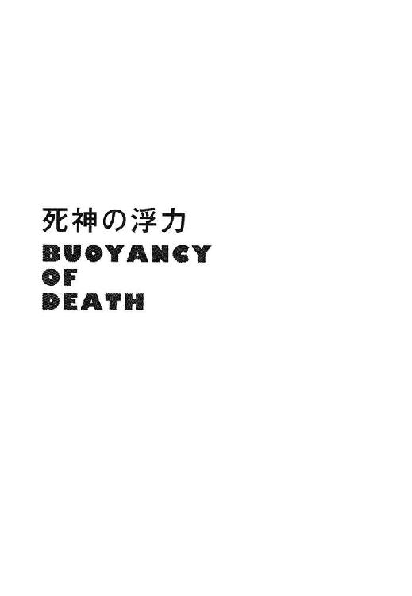
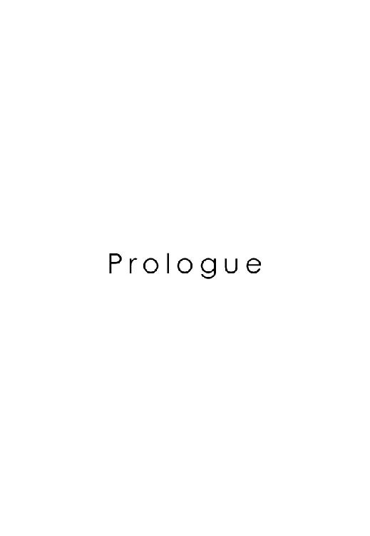
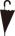
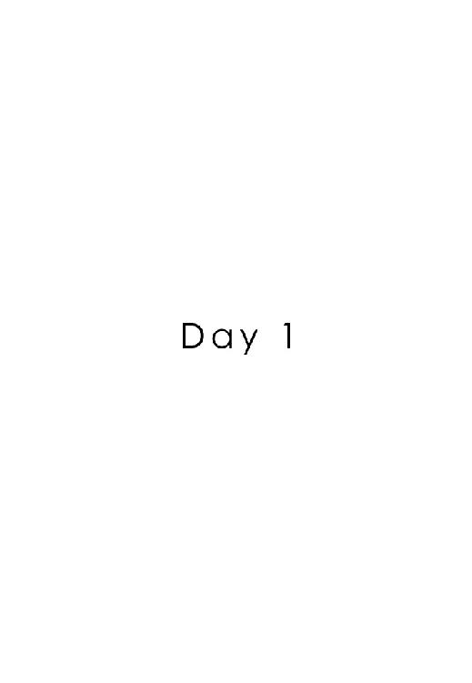
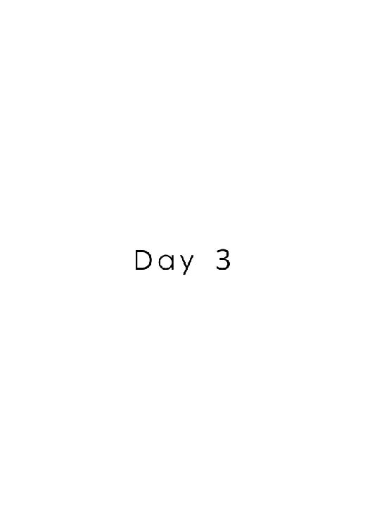
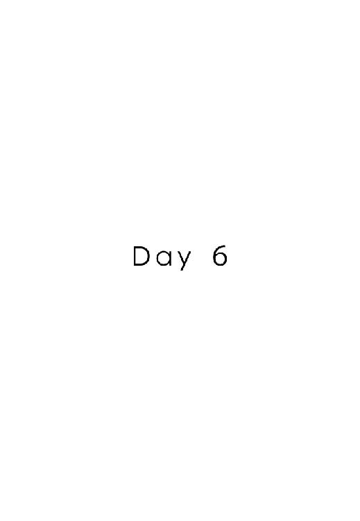
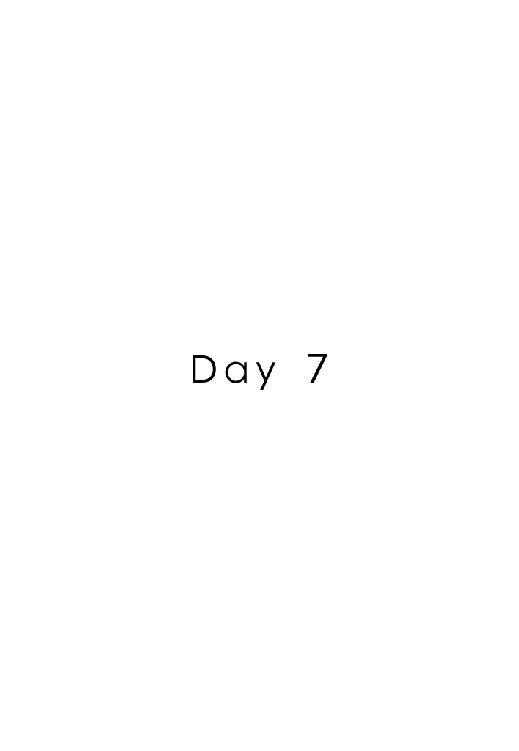
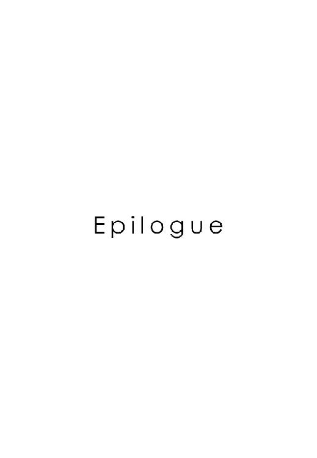

| 死神の浮力 | |
| 伊坂幸太郎 | |
| (2013) | |
死神の浮力
伊坂幸太郎
＊読む際のご注意、お断り等についてはこちらをお読み下さい。



押したのが伝わる。インターフォンの音は消してあったが、誰かが門扉脇のボタンを押したのは分かった。被害妄想による錯覚なのかもしれない。この一年間、不躾な訪問や無礼な電話、押しつけがましい善意のメッセージがこの家に押し寄せてきたため、僕たちは敏感になっている。
居間のドア近くに設置された室内モニターには、外でインターフォン前に立つ誰か、おそらくは記者だろうが、その何がしの姿が映っているに違いない。
先ほど二階の寝室脇の窓から外を見た時には、我が家の前の通りに、カメラを担いだ男が数人と記者たちが集まっていた。今にも一雨来そうな曇天であるにもかかわらず、屋根のない場所にたむろしている。雨合羽を準備している者もいた。一年前には、こういったマスコミの包囲網による圧迫感に精神が軋みを上げ、人影を見ただけで嘔吐と胃痛に苦しめられた。今はずいぶんと慣れた。胸の奥を絞られる緊張は感じるものの、嫌悪感は少ない。当初に比べ、マスコミ側の熱が下がっていることも関係しているだろう。事件直後、彼らは、僕がカーテンに指をかけただけでも沸き立ち、カメラを向けてきた。今はそこまでの緊張感はなく、テレビ局のリポーターが別のリポーターと雑談を交わしている。事件発生時の、抜きつ抜かれつのレースとは異なり、今は、歓談まじりに見物しに来ただけという風情すらある。
二十三歳でデビューし、専業で小説執筆を生業として、十数年になる。十八世紀のイギリスで活躍した風景画家の、その生涯を生真面目に描いた、今の僕自身からすれば、それはただ、生真面目さだけが取り柄にしか思えぬのだが、その中編小説により、知名度の高い文学賞を得て以降、様々な出版関係者と付き合ってきた。テレビ番組に出演することも増え、テレビ局の人間とも付き合いがあったが、事件を追う記者たちやカメラマンは馴染みがなかった。自分が追われるようになり、その「違い」に当惑し、圧倒された。今まで僕が仕事で付き合ってきていた人間は、文芸編集者にしろテレビ局の人にしろ、最低限、その熱に強弱はあるにしろ小説に対し何らかの興味を持つ者たちだった。が、事件記者たちはまるで違う。文芸担当の人間たちが、「乗用車」だとすれば、事件を追う週刊誌記者やリポーターたちは、「レーシングカー」のようなものだった。「誰よりも早くゴールを通過し、観客を沸かせる」という目的に特化し、普通車を圧倒する。事件を調べ、人々の好奇心を燃え上がらせることに、慣れている。
ただこの一年で、テレビ局や新聞社、もしくは週刊誌の人間たちに対する、僕の先入観は変化していた。以前よりも嫌悪感は減っている。彼らを十把一絡げにすることはできない、と学んだのだ。「事件を追うマスコミ」と括られる人間の中にも、さまざまな種類の人たちがいる。その当たり前のことにようやく気づいた。たとえば、取材を申し込んできた者の中には、一人娘を失った親に取材を行うことについて、まったく引け目を感じない人間がいる。その中にも、様々な人がいる。「悲しみに打ちひしがれる親から、無理やり言葉を引き摺り出すこと」にも意味があり、取材が事件解決に役立つはずだ、と信念により行動する者もいれば、憎き犯人への怒りのあまり、被害者についての配慮がおろそかになっているだけの者もいる。事件云々はどうでもよく、ただひたすらに、自分のやるべき仕事をこなすことが善だ、と確信している者もいれば、他社よりも早く、手柄を上げたい者も多い。好奇心だけで行動している者もいる。彼らは、他人の悲痛な表情に心を動かされることがなく、僕にこう言う。「作家という仕事についているからには、それにテレビにもよく出られているのですから、公人になるんですよ。公人ですから、ある程度までは取材対象になるのは致し方がないですよ。知る権利がありますから」と。「山野辺さんの発言が、事件解決に結びつく可能性はあります」
悪気はない。彼らは彼らの考えにより、行動しているだけで、しかも、彼らはこういった仕事が初めてではない。「悲しんでいる公人から、強引に、話を聞き出す」ことについては少なからぬ経験を積んでいる。
一方、僕や妻の美樹は初心者だった。娘を亡くす、という恐ろしい痛みを味わい、自分の皮膚の裏側を外界に晒されるような喪失感に苛まれるのは初めてのことであったから、素人力士が百戦錬磨の横綱と渡り合うのと似ていた。
防御一辺倒で、とにかく、態勢を整えるのに必死だった。
我が家にずっと張り込んでいた体格のいい、熊のような記者が突然、窓ガラスに向けて、物を投げてきたことがあった。石かと思えばそうではなく、何度か投げてくるものだから、窓を開けて、拾おうとしたところをカメラで撮影された。ぐっと堪えたものの、ぶつけられたものが、小さな白い饅頭で、包んでいる紙に、「なつみ饅頭」と名前が印刷されていることには、さすがに、かっとなった。亡くなった娘の名前が、「菜摘」であったことと無関係のわけがない。娘の名が書かれた食べ物を、窓に投げつけられ、平静でいられる人間がいるのか。さすがの僕も窓を開け、怒鳴り声を上げた。
投げてきた記者は悪びれもせず、雑誌名と自分の名前を道路から大声で伝えてきた。「話、聞かせてくださいよ」と。以前から、僕の携帯電話を頻繁に鳴らしてきた男だった。こちらが電話に出ないため、次なる手段を取ることにしたのか。そのまま家を飛び出し、男につかみかかりたい衝動を抑えるのが大変だった。
「それ、うちの実家近くの和菓子屋なんですよ。美味しいんですよ。じいさんばあさんが早朝からやってるような店でして」と記者は言った後で、「美味しい美味しい、なつみ饅頭、ぜひ一口どうぞ」とそれがその店の宣伝フレーズなのか分からぬが、口ずさむようにしてから笑った。
それで取材を受けると思ったのだろうか。僕には理解不能だった。着信電話の拒否設定をしたのは、あの記者の番号が初めてだった。
もちろん、そういった記者ばかりではない。心の底からつらそうで、「娘を殺された父親にマイクを向ける必要があるのだろうか」と煩悶しているのがありありと分かる態度の者もいた。「公人とはいえ、加害者ならいざ知らず、被害者ですからね」と心苦しそうに去っていく者もいれば、妻をいたわり、ほかの記者たちに、「もう取材はやめよう」と訴えてくれた者も存在した。
「マスコミ」と一つにくくってしまえば、彼らは、チャップリンいうところの、「群集という名の、頭を失った怪物」だが、一人ずつは性格もポリシーもこだわりも、心の動かされ方も異なっている。
僕がもし、作家でなければ、とはじめの数ヶ月は何度も考えた。加害者ならまだしも、今回は被害者であるのだから、それほどひどい取材攻勢には遭わなかっただろう。特殊な職業であるがために、このような事態になっている。
一方で、プラスに作用しているところもある。それも理解していた。日ごろ、付き合いのある出版社の雑誌の場合、手加減をしてくれる記者もいたからだ。
思えば、マスコミの関係者はまだ良かったのかもしれない。尊大な雰囲気を漂わせ、攻撃的な者もいるにはいたが、そうでない記者も多く、さらに言えば、彼らが熱心に僕のところに来たのは、加害者が決まるまでだった。
つまり、彼らが僕たちに執着していた一番の理由とは、「実は、あの、親である作家が犯人なのではないか」という一点だったのだ。今になってそのことが分かる。実際、犯人が捕まった後、面識のある記者が、僕に言った。「本当に、自分でも嫌なことなのですが、子供が殺される事件が起きると、どうしても我々は親をまず疑ってしまうんです。世間もそうです。もちろん、先入観は持たぬようにと自分に言い聞かせるのですが、どうしてもその考えを頭から払えません」
僕は理解を示した。「きっと、本当に親が犯人だった、というケースが、少なからずあるからだろうね」
年下の彼は顔をしかめ、「言い訳なんですが、そうなんです」と沈んだ面持ちになった。「ただ」と僕はどこまで届くのか分からぬ声を、それは抜き身の刃物で相手の脇腹を突くような切実なものだったのだが、「ただ、僕たちは違うよ。犯人は別にいる」と付け足した。
「ああ」と相手は悲しげにうなずいた。
「僕たちが、娘を殺すわけがない」
マスコミとは異なる、顔の見えぬ、匿名による悪意もあった。それは郵便の姿で出現することもあれば、電話の声として届くこともあった。おそらく、インターネット上には、書き込みという形で、気が遠くなるほどの量のメッセージが集まっているに違いない。彼らは、犯人が捕まったにもかかわらず、僕たちが犯人であることを望んでいるのか、おまえたちが殺したのだろう、と繰り返している可能性もある。
読者からもメッセージは届いた。多くは出版社への手紙やメールとして、だ。デビューした頃、風景画家の伝記めいた小説などを書いていたため、地味な作品が多く、限られた読み手にしか興味を持ってもらえなかった。しつこく繰り返すがそれは非常に生真面目で、その生真面目さ故に僕は自らの作風が好きだったのだが、端的に言って、売れなかった。それが、だんだんとテレビ出演が増えるにつれ、小説の売れ行きも増し、映像化の効果もあり、僕の作品に触れる読者は、僕には把握できないほどの数になった。つまり、さまざまな感性や常識を備えた、たくさんの読者を抱えることになったのだ。事件後、彼らから届く便りには、素直に受け取れぬ言葉も少なからず、あった。励ましも、批判も、今の僕には耐えられない。最初の二通ほどを読んだきり、あとは開く気にはなれなかった。
この一年、僕と妻は家の中で、悪意の集中豪雨を浴び、びしょびしょだった。屋根があろうと、この雨は降ってくる。
良心について考えることが増えた。
「アメリカでは、二十五人に一人は良心を持っていない、って話、聞いたことがある？」美樹が言ったことがある。マスコミや一般の人間たちの心ない反応に耐える中で、彼女も僕と同様に、良心について思いを馳せずにはいられなかったのだろう。「この間、ケーブルテレビを見ていたら、そんな話が出ていたんだけれど」
「ニュースで？」僕たちは一年前から、ニュース番組はまったく見なくなっていた。
「昔のロックバンドのドキュメンタリー。ドラムの人がインタビュー中にぼそりと言っていたんだよ。『アメリカでは二十五人に一人は、良心を気にしない脳みそを持っているらしいが本当か？』って」
「サイコパスと呼ばれている人たちだ」僕はずっと昔、小説を書く資料として読んだ本の何冊かを思い出した。「冷淡な脳と書いてあるのもあった」
彼らは表面的には、ごく普通の人間で、ごく普通の親であり、たとえば動物を飼い、たとえば立派な肩書きを持ち、生活している。成功者であることも多い。ただ、他人に共感をすることがなく、社会のルールを守る意識も薄い。良心を持たず、自分の行動が誰かにどういった影響をもたらすのかを、まったく気にせずにいられるのだという。
「『できないことがない』人たちのことだよ」
「え？」
「僕が読んだ本にはそう書いてあった。僕たちは普通、自分の欲望をそのまま叶えることはできない。相手を傷つけたり、ルールを破ってしまうことを恐れるから。ただ、良心を持たない人たちは、無敵だ。できないことがない」
「なるほどね」美樹は静かに、感情を込めずに呟く。
「そういった人たちは、他人の苦痛はまったく気にならない」
「迷惑をかけようが」
「何も感じない。ただ、だからと言って、そういった人たちが犯罪に手を出すわけじゃない。誰かの心を傷つけたり、誰かを利用したりはするけれど、分かりやすい罪を犯すとは限らない」
「分かりやすい罪？」
「僕の読んだ本にはこう書いてあったよ。良心を欠いた行為で捕まるのは例外的だって」
「わたしたちのことを、ほとんど犯人同然に扱った記者が、捕まらなかったように」
「そうだね」僕はうなずく。
「二十五人に一人」美樹が噛み締めるように言う。その多さにショックを受けているのか、それとも、適切な数字だと納得しているのか、表情からは分からない。
「そういう数字はだいたい胡散臭いけれどね。ただ、そういった人がごく普通に、すぐ隣で生活している可能性はあるよ。彼らはみんな、普通の人で、たいがい魅力的で、頭も良いらしいし」と言った後で僕は、「ああ」と呻いた。妻も同様に顔をしかめた。もともと、そういった意図で話をはじめたわけではないのだろうが、喋っているうちに僕たちの間には、ある一人の人間のことが浮かんだからだ。
良心を持たず、他人を苦しめ平然としている、あの男だ。僕たちの娘の人生を終わらせた、若い男だ。
またインターフォンが鳴った。ように感じる。
玄関を開けたら、彼らはどうするだろうか。勢い良く駆け寄ってくるか、それとも、恐縮した素振りで、近づいてくるか。「山野辺さん、お疲れのところ申し訳ないのですが一言、判決の感想を聞かせていただけないでしょうか」と彼らは言ってくるのかもしれない。
一言であれば、すでに、裁判所を出たところで口にした。
予想もしていなかった判決に動揺しています。まさか無罪になるなんて。
棒読みではあったが、僕はそう言った。
あれでは不満だったのだろうか。もしくは、あの時、コメントを聞いた記者とは別の記者だから、もう一度、同じことを話す必要があるのだろうか。頭の中に考えが広がると、その上にさらに別の考えが、砂浜に押し寄せる波のようにして、覆い被さってくる。思いが次々と折り重なる。
居間のソファに座り、呼吸を整える。大きく息を吸い、ゆっくりと吐き出す。手を軽く組み、目を閉じる。頭の中をできるだけ空っぽにし、「ただ生きているだけ」の状態に身を置く。この一年間ずっとやってきたことだ。
ジミ・ヘンドリックスの曲が頭を過ぎる。「僕は今日を生きられない」今日も明日も生きていない。「今日はぜんぜん楽しくない」
そのジミ・ヘンドリックスも今はもう、今日を生きていない。
去年の夏、娘の命が奪われて以降、「今日」という日は、一度も我が家に訪れていない。
二階の子供部屋はもとより、家のあちらこちらには娘の影が残っていた。
居間のテーブル、テレビを観ながらスプーンを動かしている娘がいる。口の中にプチトマトを放り込みすぎたがために、まばたきを多くさせ、おろおろしている。五歳の頃の娘だ。
玄関の三和土、ランドセルを背負い、言葉の意味も分からぬくせに、「初陣だよ、パパ」と学校に向かう娘がいた。入学式を前にした時だ。
トイレ、夜の暗さが怖かったからか歌を大きな声で口ずさみながら用を足す、三年生の娘がいる。
階段、足を滑らせ何段も転げ落ち、大泣きし、血相を変え心配する僕や妻に抱きかかえられた、幼稚園児の娘がいた。
家の壁や柱、畳、襖、床、冷蔵庫、洗濯機、窓やカーテン、テレビにも書棚にも、天井の模様や便器の傷、どんな場所にも娘の記憶が残っていた。そのいずれかを切り取って、自分の肌で暖めれば、そこから娘が甦るのではないか、と信じたいほどだった。
娘の思い出は、行事や特別な出来事だけではなかった。むしろ、なんということのない、ごく普通の日々の生活の、娘が発した言葉や行動、泣き顔や笑った目、不貞腐れた表情、自転車を真剣に漕ぐ後ろ姿や風邪で寝込んだ姿、そういったものこそが娘の記憶だった。娘の記憶は、僕たちの内面を埋め尽くすかのように、びっしりと詰まっている。にもかかわらず、娘は世界のどこにも存在していない。十歳になったところで、消えた。その事実が僕たちに気づかせてくれる。生きる望みがない、ということを教えてくれる。
こんなことがあるのなら。美樹は言ったことがある。「わたし、生まれてこなければ良かった」と。暗く、実感のこもった後悔の念だった。生まれてくるかどうかは、自分では選べない。僕も同じ気持ちだった。そもそもいつか人は死ぬ。生まれてきたところで、このように恐ろしいことが起き、いずれ死ぬのならば、はじめからいなくても一緒だったのではないか。
「たぶん、外のマスコミの人たちも、今晩中にはいなくなるんじゃないかな」僕は、美樹に声をかけた。少し前まで僕は、「マスコミの奴ら」と呼ぶことしかできなかったが、今は、「人たち」と呼べる。
美樹はソファに腰を下ろし、テーブルの上で数字のゲームを解いていた。クロスワードにも似た、数字を計算し、升目に埋めていくものだ。この一年、僕たちはよくそれをやった。時間を前に進めるために、数字を書いた。「計算」は時に、余計な思考を追い払ってくれる。
「どうして、マスコミの人たちはまだ外で粘っているんだろうね」妻は怒っているわけではなく、ただ純粋に疑問を口にしている。「コメントは言ったんでしょ」
「裁判所を出たところでね」
妻は、判決の場にいたくない、と言い、家に残っていたため、僕だけが裁判所に出向いた。
「じゃあ、外の人たちはそれ以上何を期待しているんだろう」
「僕がもしかすると特別なコメントを発表すると期待しているのかな。いや、違うな。彼らはたぶん、他社に抜け駆けされることを恐れているだけだよ。自分たちが立ち去った後で、僕がコメントを発したら、大失態だと思っている」
「貼り紙もしたんでしょ」
「したよ」心身ともに疲弊し、取材には応じることができないこと、コメントはいくら待っても出せないこと、それらを文章にし、貼った。
「たぶん、あなたが、マスコミを敵に回したからいけなかったんだよね」美樹は言ったが、それは明らかに、冗談口調だった。僕と彼女の間では定番とも呼べる、話題だ。
数年前まで、僕は頻繁にテレビに出ていた。ニュース番組に出演し、社会情勢や身近な出来事、事件や災害に対してコメントを発する仕事で、僕は小説執筆の気分転換になる上に、作品の宣伝になるだろう、と気楽に引き受けていた。気楽に引き受けすぎてしまったためか、あまり深く考えもせずに、思いつくがままに喋ることも多かった。マスコミを安易に批判するような内容もよくあった。
そして、僕のそういった、無神経で、幼稚な物言いが、テレビ局の人間に悪印象を与えていたらしい、と少し後になり知った。知り合いから、「よく思われていないよ。山野辺はまだ人気のある作家だから我慢しているけれど、そのうち、落ち目になってきたら、しっぺ返しが来るぞ」と忠告された。
忠告は現実となった。僕は三年前から新作を発表しなくなり、それに連れ、売れ行きも下がった。そこに、娘の事件が起きた。マスコミが高圧的で、粘着質な取材を僕に向けてきたのには、そういった背景があるのではないか。僕は時折、そう想像する。もともと、テレビ局は僕のことを嫌いだったのではないか。
サイドボードの上、電話がたびたび着信している。音は消してあったが、液晶画面は点灯している。携帯電話も同様だ。誰かのメッセージを受けては止まり、受けては止まる。どういう動機にしろ、僕たちに向けて何らかの言葉を伝えたい人が、世の中にはたくさんいる。その事実に、感謝すべきなのか、気をおかしくするべきなのか、それすら判然としない。
僕と妻は電話に出ないこともあれば、出ることもあった。以前は、すべてを無視すると決めていたのだが、今は変わった。受話器を持ったこちらに、「おまえの娘は犯されて死んだ！」と芸のない中傷をぶつけてきたり、留守番電話に悪意をたっぷり塗ったかのような伝言を残したり、そういった攻撃には、心を痛め、精神を削られながらも、慣れてきた。
何よりも、今の僕たちには、彼ら野次馬にはまったく感知できない道筋が、はっきりと見えている。彼らが囃して、見物しているのとは一本別の道を歩いている。だから、ぶつけられる悪意も許せるようになっていた。
「ねえ」美樹は居間の窓際に移動していた。カーテンに手をかけている。「わたしたち、乗り切れるのかなあ」
乗り切れるかどうか、僕のほうこそ知りたかった。そして、美樹は、僕の答えを欲していなかった。黙っていると彼女のほうが、「でもまあ」と軽やかな、この問題はすでに解決済みだった、と思い出したかのように、「余裕だね」と言い直した。
どういう意味か、僕には理解できる。娘を殺害された怒りからすれば、たいがいのことは、些末なことに思える。
ああいよいよ降ってきた。
美樹はカーテンを少し引っ張り、玄関前の通りを眺めている。僕がソファに座ったまま、その少しだけ見える窓の外に目をやれば、雲はずいぶんと黒々としていた。
「本格的に降ってきたら、それをきっかけに、記者たちも帰るかも」僕は言う。
「だといいけど」
「テレビ点けるよ」
いいよ、と美樹が覚悟をこめた声を出す。
テレビの主電源を入れ、リモコンを操作した。画面が明るくなり、料理番組のレシピが表示された。チャンネルを替える。不快な体験をすると分かっているにもかかわらず、僕はそうした。そうすべきだと思ったからだ。
夕方のニュース番組に行き当たる。いつもはすぐに違うチャンネルに替えるが、今日は違う。僕たちの事件が報道されていた。「無罪判決」というテロップの文字は毒々しく、映画「仁義なき戦い」のタイトルデザインを髣髴とさせた。僕は、「平常心を保て」と自分に言い聞かせていたし、この一年で心の筋肉、精神の殻が強くなっていたはずだが、それでも、あの男が画面に映った途端、内臓が燃えるような滾りを感じた。心臓は激しく動き、胸の部分が圧迫される。僕は腹を押さえながら、前屈みになる。美樹は、僕よりは落ち着いていた。怒りを失ったわけではない。怒りが皮膚を突き破らぬように、ぐっと堪えている。
彼女はたぶん、こう考えているのだ。
画面の中に立つ、この、二十八歳の男は、最も憎むべき、何があっても許してはならぬ人間だが、こちらが、憎悪にまかせて感情を爆発させることを、あの男は最も喜ぶに違いない。あの男を喜ばせないためにも、まずは、怒りを抑えなければならない。そう自分に諭し、冷静さを保っているのだ。
以前、僕が話したことを覚えているのかもしれない。「良心を持たない人間」について語り合うことが、僕たちには一種の儀式のようにもなっていた。
「普通、人間たちは誰か別の人間との関係で満足を得ようとするものなんだ。助けあったり、愛情を確認し合ったり、たとえば、優越感や嫉妬といった感情も、生きる原動力の一つだ。でも、『良心を持たない』彼らには、感情はほとんど意味がない。だから、彼らが唯一、楽しめるのは」
「楽しめるのは？」
「ゲームで勝つこと。そうらしい。支配ゲームに勝つことが、彼らの目的なんだ」
「支配ゲーム、って何なの」
「もちろん、そういうゲームを彼らが意識しているわけではないのかもしれないけれど、ただ、他者を支配して、勝つことだけが原動力になるんだ、って本には書いてあった」
彼らは慢性的に退屈なのだ、とも書かれていた。刺激を求め、ゲームに勝つためには、何でもやる。良心がないのだから、できないことはない。
「もし、あの男がそういうつもりなら」その時、美樹は小さいながらもしっかりとした声で言った。「絶対に負けたくないね」
僕の頭には別の言葉が過ぎる。「寛容は」と言いたくなる。寛容は自らを守るために、不寛容に対して、不寛容になるべきなのかどうか。文学者、渡辺一夫、〈渡辺先生〉のあの文章だ。
けれど、僕たちに備わっていた寛容さはすでに、蒸発している。
テレビ画面に、あの男が映った。「顔、映してもらっても構いませんよ。犯人ではないんですからね」と淡々と言う。
僕は、男の表情をうまく把握できないでいた。憎しみのあまり、視神経がおかしくなっているのかもしれない。彼は、マイクを向けられ、「無実が証明されてほっとしています」と答え、「控訴しないでもらえるといいのですが」と続けた。
「山野辺夫妻に何かおっしゃりたいことはありますか」と質問したリポーターがいた。僕がテレビ番組に出演した際に、会ったことのある人かもしれない。声に聞き覚えがあった。
頭の中は空洞だ。テレビを観て、男の姿を目の当たりにしているにもかかわらず、何も考えられない。
目を逸らす。
居間の柱が目に入り、ぬいぐるみの背丈を計り、そこに印をつけようとしている娘の姿が浮かぶ。
空っぽだった頭に、煮えた岩漿が流れ込んでくる。
「特に申し上げることはありません」と言った男は、まっすぐにカメラを覗きこんでいる。ように感じた。「これで、こちらが正しいことは証明できたんですし。あちらが間違っていたということですし」
画面は白くぼんやりと照り、視界には膜がかかっていることもあり、僕にはどんどん、男が把握できなくなる。すっと鼻筋が通り、涼しげな二重瞼も認識できなかった。が、彼の口元が緩み、唇の両端が少し上がり、白い歯が露わになったのは、僕の内面のさまざまな思いから、そう感じただけかもしれないが、見えた。
家の外で、笑い声がした。玄関前にいる記者やリポーターが上げたのだ。「それは傑作だ」と野太い声が響いてもくる。雑談の中での発言なのだろう。別段、僕たちのことや、テレビに映るあの男の発言に対して反応したわけではあるまい。ただ、僕の心はその笑い声によって、ささくれ立った。
「雨が」美樹がカーテンの外を見ている。「降ってきたよ」
軽い立ち眩みによろけながらも、一歩二歩と彼女の脇に寄った。カーテンの隙間から、窓の外を眺める。小降りではあるが、雨が落ちてきている。乾いた路面が、少しずつ色を変える。
家の外にいた誰かに見つかった。無礼なほどに指を突き出し、おそらくは、「あ、いた！」と隠れんぼの鬼さながらに声を発したに違いないが、立ち上がり、大きなカメラを向けてきた。まわりにいた人たちも活気付く。カメラのレンズは、僕たちの心を撃つための銃口のようだ。
「カーテンを閉めよう」僕は言ったが、美樹はそのまま、外を見ていた。どうしたのか、と声をかけると、「変な人いるね」と声だけで答えた。
脇から覗き込む。カーテンの狭い隙間から見ると、我が家の前の通りを、自転車がやってくるところだった。俗に、ママチャリ、と呼ばれる一般的な外見の自転車で、それ自体には奇妙さはなかったが、乗っているのが三十代半ばほどの背広を着た男で、しかも背筋が行儀正しい子供のようにまっすぐに伸びているところに違和感を覚えた。自転車の乗り方を教わったばかりか、もしくは、教科書通りに模範演技をするかのようだった。雨の道をするするとやってきたその自転車は、我が家の近くで停止した。サドルから降りると、しゃがみ、律儀に自転車に鍵をかけた。黒い背広に、細身のネクタイを締め、背は高く、痩せ型だった。知っている人？ と美樹が訊ねてきたが、僕は記憶にない。マスコミの人？ と次の質問が来ても、かもしれないね、としか答えられなかった。そうは見えなかったのも事実だった。まだ秋口であるのに、黒い手袋をしているのも妙だった。
男は、玄関前にいる記者やカメラマンたちのところに近寄る。僕の知人だと思われたのか、黒ずくめの男はあっという間に囲まれ、マイクを向けられた。
美樹の動きは早かった。窓から離れると、インターフォンの機械をいじる。モニター用のボタンを押した。そうすることで、玄関外の映像と声がこちらに聞こえてくる仕組みになっていた。
なぜとっさにそのような態度を取ったのかは分からない。ただ、男のことが気にかかったのだろうが、後から考えれば、重要な瞬間ではあった。彼女がモニターのボタンを押さなければ、僕たちには、男の会話は聞こえず、つまりは彼に興味を抱くこともなく、家に招き入れることもなかったはずで、そうであるのならばそれ以降の展開はまるで違った方向に進んでいただろう。
「ちょっと、どいてくれないか」男が言っている。インターフォンのある、我が家の門柱に近づくつもりなのだ。
「山野辺さんのお知り合いですか」誰かが質問していた。
「そっちは、お知り合いなのか？」
「取材に来てるだけですよ」
男はそこで、一、二、とその場にいるカメラマンや記者を数えている様子だった。「十人か。いつまでいるんだ」
そのあたりですでに記者たちは、不審な男だと察しはじめており、これはこれで絶好のアクシデントが起きるのでは、と期待も感じはじめたのかもしれない、声の調子に熱が帯びていた。ある記者が、「あんた、こんなのマシだよ。一年前はもう、ずらっと記者がいて、大名行列みたいなもんだったから」とぶっきらぼうに説明をしているのが聞こえた。
「大名行列？」男はそこで、「ああ、参勤交代か」と苦々しげに呟いた。「懐かしいな」と。
「懐かしい？」
「三回ほど同行したことがあるが、あれはなかなか面倒臭い」
僕はもちろんのこと、外にいる記者たちも困惑している様子だった。
「参勤交代が面倒臭いって、いったいいつの話をしているんだよ」荒っぽい記者が一人、つまらない冗談を言うな、と怒りながら問いかけた。
「俺が同行したので一番長かったのは、盛岡から五百五十六キロだ。十一泊十二日だったか。俺は途中で離脱したが。あれだったら、奥入瀬を歩く二時間のほうがよほど有意義だった。知っているか？ 大名の乗る駕籠は、あれは、かなり乗り心地が悪いんだ」
僕は、モニターから目を離し、隣にいる美樹の顔を窺った。いったい何の話をしているのか、と首を傾げざるを得ない。
そこで、ばちばちと激しい音が頭上で鳴った。雨脚が突如として激しくなり、屋根を勢い良く、叩きはじめたのだ。モニター越しに、外にいる記者たちの慌てぶりも伝わってきた。彼らは散り散りになった。雨合羽着用済みの者も泡を食っている。
室内にインターフォンの音が鳴った。はっと見れば、美樹もこちらに顔を向けている。応答ボタンを押し、「はい」と声を出した。普段なら応答などしないのだが、雨の音に動揺していた。
激しい雨の音がする中、男の声だけが落ち着き払っていた。「大事な情報を持ってきたんだが、中に入れてくれないか」
「どちら様でしょうか」美樹が探るように言うと、「千葉と言うんだが」と男の返事が聞こえた。

一日目
「この間、幼稚園の男の子が来たんだけれどね」
以前、私が調査を担当した歯科助手が言った。二十五歳の彼女は資産家の娘で、歯科医に勤め、働いていたのだが、私の調査が終わった後で殺された。相続の問題なのだ、と当の犯人から私は直接、聞いた。
が、とにかく、その時の彼女は三日後の死のことなど知らず、明るい声を出し、話をした。
「その男の子がうちの先生に向かって、言ったの。『歯医者の先生がいるから、虫歯ができるんじゃないの？』って。歯科医があるから、虫歯はあるんだ、という理論ね」
「戦争が起きるのは、武器商人のせいだ、という理屈と同じか」私はあまり深く考えずに言った。以前、地対空ミサイルを中東に売り込もうとしたアメリカ人を調査したことがある。彼は結局、取引の直後に爆発により死亡したのだが、生前はよく、「武器を売らなければ戦争がなくなるかもしれない」と自嘲気味に言った。「武器がなくとも、人は争うだろう」と私が意見を出すと、少しほっとしていたのを覚えている。
「戦争と武器商人？」歯科助手は笑った。「歯医者はそれとは違うからね。歯医者のせいで、虫歯になるだなんて、言いがかりだよ」
「そうなのか」
「本気で言っているの？」彼女は噴き出した。「千葉さんってどこかずれているよね」
私はむっとしない。自分の真剣な言動の一部は、人間からはちぐはぐに映ることがあるらしく、奇異なものとして捉えられることが多い。さすがに慣れてはいる。この仕事を私は、人間の時間で言えば、千年以上続けているのだ。
「君は、虫歯になった患者が来るたび、可哀想に、と思うのか」
うーん、と彼女は少し悩んだ。「患者さんの虫歯を見てもね、大変だな、とは思うけれど、可哀想だとは思わないかな。別に、すごい虫歯を見て、よしやるぞ！ なんて張り切ることもないしね。これは、ただの仕事だよ。必要なのは、技術と知識」
その気持ちはよく分かる。私も似た感覚ではあった。人間の死に出会うたび、大変だな、とは思う。が、だからどうだということもない。同情を覚えることもなければ、寂しさもない。歯科医が、削った虫歯に何も感じぬのと同じだろう。私は、担当した人間を調べ、死ぬべき時期にあるかどうかを報告する。
なぜか。
仕事だからだ。しかも歯科助手とは違い、技術や知識もいらない。強いて言えば、必要とされるのは、根気と我慢強さだ。人間との退屈なやり取りに一週間、耐えなくてはならない。
私が訪れた家は、東京の世田谷区、南部の住宅街にあった。少し前に、別の調査で来た際には、つまり数十年前だったが、一帯が雑木林だった。さまざまな昆虫が巣を維持し、生き続けており、人間の住宅はほとんどなかった。今回訪れると、立派な家が、とはいえ私自身が、「立派だ」と感銘を受けるわけではなく、人間が、「立派」と感じるだろう、と想像できるだけなのだが、とにかく立派な外観の住宅が並んでいた。
「インターフォンを鳴らして、『情報を持ってきた』といえば、中に入れてもらえるだろう」
情報部からはそう指示を受けていた。私は文句をぶつけた。「それは指示とは言えない」と。「ただの、抽象的な予想や希望に聞こえる。だいたい、そこで俺が口にする『情報』とは何か、まずそれを教えるべきではないか」
すると情報部の担当者が、「その情報」を教えてくれたのだが、こちらから質問をし、要求しない限り、何も提供してくれない、といういつもの情報部の態度に、またか、と呆れずにはいられなかった。
が、そこで相手が、「今回の調査結果はどうなる？」と訊ねてきたことには耳を疑った。
「調査はまだだ。結果が分かっているわけがない」
「とはいえ、おおよその予想は立つんじゃないか」
「馬鹿な。俺たちの仕事は予想することではなく判断することだろ。何が言いたい」
「今回、もし、その人間が死ぬべきではないと考えるなら、無理をする必要はない」
「無理をする？ どういう意味だ」
「無理に、死を与えなくてもいい」
「どういう指示なんだ。どうしてその人間を生かしてやらなくてはいけない。特別な人間なのか？」そう訊ねたものの、いまだかつて、「特別な人間」などいなかったことは、私も知っている。案の定、「特別な人間などいない」と答えがある。「その人間がどうこう、ということではない。ただ、望むなら長生きさせてやってもいい、という話だ」
「望むなら？ 誰がだ。その人間か？ それとも俺か？」
「どちらでも」
いったいどうしたのだ、と私もさすがに困惑し、語調を強め、問いただすようにした。すると相手は、話す相手を誤った、とでもいうような諦め口調になり、「何でもない。忘れてくれ。千葉は自分の仕事をやればいい」と言った。
「いつもそうだ。どうせなら、もう少し仕事に役立つことを言ってくれ」
「もし、今回、警戒されるようであれば、幼稚園の時の友人だとでも言えばいい。人間は、昔のことはほとんど覚えていないからな。そうすれば、怪しまれることはない。問題なしだ」
「千葉？ あの幼稚園に、千葉なんていたかなあ」山野辺遼はさっそく怪しんできた。情報によれば、今年で三十五歳という年齢のはずだ。人間にとって、年齢とは、その人間の品質を表す数値ではない。つまり、年嵩が増しているからと言って、優秀であるとは限らず、それはただの、肉体の、主に、血管や内臓の使用年数に過ぎない。
私の今までの経験からすると、人間の本質は五歳の頃からほとんど変化はない。
目の前の山野辺は、私がよく知る、「三十五歳の男」よりは老けて見えた。目のまわりが少し黒くなり、眉間に刻まれた皺のためだろうか。
「幼稚園の時の友達なんて。覚えていなくても仕方がない」私は答える。
「いや、僕は結構、記憶力がいいから、幼稚園の時の友達も大体覚えているんだけど」
「そんな子供の頃のをか」
「前に一度、名簿を確認したことがあるんだ。小説の登場人物の名前が思いつかなくて、役立たないかと思って」
話が違うではないか。情報部に苦情を言いたい。何が問題なしだ。結局、困るのは現場の私たちだ。
山野辺が首をかしげる。千葉、千葉、と唱えながら記憶の糸を辿るような面持ちになる。
「どうぞ」細い声が横から聞こえた。山野辺の妻、美樹がお茶を置いたのだ。黒のニットに、黒のパンツを穿いている。去年死んだ娘のために、喪に服しているのだろう。人の死と服の色に特別なつながりはない。黒い服を着ることで、悲しみが緩和されることもなければ、派手な衣装によって、死者が傷つくこともない。私はそれを知っている。が、人間のそういった習性に、目くじらを立てるつもりもなかった。彼らは、「科学」や「情報」を重要視する反面、縁起を気にし、験を担ぐこともある。退院の際、六輝にこだわる患者で溢れ、病室が空かず、混乱している現場を見て、呆れることにも慣れた。方違えや、霊験と呼ばれるものが重要視されていた時代もあったが、それはずいぶん前のことだ。
山野辺美樹の、袖から出た腕は細かった。山野辺よりもひとつ年下のはずだ。眼球の白い部分がひどく充血している。寝不足か、興奮か、それともアレルギーによる炎症か、いずれかだろう。
「幼稚園では、一緒に粘土で遊んだりして、君の家にも一度だけ行ったことがある」私は不審に思われぬ程度に、追加情報を付け足す。情報部から渡された資料に載っていたものだ。「山野辺の家には書棚がたくさんあった。親父さんのものだった。あとは、賞状もいくつかあった」
「ああ」山野辺は少し驚いた表情になる。「父が仕事の関係でもらったやつですね。いくつもあったから。通信会社の技術開発をずっとやっていて、年中ほとんど休みなしで、研究なのか実験なのか、昼も夜も会社にいたような人間でしたからね。昔で言うところの会社人間で」
「会社なのか人間なのか」
私の言葉に山野辺は一瞬、凍ったようになったが、その後で、「人間です」と返事をした。
「人間のほうだな」
「ずっと、父親失格の駄目な男だと思っていました。暴力を振るうわけでも、威張っているわけでもなかったんですけれど、いつも会社の仕事が優先で」
「仕事というものは大変なものだ」私の念頭にあったのはもちろん、この自分自身の仕事のことだ。ほかの同僚が、楽をするために手を抜くのを見るたび、「大変さのない仕事は、仕事とは呼べない」と思わずにいられなかった。
「もちろん大変だったんだとは思います。ただ、父には合っていたんでしょうね。真面目に研究をして、技術を検証して、商品開発に役立つことが。本人もそう言っていました。楽しかったし、夢中になっていたって」
「仕事が楽しいわけがない」それは私の本心だった。
「平日はもちろん、土日だってたいがい、出勤していましたよ。久々に父親に会うと、親戚のおじさんに挨拶するような緊張があったくらいで。会えば、いつも真面目な顔をして、つまらなさそうでしたけれど」山野辺は頬を歪めた。「ただ、あとで、つまらなかったわけではなかった、とは分かりました」
「どうだったんだ」
「父は、怖かったんですよ」と言った山野辺は笑ってはいない。
「何をだ」
それについては山野辺は答えず、「その日を摘んでいたんです」と言う。
「何だそれは」
「古代ローマの詩人の言葉にあるんですよ。その日を摘みなさい、と。父はそれに従っていました」
「ほう」意味は分からぬが、相槌を打つ。これはもはや、私の仕事の大事な、地味ではあるがもっとも基本的な作業と言えた。
「それで、千葉さんが持っている情報というのはどういうものなの？」美樹が、山野辺の隣に腰を下ろした。
「あの男の居場所だ」
私が言うと、右手にいる山野辺は目を少し強張らせる。
「山野辺、おまえは、裁判所から出たあの男がこれからどこに行くのか、知っているか」
あからさまに、山野辺の顔が歪んだ。いったい何が苦しいのかと私は訝るが、ほどなく、なるほどそういうことか、と理解する。あの男、本城崇は、姿を見せなくとも山野辺たちを攻撃しているようなものなのだろう。体に巣を作るウィルス性の病や腫瘍に近いのだろうか。
「どこに本城が行くのか、知っているんじゃないのか」私はさらに訊ねる。
「どうして、そんなことを訊くんですか」
「おまえたちは、あの男がどこに行くのか見当をつけている。だけどな」私は言う。「そこには、あいつは帰らないぞ」
山野辺の瞳が揺れた。情報部の指示もまんざら外れていない。効果はあった。
私は、山野辺夫妻に起きた事件のことを、人間の言うところの復習のつもりで、いやこれは予習となるのだろうか、とにかくその場で情報を整理する。はじめは頭の中でやっていたが、目の前の山野辺夫妻にところどころで、質問もした。
彼らは明らかに私のことを警戒していたが、私の情報を気にしているのか、激昂することも追い払おうとすることもない。怒るためのエネルギーさえないのか。
去年の夏、山野辺夫妻の一人娘、菜摘が死亡した。その日、山野辺は自宅にいた。世田谷の、静かな町にある一戸建てで、本を読んでいた。
「翌日、美術史に関するテレビ番組の収録があるため、一夜漬けにも似た知識の詰め込みを行っていた」事件後、唯一寄稿した手記の中に、山野辺自身がそう書いている。「娘の生涯が呆気なく終わろうとしているというのに、私は、初心者向けの美学の本を読んでいた」と。
妻の、山野辺美樹は留守だった。レンタルビデオ店まで車で出かけていた。その日、アニメ番組の新作がレンタル開始となっていたため、娘を喜ばせるために借りに行っているところだった。
菜摘は小学校の授業が終わり、近所の同級生二人と一緒に徒歩で帰宅する。が、家までは辿り着かない。同級生と別れたのは、山野辺家の百メートルほど手前の十字路だ。同級生の男女はそこで、「じゃあね、また明日」と手を振り、別の方角へと消えた。
そこからまっすぐに歩けば、山野辺の家に着く。ただ、彼女は着かなかった。
帰らぬ娘を心配し、山野辺と美樹は住宅街を走り回り、学校を訪れ、あちらこちらを探し回った。
警察に届け出たのは夜の九時だ。のちに週刊誌に、「時間がかかりすぎている」と疑問視されたが、それについては山野辺は手記の中で、「警察に届け出たら、娘の不在が事件であると認めるように思えて、なかなか決断できなかった。警察に頼るような大ごとではない、と思い込みたかった」と書いている。
私からすれば、そもそも人間は、論理的には行動しないことも多いため、山野辺の行動が異常とも感じない。「山野辺夫妻の行動は、不可解だ」と記事に書いた人物も、同じ場面に遭遇すれば、やはり、似たような不可解な行動を取るはずだ。
通報を受けた警察の対応は、悪くはなかった。らしい。素早く、周囲の捜索を行い、山野辺夫妻を落ち着かせ、万が一、身代金の要求などの連絡があった場合に備えた人員を配置した。
山野辺菜摘の死体は、翌日、山野辺の家から徒歩で三十分ほど離れた場所、街の外れを流れる川で発見された。流されてきたのではなく、無造作に放置された状態だった。
死因は窒息死だったが、首を絞められた痕は残っておらず、ビニール袋のようなものを被せられた結果か、酸素の足りない場所に押し込められたため、と報道された。
少し後になり、薬物を投与され、呼吸困難に陥った可能性も指摘された。体内から、アルカロイド系の物質が発見されたのだという。南米の先住民が使う毒矢につけられたものに近いらしく、その情報を目にした時、私は以前、仕事の際にその矢で狙われたことを思い出したが、もちろんそれは、ただ思い出した、というだけに過ぎない。
「さっき外にいる記者たちの話が聞こえてきましたけれど」山野辺遼はドアの近くの壁、インターフォンのモニターを見た。なるほど、外の音や声が聞こえたのか。「その時は、本当に大名行列みたいな眺めでしたよ。交代で張り込んで、まさに参勤交代の休憩時間みたいに」
「まったく違う」私は思わず、言っている。
「まったく違う？」
「参勤交代はそんなものとはぜんぜん違う」私は実際に参加した際の、参勤交代のことを思い返していた。あの制度は、人間の歴史から言えば二世紀半ほど続いていたため、私も仕事で何度か関わることがあった。「はじめは面倒で不経済な行事だと思ったんだが」
「千葉さん、まじめな顔で、変なことを言いますね」山野辺が苦笑した。
そう言われることに私は慣れている。
「学校で習ったよね。参勤交代のおかげで、各地の大名たちは自分の国に腰を落ち着けることはできなかったんでしょ」美樹が言う。「二百年以上続いたというんだから、効果があった制度だったってことなのかな」
「そうだろうな」私は同意する。「ただ、当時、人が江戸に溢れて、負担になったのも事実だ。しかも、宿の経営も、参勤交代を見越すようになってくると、簡単にはやめられない。やめたくてもやめられない、という事情もあったはずだ。おまけに、江戸に来た人間は、故郷よりも江戸のほうを好むようになる。今と同じだ。都会に出たら、その刺激がくせになるからな」
「千葉さん、見て来たように喋るんですね」
「見たからな。大名行列は俺の嫌いな、あれを起こす」
「あれ？」
「渋滞だ」私は、大名行列によって生じた行列、一番長い時で、総勢何千人、数キロの列を思い出し、溜め息を吐く。「人間の発明したもので最悪なのは、渋滞だ」と思わず、いつも考えていることを口にした。
「最高なのは？」と訊ねてきたのは美樹だ。
「音楽に決まっている」私は即答する。「ミュージックだ」
山野辺夫妻は顔を見合わせていた。
「江戸時代にも音楽はあったの？」美樹が、隣の山野辺に訊ねた。
「あったんですか、千葉さん」
「ピアノが十八世紀はじめには登場した。それ以前も、楽器はいくらでもある。どの時代にもその時代ごとにポピュラーミュージックがある。このあたりだと何だったか。清元だとか小唄だとか」
「最初は情報が錯綜して」山野辺は当時の混乱を思い出したのか、顔をしかめながら話しはじめた。「体の大きな男が町をうろついていた、とか、外国の人攫い集団の車が走っていたとか。そのたびに、振り回されました」
「あの時は」美樹も苦々しそうな表情になった。「学校の友達も良かれと思って、いろんな情報を教えてくれたんだけれど。事件の数日前、学校帰りの菜摘に声をかけてきたおじさんがいた、とか」
「あったね」山野辺は肩をすくめる。「その男が子供たちを呼び止めて、毒蛇の話をした、って言うから、毒から連想して、その男こそ犯人だ、と色めきたったけれど」
「違ったのか」
「単に、近所に貼り紙をして回っている人だったみたい。どこかの家から、爬虫類が逃げたから気を付けるように、って」
「爬虫類というと」
「蛇とか」美樹が答えた後で、「鰐とか」と山野辺が続ける。
「鰐はずいぶん大きそうだが」
「卵だったか子供だったか。どこからかそういうのを入手する人がいるんですかね」
「それならもう、鰐が犯人ということでも良さそうだがな」私は本気で言ったのだったが、二人はがっかりした表情でかぶりを振る。
「結局、三週間ほど過ぎた頃に、犯人が捕まりました」
山野辺の家のある町の川を挟み、隣接する町のマンションに住んでいる当時二十七歳の男だった。名前は、本城崇だ。「確か、無職だったか」私は、情報部から聞いた情報を頭の中でなぞる。
「無職」山野辺は感情を殺すようにして、溢した。「仕事をしていない。けれど、裕福な男」
本城崇が十代の頃に自宅が火事になり、官僚だった父親と投資会社を運営していた母親が死亡した。その預貯金と株、外貨などを得て、それ以降、働くこともなく、優雅に暮らしている。情報部の情報には、そうあった。
「荘園もか」と確認しようと思ったが、やめた。私たちと人間とでは、時間についての感覚がまったく異なるため、「昔」や「今」、「大昔」と「ついこの間」などの認識がずれることが多い。おそらく今は、荘園制度はないはずだ。「本城が逮捕されるもともとのきっかけは何だったか」
その名前を耳にするたび、彼ら夫婦の顔にひずみができる。体の内側に激痛が走り、罅が入るかのようだ。
「目撃証言が」山野辺美樹が答える。「川沿いの住宅に住む、おばあちゃんがね、あの男と菜摘が歩いているのを見ていたの」
あの男、と発音した際に、美樹の顔面にまたひび割れが起きた。
「おばあちゃんと言っても、七十代の半ばで頭もしっかりしているしね、ニュースを見て、すぐに警察に連絡してくれて」
「その時は、か」
山野辺美樹の表情がぴくりと動く。「そうだね。その時は」
老婦人の目撃証言は、裁判がはじまった途端に、ひっくり返ったのだ。
が、それはともかく、事件直後にはその証言により、警察は捜査を進展させた。本城の存在が、疑惑の人間のリスト上に登場するのには時間がかからなかった。小学校から川沿いへ向かう途中にある、コンビニエンスストアの監視カメラにも、本城と菜摘の姿が映っていた。さらに警察が、山野辺夫妻に、本城の写真を見せたところ、「ああ、彼だ」と思い出した。
「もともと、おまえたちは、本城と親しかったわけか」
「親しいというわけではないんですけど。近所に住んではいましたし、それなりに交流はあって」山野辺は苦しそうだった。「初めて会ったのは、事件の二ヶ月ほど前だったんですが」
「無理をして話すことはない。大方、想像はつく」私は言った。
気を使ったわけでもなければ、私の想像力が優れていたわけでもない。すでに情報を得ていただけだ。
はじめに、路上での揉め事があった。
山野辺遼の住宅から少し離れた場所、大きな公園の裏通りなのだが、そこで、若い男女が言い合いをしていた。女が逃げようとするところを、男が強引に引っ張る。女が振り払おうとし、男がさらに強く引く。山野辺遼は痴話喧嘩かと思い、通り過ぎようとしたのだが、その割には二人に他人同士の気配があったため、面倒だと思いつつも、「何かありましたか」と声をかけた。すると若い男はばつが悪そうに、「関係ないだろう」と怒り、一方の女は、「ちょっと助けてください」と縋るように言った。そこで山野辺は、「いや、その彼女が知り合いに似ているので」ととっさに嘘を吐いた。
「知り合いって誰だよ。他人の空似じゃねえのか」
「でも似ているんです」「誰にだよ」
「うちの婆ちゃんの若い頃に」「ふざけんじゃねえぞ」
ふざけたつもりはなく必死だった。と山野辺遼は手記で述べた。腕力に自信はなく、逃げ出したかったくらいだ、と。
男は結局、不本意そうにその場から消えたが、それは山野辺遼に恐れをなしたからではなく、別の若者が近くで警察に通報しようと携帯電話をかけていたからだ。
その、携帯電話の男が、本城崇だった。
女が礼を言い、去り、二人きりになると本城崇は、「山野辺さんですよね」と言った。小説読ませていただいています、と丁寧に話しかけてきた。テレビに出るようになって以降、街で声をかけられることは多くなっており、そのこと自体は異常なことではなく、警戒もしなかった。
本城は整った顔立ちのまま、笑みを浮かべ、「山野辺さん、正義感が強い人なんですね」と言った。悪意は見受けられなかったが、どことなく通常の会話とは違う温度を感じ、山野辺は当たり障りのない挨拶をしてその場から早く離れたかったが、本城は話を続けた。
その後、二人で以下のやり取りがあった。私が情報部からもらった資料に書いてあったが、手記にはなかった。情報部が独自に収集した記録かもしれない。
「ドストエフスキーの『罪と罰』ってありますよね」本城が唐突に言った。
「あ、うん、あるね」
「あれをもとに作られた映画があるじゃないですか。白黒の。『スリ』というのが」
「知らないけれど」
「あそこで主人公の男が警察に言いますよね。『才能ある優秀な人間が不遇な場合、犯罪を犯す自由もあります』って」
「まさにそれは、『罪と罰』の話の起点だ。優秀な人間は、犯罪を犯してもいいんじゃないか、という」
「それで警察が、『優秀な人間かどうかを誰が決める？』と訊ねますよね」
「その映画は知らないんだ」
「主人公は、『本人です』と答えます」
「本人が決めるのかい。人間は自分に甘いような気がするけれど」
「映画の中でも警察がそう言います。優秀な人間かどうかを自分が決めるなんて、と呆れます。主人公はこう答えます。『甘いのは最初だけです。自重します』」
「いったいそれが」
「恰好良いと思いませんか。ぼくにとっては、あれが理想なんですよ」
「あれってどれのこと」
「あの、非情さです。あの監督の映画はどれも理不尽な悲劇ばかりを描いています。しかも、役者はみんな人形のように無表情で、その理不尽さを受け止めていきます。山野辺さん、どうしてだと思いますか」
「どうしてだろう。僕はその映画監督を知らないけれど」
「きっと、世の中を埋め尽くしているのは、人生の本質は、理不尽な不幸だと知っていたからですよ。だから、登場人物たちはそれを淡々と受け止めているんじゃないですか。ほら、山野辺さんの十年前に発表された短編『植物』に出てくる主人公もそうですよね」
「あんな作品、よく知っているね」
「とても好きです。スズランに毒があることもしっかり書いていましたし」
「スズランはそうだね、根はもちろん、花も猛毒があるから」
「あの、主人公の画家に、感情移入してしまいました。植物をデッサンする日常の後で、その植物から毒を取り出す描写に繋がるところが痛快でした」
「痛快という感想が正しいかどうかは分からないけれど」
「そうですかね」
「あの小説のために使った資料が家にあって、おかげでうちの娘も毒に興味を持って、それはとても困ったんだ」
「毒に手を出したんですか」
「まさか。毒なんて簡単には手に入らないよ」
「でも、薬局で薬は手に入ります」
「毒と薬は」
「紙一重ですよ」本城は表情を変えず、話す。「解熱剤を大量摂取すれば、体温が低下して、虚脱状態になります。副作用が起きれば、ただの風邪薬でも、全身が火傷状態になって、失明する可能性もゼロではない。それに、山野辺さんの、『植物』でも書かれていたように、どこかの先住民の毒矢の成分も、筋弛緩剤の役割を果たすわけですし、毒も薬も一緒です」
「詳しいんだね」
「こっそり、海外からそういった物を手に入れてみたんですよ」
「本当に？」
本城の表情は変わらない。軽口にしては分かりにくかった。
その時の山野辺は、本城の言葉を重くは受け止めなかったのだろう。若者にありがちな、薀蓄好き、不良気取りだと思っただけではないか。だから、「うちの子の困ったのは」と話を続けたに違いない。
娘が小学校の宿題で、簡単な絵本を作ったのだけれど、と山野辺は話した。
娘の菜摘は、「かちかち山」をそのまま模した絵本を作ったが、ラストを少し改変した。「泥舟が沈み、溺れるタヌキが間一髪のところで、板にしがみついて、助かってしまうんだ。そしてそのタヌキが何と、復讐のために、毒をばらまくという展開でね、新機軸というか」
「毒をばらまくんですか」
「そうなんだ。東京のダムに毒が撒かれて、水道が汚染されて、みんなが大変なことになる。かなりブラックな展開だったけれど、でも、最後の最後には、ウサギがタヌキを成敗するんだ」
「それを学校に」
「提出したんだよ。『新かちかち山』という名前で。毒で苦しむ人の絵が中途半端に上手くて、ちょっと問題になってね。まさに、問題作だ」と山野辺は苦笑した。「担任の先生は、父親の僕が作家であるからか、創作物を批判することに及び腰のところもあって、でも、『菜摘ちゃんにそういう、怖い気持ちがあるんじゃないかと心配になってしまって』と相談を持ちかけてきた」
「娘さんは何か言ってましたか」
「あっけらかんとしたものだよ。『だって、パパの部屋に毒の本があって、怖くて面白かったから』と言って。まあ、子供なんてそんなもんだよ」
本城はそこで初めて、嬉しそうに歯を見せた。「でも、ダムに毒を撒いても、きっとその後の浄水場とかで除去されるから、大丈夫だったのかもしれませんよ」
「いや、そういう問題ではないんだと思う」山野辺も苦笑した。「そこまで書いてあったら、余計に大騒ぎだったよ、きっと」
「あの男が」今、私の前に座る山野辺の声は小さかった。「まさかあんなことをするなんて思いもしなかった」
「今はどうなんだ」私はそこで深く考えたわけでもなかったが確認する。「あの男のことが分かったのか」
「今は」山野辺はぼそりと言う。「少しですけれど、理解できてきました」
「ほう」
「あの男は、良心がない人間なんですよ」
「何だそれは」
「そういう人間が世の中にはいるんです、千葉さん」山野辺はそう答えた。諦めに満ちた言い方だった。「そういう人間もいるんだと認めるしかない。良心を生まれながらに持たない人間が」
「クローンというやつか」私は言う。それを研究している学者に会ったことがある。「知り合いが、動物の細胞からクローンを作る研究をしていた。同じ遺伝子を持った動物を作る。あれなら、親がいなくても生まれるんだろう。それが、両親のいない人間か」
「それではなくて、良い心の良心のほう。両親はいるに決まってるから」美樹が笑い、指摘した。
ああ、そうか、と気づくがここでたじろぐと余計にややこしくなることを、私は経験上、知っている。堂々としているのが得策だ。「その、良い心を持たない人間がどうしたんだ」
「人間の中には、他人を苦しめてもまったく気にならない人間がいるらしくて」山野辺美樹が言い、そして山野辺遼がさらに、サイコパスと分類される人間について、続けた。「アメリカでは、二十五人に一人がそうだ、という本もあるんですが」
確率や統計とは結局何も意味していないことが多いが、人間は大半のものを、確率や統計によって把握するほかないのも事実だ。
「良心がない人間は、ごく普通に、僕たちと同じ社会で生きているんです」
「まあ、確かに、そういう人間にはよく会うが」
人を利用することに長け、平然と嘘をつく。飼い犬を餓死させてもさほど気にかけない。そういった人間を調査したことは、何度もある。彼らは健康で、知能が高く、他人を魅了し、惹きつける。そして面白いことに、彼らは犯罪を犯すことは滅多になく、普通に暮らしている。
「どうしてそういう人がいるんでしょうね」
「どんな人間だっている。単に、ミカンの中には甘いものもあれば酸っぱいものもある、ということと同じだろう」私は言うが、実際のところ、その果実の酸っぱさ自体を把握できないのだから、実感のこもった言葉ではない。
「そういう人間は単に、酸っぱいだけということ？」
「甘いだけ、と言ってもいい。とにかく、腐ったり、傷んでいるわけではない。本城崇もそうだろう？ 精神に異常はない。無職で、金はある。良心はない。ましてや」
「ましてや？」
「クローンでもない」
「千葉さん、今日の判決は知っている？」
「昼過ぎのニュースで観た」嘘だ。情報は、資料に挟まっていた。「無罪なんだろ。信じられないな」と私はなるべく憤慨した感情が表現できないだろうか、と期待しながら言う。
山野辺美樹が困惑した表情になる。怒りよりも、戸惑っている。
「俺は何か変なことを言ったか？」
「千葉さんの言い方って、感情がこもっているようなこもっていないような」
「表現が苦手なんだ」
「そういえば、普通の人間はね」山野辺がふと思い出したらしく、喋りはじめた。「感情に関連した言葉には強く反応するんですよ。たとえば、『愛してる』とか、『悲しい』という言葉に。心理学者の本に書いてありました」
「ほう」
「ただ、サイコパスと呼ばれる、良心のない人たちは、それがないみたいなんです」
「どういうことだ」
「『愛』にも、『机』にも、どちらの言葉にも同じ反応をする。感情というものを把握できていないのかもしれない」
「まさに、千葉さんもそんな感じだね」山野辺美樹は言うが、私が気にかけているほど、警戒した様子はない。
「確率からすれば、俺もその、良心のない人間であってもおかしくないからな」実際のところ私は、人間の定義による「良心」は持ち合わせていない。ただ、統計の人数にも入っていないだろう。
山野辺が苦笑する。妻の美樹はもう少し、はっきりと笑った。「千葉さんは真面目なのか、ふざけているのか分からないね」
「裁判の成り行きからすれば、無罪になる予感はありました」山野辺が喋る。
「ほう」
逮捕後、しばらくして本城は、殺人の容疑を認めた。が、裁判がはじまった途端、検察の陳述を否定した。
自分は、山野辺菜摘を殺害していない。「証人がいるぞ録画があるぞ」と脅され、頭が混乱したために自白をしてしまったけれど、あれは全部、嘘でした、と主張したのだ。
マスコミをはじめ、大方の人間たちは、本城崇のその訴えを往生際の悪い、最後の抵抗だと思ったらしい。
「それが、裁判が進むにつれ、状況が変わったんだったな」私は何か相槌を打ったほうがいいだろう、と判断し、言う。
山野辺が深くうなずく。裁判がはじまるとほどなく、目撃証人として呼ばれた七十代の女が突如、「目撃したとは言いましたけれど、実は、自信がありません」と言いはじめた。
それまで、目撃証人であるその老女は、「菜摘ちゃんと本城が一緒に歩いているのを見たよ。あれは間違いないね。あれが見間違いだとするなら、わたしが毎日見ているテレビが実は人参だったとしても驚かないよ」と滔々と述べていたという話だった。「もし、年寄りだから目が悪いんじゃないか、と疑っている人間がいるならね、わたしの二十メートル先に立ってみなよ。顔のほくろの数を当ててやるから」と自信満々だった。
それが法廷の場に呼び出された途端、「目がね、しょぼしょぼするんだよ」と弱気になり、「警察が、わたしみたいな年寄りの証言は当てにならないと馬鹿にしているようだったから、むきになったところもあってね、実際には、あそこで見かけたのが誰だったのか、はっきりとは分からないんだ」と言い訳めいたことを述べ出した。
「あれは、自分の意思なのか？」私は訊く。
「どういう意味ですか」
「証言を翻せと誰かに脅されたんじゃないのか」
念頭にあったのは、以前、別の国で、重要な裁判の証人となった男に付き添った時のことだった。その男は、「証言を変えろ。さもなければ」と脅された結果、上司の不正についての証言を翻し、その後で車に轢かれ、死んだ。脅し通りにしたにもかかわらず死んだのは、上司が心配性で、いつまた裏切られるかもしれぬと思ったからでもあるが、さらに言えば、私のせいとも言えた。調査結果で、「可」と報告したのは私だからだ。
「その証人の老婦人は、脅されたんじゃないのか？ たとえば、本城に。証言を急に変える場合は、脅されている可能性がある」
「違います」山野辺は首を左右に振った。「あの男は、捕まっているままだから、証人を脅すことはできない」
「そうか？ 直接会って、圧力をかけることはできなくても、間接的な方法はあるかもしれない。誰か別の人間が脅したりな」
「誰か別の人間」山野辺はその言葉の意味を噛み締めるように言う。「それはあるかもしれません」
「ああ、そうだ。そういう意味では」私は、情報部から仕入れていた情報を口にする。「いったい誰が、例のマンションの男を見つけてきたんだ」
「マンションの男？」山野辺が聞き返すのと同時に、山野辺美樹のほうが、「ああ、ジェームズ・スチュアート」と言った。
「日本人ではなかったか」私の得ている情報では、轟という名の、四十過ぎの男だった。
「千葉さん、『裏窓』を観たことないの？ その主人公がジェームズ・スチュアート」
「窓ならよく見るが。表と裏はあまり気にしたことがない」
「映画の題名。足を骨折したカメラマンが、窓から物騒な事件を目撃するんだけれど」
言わんとすることが、私にも分かりはじめる。
情報を思い出す。轟は、マンションの一室、南向きの日当たりの良い部屋で過ごしている男だ。会社を早期退職したものの、次の仕事も見つからず、失業手当をもらいながら、ひたすら家に閉じこもっている。年金暮らしの母親と二人で暮らし、食事や買い物はその高齢の母親がやっている。確かそんなところだった。そして、轟のやることといえば、部屋の中からデジタルビデオカメラを使い、外の人通りを録画するのを楽しむことくらいだったはずだ。苗字に、「車」という漢字が三つ入っているだけあって、車の行き来に興味でもあったのか、と考えたくなる。
「轟も、そのジェームズ何とかと同じように、窓際でカメラを使っていたということだな」
「そうです」山野辺はうなずく。「轟さんは、それまで誠実に生きてきたけれど、報われなかったんです」
「何だそれは」
「真面目に仕事に励んでいたのに、リストラに遭って、がっくり来たんですよ。それで引きこもっちゃった」
「肩を持つような言い方だな」
山野辺は、肩を持つというよりは誰かに持たれるようにして、すくめた。「本物のジェームズ・スチュワートは、アメリカの役者のほうですけど、いい人過ぎて、アメリカの良心と呼ばれてたらしいです。ゴシップもなければ、離婚もなくて。たぶん、浮気もなかったんだと」
「浮気経験ありのお義父さんとは違って」美樹が口を挟む。
「そうだね。あの人はやりたいことをやった。そういう人生を選んだから」山野辺の言い方は、大事な記憶を思い出しながらでもあるようで、どこか遠くを眺める様子でもあった。
「女好きだったわけか」私が合いの手としてそう言うと、山野辺は困ったような顔になる。父親を侮辱されたことに対する反応かと思ったが、そうではないようで、「あの人は、女好きともまた違っていました」とぼそぼそと言った。「さっきも言いましたけど、父はただ、その日を摘んで、生きていたんですよ」
「それはどういう意味なんだ」
「日々を楽しむことだけを考えていたんです」山野辺の説明は先ほどと変わらない。はぐらかすというよりは、細かく喋ることに抵抗があるようでもあった。
「まあ、とにかく」私は話を戻す。「その、轟という男が、証拠映像を録画していたわけだな」
「ええ、あの男に有利な」
当初、警察が、本城崇を犯人と断定するきっかけとなった証拠は三つ、あった。そのことは事前の資料に書いてあり、私も知っていた。
一つ、コンビニエンスストアの監視カメラが、山野辺菜摘と本城の並んで歩く姿を記録していた。
二つ、川沿いで二人を目撃した老婦人の証言があった。
三つ、山野辺菜摘の爪には、本城の皮膚の断片が残っていた。
本城崇は、「山野辺菜摘と遭遇し、一緒に歩いていた」とはすぐに認めた。
言い分はこうだ。山野辺一家とは面識があるし、娘のことも知っていた。彼女が家から離れた場所を歩いていたから、どこへ行くんだ、と声をかけたが、彼女はふざけて、「教えない。内緒」の一点張りで、とはいえ、せっかくだからと十字路までは並んで歩いていたのだ、と。
「その時に、菜摘ちゃんが可愛らしいキーホルダーを持っていたので、見せてよ、とちょっと強引に、ぼくが引っ張っちゃったんです」本城崇は、三つ目の証拠に関しては、そう供述した。「キーホルダーというにはやけに大きくて、菜摘ちゃんのこぶしくらいはある、犬のぬいぐるみで。こんなに大きかったら邪魔じゃないか、とからかっていたら、菜摘ちゃんが、返して、と手を伸ばしてきて。その時に、ぼくの腕を引っ掻いたんです。それがほら」と右腕の傷を、警察には見せた。「だから、菜摘ちゃんの爪に残っていたというのは、その時、引っ掻かれた痕に過ぎません」
菜摘の服やランドセルから本城の指紋や服の繊維が発見されたが、それについても、「キーホルダーの取り合い」の際に付着したのだ、と説明した。
もちろん警察は、本城の言い分を信用しなかった。むしろ、「子供と大人のキーホルダーの取り合い」などあったわけがない、と決めつけた。
そこに登場してきたのが、新たな証人、轟だった。
マンションから盗み撮りをしていた轟は、まさにその、「キーホルダーの取り合い」の場面を録画していたのだ。
「どうして、警察が捜査していた時には、轟の存在は注目されなかったんだろうな」私は訊ねた。興味があったわけではない。そのほうが山野辺が話を進めやすいように感じただけだ。
「警察はこのあたりの近隣住人に、聞き込みはしていたけれど、虱潰しに当たっていたわけではなかったですから」
「しかも、轟さんはもともと、部屋に引きこもっていたしね」美樹が続ける。「警察が来ても、母親が応対しただけだったのかも」
「なのに、本城の弁護士がその証拠を見つけ出したわけだな。幸運だ」
「『最後まで、被告人の無罪を信じて、証拠を探していただけです』弁護士は感極まりながら、そうコメントしていました」山野辺は感情を込めずに言う。「そして、引きこもりの男、轟さんが撮っていたビデオを発掘して」
録画された映像には、本城の供述通りの、つまりは、「子供と大人のキーホルダーの取り合い」の一部始終が記録されていた。マンション前の向かい側の長い道路を、本城と山野辺菜摘が並んで歩いている。本城はキーホルダーをじっと見つめており、それを、ぴょんぴょんと飛び跳ねた菜摘がつかもうとしていた。本城が話した通り、ぬいぐるみと呼んだほうが近い、大きなものだった。「取り合い」という表現で受ける印象よりは、よほど穏やかで、微笑ましい、大人と子供の遊びに見える。菜摘の爪が、本城の手を引っ掻いてしまう場面も映っていた。本城が、「大丈夫だよ」と和やかに手を振ってみせ、菜摘が、「ごめんね」と何度か謝るかのような、たわいのないものだ。
「そこから、裁判の風向きが変わりはじめたんです」山野辺は言う。
有罪の根拠のうち、「目撃証言」は証人が自信を失い、「爪に残った皮膚片」については犯行時のものとは異なると判明した。「コンビニエンスストア」の映像については、「ただ二人で歩いていただけ」という本城の供述を補強するものとなった。
検察が寄りかかっていた、三本柱がいずれも揺らぎはじめ、自白を強要された、と本城崇が訴えれば、もはや、説得力がないのは、私にも想像できる。
「ここ最近、冤罪事件がいくつも発覚していたから」山野辺は言う。「疑わしきは罰せず、の基本に戻りたくなったのも分かります」
「誰がだ。誰が戻りたくなったんだ。裁判官か」
「裁判官もそうだし、世間もそうですよ」
「それで」私はそろそろ話を進めたくなった。「それで、山野辺はまず、どうするつもりだ」
「え？」
「本城は無罪になった。検察は控訴するとしても、それまでは」
「控訴しないかもしれません」山野辺が、私の言葉を遮る。「次の裁判で、状況をひっくり返す自信があれば、それができる証拠を持っているのならば別ですが、そうじゃなければ検察も諦めるかもしれません」
「そうなれば無罪で確定だ。本城は犯人ではない、と認めるわけか」
「認めるというか、無罪が確定する可能性はある、というだけです」山野辺の目はそこで、色を失った。最初に、この家に入ってきた時の表情に戻ったと言ったほうがいいかもしれない。自分の予定を思い出したかのようだ。
「世間が注目している事件であってもか」
「注目」山野辺はその言葉を発音し、意味が口の中に広がった、とでもいうような間を空けた。「確かに、注目はされているかもしれませんね」
「千葉さん以外の人には」美樹が続ける。
「どういう意味だ」
「千葉さんは何だかんだ言って、裁判のことなんて興味がなさそうだから」
「そんなことはない」私は棒読みする。興味などあるわけがなかった。
「ただ、控訴期限は二週間ですから、検察には二週間、余裕があります。すぐに決断できないのは事実ですよ」
「ようするに、山野辺、おまえにも二週間あるわけだ」
「え」
「違うのか？ 二週間という猶予は、おまえにもある」私は初めから分かっていることを、さも憶測を口にするかのように、話した。「本城はこの二週間、世間に戻ってくる。拘置所でも裁判所でもなく、おまえたちが暮らすこの社会に帰ってくる」
「そうなりますね」
「ようやく、山野辺たちにも機会ができる」
「千葉さん、何を知っているんですか」
「想像すれば分かる。二週間、おまえたちには娘の仇を討つチャンスがある。そうだろ」
山野辺は答えない。
「仇を討つつもりなんだろう？」
私の言葉に、山野辺と美樹はしばらく、動きを止めた。驚いてはいない。慌ててもいない。「もしそうだとしたら」と少しして、山野辺が口を開いた。「千葉さん、どうするんですか」
「いや、どうもしないが」私は正直に答えてしまう。山野辺が何をやろうが、仕事の内容は変わらない。「ただ、さっきも言ったが、おまえたちが考えている場所は、違う」
「場所が違う？」
「あの男は、おまえたちの予想とは違う場所に行く」
山野辺遼はじっと、私を見つめた。「何で知っているんですか」
その問いかけは、「なぜ、自分たちが本城の居場所を把握していることを、知っているのか」という意味とも、「なぜ、本城の居場所を知っているのか」という意味とも取れた。どちらの答えも、私からすれば、「情報部から知らされた」としか言いようがないため、私は話題を変えるため、「子供のための敵討ちは許されていなかったのを知っているか？」と訊ね返した。
「敵討ち？ いつの時代の話ですか」美樹が言う。
「親や伯父だとか兄、主君のためになら敵討ちが認められた。ただ、子供や配偶者のための敵討ちは、敵討ちとは認められていなかった。つまり、ただの殺人罪だ」
「主君って、千葉さん、それ、江戸時代とかの話ですよね？」
「そうだな」
また的外れなことを口にしてしまったのかもしれない。が、山野辺たちが関心を持ったのは確かにも見えたため、そのまま、話を続けることにした。「歴史に興味があるんだ」と、よく使う言い訳も口にした。「マニアなんだ」
「どうして子供のために敵討ちをしたら駄目だったんだろうね」美樹が言う。
「必要以上の流血沙汰は避けたい、ということなんだろう」私はそういった話を、主君と呼ばれる男から聞いたことがある。「なるべくなら、敵討ちは減らしたほうが面倒も減る」
「それは今も同じですね」山野辺が言った。「裁判はあくまでも、国や社会のためです。よけいな流血沙汰を避けるため。家族を殺害された人間は、誰一人、裁判なんて望んでいませんよ。あれは、被害者家族のためのものではありません」
私が以前、担当していた男の中に、一人だけ敵討ちを遂行した人間がいた。父親を殺害されたのだが、江戸時代の、その手続きがやたらに面倒だった。まず、主君から敵討ちの免状を受け、それから奉行所に届け出て、帳簿に記載を行う。さらに当の敵を発見したとしても、役所で帳簿確認をし、許可をもらった上で、ようやく敵討ちをするのだ。その男の場合は、たまたま泊まった宿で、仇と遭遇し、発作的に刀を抜き、殺害を果たした。緊急の場合には、事後に帳簿手続きをすることもできるらしかったが、どちらにせよひどく面倒な手順が多かった。「こんなに面倒なら、敵討ちを諦めたくもなる」とその彼が溢したのを覚えている。
「江戸時代の親だって、きっと、子供を失った苦しみは同じだったはずです」山野辺が言った。「法律でどう決められていようと、敵討ちはしたかったと思います」
「大名行列の時の有名な話がある」
「千葉さん、大名行列マニアなの？」美樹が笑う。
「ある大名が参勤交代で村を進んでいる時に、三歳の子供が行列の前を通り過ぎた。不届き者ということで、家臣がその三歳の子を宿に連れ込んだ」
「三歳児を？」
「村の人間たちはみな、その子を許してくれるようにと懇願した」
「そりゃそうだよ。三歳児なんて、何も分かっちゃいないんだから」美樹が顔をしかめる。
「千葉さん、その子は斬られちゃったんでしょ」山野辺が言った。
「何で分かる」
「前に何かの本で読んだことがあります。徳川将軍の親戚筋とかで、非道で冷酷な大名なんだ。でも実話ではないという話も聞いたけれど。もしそういった話があるのなら、記録が残っているはずだって。そのエピソードが残っているのは、非公式の、日記だけらしいです」
「権力者に不都合なことは、公式の記録には残らない」
「え」
「そういうものだ」
その大名が、「子供だろうが何だろうが斬ってしまえばいい」と嬉しそうに言っていたのを思い出した。私はその時、二日後に大雨により命を落とすことになる村の男を調査するため、そばにいたのだが、その私を気にすることもなく、大名は大声で、子供をいかにいたぶるかのアイディアをいくつも出し、ご機嫌だった。
「その大名も、二十五人に一人だったのかもしれないね」美樹が言う。
私は深く考えず、うなずいてから、「ただな、続きがある」と二人を見た。
「続きが？」
「その三歳の子供の父親は猟師だった。だからな、それから数年、ひたすら、タイミングを待って、大名を遠くから狙って、撃ち殺した。山野辺、おまえと一緒だ」私はそれを、別の同僚から話として聞いた。
「僕と、どこがですか？」
「法律がどうであろうと、子供の恨みは晴らす。許してはおかない。そういうことだろう」
山野辺と美樹は表情を変えず、じっと私を見つめるだけだ。無言で向き合う時間が続く。こういった場合、私から何かを喋るべきなのか、それとも向こうから口を開くのを待つべきなのか、いつも悩む。いっそのこと七日間、このまま黙って、座っているだけでも私は構わないのだが、もちろんその際には何らかの音楽が聞こえる状況であるほうが好ましいのだが、かと言って、そうしていては調査にならない。調査をしたふりだけで何もしない同僚がいることは承知している。むしろ、大多数の同僚がそうだ。が、私は仕事は仕事として、しっかりとやりたかった。
「でも」山野辺が言葉を発した。「江戸時代の法律って、ちゃんと守られていたんですかね」
「ちゃんと、って？」美樹が訊く。
「ほら、別に六法全書とかあったわけじゃないんだし」
「ああ、その頃は武家諸法度があったな」私は思い出しながら言う。「何度か作り直されたが」
「千葉さん、本当に、見てきたように喋る」と美樹が苦笑いをする。山野辺のほうは、「武家諸法度って言葉を耳にするのは、歴史の授業以来だよ。懐かしいな」と言う。
「武家諸法度のことを最初は、帽子のことだと間違わなかったか？」私は口にした。「俺はそうだったんだが」
「え？」山野辺遼が眉間に皺を寄せる。
「もしかして、シルクハットとかの仲間だと思ったわけ？」山野辺美樹は言ったかと思うと、笑った。
「そうだ」当時は、シルクハットと呼ばれる帽子はなかったが。
「武家諸ハット？」
「そうだ」
二人がこちらを同情するような表情になりながら、笑う。いつだって、こうだ。
山野辺が立ち上がり、カーテンをそっとめくった。「なかなか雨は止まない」
「それは言われなくても分かっている」私が仕事をする時には、いつだって天気は雨なのだ。小雨や長雨、その種類はさまざまで、稀に曇天でおさまることもあるが、とにかく、空が晴れ、太陽の眩しさと対面したことはない。「記者たちは、まだいるか」
「ほとんど姿はないですけれど」山野辺が答える。「この雨だから、いったん避難したのかもしれないですね。あ、でも、何人かは残っている。ちらちら、合羽が見えます」
「まったく粘り強い」
「あの根気というか、我慢強さは尊敬に値します」
「まあ、そうだな。よくもまあ降り続けるものだ」
「降る？」
「雨のことではないのか」
「記者ですよ」山野辺が訝るように、こちらを見る。「雨の我慢強さは関係ないかと思います」
「だろうな」
「記者が我慢強いのは」美樹が口を挟んだ。「興奮するからじゃないのかな」
「興奮？ じっと待っていることに？」
「そうじゃなくて、目標物を発見した時の興奮だよ。森の中で鳥を見つけた時とか、何かを発見した時って、頭に何か出るんでしょ、たぶん」
「何か出る？」私は訊く。
「ホルモンとか？」山野辺が言うと、美樹がうなずく。「脳内麻薬みたいなのが。たぶん、それがあるから待っていられるんだよ。手柄を立てた時とか、誰かを出し抜いた時とか、人間の頭には、脳内麻薬ってすごくたくさん出そうでしょ。その興奮を覚えているから、頑張れる」
「確かに」山野辺はうなずく。「でもそれを言うのなら、人間の活動の大半は、その、『達成感』を得るためとも言えるけれど」
「で、どうする。外に出ると、あの記者たちが寄ってくるぞ」私としては、外に出るのは明日であっても構わなかった。
「夫婦で外出する自由はあるから」山野辺は力なく言う。「僕たちが出かけるのを強引に止めることはできない」
「ただ、集まってはくるだろうな。マイクと、カメラが」
「一年前に比べればたぶん、大人しいものですよ。今日は、コメントが取れたら幸い、といった程度の感じじゃないですかね」
「それで千葉さん、あの男はどこにいるの？」美樹が、すっと、その、彼らにとってはもっとも重要な話題に触れる。
「おまえたちは、本城が自宅に帰ったと思っていたのか」本城崇の家は、この山野辺の家から、二キロほど離れた場所だ。徒歩でも移動できる距離であるし、車であればすぐだ。親が遺した土地の一戸建てを、本城崇が二年前に改築したのだが、巨大な四角いブロックを二つ積み上げただけ、といった容貌の、飾り気のない建物だった。
「いえ、違います。自宅に帰るとは思っていませんでした。あの男の家は、こっちよりももっとマスコミに囲まれているし」
「だろうな。じゃあ、どこに行くと予想していた」
山野辺は、私の質問に少し考えた。どこまで手の内を明かすべきかと悩んだのだろう。が、言わぬまでも私はすでに、彼らの思惑を知っている。本城崇には、隠れて所有しているマンションがあるのだ。二年前に手に入れたもので、その情報を山野辺たちは得ていた。彼らも、この時のために準備を重ねてきたわけだ。そこのマンションに本城が行くのだと考えている。が、残念ながら、それは違う。
「箕輪君からは？」と美樹が訊ねた。
山野辺が携帯電話を手に取り、「メールも着信もない」と答える。この部屋にはステレオのようなものはなかったが、携帯電話であればミュージックを聴けるのではないか。私はそう思い、彼の携帯電話をじっと見た。それを操作し、何か音楽を聴かせてくれないか、と頼みたかった。すると山野辺は私の視線の意味を勘違いし、「ああ、このスマートフォンは特定の人しか知らないんですよ」と答えた。
「特定の？」
「正確に言えば、箕輪君だけだね」美樹が笑った。「箕輪君とだけ喋れるトランシーバーみたいなものかも」
「箕輪君とは何者だ」
「僕がデビューした時の担当編集者です。今は、週刊誌の記者をやっていて」
言われてみればそういった情報もあった。なるほど、と私は相槌を打ったものの、特に重要な情報とも思わない。
「箕輪君が今、取材で、あの男の行方を探しているので、もし居場所が分かったら、僕に連絡してくれることになっているんです。そのために、このスマートフォンの番号を教えてあります」
「その箕輪君以外は」
「誰も知りません。よっぽど急ぎでしたら、警察はうちに直接やってきますし、重要な知らせは、テレビで先に流れていることも多いですから」
「なるほど」
「普段、使っている携帯電話のほうは、今ごろ、迷惑な電話がばんばんかかっていますよ」サイドボードを指差した。音は消してあるのだろう。「判決が出たばかりで、僕に何か伝えたい人がいるんでしょうね」
「その箕輪君は信用できるのか」
「彼は」と山野辺が言う。「彼は僕より、一つ若いんですけれど。デビュー当時は、僕が新人作家、あっちは新社会人でした。お互い、無名で、武器を何も持たずに、箕輪君と僕はいろんなものと戦ってきて。箕輪君がいなければ、今の僕はありません」
「そうだとすれば、箕輪君がいなければ、娘が殺されることもなかった、とは考えないのか」思いつくがままに口にした。山野辺は一瞬だけ目つきを鋭くした。彼を不愉快にさせたらしい、とは分かるが、どのあたりが不愉快にさせたかは分からない。
「千葉さん、箕輪君がいなければ、この人、ろくな作家になっていないんだから、わたしも結婚していないし、娘もどっちにしろ生まれてないですよ」美樹が横から言ってくる。冗談として発した言葉らしく、軽快だった。
私は、美樹を見る。「君は、山野辺とはいつから知り合いだったんだ。作家になる前からか」
「まだこの人が海のものとも山のものとも」
「海の幸とも山の幸とも」私は相槌を打つ。
「それは、ちょっと違うけれど」美樹が苦笑した。「もちろん、会った頃は、彼が作家になるなんて思ってもいなくて」
「どこで知り合ったんだ」
「それは彼女のダウンコートが」山野辺が言ってきた。口元を綻ばしている。
「コートが？」
「当時、僕は学生で、都内の裏通りのレストランに通っていたんですよ。店内掃除のアルバイトをしていて。で、ある時、立ち寄った喫茶店から歩いていたら、彼女が立ち止まっていたんです。コートのファスナーをいじくっていて」
「ファスナーが噛んじゃっていたから」
「ファスナーが噛むのか」私の頭には、コートが人間の肉にがぶりと食らいつく光景が浮かぶがすぐに、人間が言うところの、「ファスナーが噛む」現象について思い出した。ファスナーを引っ張り上げた際に、布が食い込むことだ。「あれは、腹立たしいな」と私は、美樹に言う。
「そう。あれは本当に大変で、こうやって、必死に直していたんだけれど」と下を向き、腹のあたりをいじる仕草をした。
「そこを山野辺が通りがかったわけか。かわりに直してやったのか」
「さすがにそこまで僕も馴れ馴れしくないですよ。通り過ぎる時に、何やってるのかと思ったら、一生懸命、コートのファスナーをいじっていて。大変だなあ、とは思ったけれど、そのままバイトに行って」
「そう。その日はね」
「その日は？」
「それから二日くらいして、また同じルートを通ったんです。そうしたら、彼女がまた、いて。しかも、同じようにファスナーをいじくってて。まさか二日前からずっとここで、ファスナーが噛んでるのを直しているのか、と驚いちゃって」
「そんなわけないでしょ」美樹が笑う。
「そんなわけがないのか？」私は訊ねる。
「たまたま、その日も同じ場所で、ファスナーが噛んじゃったんですよ。慌てて、引っ張り上げたから。わたしは、二日前もそこでファスナーを直していたことなんて忘れていたんだけれど」
「僕からすれば、ずっとそこにいるようにしか見えなかった」
「だが、二日前に、ファスナーが噛んだ時に、次からは急いで引っ張るのはやめようとは思わなかったのか」私の問いかけに、山野辺が笑った。
「千葉さん、いいこといいますね。そうなんです。人間には学習能力というのがありますから。まさか、同じ失敗を同じ場所でやるとは、僕も思わなくて」
「忘れちゃうものなんだって。やってから気づくの。あ、しまった、って。次からファスナーはゆっくり引っ張ろう、と固く誓うの。その時は」
「で、さすがに僕も、『ずっと直らないんですか？』と訊ねちゃったんです。二日前から、ここにいますよね、ずっとファスナー噛んだままなんですか？ って」
「なるほど」
「いったい何を言ってるんだか、とわたしは呆れちゃったけれど」
「呆れたのはこっちのほうだよ」
それがきっかけで山野辺たちは知り合いとなったらしい。ファスナーが布を巻き込むトラブルが原因で他者と知り合い、結婚まで行き着くのだから、人間とは簡単なものだ。
「でも、千葉さん、箕輪君と一緒に作った、この人の初期の小説はすごく良かったと思わない？」山野辺美樹が不意に、そう言った。「あ、千葉さん、彼の小説、読んだことある？」
「もちろん」私は嘘をつく。「幼稚園の友人だからな。全部とまではいかないが」
「デビュー作の画家の話も悪くなかったけれど、その次の、コーヒー豆の栽培の話も良かったし、初期の作品は」
「そうだな。初期は良かった」私は話を合わせる。何か付け足すべきに思え、「最初の頃にあった新鮮さが、だんだん薄れてくる」と言った。それは、新しいものも時が経てば馴染む、というのと同じ、当然のことを表現しているだけではあった。
「たいがいみんなそう言うけれど」山野辺が言い訳を発するかのように、もじもじと話す。「最初は誰でも怖いもの知らずで、雑なだけなんですよ。少しずつ、状況が分かって、整えることができる。それだけのことです」
「初期の作品からは誠実な感じを受けるでしょう？ だからわたしも結婚する気になったんだけれど」
「それがだんだん、作品も変わってきた」私は言う。もちろん、実際に変わったかどうかは知らない。話の流れからすると、その合いの手がちょうどいいようには思えた。
「有名になって、本が売れるようになって、テレビに出て、毛皮を買っちゃって、サイン会もやったりして、作品が変わってきて、箕輪君にも見捨てられちゃって」
「あれはただの人事異動だよ。それに、毛皮は買っていないし、サイン会はみんな、やっている。悪いことではない」
「たぶん、あれはね、箕輪君がリタイアしたんだよ。天狗になって、さらさらと毒にも薬にもならない作品を書いている作家にがっかりして」
「ひどい言われようだなあ」山野辺が顔をゆがめる。「でも、一度、箕輪君が匙を投げるような言い方をした時があったけれど」
「へえ」
「『手抜き原稿を読んで視力が悪くなっても、労災は下りないんですかね』とか言ってたかな」
山野辺が言うと、美樹が目を細めた。「箕輪君もそんなこと言うんだねえ」
「よっぽど腹に据えかねたのか」
「まあ、そういうのもあって、箕輪君は小説とは違う部署を志願したんじゃないかな」そこで美樹は、私に目を向け、「あ、千葉さんも、サイン会に来たりはしなかったの」と訊ねてきた。
「サイン会か」それが何を意味するのかは理解できた。過去に、それに参加したこともあった。「行こうと思ったんだが」と曖昧に返事をする。「山野辺は人気があったからな」
「サインをもらってくれる人、たくさん並んでいたよね。テレビで観ました、という人も多かったけど、熱心な読者もたくさんいたみたいで」
「それこそ、初期の作品のほうが良かったです、と力説してくれた人もいたし」山野辺が苦笑する。
「わたしは、箕輪君が雇ったサクラだったんじゃないかなあ、と見てるけどね」
「本当に？」
「だって、山野辺さんの小説を読んで、人生の意味を知りました、って人もいたんでしょ」
「いや、人生の意味ではなくて、言葉の意味を知りました、って若者はいたな。『のっぴきならない』って言葉、はじめて目にしました、とか言って。その読者には、『今、半分まで読んでいるんですけど、この後、面白くなるんですか？』とも言われた」山野辺が苦笑した。
「何て答えたの」
「正直に教えたよ。『前半のほうが面白いはずなんですよ』って。バイトをしながら、自主製作映画を撮っているとかで、逆に、僕のほうが物語作りのコツを教わりそうになった」山野辺は言うと弱々しく息を吐き、「懐かしいな」と答えた。「あの頃と今とではいろいろ違ってしまった」
「そうだね」美樹も唇を噛むような表情で、溜め息を吐く。
「とにかくだ」私は話を元に戻す。「その箕輪君が今は記者をやっていて、本城のことで情報を仕入れたら、その電話に連絡してくれるというわけなのか」
「情報と言っても、それほど大袈裟なものではないです。ただ、一年前、あの事件が起きた時にも箕輪君がいろいろ助けてくれたのは事実で」
「最初はわたし、かなり酷いことを言っちゃったんだよね」美樹は眉をひそめる。自分の罪を後悔している様子だ。「声をかけてくれる箕輪君に怒鳴ったし」
「あの時の僕たちは冷静でなんていられなかった」
「でも、わたしは、饅頭を投げてくる記者と箕輪君を同じように受け止めていたかも」
「饅頭の記者は、あれはまあ、ひどかったけれど」
「饅頭が怖い、という話か？」
「そうじゃないんです。ただ、昔、うちの娘の名前のついた饅頭を投げてきた記者がいて」
「おまえたちが腹を空かせていると思ったのか？」
山野辺は肩をすくめ、「どうでしょうね」と苦笑いをした。すると彼の持つ電話から軽やかな音が鳴った。「ああ、噂の箕輪君からだ」
ソファから立った山野辺は、小さな声で電話に向かい、喋りはじめる。
私は意識を、その携帯電話に向けた。いくら声を低めて話そうと、電波に乗る言葉であれば、私は把握できる。
「山野辺さん、本城はこっちにはたぶん、戻ってこないと思います」くぐもった声で、電話の向こう側の男が言った。箕輪なのだろう。「山野辺さんが調べたというマンションのところに今、いるんですけど。ほかに記者はいません。さっき、自宅に張り込んでいる知り合いに電話をしたら、あっちは記者が一杯みたいです。山野辺さんのご自宅はどうですか」
「雨だというのに、何人かは残ってる。ただ、しつこくはない」
「申し訳ないです」
「箕輪君が悪いわけじゃないだろ」
「いやあ、僕も命じられたら、山野辺さんのコメントを取りに行ってますよ」
「小説の原稿のやり取りをしていた時は、そんなに熱心じゃなかったじゃないか」
「原稿は、待っていても、山野辺さんから送ってきてくれますから」箕輪は言う。「でも、たぶん、みんな、それほど躍起になってはいないはずです。山野辺さん、貼り紙しているんですよね？」
「コメントは出せない、とね。効果があるとは思わないけれど」
「ないよりマシです。今日の夜まで待っても、山野辺さんが出てこなかったら、すぐに帰りますよ。駄目元というか、コメントがもらえれば儲けもの、くらいの感覚ですから」
「出てこなかったら、か」山野辺は意味ありげに呟く。
「ええ。もしくは、ほかにもっと話題性のある事件が起きれば、世間は山野辺さんよりもそっちに注目するんでしょうけど」
「何かないかな」山野辺が苦笑しているのが分かる。おそらく、自分で言いながらも不謹慎だ、と感じたのか。
「北米から出発した、豪華客船のトイレが故障して大騒ぎ、というニュースか、そうじゃなければ、ロシア軍機が行方不明に、という話なら」
「もっと身近なのは」
「群馬のメッキ工場で、シアン化カリウムが盗まれたんですが」
「青酸カリのこと？」
「百グラムの瓶が二十本くらい」
「怖いじゃないか」
「ただ、こういう毒物の盗難って、たいがいは売買目的ですから、テロとかに繋がるケースは少ないはずです。ただ、それをワイドショーの司会者が、『メッキ工場のメッキが剥げた』とか、意味不明のコメントを言って、苦情が来てるそうです」
山野辺が苦笑しているのが分かる。「そんなことで？」
「何となく、工場関係者に犯人がいるように聞こえるからかもしれませんが、よく分かりません。最近はもう、隙あらばクレームをつけたい人で溢れてますから」
「それなら、僕のニュースでも、誰かが失言して、話題を攫ってくれればいいけど」
「冗談はやめてください」
「とにかく、箕輪君のほうでも、あの男の居場所はつかめていないのか」
「あ、いえ」箕輪が声の調子を変えた。咳払いこそしなかったが、覚悟を決めた気配があった。「本城がどこに行くのか、別の情報は手に入りました」
「え」山野辺は言い、携帯電話を耳に当てたまま、私を見た。「どこ」
「藤沢金剛町のロイヤルホテルです」声のトーンが低くなる。「国道沿いではなくて、駅前の新しいほうです」
「そこで、君と打ち合わせをしたことがあったかもしれないな」
「ええ、ありました。さっき、別の記者が教えてくれたんです。あくまでも噂なんですが」
「どういう噂？」
「本城にホテルの一室を提供するかわりに、独占インタビューを約束した雑誌があるらしいんですよ」箕輪は続けて、週刊誌の名前と思しきものを口にした。「何号室かは分かりませんが」
「スイートかな」
「うちならスイートは用意しません。相手を調子づかせますし」
「そうか。ありがとう」山野辺は言う。
「でも、山野辺さん、向かうんですか？」
「向かう？」
「ホテルにです。教えておいて何ですけれど、無茶はしないでくださいよ」
山野辺はそこで少し笑った。困惑し、苦々しそうでもあった。「箕輪君はどうして教えてくれたんだ」
箕輪は一瞬黙る。「自分でもどうしたらいいのか分からないんですよ」
「相手は、裁判所で無罪だと判断された男だからね。僕も無茶なことはしないよ」
「でも、山野辺さんはそう思っていない。前にも訊きましたけれど、山野辺さん、何か確証を持っているんですか？ 本城が本当の犯人だと確信しているんですか？」
「実はある」山野辺が即答し、私は、「ほう」と思わず、口に出してしまう。美樹がちらとこちらを見てくるが、特に気にした様子はなかった。
「あるんですか」
「本人が教えてくれたんだ」山野辺を窺えば、表情は強張り、眉間に深い皺ができていた。口元は笑っているのだが引き攣っている。拳がぎゅっと握られていた。「あいつが、菜摘をああしたんだ。その証拠をあいつは持っていて、僕たちに見せた」
「見せた？ それがあるのなら、裁判でどうして無罪になったんですか」
「すぐに消えたからだ。証拠は消えた」
「どうやって。山野辺さん、それ本当ですか？ 警察にはそのことを言ったんですか？」箕輪の声が、驚きで大きくなった。
「警察に言うにも証拠がない」
「詳しく教えてくれれば、僕のほうで」
「記事に？ こっちの妄想だと思われるのが落ちだ。同情されるかもしれないが、いいことはない。それに、箕輪君、仮に証拠があったとしても、妄想だと思われなかったとしても、僕は言わない」
「何でですか」
「昔さ、お互い子供ができたばかりの頃に、子供が苛められたらどうするかと話をした時のことを覚えているかい」
箕輪は黙った。何かを思い出しているのか、もしくは思い出したことで考え込んでしまったのか、どちらかだろう。とにかくありがとう、と言って山野辺は電話を切った。
「箕輪君、何だって？」美樹が訊ねる。
「一緒だ」私は言った。
山野辺たちの視線がこちらを向く。「一緒？」
「俺が知っている情報とだ。本城崇がいるのは、藤沢金剛町のロイヤルホテルだ。箕輪君もそう教えてくれただろう？」
「え」山野辺が目を丸くし、こちらに振り返る。「何で、箕輪君の話が分かったんですか」
通話の内容を私が聞いていたとは知らないのだから、奇妙に感じたのか。こういう場合には言い訳をすると、余計に怪しまれる。「聞こえたんだ。耳がいいからな」
「わたしは聞こえなかったけれど」
「意外にはっきりと聞こえた。箕輪君は声がでかいな」私は言い切る。
「そんな」山野辺がしきりに首を傾げる。
「俺は耳がいいんだろう」
「耳のオリンピックとか出られちゃいますよ」
「出ようと思ったこともある」私が言うのと、山野辺が、「まあ、ないですけど」と口に出すのが同時だった。
「とにかく、俺が仕入れた情報でも、居場所はそのホテルだ」
「そこにあの男が？」美樹が言う。
「週刊誌が独占取材をするために、匿うらしい。いつまでかは分からないけれど」山野辺が電話の内容を口にした。
「三五〇五号室だ」私は教える。情報部からの話によればそうだった。
二人がこちらをじっと見る。怪しんでいるというよりは、手品を見せられ不思議に感じているようでもあった。面倒だな、さてどうするか、と私は思いながら、室内に視線を巡らせる。広い居間は殺風景であった。壁の棚に目が留まる。どこかの土産物なのかコケシや置時計が並んでいた。その奥に押し込まれ、しまわれているものが目に入る。ラジカセではないか。私は途端に嬉しくなるが、その喜びを抑える。仕事中に、はしゃいではならないことを私は知っている。「で、どうする？」と訊ねた。「今から出発するのか？ 急ぐ必要はないかもしれないぞ。本城はしばらくそのホテルにいるはずだ。一晩寝て、休んでから出発したほうがいい」
もちろん私は、早く音楽を聴きたかっただけだった。
「眠れるのならば」美樹が肩をすくめる。「いいけれど」
「たぶん眠れない」山野辺の目が充血していた。居場所が分かったからには、すぐに家を飛び出し、本城のところに行きたいのかもしれない。「それなら今すぐ」
「いや、やめておけ。今日は、本城も警戒している。外にいる記者が、おまえたちの外出を誰かに伝えたら、その情報が巡って、本城の耳に入る可能性もある。明日になれば、記者はいなくなる。それから出かけたほうがいい。それに」私は、相手を説得するために次から次へと言葉を並べる。「それに、夜は暗くて危険だ」
山野辺は納得したわけではないだろうが、少し、押し黙る。
「出発は明日だ」私は断定した。それから、「もし眠れないなら、起きていればいい。ほら、あそこにラジカセがあるじゃないか」と棚を指差した。「引っ張り出して、音楽でも聴こう。絶対にそのほうがいい」
二日目
「あのさ箕輪君、もしも、将来自分の子が苛められたりするようなことがあったら」打ち合わせが一段落ついたところで、子供の話となり、二歳になる娘がまるで言うことを聞かず、日々、草臥れているのだと愚痴を洩らした後、僕は、箕輪君にそう言った。
九年前になる。
箕輪君には息子がいる。菜摘の一つ上だ。僕よりも彼のほうが一年年下だが、親としては彼が一年先輩、と逆転関係にあった。
「ああ、苛めですか」箕輪君は顔をしかめた。小柄で、眼鏡をかけた彼の、生真面目で、永遠の高校生といった風貌は、ずっと変わらない。「苛めっていうのは、なくならないものですかね」
「どうなんだろうか。ただ、程度の差はあれ、子供たちというのは絶えず、友達との違いを気にして、優位に立とうとするものかもしれない。穏やかで、やり返さない子は、標的になるし」
「でも、やり返さないから標的になる、とはいちがいに言えないような気もします」
「苛められるのはたいがい、大人しくて優しい子のような気がしないか」
「かと言って、やり返せばいいかといえばそうでもないですよ。苛められないように格闘技を習えば、警戒はされるかもしれませんけど。でも、ある時、『あいつは生意気だな』と大勢に襲われるかもしれませんし。出る杭は、ってやつです」
「ああ」僕は胸を刺されたような痛みを覚える。「ありそうだね。必勝法はないというわけか」
「自分が子供だった時よりも、親の立場になった時のほうが、神経質です」
僕は深く、うなずく。十代ともなれば、子供たちは、小さなコミュニティの中で、サバイバルをはじめるようなものだ。友人たちと親交を深めながら、除け者にならぬように、目立ち過ぎぬように、けれど自己顕示欲を満たそうとしながら、学校生活を送っていく。親とも距離を取りはじめる時期であるため、親に助けを求めることもできない。
「まあ、僕たちもそこを生き抜いてきたんですけどね」
「そうなんだよ。子供は結局、自分で生き抜くんだ。親は関係ない。ただ、まあ」
「自分が親となると」
「気になる」僕は苦笑する。「美樹が最近、言うんだ。将来、うちの子を苛める奴がいたら、ただではおかない、って」
「僕もそれ、考えますよ。でも具体的にどうすればいいのか分からないですよね」
「苛めが酷ければ、撤退もやむを得ない場合はあるだろう。引っ越したり、転校したり、とにかくまずは避難して」
「もし、菜摘ちゃんがそう望むなら、ですね」
「そうだね。でも、仮に避難したとしても、苛めた人間のことは絶対に忘れない。美樹はそう言うんだ」
「なるほど」
「まず、最初にやらなくてはいけないのは、敵の割り出しだ。苛めの首謀者と、悪質な協力者をね、ピックアップする」
「それはぜひやりたいですね」箕輪君はうなずく。
「どんな手段を使ってもいいから、見つけ出す」僕は言いながら、はたしてどういう手段があるのか、と想像する。探偵といったものが使えるのか、それとも、同級生に対し非公式の聞き込みを繰り返すのか。
箕輪君が笑う。「それでどうするんですか。菜摘ちゃんがやられたことを、やり返しますか？ 山野辺さん、好きじゃないですか。目には目を。歯には歯を」
「美樹のプランはもう少し、本格的でね。その、苛めた子たちには、絶対に幸せな人生は送らせない、らしい」
「絶対に、という響きが何だか迫力ありますよ」
「そう。まともな人生を送れると思うなよ、とそういうわけだ。苛めっ子が大きくなって、恋愛したり、進学したり、もしくは就職したり、そういった時」
「どうするんですか」
「確実に、的確に、邪魔をする」僕は言ってから、自分でも笑ってしまう。
「妨害するんですか」
「たとえば、その苛めっ子が、特定の異性と仲良くなりそうになったとする。そうしたら」
「そうしたら？」
「僕たちの出番だ」
「ビラでも撒きますか？ そいつは苛めっ子だったんだぞ、とか」
「それもいいな。苛めを行った人間であると伝えるだけでも、その恋人の心に影響を与えることはできる。大切な情報を知らせただけで、違法にならないやり方を考えよう。だいたい、妨害しようとする大人が付き纏っている、というだけでも充分、不気味だろ」
「もしそうなったら、山野辺さんと奥さんはその、ストーカーじみたことをずっとやるわけですか？」
「たぶん、それがライフワークになるよ」と笑った僕は当然ながら、架空の話をしているだけであったから、気楽なものだった。ただ、自分の子供に危害を加えられたとするならば、その怒りと憎悪を処理するためには、加害者に対し、それくらいのことはやらねば落ち着かないように感じたのも事実だった。「もし、その苛めの内容が悪質で、娘の人生を台無しにするようなものだったら」その時、想定したのは、悪質な苛めに遭って、娘が自殺をしたり、過激な暴力により、死亡するケースだったが、仮定の話とはいえ、「娘が死ぬ」といった言葉を発することには抵抗があり、別の言葉を探した。
「その場合は、復讐の度合いが違うんですか？」
「違うよ、それは」僕は強く言った。「さすがに寛容な僕たちも」
「今の時点でもそれほど寛容には聞こえなかったですよ」
「寛容だって。ただ、度を越した相手に対してはさすがに、こちらも寛容ではいられない」
「たとえば」
「司法の手には任せないだろうね」
「でも山野辺さん、警察が捕まえたら、手出しできませんよ。仮に、未成年が犯人だったらもう目も当てられませんから」箕輪君は反論し、僕を宥めようとしているというよりは、そもそもその時の僕は架空の物語の粗筋を喋っているようなものであったから、いつもの打ち合わせと同様に、僕の思い付きに彼が気がかりを口にし、二人でプランを整えていく、それと似た様子だった。「加害少年のことはほとんど分からないまま、処分が決まっていくでしょうし。こちら側から打つ手は限られます」
こちら側、という言い方をされると、僕たち夫婦だけではなく、箕輪君も、犯人に立ち向かう仲間に感じられ、心強くなった。
「『裁判なんて、そんなのはどうでもいいから、はい、無罪で結構です。その人はもう、絶対に無罪ですから。だから、社会に戻してあげてください』」
「山野辺さん、何ですか、それ」
「美樹が言っていた台詞だよ。その時になったら、もう、そういう気分だろうって。司法に任せる気はない。さっさとその犯人を、社会に復帰させてください、と自分なら願うだろう、って」
「それでいいんですか？」
僕は、それでいいんだよ、とうなずき、やはり美樹が言っていた言葉で答える。
「『あとは、こっちで好きなようにやるから』」
箕輪君は顔を引き攣らせながらも、「まあ、気持ちは理解できます」と頭をゆすった。
「子供がすでにこの世にいないんだとしたら、言い方は変だけれど、心置きなく、復讐に専念できる」
その時の僕の頭に浮かんだのは、復讐の相手をベッドに縛り付け、死なないようにと気を配りながら、少しずつ爪を剥ぎ、痛みを与え、相手が許しを乞うのを聞き入れず、少しずつ肉体的な攻撃を加えていく光景だ。映画の拷問シーンを混ぜ合わせたようなその場面は、当時の僕には、架空のぼんやりとしたものにしか思えていなかった。
「それなら山野辺さん、短編の『植物』を書いた時の資料に載っていた、あの毒が使えるかもしれませんよ」
「ああ。クラーレ」
南米やアフリカの先住民が使う、毒矢の成分だ。アルカロイド系の物質、ｄ｜ツボクラリンを含み、血液中に入ると体が麻痺を起こす。最終的には呼吸が止まり、死亡する。毒に分類されるが、それを利用し、手術に用いられることもあったという。患者が動き回るのを抑えられるからだ。「ああいった毒を使えば、相手の動きを止めて、じっくり復讐ができるね。体は麻痺しても、痛みは感じるらしいし」
僕は大袈裟に、邪悪な感情を出し、笑った。
「ああ、怖い怖い」と箕輪君が言う。「復讐するは我にあり。知ってますか」
「あの映画は嫌いではないよ」
「映画じゃなくて、言葉ですよ。あれはもともと聖書か何かにあるんですよね」
「そうなんだっけ？」
「復讐はするな。復讐するのは神に任せておけ、って。『我』っていうのは、神様のことですよ」
その時の僕は妙に納得した。「大きな力に任せておきなさい、ということか。そんなに寛容な心を持っていられるかどうか。まさにそれはほら、『寛容は、不寛容に対して不寛容になるべきかどうか』という渡辺先生の話に繋がっちゃうけれど」
「渡辺先生、って誰ですか」
「文学者の、渡辺一夫だよ。父がよく読んでいた本に書いてあった」僕はそのことを、父の死が近づいてから、知った。ようするに、彼の愛読書を知ることもないくらいに、私と父は疎遠だったわけだ。父は、〈渡辺先生〉と呼び、本を大事にしていた。そればかりか、父は生きることについての不安を、その本に救われ、指針とし、ようするに、私かに淑くしていた、という表現がぴたりだったのだろう。
その〈渡辺先生〉の本の中に、「寛容は自らを守るために、不寛容に対して不寛容になるべきか」について書かれた文があった。
「ようするにそれは、優しい人間は、ひどい人間に対しても優しくすべきか、ってことですか？」
「まあ、大雑把に言うと」
「山野辺さん、それに答えなんてあるんですか」
「〈渡辺先生〉ははじめに結論を言ってる」
「何てですか」
「寛容は自らを守るために、不寛容に対して、不寛容たるべきでない、と」
ああ、と箕輪君は少し落胆したような顔を見せた。理想論で逃げられたように感じたからだろう。「ようするに、どんなことをされても我慢しなさい、ということですか」
「〈渡辺先生〉はもちろん、今までの人間の歴史の中で、寛容が、不寛容に対して不寛容になった例がいくつもあるとは認めている。つまり、優しい人が、ひどい人に対して、キレてしまった例が。たぶん、それも仕方がないとは感じているけれど、ただ、そうならないようにすべきだ、と主張した」
「頑張れ寛容！ ですね」箕輪君は言い、それから、「ガンジーと似ています。暴力に、非暴力で対抗する」
「まさに」父の死後、僕もその本を繰り返し読んだ。父の形見だからではなく、非常に面白かったからだ。悲観的なことを書きつつも、「だけど」と小さな希望を滲ませる部分に、励まされた。
「箕輪君、最近思うんだけれど、小説で、単純なハッピーエンドを書くと、白けてしまうだろ。でも、現実でそれが起きたら、すごいことだと思わないか」
「どういうことですか」
「たとえば、『敵対関係にある各国が握手をして、仲良くするための約束を交わしました』なんて小説を書いたら、鼻で笑われるけれど、現実でそんなことが起きたら、驚くだろ。対立している国同士が急に、『仲良くやろうね』なんて本当に約束をしたら、これはもう、すごいよ」
「そうなったらなったで、これには裏がある！ と誰かが言い出しそうですけれどね」
「千葉さん、昔から不思議で仕方がなかったんですよ」僕は話している。朝になったものの、カーテンの開いた外を見れば、まだ雨が降っているらしく、空は薄暗かった。家の近くを通る車が、水を弾く音も聞こえた。
「何がだ」
「子供を苛められたり、失ったりした親が、どうしてその復讐を行わないかって」
「昨日の夜も言ったが、復讐をやった親もいる」
「だけど、たぶん少数派ですよ。僕の想像からすれば、親のほとんどが復讐をしてもおかしくないような気がしていた」
「かもしれないな」
「でも、自分がいざ、その立場になったら分かりました」
「謎が解けたのか」
「憎しみと怒りは当然あります。それこそ、考えただけで、頭の血管が切れて、体の水分という水分が沸騰するような。けれど、それを行動に移すエネルギーなんて、なかなかないんですよ」
「エネルギー問題というやつだな」
千葉さんの顔は真剣で、どこまで本心で言葉を発しているのか、判断できなかった。「大事な肉親をなくした喪失感は、本当に何と言ったらいいのか」僕はそう喋りながらも、深呼吸をしたくなる。気を抜くと、菜摘の記憶がまた頭に流れ込み、さらにはその菜摘が今は存在していないことを考えずにはいられなくなる。そうなると、僕には、「あれ」が襲い掛かってくる。「あれ」で充満する。
そう話すと、「あれ、とは何だ」と千葉さんが言った。
「無理やり、近い言葉を探すとすれば、虚無感とか絶望とか、そういったものかもしれません。でも、『君が抱えているのは、虚無感なのだな』なんて、知った口でまとめられると、それはぜんぜん違ったものになってしまいます」僕は、感情を説明することの難しさを痛感する。抽象画を言葉で表現するのに似ている。「ただもう、『恐ろしい、あれ』としか言いようがない感覚なんです。とにかく、それを抱えた上で、行動することなんて無理なんですよ。普通の人間には過酷です」
しかも、被害者の僕たちを世間は放っておいてくれない。警察や記者たちとのやり取りが続き、精神は草臥れる。突然のショックと怒りと悲しみと、慌ただしい環境の変化に、精神は翻弄される。疲れ果て、息も上がり、とにもかくにも、この状況が落ち着いてくれること、それだけを望んだ。
穏やかな状態を欲し、誰からも放っておいてもらいたい、誰とも関わりたくない、と願った。復讐をする余裕などあるわけがない。
娘の死を悲しむ余裕が欲しいほどなのだ。
「心を安全地域に避難させるのが、精一杯でした」苛められた子供が、なぜ、復讐をしないのか。なぜ、逃げ出すだけで、それ以上のことをしないのか。今なら分かる。穏やかな生活を確保するだけでも大変なことで、それ以上のことは考えられないからだ。「それに、やはり人は、そう簡単に他人を攻撃できないんだと思います」
「なるほど」
「仮に目の前に、子供の仇が現われたとしますよね。たとえば無防備な姿で。そして、自分の手に刃物や銃があったとして、ではすぐに、殺せるかといえば、たぶん難しいはずです。いくら憎くて、いくら怒っていても、普通はできない」
「罪悪感があるからか？ それとも、もし反撃されたら、という恐怖のせいか？」千葉さんの表情はまったく変わらない。
「どっちも。ほかにもいろんな思いから」
「昨日、山野辺が言っていた、二十五人に一人の人間は、やるだろうな」
「ですね」と僕は言ったものの、一方で、良心のない人間はこちら側には立たないに違いない、とも思った。他人を傷つけ、そのことで胸を痛めることもない人間は、おそらく、理不尽な悲しみに暮れることはないだろう。
「山野辺さん、人間は放っておけば自然と、邪悪になっていくんですよ」あの男の声が頭を過ぎった。不快感とともに、思い出していた。
あれはあの男に初めて会ってから半月ほど過ぎた頃か、家の近所にあるファミリーレストランで、家族で食事をしていると、そこにあの男がいた。
もちろんその時は、僕も警戒していなかったから、気軽に挨拶し、再会を喜び、美樹と菜摘にも、「パパの知り合いだよ」と簡略に説明した。菜摘がテーブルで、あや取りをやっていたため、あの男は、「こういうのを知ってる？」と難易度の高そうな、複雑なあや取りを披露した。
菜摘は喜び、「やったね」とはしゃいだ声を発した。自分の思う通りに物事が行った時や、快哉を叫ぶ時、子供らしく、菜摘はよく言った。やったね。僕と美樹はそれを聞くのが好きだった。
あの日、ファミリーレストランに行かなければ。菜摘があや取りをしていなければ。せっかくだから同じテーブルで食べませんか、と言わなければ。
いや、もしあの時、違う選択をしたところで結果は変わらなかったのだ、と思う。僕はそう捉えることにしていた。仮定の話はまったくもって意味がない。それを言うのであれば、根源的な後悔、つまり、「生まれてなんてこなければ良かった」という苦しみに繋がらざるを得ない。
とにかくその日、菜摘がトイレに行くため、美樹と一緒に席を立った時、あの男が僕に、「山野辺さん、人間は放っておけば自然と、邪悪になっていくんですよ」と言った。話の経緯は忘れたが、おそらくは、僕の書いた本に関する流れだったのだろう。特に訝るでもなく僕は、「そうなのかな」と無難な相槌を打った。
「カントは言っています」あの男は言った。
「何と？」声に出してから僕は、カントが何と？ とはごろ合わせになるな、とくだらないことを思い付き、ひそかに喜んだ。
「人間はもともと、道徳的で、平等な、素朴な状態にいますが、放っておけば自然と、邪悪になって、自分勝手な、他人に害を与えても自分の利益を得ようとする人間が登場してくるそうです。そして、それこそが、社会の進歩には必要なことだ、と」
「邪悪になることが？」
「平和で牧歌的な、神様の世界のままでは進歩はないということなんでしょう」
「怖いね」
「怖い、というのもまた主観に過ぎない、と思いませんか」
「どういうことだい」
「他人に害を与える行為も、大きな視野で見れば、進化の過程だとも言えます」
その時の僕は、本城のその発言も、若者特有の過激な、極論のように思った。「それは何とも」と言ったものの、そこから言葉が続かない。
「どういう進化があろうと、どういう淘汰があろうと、ぼくは生き残る強者でいたいです」
僕は顔を引き攣らせ、「お手柔らかに」と冗談でお願いするのが精いっぱいだった。そしてその、ささやかな願いは踏みつけられた。
階段から足音がする。美樹が降りてきた。黒のジーンズを穿き、黒のカーディガンを羽織っている。この一年、彼女はずっと、同じような恰好をしている。喪に服すという意味合いがはじめのうちはあったのだろうが、今は、自分を黒で包み込み、暗闇の中に消え入ることを望んでいるようにも見える。もはや、これからの人生に色がつくことはない、と宣言しているのだ。
「結局、わたし、寝ちゃってた」と彼女は言う。「絶対に眠れないと思っていたのに」
「僕もだ」
昨日の裁判の判決で、思っていた以上に疲れが出たのだろうか。
あの男への怒りと、ついにこの時が来た、という興奮のため、一睡もできないと予想していたのだが、いつの間にか眠っていた。実際には、千葉さんがラジカセを使い、音楽を聴いている姿を眺めているうちに、意識を失っていた。
「千葉さんは眠れましたか？」布団やクッションの用意もしていなかった。
「俺は、寝ていない」
「ずっと起きていたんですか？」
「まあな」と答える千葉さんは、つまらないことを聞くな、という様子だった。「ずっと、これを聴いていたからな」とラジカセを指差した。
「何のアルバムが入っていましたっけ」
「良かったぞ」千葉さんの表情に変化が見えたのは、その時が初めてにも思えた。
「ずっと音楽、聴いていたんですか？」
「さて、どうする。朝になったから出発するか？」千葉さんは表情一つ変えない。「山野辺たちさえ良ければ、ここでずっと音楽を聴いていてもいいが」
さすがにそれは冗談だ、と僕は受け止めた。千葉さんは千葉さんなりに、こちらの緊張や警戒を解くために、軽口を叩いているのだろう。
時計を見る。七時半だ。美樹に目をやれば、彼女は、体温を感じさせない顔つきで、ゆっくりと小さく、うなずいた。自分の感情を押し殺しているのだ。
「じゃあ、僕たちは行きます」と千葉さんを見た。
「俺も一緒に連れて行ってくれないか」千葉さんが言いはじめたのは、僕たちの準備が整った時だった。
「無理ですよ」とかぶりを振った。「これは僕たちのことですから」
「それは分かっているが」
「ホテルのことを教えてもらったのは感謝しています。でも、あとは僕たちがやります」
「だがな」千葉さんは無表情ながら、粘る。それが僕には予想外だった。千葉さんには、この一年間、僕たちのまわりに付き纏ってきた記者たちの発する熱のようなものがまったくなく、むしろ、それとは真逆、無関心にしか見えなかった。いったい何が目的なのか、理解に苦しむほどだ。
昨晩、千葉さんが居間で音楽を聴いている時、トイレから出た僕を美樹が待ち構えていた。「ねえ、あの千葉さんって本当に、幼稚園の同級生なのかな」と言ってくる。
「分からない」と僕は正直に答えた。はなから疑っていたわけではないのだが、かと言って、幼稚園の友人がこんな風にやってくるとは考えにくかった。
「幼稚園の同級生の名前、今も覚えてる、と言ったのはあれは本当なの？」
僕は首を左右に振った。幼稚園の頃の名簿など残っていない。「かまをかけただけだよ」
「やっぱり。でも、変だよね、千葉さん。記者には見えないし」
「そうだね」
「熱狂的なファン？」
「あんなにクールな熱狂的なファンがいるなんて。たぶん、僕の本を読んだこともないような感じがする」
「わたしもそう思う」
夫婦ともに、千葉さんの正体について懐疑的であったにもかかわらず、そのまま一緒にいることを許したのはなぜなのか、自分でも理解できなかった。考えてみれば、突然やってきた、初対面の千葉さんを家に上げ、よく分からぬままに一晩、宿泊させたことは、常識から外れた対応だ。この千葉さんがたとえば悪質な記者で、家に入り込み、盗聴器具を仕掛けたり、そうでなければ、面白半分で乱暴を働く危険人物で、寝ている僕たちに危害を加えたり、そういった可能性も否定できない。だが、千葉さんがどういう目的であるのか分からないものの、少なくとも、あの男の居場所を知っており、教えてくれたことには間違いがなかった。
千葉さんは落ち着いた声のまま、「俺を連れて行ったほうがいいかもしれない」と言った。「おまえたちが何をやるにしても、人手があったほうがいいだろう」
「千葉さんは悪い人じゃないように見えるけれど、でも、信用していいかどうか分からないし、それに巻き込むのはどっちにしろ」美樹が言う。
「俺は絶対に、悪い人間ではない」千葉さんは力強く、特に、「人間」の部分にアクセントを置き、断言した。
美樹の言葉通り、僕たちのやることに千葉さんを引き込む必要はなかった。千葉さんの正体も目的も分からぬのだから、心配もある。僕はそのことを説明した。すると千葉さんは、「そこをどうにか」と縋るような言葉を、縋る素振りも見せず、言い放った。「実はな」
「実は？」
「俺の身内も、昔、本城に酷い目に遭わされたんだ。俺の弟が」
予想外のところから飛んできた直球だった。
「この車に乗ってはいかないのか」玄関を出たところで、千葉さんは、庭の駐車スペースに停まる白の、アウディに目をやった。二年前に、テレビ番組の関係者から、ディーラーを紹介され、購入したものだ。
「この車は置いていきます」
傘を差し、玄関の門扉を開き、素早く外に出る。記者たちの姿はなかった。やはり、昨日一日張り込み、諦めてくれたのだろう。ムキになってまでコメントを取る必要はない。
警察関係者が近くにいないかも気にかけた。娘を殺害したと思っていた男が、無罪放免されたとなれば、被害者の親、僕たちがどういう行動に出るか、警察が警戒しても不思議はない。それを見越して僕たちは、できるだけ、恨みや怒りを前面に出さないよう、「危険」と思われぬように、注意を払ってきたつもりだった。
近くの酒屋の主人が通りかかった。目が合うと、はっとしたような顔つきになるが、すぐに傘を握り直し、視線を逸らす。悪気はないのは明らかで、僕も不快ではなかった。おそらく逆の立場であったら、僕も悩んだはずだ。娘を失い悲しみに暮れている夫婦に何と声をかけるべきか、分かるわけがない。しかも、犯人と思しき男に対し無罪の判決が出たばかりなのだ。挨拶にも困るはずだ。
「さっきポケットに入れていたのは何だ」千葉さんがふと訊ねてきた。何のことかと思ったが、自分でジャケットの内ポケットに手をやり、気づいた。取り出すと説明より先に千葉さんが、「スプレーか」と言った。「喉でも悪いのか」
「防犯スプレーです。唐辛子成分らしいんですけど、結構、効きます」
「試したのか」
「何度か。涙と鼻水で大変なことになって、しばらく、動けませんよ」
「あれは大変だったね」美樹が笑う。「予行演習とはいえ、ひどかった」
試した直後、悲鳴を上げた。ほとんど服のままの状態で浴室に飛び込み、シャワーを顔に当て、液体を洗い流した。それでもしばらくは目が沁み、鼻炎が続くほどだった。が、僕は苦痛には思えなかった。これをいつか、あの男に味わわせてやれるのか、と考えると喜び以外の何物でもなかった。
近くを通りかかったタクシーに手を上げ、僕と美樹が後部座席に乗ると、千葉さんも当然のように隣に入ってくる。三人で並ぶのは窮屈ではあったが、千葉さんは涼しげなもので、無神経で図々しいとしか思えなかったが、不思議なことに腹は立たなかった。
「千葉さんのこと、信じるからね」美樹が恩を着せるかのように、わざとらしく声を強くし、言った。
千葉さんの話によれば、弟さんが十代の頃に、あの男、本城崇の苛めに遭い、自殺をしたとのことだった。遺書もなく、警察や学校はその苛めの存在を認めなかったという。だが、あの男が苛めたのは間違いない。復讐せずにはいられない。だから、あの男のことを調べていたのだ。そう説明をした。真に受けるほど僕たちはお人好しではなかった。この一年で、悪意を持つ人や、策略を抱く人にも慣れた。が、僕と美樹は、千葉さんを信用することにした。いや、信用する、信用しないの問題以上に、千葉さんがいることで、僕たちの気持ちが楽になる部分があるようにも感じ、つまり、同行してほしかった、という思いもあった。昨日から今日にかけ、僕たち夫婦の周囲に、わずかながら風穴が開いたように感じるのは、明らかに千葉さんの存在がもたらした変化だ。
そして仮に、千葉さんが嘘をついていたとしても、それがいったい何だと言うのか。すでに一年前、僕たちの心は、人生は、潰されている。あの最悪の出来事からすれば、ほかのことなど些細なことだ。骨を折った脚を、蚊に刺されるようなものだろう。
「そうだな。信じてもらってもいいぞ」
「その言い方は、胡散臭いですよ」僕は指摘する。
「大丈夫だ」彼は答えた後で、運転手のほうに顔を向け、「音楽を聴くことはできないのか」と訊ねた。
大通りを二つほど横断したあたりで、僕たちはタクシーから降りた。「ここで別の車に乗ります」と千葉さんには説明をした。
傘を広げ、横断歩道を渡り、対向車線側へと移動する。平置きの月極め駐車場があり、その端に停まるミニバンに近づいた。「アウディで移動すると目立つから、こっちの車で」
「これは、おまえたちの車なのか」
「半年前に買って、ここの駐車場を契約して、ずっと置いてあるんです。名義は僕の名前ではなくて」
「誰の名義なんだ」
「実家の近くに住む、母親の友人です。うちの母親の葬儀にも出てくれて。僕が今、マスコミのせいで車を買うこともできないと言ったら、同情して、手続きをしてくれたんです」
「嘘をついたわけか」
「嘘は嫌いですか、千葉さんは」
「好きか嫌いか考えたことがない。ただ、その名義を偽るくらいの嘘は、嘘というよりは、トリックや、小さな誤りに近いかもしれないな」
「何ですかそれは」
「前に、そういう言葉を聞いたんだ」
「なるべく、僕名義ではない車のほうが目立たないかなと思いまして」
「何のためにだ」と訊ねられる。
「今日のため」美樹が言い、バンの横腹に立ち、扉を開いた。中は広々としている。「千葉さん、乗って。これで、いざホテルに」
僕は運転席に回り、助手席の美樹がシートベルトを締めている間に、目的のホテルをカーナビに設定した。バックミラー越しに、後ろに座る千葉さんを見ると、彼は感慨もなければ当惑もない顔つきで、車内を眺めている。ほどなくして、「カーステレオをつけてくれ」と言った。
「ＣＤ、何も入れていないんですよ」
「そうか」
「千葉さんは、音楽がないと死んじゃいそうな感じだね」美樹が言うと、「そんな死因はない」と千葉さんの生真面目な声がするため、こちらとしては苦笑するしかない。
「それなら、これを流してくれ」唐突に千葉さんが後方から、黒の手袋をした手を、運転席の脇に伸ばした。見れば、ＣＤをいくつかつかんでいる。「こんなこともあるかと思って、山野辺の家のリビングから持ってきたんだ」
勝手にＣＤを持ち出したことには腹も立たない。「そこまでして、聴きたいのか」と呆れる。助手席の美樹がＣＤケースを受け取ったところで、エンジンをかけ、発進させた。
アクセルに足を置き、しばらく車を走らせていると突然、軽快な音とともに、高いファルセットが響き、その場で小さく飛び上がりそうになった。
カーステレオからＣＤの曲が再生されたのだ。楽しげなドゥワップに、空気を裂くこともできるかのような、甲高い男の裏声が響く。シェリー、ベイビーと歌うそれは、フォーシーズンズの曲だった。
はじめは、呆気にとられた。僕たち夫婦の抱える、暗い思いと緊張感とはあまりにかけ離れた、明るい曲だったからだ。バックミラー越しに見ると、千葉さんは笑みを浮かべるでもなく、ただ心なしか満足したような気配はあったが、窓の外を眺めている。
「千葉さん、これ、好きなんですか？」確かに、居間のラジカセをしまった棚に、このＣＤは置いてあったが、選んだからには何かしらの理由があるのだろう、と思った。
「いや、単に近くにあったものを何枚か持ってきただけだ」
「音楽なら何でもいいんですか」美樹の声は、からかいまじりだ。
流れる曲が、僕の頭を通り過ぎていく。
気を抜いたつもりはなかった。
が、曲が、記憶を揺り動かし、思い出の箱を開いた。いや、箱というよりは、鬱蒼とした、暗い洞窟かもしれない。そこに穴が開き、気づけば中から記憶が噴出してくる。
菜摘が赤ん坊の時、夜になかなか眠りにつかず、わんわん泣いている際、僕と美樹は交互に抱き、この、「シェリー」を歌った。早く眠っておくれよ、という僕たちの懇願が、フランキー・ヴァリの高音でありながらも、力強い声と結びつく感覚だったからかもしれない。悲鳴に似ていた。頼むから眠っておくれ、と叫びながら懇願していた。
菜摘が小学生になった頃、時々、リビングでもそのＣＤをかけた。「おまえが赤ん坊の頃、よく歌ったんだ」と言うと菜摘は、「そんな昔のことを言われても、覚えていないって」と大人びた言い方をし、「でも、これ、かわいい歌だね」と喜んだ。
車内を歌が駆け、菜摘についての記憶と溶け合う。
助手席の美樹を窺う。横顔が濡れていた。驚いた。最近の僕たちは、泣くこともできなくなっていた。感情は鎧をかぶり、頭の中は膜が覆い、怒りや悲しみも、他人のものに感じられていた。感情が枯れたのだとばかり、思っていた。
視線を寄越した美樹がはっとした声で、「涙が」と言ってきた。「知ってるよ。この曲のせいかな」と僕は答え、「ハンカチとかある？」と言った。拭いたほうがいいよ、というつもりだったが、ごそごそと鞄の中に手を入れた美樹が、取り出したハンカチで僕の頬を拭うので、動揺した。
僕も泣いていたのか。そのことに気づいた途端、涙が大量に流れ出し、頬を伝い、首筋まで濡れる。
生まれてからずっと、この手で育ててきたはずの菜摘は、今、どこにも存在しない。その事実が、胸をぎゅっと絞ってくる。暗黒の孤独の中で、娘は永遠に一人きりなのだ。僕たちに助けを求めることもできず、一人で死んでいる。そのことを考えると、無言の叫びが僕の口から出た。声は出ていないにもかかわらず、耳はその、僕の咆哮の大音量で、一瞬聞こえなくなる。
「大丈夫か。泣いてると、運転がおろそかになるぞ」千葉さんの声が急に近くで聞こえた。後部座席から身を乗り出し、また、僕のすぐ真横まで顔を寄せていた。興味深いものでも見るように、僕と美樹の顔を交互に見る。「どうして泣いている。音楽がそんなに嫌いだったのか」
「そうじゃないです」僕は震える声で必死に言った。「これ聴いて、いろいろ思い出しただけです」
「泣いていると前が見えないだろ。一回、停車したほうがいいんじゃないか？ それで涙が止まるのを待ってから、もう一度走り出せばいい」千葉さんは事務的な提案をするかのようで、僕にはそれが可笑しかったのだが、同時に、はっとさせられる。悲しみと絶望に暮れていたこの一年間のことを思い出した。「もし、ずっと涙が止まらなかったらどうすればいいんですか」
事件の後の僕と美樹は、そうだった。涙が止まらなかった。とにかく、別のことを考え、無理やりに日常を再起動させるほかなかった。数字のゲームにひたすら、意識をやり、感情を押し込めた。落ち着くまでじっとしていたら、それこそ永遠に動き出せなかったかもしれない。
「なるほど、雨と同じだな。止むのを待っていても、ずっと降っている。晴れを待っていたら、どこにも行けない」
「わざわざ、泣きやむまで車を止めているわけにはいかないから」
「ただ、泣きながら運転していると危ないぞ。まあ、死亡事故が起きることはないだろうが」
「どうして言い切れるんですか」
「俺がついているからな」
僕はその、勇ましい言葉に笑ってしまう。「心強いですね」
「千葉さんがついていれば、いろいろ守ってくれるわけ？」助手席の美樹が、後部座席を振り返り、高い声を発した。「お守りとか、護摩札みたい」
「どうだろうな。ただ、これだけは言っておくがな、山野辺」
「何です」
「おまえもいつかは死ぬ」
突然、物騒な言葉をぶつけられ、僕は一瞬、慌てる。が、彼の言うことはもちろん、新説でも大発見でもなく、世の中の第一ルールと言うことも可能な、当たり前の事実に過ぎなかった。
聞き覚えのある言葉でもあった。思い出したのは、父のことだ。家と会社を往復し、仕事に打ち込んでいた。家族と一緒にいる時間はほとんどなかったが、会社の仕事をこなし、生活費を稼いでいたのだから、母も批判はしなかった。不満はあったはずだが、父の不在に慣れてしまったところもあるのだろう。ただ時折、母が、「こういうのは本当は、お父さんが教えてあげるほうがいいんだけれどね」と不平を洩らすことがあった。運動会前の心持ちであったり、友人との付き合い方であったり、そういったことについては、男親が経験から来る教訓や助言を話すほうが手っ取り早いのに、という気持ちだったのだろう。僕としてもその点は不満だった。親は、子供よりも先に生きている。それはテレビゲームを先行してプレイしているようなものなのだから、それならば、「ここではこうすべきだ」「こうすると得点が高くなる」とアドバイスをしてくれてもいいのではないか、と思った。
仕事が休みになれば父は一人でふらりと旅行に出かけてしまい、僕からすれば、「父親とは自由な存在」以外の何者でもなかったのだが、母には内緒で別の女性と交際していたことには当惑した。思春期を過ぎ、一人暮らしをはじめた頃に、母から相談を受け、当時、知り合いが関わっていた調査会社に依頼をしたところ、浮気現場の写真がいくつか手に入った。母には告げなかった。僕は呆れはしたものの、幻滅はしなかった。あれほど会社に人生を捧げた上で、さらに女性と交際する時間を捻出していたのだとすれば、むしろ頭が下がった。皮肉ではなく、そう感じた。
のちに腫瘍が見つかり、入院をした後で父と話をした際、僕は、「親父は自分の好きなように生きてきて、さぞかし楽しかっただろうね」と嫌味めいた言葉をぶつけたものだが、実際のところ、ただ、素朴にその返事が知りたいだけだった。
父は、「俺はとにかく死ぬのが怖かった」と答えた。重い病を抱えていたため、「死ぬのが怖い」と告白することは当然のことに思えたが、その時の彼は、「怖かった」と過去の話をするように言い、しかもどこか恥ずかしげだった。
「千葉さん、それくらいは知っています。生き物はみんな死にます」
「そうか。分かっているのか」千葉さんは、僕の返事を信じていないようでもあった。「そのことを本当に知っている人間は、あまりいないからな」
「そりゃそうですよ」僕は即答している。「『われわれは絶壁が見えないようにするために、何か目をさえぎるものを前方においた後、安心して絶壁のほうへ走っているのである』」
「何だそれは」
「パスカルの言葉ですよ。人間は、死のことを真面目に考えたら、耐えられません。彼のメモをまとめた、『パンセ』に載っています」
「パスカルって、あの、『人間は考える葦である』っていう？」美樹が言う。
「そう。十七世紀の哲学者で、数学者とか、宗教家とか、肩書きはよく分からないけれど、三十九歳で亡くなって」
「人間はいつか死ぬ」千葉さんはまた、淡々と言う。その、重要ではあるものの、さんざん言い古された台詞を、自慢げに言われると、わずかに不愉快にはなった。僕たちが娘を喪っていることを、どう考えているのか。
対抗するつもりでもなかったが、僕はさらに、「『人間は、死と不幸と無知とを癒すことができなかったので、幸福になるために、それらのことについて考えないことにした』そうですよ」と続けた。これもパスカルだ。「幸せになるためには、死については考えちゃいけないんです」
「鋭いな」千葉さんが珍しく、感心する。
「世の中の気の利いた台詞は全部、パスカルが言ったんじゃないの」美樹が目尻を拭いながら、息を震わせる。
「誰が言ったのか分からない名言は、全部、『パンセ』に載ってたと言えばいいかもしれない」僕の言葉に、美樹がもう少し笑みを膨らませた。
「どうだ、泣きやんだか？」千葉さんが訊ねてくるため、手で頬を触る。「まだ、流れていますけど、大丈夫ですよ」
「目にワイパーでもつけておけ」千葉さんは真面目な顔で言うものだから、僕と美樹はまたしても、顔を見合わせてしまう。千葉さんの言動はいちいち奇妙で、その奇妙さによって、僕と美樹は、かろうじて、深く暗い気持ちに陥らずに済んでいる。
「赤ちゃんって、眠くなると泣き出すんですよね。眠りたいのに！ と泣いて、ぐずって」
「眠りたいなら、眠ればいいだろう」
「ええ」僕は大きくうなずく。美樹も笑った。「親はみんな、そう思ってるんですよ。眠けりゃ眠ればいいのに、って。泣かれても困ります」
眠り方すら分からずに泣いていた菜摘を思い出しそうになるのを、必死に、抑える。
目にワイパーが欲しい。
シェリー、と呼びかける歌が車内に響く。可愛らしい男のファルセットを、僕は聴いていた。
ホテルに到着すると、緩やかなスロープを下り、地下の駐車場へと向かった。「レストランで食事をする」と伝えれば、制服を着た係員は怪しむこともなく誘導してくれ、当たり前ながらボディチェックがあるわけでもない。階段でロビーに出た。午前中であるから、チェックアウトの手続きを待つ客たちがフロント前に並んでいる。
「泣きやんだようだな」と千葉さんが、僕の顔をまじまじと見る。
「そんなことをわざわざ確認されると、恥ずかしいですよ」と答えた時にはすでに、僕には関心がないのか、千葉さんは周囲を見渡している。ロビーのソファには荷物を持った宿泊客や、背広を着た男たちが何グループか点在していた。誰かが僕のことに気づくだろうかと身構えるところもあった。テレビに出演する機会が多かった頃は街を歩いていると時折、呼び止められた。
今となっては自分を知る人間も少ないだろう、と思い直す。そもそも今も僕の本が書店に置かれているのかどうか、それすらはっきりしない。
被害者側とはいえ、殺人事件に巻き込まれた人間の小説を、読者は先入観なしに読んでくれるものなのか。サイン会にやってきてくれた、あの映画監督志望の彼は、僕の小説の後半をちゃんと読んでくれただろうか。
エレベーターに三人で乗り、三十五階行きのボタンを押すと扉が閉じはじめる。完全に閉まる直前で、駆け込んできた女性がいた。グレーの地味なスーツ姿のＯＬと思しき恰好の女性だ。髪は長く、大きなトランクを持っている。美樹が咄嗟に手を伸ばし、扉を開放させた。「すみません。助かります」と頭を下げると、その彼女は二十一階を示すボタンを押す。
エレベーターは上昇し、中は静まり返る。自分たちがもはや引き返すことのできない舞台に、連行されるかのような緊張が、僕を包んでくる。
「本城に会ったら、どうするつもりだ」千葉さんが訊ねてくる。「判決おめでとう、とでも言うか」
そばに部外者の女性がいることが気にかかり、僕は、「いやあ、まあ、そんな感じです」と曖昧に答えることしかできず、その女性が不審がっていないかを気にかけた。下手に注目された結果、「ああ、どこかで見たことがある男だ」と思われても面倒だ。そこから記憶や情報を辿られ、僕の素性に思い至られる可能性はある。ただ、女性も良識を持ち合わせてくれているのか、こちらの会話が聞こえないような顔つきで、階数表示の点灯をじっと見つめていた。
「あの男、まだ部屋にいるのかな」美樹がふと口にした。「一泊でもう出て行ったってことはない？」
箕輪君の話では、本城崇は週刊誌に匿われ、このホテルにいる。取材は昨晩ですでに終え、今日にはホテルを後にし、別のところへ移動している可能性もあった。
「行ってみないと、分からない」僕は答えたが一方で千葉さんが、「この女に訊いてみたらどうだ？」と奥に立つ、グレースーツの女性を指差したから、僕は驚いた。「え？」
「この女も、おまえを取材したい記者の一人だろう。本城のことも知っているんじゃないのか」
顔を上げた女性は明らかに狼狽えていた。千葉さんを見てから、僕に視線をやり、そして俯いたのだが、そこで僕も、「あれ」と感じた。急に、不意打ちで自分に声をかけられたのであれば、何のことかと確認したくなるのが通常の反応ではないだろうか。訊ねる勇気がなくとも、こちらの顔を窺い、説明を求める表情くらいは見せるのではないか。すぐに下を向くのはよほど気弱であるか、怖がっているのか、そうでなければ、図星か、だ。
「記者さん、ですか？」僕は、千葉さんとその女性の両方に向かい、問いかけた。
答えたのは千葉さんのほうだ。「さっき、ロビーに入ってきた時に、この女は入り口近く、荷物を預かる場所にいた。携帯電話で誰かと喋っていたんだが、山野辺を見た途端、少し、こう、何と言うんだったか、目というものはもともと丸い形状をしているものだが、その円形の目をさらに開いて」
「そこは、目を丸くして、という言い方でいいんですよ」僕には、千葉さんがどこまで真面目に言っているのか分からなくなる。
「この女は目を丸くしていた。それから、俺たちの後を、ついてきた」
俯いたままの女性の表情が、よく把握できない。視線を移動させると、美樹と視線が合った。彼女は千葉さんの言葉を受け入れはじめたのか、敵を見るような目を女性に向けている。
「それに、電話の相手のことを、デスクと呼んでいた。俺の知識からすれば、デスクと呼ばれるのは、二つだ。机か、そうでなければ、雑誌や新聞の部署を管理する人間だ」
「聞こえたんですか？」美樹が言う。
はったりではないか。ホテルに入ってから、エレベーターに乗るまでは一度も立ち止まっていない。女性がどの程度、近くにいたのかは分からないが、それにしても声が聞こえる距離とも思えず、いや、そもそも、携帯電話の話の内容が聞き取れるわけがなかった。
千葉さんは臆することもなく、「聞こえたのは間違いない。デスクと喋っていた。机か上司だ」と言い切る。
女性にはそこで選択肢が二つあった。最後まで白を切るか、開き直るかだ。彼女は、後者を選んだ。「あの、ちょうど、山野辺さんを見かけたので、反射的についてきてしまいました。仕事柄、どうしてもこういうことをしちゃうんです」と頭を下げ、所属する週刊誌名を口にし、名刺を取り出そうとした。僕は、「不要です」と断る。慣れたとはいえ、自分を取材対象としてしか見ない記者たちと会えば、やはり胃が重くなり、血が煮立つのは抑えられない。彼らは始終、追い回しているから、特別なことではないのだろうが、こちらからすれば自分の神経を土足で踏まれていくような、苦痛しかないのだ。狩猟目的の人間に会った動物の気持ちが分かる。狩られる側からすれば、狩人の名刺はいらない。
「偶然ここにいたんだとしたら、よく僕の顔、分かりましたね」
「山野辺さんは有名作家ですから。テレビにもよく出ていましたし」
「そんなに目立つ顔もしていないですよ。ここで、待ち受けていたんじゃないですか？」
彼女はすぐには答えなかった。かわりに、「山野辺さんは何をしに来たんですか」とぶつけてきた。
「自分は質問に答えないけれど、他人には質問してくるんだね」美樹が言う。怒りや皮肉さえ消えた、冷たい口調だ。
「僕たちは、呼び出されたんですよ」咄嗟の嘘ではなかった。以前から、本城崇に会いにくるプランは検討してあったから、誰かに、「何しに来たのか」と質されることも想定してあった。「急に電話があったんです。それで、このホテルの部屋に来い、って」
「誰がかけてきたんですか」
「さあ。分かりません」
「でも、そんな電話一本で」
「どうして、夫婦でのこのこやってきたのか、不思議ですか」
「のこのこ、とは思わないですけど」
「三五〇五号室に行けと言われました。誰がいるんですかね。ご存知ですか？」僕は、彼女に訊く。白々しく受け止められても仕方がない。平静を保っている、大丈夫だ、と自身の感情の揺れを観察しながら、思う。
「誰がいるのかも分からなくて、来たんですか？」と記者の女性はこちらを責めるような口調になる。
人は、「誰かに何かを訊かれたら、答えなくてはならない」と心の奥で感じているのかもしれない。他者とコミュニケーションを取る生き物だからだ。が、「どう思いますか」「今のお気持ちを」と、曖昧模糊とした問いかけに無理に、答えを口にする必要はない。僕はそれをこの一年で学んだ。
「そっちの仕事は邪魔しない。僕たちは自由に行動する。お互い、頑張ろう」投げ遣りに聞こえなければいい、と思いつつ、僕は声をかけた。
「え」
エレベーターがそこで二十一階に到着し、扉が開いた。もともと、記者の彼女が押した階だ。僕は、「開放」ボタンを押したまま、じっと彼女の反応を待った。黙ったまま、ただ前を向き、僕たちは止まっている。彼女はしばらく動かなかった。
「降りなくていいのか？」と千葉さんが訊ねた。
「あの、すみません、行かないほうがいいと思います」荷物を持った記者が頭を下げた。
いきなりどうしたのか、と僕は彼女をじっと見つめるが、すぐに理解する。彼女は罪の意識を抱えているのだろう。仕事であるから、僕のことを取材しなくてはならない。とはいえ、娘を失った父親をいたぶるような行為に嫌悪感を抱かずにもいられない。その板挟みで、悩んでいるのかもしれない。
珍しい反応ではない。僕は冷静にそう思う。この一年間、こちらを取り囲んできたマスコミ関係者にもそういった人間は多かった。ほぼ半数がそうだった。
「行かないほうがいい？ どこにですか」
「これから、あの男の部屋に行くんですよね？ うちの週刊誌が取材をしているはずです」
「まだ、あの男はここにいるんですね」僕の問いかけと、「取材は終わったの？」と美樹が訊ねるのが重なった。
女性記者はうなずき、それから、横に顔を揺すった。イエスとノーが同時に振り撒かれる。「いるけど、デスクが一緒にいますから。取材はまだ、何日かに分けてやるはずで」と言い、それから非常に苦しげに顔を歪めた。「山野辺さんが来るのを待っています」
「待ってる？」
「詳しくは、わたしも知らないんですが、山野辺さんがこのホテルに来ることも、デスクは想定していて。たぶん、あの、彼が持ちかけたんだと思うんです」
「彼？」
「あ、あの、本城が」女性記者が呼び捨てにする。僕たちに気を遣ったのか、それとも、呼び捨てが相応しいと彼女も感じているのか、もしくは、あの男も自分側の人間だと咄嗟に考えた上で、「同僚や社内の人間の名前を口にする際は敬称をつけない」という社会人の常識を守っているのか。
「あの男が待ち受けている？ 僕たちがここに来ることを知っているのか」
「たぶん」女性記者が首を振る。
「このホテルにいる、という情報をわざと流したのか」
「詳しくは分からないですけど」
僕は、女性記者を見た。「でも、何のために」
「それは」彼女は言い淀んだ。「山野辺さんたちが乗りこんで来たら」
「ああ、そうだね、面白い記事になるから」
怒りと悲しみで狂わんばかりの作家が、無罪となったばかりの被告人のところに押しかけてきたとなれば、世間は好奇心を持って、注目するだろう。一触即発の現場をお膳立てし、すでに見出し案もいくつかあるかもしれない。「あの男の発案？」
女性記者はそれには答えなかった。かわりに千葉さんが口を開く。「山野辺、そんなことをして、本城には何か利益があるのか？ ようやく裁判が終わって、解放されたんだろ。その翌日に、おまえが乗り込んできて、嬉しいのか？」
「千葉さん、それはほら嬉しいんですよ、たぶん」僕は答える。なぜならあの男は、良心のない男だからだ。他人との支配ゲームに勝つことが生きがいで、これもその一環だ。「じゃあ」と僕は通路を歩きはじめる。
「あの、やめたほうがいいです」女性記者は心から心配してくれているようだった。が、僕に止まるつもりがないと分かったのか、「少なくとも、絶対、暴力とかは振るわないでくださいね」と忠告した。
「暴力を振るうつもりはないよ」僕は答える。
「でも」女性記者はだんだんと舌の滑りが良くなる。「感情的になったら」
「大丈夫」美樹が静かに言い返した。自信に満ちた、落ち着いた口調だった。
「一応、今は無罪判決が出たばかりですし」女性記者はどちらの味方なのか、ただ、トラブルが起きないようにと右往左往する教師のようでもある。
「でも僕たちは行きますよ」強がるつもりはなかった。行くほかないのだ。
女性記者は、僕の説明に納得したわけではなかっただろうが、そこでエレベーターから降りた。階下に戻るのか、それとも部屋にいるデスクに電話をかけるのかは判断できない。
三十五階に到着し、三五〇五号室の前に立った。小さく息を吸う。ポケットに入れたスマートフォンに触れる。美樹は後ろにやった。千葉さんが、僕のすぐ横に立つ。
「でも、どうしようか。あっちが待ち構えてるとなると簡単にはいかないかもしれない」美樹が言った。「不意を突くならまだしも」
「どうするつもりだ」
「千葉さん、驚かないで聞いてくださいね。僕たちは、あの男を連れ出すつもりです」復讐を果たすためだ。本城がマンションに帰らなかったことは想定外だったが、場所がこのホテルに変わっただけとも言える。ずっと準備してきたことを実行する。それだけだ。
「なるほど」
「驚かないんですか」
千葉さんは、ああ、と答えた後で、「俺も本城が憎いからな。望むところだ」と続けた。「だが、どうやって連れ出す？」
「週刊誌の記者がいるのは予想外だったので、出たとこ勝負になるかもしれません」僕は正直に打ち明ける。「ただ、僕たちがここに来たのはもうばれてますし。今、引き返しても意味がありません。あの男の居場所が分からなくなるほうがまずいですから、このまま行きます」
美樹の顔を見れば、彼女も顎を引いた。ここでやり直すことはできない。
部屋の呼び出しチャイムのボタンを押した。
鼓動が激しく打つ。息を整える。落ち着け、落ち着け、と自分の内面を撫でるように、唱える。頭の中で揺れる波が静まるのを待つ。この一年の、僕たちの苦悩を、焦りや勢いで台無しにするわけにはいかない。平静になることがスタートラインだ。
ドアが開いた。「どちら様ですか」と言った記者は、明らかに、僕がどちら様であるかを知っていた。
あ、山野辺さん、と言った記者の表情はくしゃっとした。驚きつつも、望みが叶ったかのような喜びもあり、慌てふためく面持ちの裏には、芝居がかった冷静な意識も見え隠れしている。白髪まじりの髪に眼鏡をかけ、口のまわりには無精ひげがあった。穏やかさの裏側に、海千山千の貫禄も見える。狩る側の人間だ、と僕はすぐに理解する。余裕があるのだ。僕は気に入らなかった。過去に起きた様々な事件や、その関係者たちの苦悩を、「自分の携わった手柄」として語り、書いた記事を勲章として披露できる神経を持った者に違いない。
「え、山野辺さん？」部屋の奥から声がした。
あの男だ。
瞬間、頭が握り潰される。部屋の中に突進しそうになった。実際、そうする寸前だった。目が血走るのが自分でも分かる。
我に返ったのは、遅れて入ってきた千葉さんが、「カメラの用意はしていないのか？ どこにある？」とのんびりとした声で言ったからだ。「どうせ撮影するなら、もう少し明るい場所で、喋るほうがいいだろう」と言いながら、どんどん中へ入っていく。
「ちょっと、あんた何なんですか」記者もさすがに予想外だったのか、千葉さんを追い、室内に戻る。僕と美樹も足を踏み出した。
室内は広々としていた。応接セットが並び、薄型のテレビが壁に設置されている。ベッドは別室にあるのだろう。窓のカーテンは開かれているため、高層階からの景色が前方に広がっている。
「いったいどうしたんですか」ソファから立ち上がり、口に手を当て、驚いている男がいた。痩せた体型で手足が長く、整った顔立ちの若者、本城崇だ。「ちょっと、怖いじゃないですか」と千葉さんに驚き、一歩退くが、芝居がかっている。
美樹の様子を見る余裕はなかった。彼女が平静を失っているとすれば、僕にその動揺が感染するのは明らかで、そうなることが何より恐ろしかった。心を冷たくし、感情の波を落ち着かせ、男に視線をやる。
昨日、裁判所で見かけた時とは違う、もっと生々しい憤りが胸の奥底から湧いてくる。それは、煮え立つ油にも似て、どうにか冷まそうにも方法が分からない。目を逸らし、記者の姿に視線を移した。開襟シャツの上にジャケットを羽織り、ラフな恰好だ。手にＩＣレコーダーでも持っているかと思えばそうではない。横に視線をずらすとテーブルの上に、小さなビデオカメラが置かれていた。頭に血が昇り、胸の内の、油に泡ができる。カメラやマイクは、取材をする側の傲慢な、万能感の象徴だ。暴力同然の強制力がある。怒りを覚えずにはいられない。マイクを向けられれば、発言しなくてはならない思いに駆られ、カメラに捉えられれば、こちらは不用意な行動は取れなくなる。一方、構えるあちら側は、といえば、安全地帯から銃を構えているのにも似た、余裕綽々の態度なのだ。リスクのない場所から、人の心を眺め、いじくってくるだけだ。
彼らは、僕たちが来るのを待ち構え、ビデオで録画をしていたのだろう。いずれこの動画が表に出回る際には、こう説明することができる。「私たちは、本城氏の独占取材のためにビデオを回していただけなのですが、そこに突然、山野辺夫妻が乗り込んできたため、結果的に、撮影できたのです」罠を仕掛けていたのではありません。あちらが勝手に絡んできたのです。幸いなことに一部始終をカメラが捉えていました。そして得意げに、この映像を流しまくるだろう。
彼らは、自分たちが優位なポジションに立つ術を知っている。真正面から争っても勝ち目がない。そのことに気づくまで、僕たちはずいぶん時間がかかった。
「ああ、こんなところにカメラが置いてあるぞ」
声の方向へ目をやれば、千葉さんがテーブルのそばに近づいており、ビデオカメラをひょいと手に取った。
「ちょっと、何を」記者は高い声を発し、千葉さんに指を向けた。
「まずかったか？」千葉さんは意図的なのかどうなのか、ビデオの電源を消し、テーブルに戻す。
「弁護士ですか？」本城が言った。
はじめは何のことかと思ったが、千葉さんについて訊いたのだと分かった。僕たちと一緒に、臆することもなく、むしろ当然のようにして室内に進入してきた千葉さんのことを不審に思い、どういう関係者なのかと気になったのだろう。言われてみれば、いい線に思えた。弁護士が、依頼主と行動を共にすることがあるのかどうかは分からぬが、ゼロでもないだろう。ただ、千葉さんは弁護士ではない。
僕はそこで、「この千葉さんも、おまえに恨みを持つ一人だ。千葉さんの弟をおまえは自殺に追い込んだ」と説明してもよかった。だからこそ、一緒に来たのだ。ただ、それを話したところで本城は気にも留めないかもしれないため、僕は言い出さなかった。いや、正直なところを言えば、千葉さんが本当に弟の敵討ちのためにここに来たのかどうか、自信がなかった。
「弁護士？」千葉さん自身、少し返答に困っている。
「名刺をいただけませんか」記者が言った。
「今はない」
「今は？」
「持っていた時もあった。一番最初は、墨で書いたやつだった」
「墨？」
「和紙に墨で名前を書いた。訪れた先の相手が不在だった時に置いてくるタイプのものだな。昔は、会った時に渡すものではなかった」
「和紙？ 何の話ですか、あなた」記者は語気を荒くする。当惑が、怒りの感情に結びついたのだろう。困惑し、怒り出すようではまだまだですよ、と僕はからかい半分に言いたくなる。去年の僕たちがそうだった。悲しみと怒りと混乱で、すぐに、感情のバランスを失った。そうなってはおしまいだ。僕たちはそのことをすでに知っている。
「それから、あの、こんなことを言うのは失礼かもしれませんが、どうして室内なのに、手袋をしているんですか？」本城崇は淡々と言った。細かいことを気に掛けると思ったが、もしかすると、ここで千葉さんが暴力なり何なり、物騒なことを行う予定で、だから指紋を残さぬための手袋だと警戒したのかもしれない。頭の回転が速く、抜け目がない。
「いや、これは脱がないほうがいい」千葉さんは自分の両手を見下ろし、言った。説明になっておらず、そのことに記者が噛みついた。「どうして、手袋をしていたほうがいいんですか。何か、隠していないですよね」
説明を拒む者や、言い淀む者を問い質すのは、彼ら記者たちの得意科目だ。説明しろ、説明責任がある、と詰め寄る。が、「説明する義務」を持つ人間がどれほどいるというのか。さらにいえば、「説明を強要する権利」は誰にあるのか。
記者は、「手袋を外してくれませんか」と強く言った。
人には表に出したくない部分や、晒したくないこと、言葉にしたくないものがある。それをどうにか引き摺り出し、表に出そうとすることにどれほどの意義があるのか、僕にはよく理解できない。もしここで、千葉さんの手に大きな火傷の痕があり、それを隠したいがために手袋をしていたのだと判明した場合、どう反応するのか。「無理強いしてしまい、申し訳ありません」と謝るのであれば、救いはある。が、「そんな状態であれば、早くおっしゃってくれれば良かったのに」と責任をなすりつけるように言うかもしれない。あくまでも自分たちは攻撃する側で、反論や反撃は認めない。手落ちがあっても、責任転嫁する。僕たちが犯人として疑われていた時もひどかった。「話せ、説明しろ」と強要したのち、いざ、説明をすれば、「辻褄が合わない」と怒り出す。「犯人だろ！」と罵った上、犯人ではないと分かった際には、「無実なら無実と、最初からはっきり証明してくれれば良かったのに」と言い出す始末だった。菜摘の死に、体を麻痺させるアルカロイド系の物質が使われていたことも言い訳にされた。「ほら、山野辺さんの作品にも同じような毒が出てくるらしいじゃないですか。だから、疑いたくもなったんですよ」
あたかも非はこちらにある、という言い方だった。
「手袋を取ってください」
「仕方がないな。手袋を外してもいいが、知らないぞ」千葉さんが言った。淡々として、記者の前で肩をすくめている。そしてゆっくりと黒の手袋を脱ぐ。いったい何が現われるのかと観察していたが、出てきたのは、ごく普通の大人の手に過ぎなかった。手袋を尻ポケットに突っ込むと、これで満足か？ と両手を持ち上げた。
記者は安堵したからか、小さく息を吐き、ぼそぼそと何かを言うと、「じゃあ、あなたはこちらに、どいていてください」と千葉さんの手を引っ張った。
「やめろ」鋭い声が室内の宙を切るかのようだった。千葉さんが初めて発した、大きめの声だった。
記者は、千葉さんの右手をつかんでいたのだが、顔を強張らせ、体を硬直させている。そして、体をゆらっとさせ、そのままカーペットに崩れ落ちた。
僕は身動きが取れない。美樹も同様で、目をしばたたいている。
「悪かった」ほどなく、千葉さんが言う。「静電気が」
ああ静電気のせいか、と思いかける。が、人がひっくり返るほどの静電気など聞いたことがない。美樹が慌てて歩み寄り、しゃがみ、記者の体に触れる。「息はあるみたい」と言う。
「そりゃあ、息はある。まだ死ぬのには早い」千葉さんが何事もないように口にした。「とはいえ、いつかは息をしなくなるが」
「そうなんですか、千葉さん」僕は、記者がこのまま、こと切れるのか、と焦る。とっさに考えたのは、クラーレのことだった。植物由来のクラーレと呼ばれる毒は、人間の体を麻痺させ、いずれ、肺機能も止める。千葉さんの手にそのような毒針が仕込まれていたのではと思ったのだ。
「人間はいつか死ぬ。そうだろ」
「ああ、そういう意味でしたか」
「そういう意味に決まっている」
「でも、この人、どうしよう。救急車呼んだほうがいいかも」美樹が言った。
僕もうなずき、携帯電話を取り出そうとした。が、千葉さんが、「静電気でびりっと来ただけだ」と平然と言うものだから、驚くほかない。
「だけだ、って」「そのうち目を覚ます」「無事かどうかは分からないですよ」「よくあることだ。気にすることはない」
零れた水がすぐに乾く、と説明するかのような顔つきで言うため、そういうものかと受け入れそうになる。そして、その千葉さんの言葉により、僕の体の見えぬスイッチが、かちりと入った。
背筋を伸ばすと、ソファの前に立つあの男に向き合った。今倒れたばかりの記者のほうを見て、気にかけていたが、僕の顔に視線を移すと冷めた目になった。「何やってるんですか。これ、まずいんじゃないですか。暴力を振るったら」
「別に僕たちは何もやっていない。千葉さんの手の静電気が」
「静電気であんなことになるわけがないですよ」
「なるんだ。今、見ただろう？」僕は自覚している以上に、感情的になりつつあった。
本城はそこで、倒れた記者に一瞥をくれ、じっと観察する。「山野辺さんが得意の、毒じゃないんですか」
毒を題材にした、僕の小説に関連付けているのだ。「得意なのは、そっちのほうだろう」
「ぼくは毒自体には関心がありません。興味があるのは、毒や薬で簡単に、体や精神をコントロールされる人間の弱さにです」
この男に薬を投与された菜摘のことを想像しそうになる。そうなのだ。菜摘は最後の最後に、体の自由を奪われた。
そこで、「ほう」と後ろから千葉さんの声がした。いったいどうしたのかと思えば、目を凝らすような表情で、こちらを見ていた。どうかしたんですか、と訊ねたいほどだが、今はそういう場合ではない。
「やっとこの日が来た」と僕は、本城にぶつける。
今まで、この言葉を発する瞬間をどれだけ想像してきたことか。試合、いや、決闘の時に思いを馳せるような気持ちでいた。「前から、無罪判決になった時には、君に、こうして会いに来るつもりだった」
「ぼくに危害を加えるんですか。昨日、無罪の判決を受けたというのに。司法の判断で負けたと思ったら、今度は暴力で来るだなんて」
「今回の判決が正しいと思っているのか」
「まだ、高裁が残っていると言いたいのでしょうが、検察が控訴するかどうかは分かりませんよ」本城崇は笑うでもなく、淡々と言った。「検察側が持っていた、ぼくを有罪にするための素材はなくなりましたよ」
老婦人の目撃証言と、菜摘の爪に付着していた本城の皮膚片のことだ。確かに、一審でどちらも証拠としては機能しなくなった。
「このまま新しい証拠は出ないでしょう。仮に、控訴になったとしても判決は変わりません。ぼくは無罪です。山野辺さんが、どうしてそんな目で、犯人でも見るような目で睨んでくるのか納得がいきません。根拠があるんですか？」
本城は、万が一、僕たちがこの場の音声を録音している時のことを考え、喋っているのに違いない。表情は明らかにこう言っている。「証拠はちゃんと見ましたよね」と僕たちを嘲っているのだ。
そう。僕たちは、本城が犯人である証拠を見ている。彼がわざわざ、見せたのだ。
本城からメールが来たのは、彼が逮捕される数日前だった。その頃、僕の家は記者たちが囲んでおり、固定電話にも携帯電話にも着信が頻繁にあった。着信音は消していたものの、警察から電話がかかってきた時のために、電源は切らず、発信者の番号があれば念のためチェックはしていた。そしてその時、携帯電話に本城崇の名前が表示されるのを、見た。すでに本城は、容疑者候補の一人だった。菜摘と一緒に歩いている場面がカメラにより録画されていたからだ。その相手からの電話であるから、無視することはできなかった。
「山野辺さん、お忙しいところすみません」本城は疚しさなど微塵も見せず、礼儀正しく言い、「先ほど、パソコンのメールアドレスにメールを送ったので、見てくれませんか。菜摘ちゃんのことの、手掛かりになるかもしれません」と続けた。
慎重に行動すべきだったのかもしれない。だが、あの時は無理だった。本城の口調はごく自然で、丁寧で、こちらを慮るようでもあったから、警察が疑いの目をかけているのは的外れかもしれぬ、と感じたほどだ。「メールの内容をチェックしたら、また連絡していただけますか」と本城は電話を切った。
僕と美樹はパソコンを起動し、メールを受信した。雪崩のように積み重なってくる受信メールの中で、最も直近に届いたものが、本城からのものだった。開くと、本文にはこうあった。「独自に調べたところ、もしかしたら事件解決に役立つかもしれない、映像を見つけました。見づらいかもしれませんので、よく見てください」
メールには、動画ファイルが添付されていたため、僕はそれを再生させた。メールの文章からすると、情報提供のたぐいだろうと気軽に受け止めた。それすらも、あの男の狙いだったのだ。こちらに心の準備をさせず、つまり、警戒の鎧を脱いだところに矢を突き刺したかったのだろう。
パソコンで再生された映像を、今となっては正確に思い出すことはできない。克明に頭に焼きついたのは間違いないが、感情の高ぶりの激しさで、焦げ付いたかのようだ。
はじめに注射針があったのは確かだ。それが、菜摘の腕に刺さる。怯える菜摘は、「これで風邪を予防するからね。じっとしていてね」と話す本城の言葉を信じ、動くのを堪えていた。菜摘は必死に我慢し、「偉いでしょ」と誇らしげにしていた。後で思い返すたび、聞き分けの良さが不憫でならず、僕は体が燃える息苦しさを覚えた。いい子だね、偉いよ、の言葉を信じ、じっとしている。
やがて動かなくなる菜摘と、その体に手を伸ばす本城の姿が続く。すでに死亡しているところに、首を絞める動きをしてみせただけではないか。あれが、まさに菜摘が死ぬ場面であったとは思いたくないため、僕は今でもそう考えている。真実は分からない。固定したカメラで撮影したものなのか、映像は揺れなかった。
画面の端に、白い大きな旅行バッグが映っていた。菜摘はあれに入れられ、運ばれてきたのではないか。想像した途端、僕の神経のことごとくが音もなく、散り散りに千切れた。
菜摘の死後、ずっと停止していた体の中のポンプが、その動画を観た途端、唐突に激しく動き出し、制御もできず、破裂した。視界が赤くなり、胸の中が煮え立ち、あっという間にポンプがまた止まる。美樹のことを気に掛ける余裕も生まれず、ずいぶん経ってから横を見れば、彼女も呆然と、棒のように立っているだけだった。唇が震え、血の気が引き、やがてその場に座り込んだ。
その後で、携帯電話が再び着信した。本城だった。「どうですか？ 見られましたか？」と穏やかな声で言ってくるため、自分が今見た映像は何かの誤りだったのかと思いそうになる。
「どういうことなの」隣から、美樹が悲鳴を上げた。甲高く、それは菜摘がいなくなってから発したこともない、激しい悲鳴で、天井を突くほどのものだった。
「自首しようと思っています」本城はそう言った。殊勝な声に聞こえた。「それが証拠になります。消えたりしないように、しっかり保存してもらいたいんです。今のファイルをパソコンに保存してください。念のため、もう一度再生できるかどうかを確認して、あとは、保管しておいてください」
僕はそれについても真に受けた。「二十五人に一人」について無知だった僕たちは、あの男からすれば、容易に手玉に取れる、支配ゲームの標的としては物足りないほどの相手だったのだ。
疑うこともなく、パソコンに保存した添付ファイルを再度、起動した。再生できるかどうかを確認したら、すぐに停止するつもりでいた。すると先ほどとは異なり、映像が出てこない。どうかしたのかと何度かマウス操作をしているうちに、パソコンのレスポンスがおかしくなった。その場ですぐに電源を切っていたらどうなったのか、とのちに僕は後悔したが、おそらくそうしていたところで結果は同じだったはずだ。本城は、映像ファイルにプログラムを組み込んでいた。二度目の起動時には、パソコンの関連ファイルはすべて削除する仕掛けを施していたのだ。映像ファイルに見せかけた、プログラム実行ファイルだったのかもしれない。普段であれば、添付ファイルの起動には神経質であるのに、その時は、平常心を失っていたため、冷静に考えることなど無理だった。
相手の思惑に気づき、「あ」と声を上げた時には遅い。パソコン上からは、先ほどの映像ファイルは消え、メールの受信情報もなくなっていた。
どうしてそんな手の込んだことをするのか。はじめのうち理解ができなかった。分かったのは、本城が逮捕された後だ。警察から時折知らされる本城の態度や発言を耳にし、あの男の目的が、僕にはようやく分かった。
僕たちを苦しめたい。
ただ、それだけなのだ。
人生のゲームに降参させたいのだ。
以前、彼自身が口にした、「理不尽な不幸」で、僕たち夫婦を押し潰す。そのことに喜びを覚えているのだろう。いや、喜びすら感じていないのかもしれない。本城にとっては、これは将棋やチェスに近いのではないか。
自分が犯人であることを、僕たちだけに知らせる。証拠を見せた上に、娘の絶望的な姿を目に焼き付けさせる。そして、証拠を抹消する。しかも僕自身の操作によって、だ。
他者が後悔に後悔を重ね、自分を嫌悪し、潰れることを望んでいる。
さらに自分は逮捕され、僕たちの手の届かぬところへと避難する。
残された僕たちは、やり場のない怒りに、狂わんばかりのもどかしさを覚える。それを期待したのだろう。
削除されたファイルを復元しようとは試みなかった。おそらく本城は、データを完全に削除するくらいのことは、ハードディスク上の特定アドレスに、ビット単位で上書きをするようなことは、やったはずだ。フリーのツールでも実現可能なのだ。だから、そこで慌ててデータを復活させようと躍起になったところで、相手を喜ばせるだけだとは分かった。さらに、もはや、僕の気持ちは別のところに向かっていた。
証拠などもはや、どうでもいい。
他の人間たちに処罰させるつもりはなくなった。
そして今、僕の目の前にいる本城は、「無罪判決が出ました。新しい証拠はありません。裁判しても結果は変わらないと思いますよ」と言っている。
「証拠はもういらない」僕はなるべく、自分が落ち着いて相手の目に映ることを期待し、感情を押し殺す。「とにかく、まずは無罪判決、おめでとう」
本城の表情は大きくは変化しなかったものの、乾いた地面にぴりぴりと亀裂が走るのと似た、罅が入ったのは見て取れた。
ここで満足するわけにはいかない。「僕たち夫婦は本当に、心の底から、君が無罪になったことを喜んでいるんだ」
本城はそこで、安易に言葉を吐いたりはしない。じっとこちらの真意を読み取ろうとしている。
「おまえが無罪になったのは、裁判の中で、二つのことが起きたからだ」僕の声は少し震えた。「一つは、引きこもりの男の証言とカメラの録画だ。菜摘とおまえが一緒に歩いている姿が映っていた。あれで、爪で引っ掻かれたのが、事件とは無関係だと証明された」
本城は腕を少し広げる。「幸運にも」
「そう、幸運にも」僕はそれがただの運だとは思っていなかったが、同意する。「そしてもう一つは、証人の婦人が証言を覆したこと。彼女が急に自信を失った」
「山野辺さんは、二人に文句でも言いにいくつもりですか？ カメラで録画していた引きこもりの大人と、その老婦人に。どうしてくれるんだ、あなたたちのせいで、あいつが無罪になってしまったじゃないか、とでも？ 同情はしますが、でも、言いがかりです。それに、あのおばあちゃんのほうは許してあげてください。年寄りの記憶はあやふやな部分が多いようです。ほら、山野辺さんの処女作のテーマもそこではありませんでしたか？ 風景画家の描いた作品と、自らの記憶にある風景のギャップを探ることで、人間の老いの悲しみと重要性を表現して」
「いや、あのおばあさんは記憶力がいいんだ。間違っていない」僕は、本城の言葉に割って入る。斧で叩くように、声を強めた。
本城はまた、こちらを見る。
「いいか、あのおばあさんは、おまえのことを確かに、目撃していた。菜摘と川沿いを歩いているところをはっきりと」冷静を装っているとはいえ、僕の声はやはり振動する。この一年近く、何度も思い描いていた舞台に立ったのだから、当然かもしれないが、落ち着け、と自らに必死に言い聞かせる。だいたいが、普段の僕とは明らかに口調が違うのだから、何しろ誰かのことを、「おまえ」と呼ぶことなど初めてのことなのだから、不慣れなことをやっている自覚もある。「なのに、裁判で証言を翻した。どうしてか分かるか」
「なぜですかね」
僕はそこで、美樹に目をやった。最初の一刺しは彼女にさせるべきだと思った。視線の意味を理解した彼女はすぐに口にした。
「わたしたちが頼んだから」
声は発しなかったものの、本城の表情が固くなった。達成感はない。が、手ごたえはあった。堅牢強固な鎧の隙間から、細くも尖った槍で肉を突いた感触がある。
「どういうことですか」
「簡単なことだよ。あの、おばあさんに頼んだだけだ。証言は翻してほしい、と」
「どうしてそんなことを」
「僕たちが？ それとも、おばあさんが？ 彼女は、僕たちに同情してくれた。確かに、世の中のルールに則るのだとすれば、おばあさんは真実を話さないといけない。僕たちも、証言者にお願いしてはいけない。ただ」
「わたしたちはルールブックを捨てることにしたから」
「偽証したわけですか」それならそれで、あの高齢の女性が罰せられることになりますよ、とこちらを揺さぶるつもりなのは分かった。
「さあ。彼女は本当に、記憶があやふやになったのかもしれない。説明はいくらでもできる。僕たちのこの台詞は、被害者の親の思い込みに過ぎないのかもしれない。とにかく、ここで分かってほしいのは」僕は真っ直ぐに本城を見る。「おまえを無罪にするためなら、僕たちは何でもやるつもりだ」
「有罪にするためではなくて、無罪にするために」
「それなら」本城は声の調子を変えた。薄くではあるが、唇に笑みを浮かべかける。「それなら、ちょうど良かったですね」と、それは明らかに自分の立つ位置を確保するための強がりに見えた。「ぼくも山野辺さんたちも、みんなが無罪を信じていたわけですから」
無罪なわけがない。彼自身が、その証拠を送りつけてきたのだ。あの、忌々しい動画の映像が頭をよぎりそうになる。慌てて、消す。頭の中の明かりを落とす。
「それで、どうしようと言うんですか」本城は早くも落ち着きを取り戻したようだった。そこで僕はジャケットの内ポケットに手をやり、そこにあったスプレーを取り出す。同時に背後にいた美樹が動く。
役割は決まっていた。僕が防犯スプレーで本城の動きを止め、間髪入れずに、美樹がスタンガンを押し当てる。自宅で何度も練習した、連携の動きだ。
はじめはもっと穏やかなやり方、たとえば昔からドラマでよく目にするような、クロロフォルムやそのたぐいの薬品を嗅がせて、意識を失わせたり、もしくは、眠らせる薬を飲ませたり、そういった方法で本城を連れ出すことを考えた。が、クロロフォルムで人を眠らせるのはフィクション上の話に過ぎないと分かった。そもそも信頼関係のない相手に、怪しまれずに薬を飲ませるのも困難なのだ。
拳銃や猟銃などの武器を入手すべきかとも思い、実際に手配できるか動いたが、それも結局、諦めた。どの伝手を使ったとしても、自分が銃を調達した情報は洩れるだろうし、何より、仮に手に入れても、使う際に失敗することが怖かった。銃を撃ち、相手に当たらなかったら、という失敗ではない。逆だ。撃った場所が悪く、死なせてしまったら。それこそが、悔やみきれぬ大失敗だ。
簡単に死なれては困る。
一瞬の銃撃で、何が起きたかも分からぬうちに命を奪うだけではとうてい、納得がいかない。
防犯スプレーはいくつもの商品を取り寄せ、できるだけ小型で、できるだけ強く、広範囲に噴き出す器具を選んであった。ピンポイントで噴き出す必要はなく、とにかく相手の動きを止めることができれば良い。
部屋の一室で何度も噴射する練習も行った。スタンガンの使い方も、美樹が繰り返し、試した。
隙を見せぬように、とそれだけを肝に銘じた。
目の前に本城がいる。僕が正面に立ち、美樹は、僕の背後から横に回り、近づく。
場所がホテルの一室であることと、本城に週刊誌記者が同伴していたことは予定の外にあったが、裏を返せば、それ以外はまったく予定通りだ。
右手に持った防犯スプレーを構える。上部のスイッチを押す。
が、その押そうとした瞬間、脇から、「ああ、ミュージックがあった」と声がして、僕は意識するより先にそちらに視線をやっていた。そして、隙ができた。
本城は反応した。
美樹が、僕の名前を呼んだ。それは叫びや叱責に近かったが、その声で慌てて振り返った時には、本城は廊下に飛び出しているところだった。頭の中がひっくり返り、視界に膜がかかる。まさかここで、あの男に逃げられるのか。焦燥感が暴風となり、思考を掻き回す。足が重くなり、こんがらがるようになるが体を引き摺るようにし、廊下に出る。スプレーを突き出し、スイッチを押す。
「駄目！」と美樹が言ってくるのが同時だった。
はっと我に返った時はすでに遅く、部屋内の狭い廊下に噴射液が撒かれ、薄くもやがかった様子になっている。これで、しばらくは、通ることができなくなった。
僕は部屋に退く。美樹と向き合う。謝ろうと思った。せっかくのチャンスを、台無しにした。この時に賭け、何度も段取りを練習してきたにもかかわらず、それがふいになった。「僕がミスをした。ごめん」と頭を下げるべきだ。が、気づけば僕はその場に座り込んでいた。ミスであるとか、謝罪であるとか、そういった次元の問題ではない。今、すべてを失った。菜摘を失った人生の中で、唯一残っていたものが、それは蝋燭の火のような仄かなものに過ぎなかったが、それが本城への復讐だった。それすら、今、消えた。前には、美樹が手に持つスタンガンがある。顔面を押し付けたい衝動に駆られる。電撃で、僕の身を引き裂き、激痛によって自分の頭を吹き飛ばしてもらいたい。
こちらの思いを察したわけではないのだろうが、スタンガンがすっと上に持ちあがった。釣られて視線を上げる。
「立って」美樹の目は強張っていた。表情はかろうじて落ち着いていたが、スタンガンを持つ手は震えている。逃げられた。その事実を受け止めることが恐ろしく、言葉を出せない。
「逃げられたな」と言ったのは、千葉さんだった。僕はそこで、そもそも邪魔をしたのはこの男ではないか、と思い出した。体の中心に、怒りが点火した。考えるより先に手に持っていた防犯スプレーを、相手に向けた。噴射音とともに、水分が巻き散る。
我に返り、「あ」と僕は声を出す。そばにいる美樹も、「やめて」と言ったが、これもまたすでに遅く、千葉さんの顔面はスプレーの液体で濡れた。びっしょりとまではいかぬが、至近距離であったため、顔を軽く洗ったような状態ではあった。
美樹はテーブルの上にあったタオルをすぐに持ってきた。「早く洗わないと」と言うが、洗面所に行くには部屋を出なくてはならない。廊下には噴射液が残っている。「タオルで顔を押さえて」と僕は提案した。
おろおろし、浮ついている僕たちをよそに、千葉さんだけが地に足をつけていた。タオルを受け取ったものの、軽く顔を拭っただけで、「もう大丈夫だ」と言い放った。
「そんなこと。これ強力ですよ」
「ああ、言われてみれば、強力だな。これはきつい」千葉さんは急に目を押さえ、こちらの言葉に合わせるように言うが、実際には平然としていた。それからすぐに部屋のテーブルの上に置かれている、小さな機具を手に取り、「これは音楽を聴くやつじゃないか？」と掲げた。
「千葉さん、それどころではない」僕は怒りを通り越していた。この重要な瞬間に、ウォークマンがどうこうとはまったく関係がない。「逃げられたんですよ、あいつに」
「そうだな」千葉さんは手に持っていたウォークマンを置くと、取ってつけたかのように部屋から廊下に出て行く。確かに、液体がかかった被害はなさそうだった。
「まだ、廊下にスプレーの噴射液が残っているかも」美樹が声をかけるが、彼は気にもしない、ずいずいと行ったかと思うと戻ってきて、「大方、大丈夫だ。服で顔を少し隠して、行ける」と言う。
部屋には気を失った記者が依然として、横たわっている。息をしているのは間違いない。僕と美樹は無言で意思を確認すると、小走りで部屋から外に出た。
ホテルから出ると、当然ながら本城の姿は見当たらない。エントランス前に、タクシーが到着する。小雨が降り続いているからか、続けて何台もやってきた。それを出迎えるドアマンたちは礼儀正しく、惚れ惚れするような機敏な動きを見せていたが、その滑らかできびきびとした動作が、僕にはつらかった。スムーズさとは正反対の、不甲斐ない自分たちの情けなさを感じずにはいられないからだ。
「千葉さん、絶対、あいつを探してください」美樹が罵りに近い口調で、言った。この失敗の責任を感じる様子もなく、のんびり立っている千葉さんを許せなかったのだろう。
千葉さんは、そうだな、と返事をするとあたりを見回し、その後で、ドアマンの一人、つるつるとした肌の男に声をかけた。「男が逃げ出していかなかったか」と訊ねている。
ドアマンは、「逃げていく男ですか？ 見かけていませんが」と少し顔を引き攣らせる。「では、逃げない男は？」千葉さんは真面目な顔で聞き返す。はじめは意味が分からぬようだったがドアマンは、「逃げない人ならかなりの人数、出入りしています」と答えた。
だろうね、と僕もこっそり、うなずきたくなる。
傘を差さないまま、歩道に出る。
本城の姿があるはずがない。首の角度を上にすれば、こちらの心から明かりを奪わんばかりに、黒い雲が広がっていた。近くの路面にできた水溜まりに、雨の滴が跳ね、波紋を作る。できては消えるその小さな円形の模様は、希望が呆気なく失われた胸の内と同期を取っているかのようだ。
千葉さんを見やる。彼はただ立っていた。微動だにしない、直立不動、とはまた意味合いが異なり、まさに、「石がそこにある」のと同様の佇まいで、立っていた。感情のこもらない瞳のせいだろうか、彫刻作品のほうがまだ、人間の質感があるように思える。
「千葉さん」僕は、相手がそこにいることを確かめたくて呼びかけた。
「ああ、これか。役に立つかと思って、持ってきたんだが」と千葉さんは右手につかんでいたものを持ち上げた。ビデオカメラだった。

三日目
深夜営業中のミュージックストアの試聴機前に立つと、じっとヘッドフォンを耳に当てている女がいた。こちらの気配に気づき、視線を寄越し、「ああ」と唇を動かしている。
人の形はしているものの人ではなく、つまり私の同僚、調査部の一人だ。姿かたちは調査のたびに、その担当相手によって代わるが私たち同士は、誰かはすぐに分かる。「香川」と呼ばれている。
「いつから？」と香川が訊ねた。
私はすでに日を跨いでいることを確認してから、「一昨日からだ」と答える。
「わたしはその二日前。今日で五日目、もうそろそろおしまい」
「調査もしないで、ここで音楽を聴いているわけか。どうせ、ろくに対象に会いもしていないんだろうな」
「今回はさ、面倒くさい人間が対象で、話をするのも大変なんだよね。タイミングが限られてるし。千葉はどうなの。どうせ、『可』なんでしょ」
「それを決めるための仕事だ」
私たちは、情報部から対象となる人間を教えられ、一週間、調査を行う部署に所属している。調査後、その人間に死を与えるべきか否かを判定し、報告する。調査結果が、「可」であれば、その翌日、つまり調査開始してから八日目にはその人間は死ぬ。病死と自殺が死因となることはなく、大半が事故死や、何らかの事件に巻き込まれることが多いようだが、その点について私は特に関心を持っていない。関心も、感慨も、ない。死は、死だ。
一方で、調査担当の私たちが、「その人間が今は死ぬ必要がない」と判断した場合には、「見送り」と報告する。言ってしまえば私たちの仕事は、七日間、相手を観察し、「可」か「見送り」かを決める、それだけだが、その最低限の作業、調査すらやらない同僚が多すぎる。たいていの者は、対象と少し接触するだけ、退屈にならない程度に挨拶を交わすくらいで、あとは自由に行動し、「可」と回答するだけなのだ。香川が、「どうせ、『可』なんでしょ」と言ったように、調査のほとんどは、「可」に終わるため、真面目に人間に同行しても同じ、という側面があるからだ。否定はしない。私の今までの報告も、ほとんどすべてが、「可」だ。人間はそもそも放っておいてもいずれ死ぬことが確定しているのだから、わざわざ、「見送り」にする正当な理由は見つけられない。ただ、私はそれでも真面目に、七日間、相手に付き添い、観察をし、結果を報告すべきだと考えている。指示されたことを手を抜かずに行う。それが、仕事ではないか。まあ、もちろん、真面目に仕事をしたところで、結局、報告が「可」になるのも事実だ。
「何を読んでるんだ」私は、香川が手に持っているものが新聞であることに気づき、訊ねた。ミュージックストアで、試聴機の前でヘッドフォンをしながら、細長く畳んだ新聞を読んでいる姿は、一般の人間の目には、かなり奇異に映るに違いなかった。ただ、店内にはほかに客がいなかったため、目立つも目立たないもない状態だ。
「ああ、これね」香川はヘッドフォンをそこで外した。「ちょっと興味があって、調べてみたことがあってね」
こちらに渡すようにしてきたため、私は受け取り、記事に目をやる。
『誤った標識で取り締まり 無実の26人から反則金徴収』と見出しがある。
「簡単に言えば、標識が間違っていたから、警察が間違って捕まえちゃったってニュース」
「標識が？」
「そう。標識自体が間違っていたわけ」
さらに目を通す。「県警が交差点に誤った標識を設置し、一九九一年十二月から今年七月まで、実際は『無実』のドライバーを少なくとも二十六人摘発していたことが二十一日分かった。県警は正しい標識に直し、徴収した反則金を返還した」と内容が続いていた。
「これがどうかしたのか」
「面白いでしょ。今の人間たちは交通標識をルールだと思って、それに従って、車を運転させている。警察官は、標識を守っていない人間がいれば、取り締まる。罰金をもらう」
「それがどうかしたのか」
「でも、ほら、その記事みたいに、標識自体が間違ってるってことがあるわけ。その記事の場合は、通行止めの標識で、本当は、『大型車両のみ』という条件があるらしいの。補助標識というのがね。ただ、どこかのタイミングで標識を新しくした時に、その補助標識を忘れちゃったみたい。だから、大型に限らず普通の車やバイクも、取り締まられちゃったんだって」
「それはまあ、災難だな」私は答えたものの、それがどうかしたのか、私には関係がない、と思っていた。
「しかもね、そういったニュースが結構あるわけ」
「調べたのか。それが仕事と関係するのか？」私は皮肉のつもりで訊ねた。
香川も、「皮肉のつもりで言ったんだろうけど」と笑う。「ただ、関係なくもないから驚くよ」
今回のおまえの調査対象の人間が、交通取り締まりにでも遭ったのか、と訊くと香川は、「それとは無関係」と答えた。「そういうんじゃなくて、わたしたちの仕事、全般と関係している」
「全般？ 俺も関係するのか」
「もちろん」
次に渡された新聞は、また別の日付のものだった。『誤った標識で取り締まり、12人に反則切符』と見出しにある。先ほどと似たような内容だ。
「それはね、本当は直進できるのに、右折と左折しかできない、って標識に書いてあったらしいわけ。十年以上、間違っていたんだって」
「十年、よく気づかなかったものだな。いや、それよりも、十年経って、よく気づいたな」
「どうやら、最近、捕まった人がね、『この標識を守ろうとすると、家に帰れない』と主張したんだって。で、調べてみたら、標識が間違っていた」
「それは面白い」私は、さほど面白い、と思ったわけでもなく、言う。「で、それが」いったい、私や香川と何の関連があるというのか。
「ほら、千葉は最近、聞いてない？ 情報部が最近、慌てているって話」
「あいつらは慌てないだろう。俺たちに情報の出し惜しみをするだけだ」
「最近、『可』になる人間が多い、って話でね」
「俺たちの調査結果の大半は、『可』だろうが」
「正確に言えば、若くして『可』になる人間が多すぎる、ってことみたいよ。バランスがおかしいんだってさ」
「早死にの人間が多い、ってことか。だが、そもそも、どの人間を対象にするかを決めるのは、情報部だ。年齢についても考慮しているんだろう？ バランスが悪いのならば、そこを責めるべきだ」
「だから、情報部のほうで何かミスがあったんじゃないかな」
「ミス？」
「情報部がどうやって、対象の人間を選定するか、その基準を知ってる？ 知らないでしょ。わたしも知らない。でもたぶん、何らかの基準はあるんだと思う。ルールというか」
「抽選の方法が」
「別の言い方をするなら」そこで香川が、私の手にある新聞紙に指を向けた。
「選び出すための標識、か」
「そう。今まで誰も疑問に思わず、対象の人間を絞り込んでいたのが、実は、そのものさしが狂っていた可能性が出てきたのかも」
「対象にすべきじゃない人間を、俺たちに調査させていたのかもしれない、そういうことか？」
「そうかも、という話」
「『このままだと家に帰れません』と言い出す誰かがいたのか」私は馬鹿馬鹿しくなって、言う。
「さっきの記事だと、警察は、標識が間違っていることが分かった後で、徴収した反則金を返金したらしいんだけどね。免許の点数も元に戻すんだって。分かる範囲は」
「それにしても、取り返しのつかないことはあるかもしれないが」
「そういう意味では、わたしたちの仕事の場合は、もっと取り返しがつかない」
「間違って選ばれたら、死が与えられるわけだからな。その人間は怒ってもいい」
「もし、生きていればね。だから、せめてバランスを取ろうと思っているのか、今は、少し、人間の寿命を延ばそうとしているらしいの」
「ああ」私は呻くようにした。ぴんと来るものがあった。「今回の仕事の直前、そんなことを言ってきた。望むなら、対象の人間を長生きさせてもいいぞ、とか何とか。意味不明だったが」
「そうそう、そのこと」
「『見送り』にするのとは意味が違うのか」
「わたしたちは通常、自殺とか病死は受け持っていないでしょ。だから、『見送り』にしたところで、その人間が自殺することや病死することはある」
「その通りだ」
「ただ、今回ね、二十年延長、って決めてあげれば、その人間は自殺や病死からも免れるんじゃないのかな。二十年は生き延びられるってわけ。二十年保証ね」
「何があろうと？」
「矢が降ろうが、槍が降ろうが」
「俺の場合はいつも雨だが」
「ようするに、間違って、余分に寿命を引いちゃったから、人間に返還して、バランスを取りたいんじゃないの。若死が多すぎたのを調整するために。情報部も、監査部に何か言われたのかも」
「寿命を別人に戻して、意味があるのか」
「全体としては」
「前に調査をしている時に立ち寄ったピザ屋が、円高還元キャッシュバックという名目で、割引をしていた」
「還元するって意味では同じだけれど」
「どうして、人間のやり方を真似るんだ」
「だから、わたしもね、そのために、『間違えた標識』の記事を集めたの。今度、情報部にぶつけてやろうと思って。これって、人間と同じじゃないか、って」
「調査部の誰がそんな馬鹿げた話に乗るんだ。やったことのない制度を急にはじめると、たいがい、おかしなことが起きる」
香川がうなずく。「ほら、昔からの噂話であるじゃない。死んだ息子を生き返らせてくれ、って懇願する人間に負けて、どこかの担当者が、生き返らせようとしたら」
「あれか」私はうなずく。本当にあった出来事なのか、それとも面白おかしく伝わる作り話であるのか、はっきりしない。「生きた死体みたいになって、戻ってきた、というやつだ。あれをやったのは調査部なのか？」
「さすがにうちにそんな権限はなさそうだけれどね。何の話だっけ」
「慣れない制度を突貫でやろうとすると、そういう手違いが起きる、という」
「で、どう？ 千葉は、その還元キャンペーンを使ってみる？」
まさか、と私は即答した。「俺は今まで通り、仕事をするだけだ」
香川が苦々しく、笑った。「真面目なんだねえ、相変わらず」と言い、手のひらを上に向けると、「雨が長いこと降っているから、千葉が来ているんじゃないかとは思ったけれど」と店内の雨漏りを確かめるような仕草をした。それから、「あ、そういえば話は変わるけれど」と続けた。「あのね、南金剛町の裏手に、風俗街があるんだけれど、そこに、音楽をかける店があって、そこも夜明け近くまでいられるからおすすめだよ」と喫茶店の情報をくれた。詳しい場所をすぐに教わる。
マンションの駐輪場に、自転車を止めた私はその建物の、雨の染みによって爛れた肌のようになっている白い壁を眺めながら、エレベーターホールへ向かった。三十年前には新築だったらしいが、今や、艶を失い、皺だらけの肌となりながらも足を踏ん張る老人のようでもある。
雨が地面やフェンスを叩く音がする。跳ねた雨の滴が、私の靴を汚した。
昨日、本城が逃げた後、正確に言えばそれは私のせいで逃がしたことになるのだが、山野辺たちは、藤沢金剛町のロイヤルホテルからミニバンで自宅とは別の町へ向かい、このマンションへとやってきたのだ。
彼らは意気消沈し、かなり動揺していた。
理由は私にも分かる。
あの復讐の瞬間だけを唯一の生への理由として、日々を過ごしてきたのだ。スタンガンやスプレーを準備し、仇を討とうと乗り込んだ。その結果、完遂できなかったのだから落胆と疲弊は並みのものではないはずだ。が、その落ち込みは、私に関係がない。
マンションは、山野辺たちが、「警察や記者に知られないための避難場所」として、用意していたものらしい。必要最低限の家具があるだけの、素朴で、がらんとした室内ではあったが、小さな衣装ケースには着替えが何セットか入っており、洗濯機や冷蔵庫、テレビとエアコンも設置されている。それなりに長い期間、身を隠すことを前提として準備がなされていたことが、よく分かる。
昨夜、自転車で外に出た際、情報部に連絡をし、「あのマンションのことを知っているのか」と訊ねたところ、「半年前、山野辺が他人名義で購入した部屋だ」と即答された。「もともとは音楽教室をやっていた独身の女が暮らしていた」
音楽か、と少し気持ちが高揚した。
「三部屋あるが、そのうちの一つが防音で、そこを教室にしていたようだ。ただ、持ち主の女は体を壊して、実家に引っ越し、山野辺たちに部屋を売った」
「どうして、その情報を先に伝えてこない」
「情報はたくさんある。山野辺の遺伝子配列まで事前に教えたほうがいいか？」
「そういう話ではない。別名義のマンションくらいは言ってもいいだろう。ほかにはないんだろうな」
「ない」相手は答えた後で、「ただ、車はもう一台ある」
また後出しだ。「別名義のものか。それなら、昨日、乗った」
「もう一台だ」
どうやら、山野辺たちは自宅の車以外に、二台準備しているらしい。慎重と言うべきなのか、ずいぶん念入りなものだ。
沓脱から廊下に上がり、居間に入ると、壁に背中をつけ座っていた美樹が、「雨にずいぶん濡れちゃっているね」と言った。
「そういえばそうだな」私が仕事をする時はいつも、量の多い少ないはあるにしても、雨が降っており、それが普通の状態であるため、傘を差すのを忘れることはよくあった。そもそも濡れることで、困る事態にはならない。困るのは、「大雨が降っているのに、傘を差していない」と奇怪なものを見るように見られることだ。「自転車に乗ったからな」
「あれ？ 千葉さん、自転車どこで手に入れたんですか。一昨日、うちに来た時に停めて、そのままでしたよね」
「だから、一度、山野辺の家まで取りに帰ったんだ」私は正直に話したが、美樹は少し顔を強張らせ、「怪しまれませんでしたか？」と心配よりも、不満を表情に出した。勝手に危険なことをしないでほしいと思ったに違いない。怒るのももっともだ。昨日のホテルでの件がある。むしろ彼らが、「千葉さんのせいで、復讐が台無しに」と憤怒を吐き出してこないことが意外だった。
「うちに記者とかは来ていました？」山野辺が訊ねる。机やテーブルのたぐいがないため、床の上に菓子パンや紙パックの飲み物が置かれている。熱心に食べる気配は見受けられず、もともと食欲というものとは無縁の私が目立たずに好都合ではあった。
「記者はいなかったな」と私は見てきたままに答える。
「でも、千葉さんが帰ってきて良かった」山野辺が言う。「彼女と賭けをしたんです。千葉さんが戻ってくるかどうか」
「なるほど」賭けが成立したということはつまり、美樹のほうは私が戻らないと考えていたことになる。「まあ、俺がいなくなるわけがない」と私は言い訳がましく、嘘を付け加える。「あの男への恨みを果たすつもりだからな」
「僕が子供の頃に、友達の家族と一緒に、遊園地に出かけたことがあったんです」山野辺が、胸の中に浮かんだ泡を、そっと吐き出すかのように、口を開いた。
私は不意に、以前、人間の誰かが風呂場の排水口あたりにポンプ器具を設置し、湯垢を取る作業をしていたのを思い出した。こびりついた汚れを取り、すっきりさせる。人間もおそらく、内面に沈殿したものを、時には、外に出さねばならないのだろう。
「その時にお化け屋敷に行ったんです」
「お化け屋敷か」遊園地のアトラクションの一つであることは、私も知っている。一年で三万人が自殺をすると言われる国で日々を生きていることがすでに、出口不明のお化け屋敷を歩いているも同然で、世界ではさらに莫大な数の人間が死を遂げているのだから、そちらに目を向けたほうがよほど恐怖を感じることができるのではないか、と疑問に思うが、人間とは得てしてそういうものだとも知っているため、特にコメントはしない。
「僕は、怖くて中に入れなかったんですよ。友達親子は中に入っていくのに、僕だけが尻込みして、入り口のところで半べそをかいていて」
「その話、はじめて聞くかも」
「はじめてするかもしれない」山野辺が、美樹にうなずく。「父は手を引っ張っていこうとして、だけど僕は嫌がって、しゃがみ込んでいたんです」
「そんなに怖かったの？」美樹が笑うと、山野辺はうなずいた。いや、一度、うなずいた後で、かぶりを振る。「特別、怖いお化け屋敷というわけではなかった。普通の、よくあるような。ただ、僕にとっては怖かった」
美樹が目を細めた。「情けないことに」
「父もその時のことは覚えていて」
「お義父さんにも忘れられない場面だったんだね」
「ああ、そうだね」山野辺はそこで、何を言いたかったのか、記憶を反芻し、物思いに耽るかのような面持ちになり、黙った。それからまた口を開いた。「あの時、父は途中で呆れて、こう言ったんだ。『分かった、じゃあ、俺が先に行って、怖いかどうか見てこよう』って」
「そういう時もお義父さんは自由というか、一人で行動したんだね」美樹が可笑しそうに言う。
「僕を残して、父は一人で中に入って行ったんだ。ひょろっとした会社員が、一人でお化け屋敷に行くのは、何だか妙な具合で。僕は追いかけることもできないし、ずっと待っていて」
「それで？」
「なかなか帰ってこないんだよ、父が」山野辺が歯を見せた。「お化け屋敷以上に怖くて、捨てられたんじゃないかと思ったくらいだ」
「可哀想に」
「実際にはそれほど大した時間ではなかったのかもしれないけれど」
「結局、帰ってきたのか」
「待っていたら、帰ってきました。無事に、というか、お化け屋敷は無事に決まっているんだけれど」山野辺は苦笑する。「でも、父が戻ってきてくれて、ずいぶん、ほっとしました」
「その話がどうかしたのか」私は訊ねる。
「千葉さんが昨夜、調べてくる、と出て行った時、僕は一瞬、そのお化け屋敷のことを思い出してしまったんです。二度と千葉さんには会えないんじゃないかと怖くなって。帰ってこない気がして」
「俺が、父親と重なったわけか。でも、山野辺の父親も最終的には帰ってきた」
山野辺はそこで私をじっと見つめたまま、動きを止めた。こちらを素通しにして、後ろの壁でも睨もうとしているかのようだったため、私はさすがに背後を気にかけてしまう。「どうかしたのか」
「あ、いえ、そうなんですよね。父は最終的には、帰ってきたんです」と強く、自分自身に言い聞かせるように口にする。
「何それ」と美樹も、山野辺の言葉がおかしいと感じたらしい。「お義父さん、戻ってきただけでしょ？」
「そうだよ。戻ってきただけだ」山野辺はうなずいた。
「何でそんな風に、しみじみと言ってるわけ」美樹が指摘すると、山野辺が、「いや、まあね」と曖昧に答えた。
その後で美樹が、「そういえば千葉さん、何か調べられたの？」と私を見る。収穫はあったのか、と挑むような目だ。
「何か、とは何だ？」「え、だって」
思い出した。昨晩、生きがいを失った人間と化した山野辺夫妻は、人間ならではの鬱屈した状態となり、この部屋で、眠るでもなければ動くわけでもなく、放心状態になっていた。私はそこで一緒に、放心状態に付き合うことも可能だったが、どうせ彼らがこのままでいるのならば、自分はどこかで音楽を聴いていてもいいだろう、とマンションから出た。その際の口実として私は自ら、「俺のせいで本城を逃がしてしまったからな、ちょっと心当たりを調べてくる」と言い残したのだ。そのことを、すっかり忘れていた。
山野辺美樹が、「何か調べられた？」と訊ねてきたのは、それを受けてのことだろう。その場しのぎの言い訳はうまくいかない。調べられるも何も、私は一つも調べようとしなかった。
山野辺の自宅近くまで自転車を取りにいった後は、国道沿いのミュージックストアの試聴機で音楽を楽しみ、店が閉店後に、同僚の香川から勧められた喫茶店で過ごしただけだった。数人の客が、聴きたい音楽をリクエストすると、そのレコードやＣＤを再生してくれ、大音量で鳴るその店内は心地良く、あっという間に朝になった。
「大した情報は手に入らなかった」
彼らはさほど落胆しなかった。もとより期待していなかったのかもしれない。
「テレビのニュースでは、何かやっているか？」私は部屋のテレビに視線をやる。
「昨日のことは表に出ていないようです」山野辺は答えた。
ホテルで起きた出来事は、ネットニュースも含め、流れてはいないらしい。無罪判決が下りたばかりの本城崇と、山野辺たちが顔を合わせた事実はまだ、公になっていないわけだ。
「さっき、箕輪君から電話があったんですよ。ホテルに行った僕たちがどうなったのか、気になったんでしょうね。今日の朝になるまで、スマートフォンの電源を入れていなかったからたぶん、ずっとかけていたのかも」
「話したのか」
「あの男に逃げられた、とは説明しました。千葉さんのせいで、ということは伏せてあげましたよ」山野辺は冗談のつもりだったのか、弱々しいながらも笑った。「ホテルで独占取材をしていた雑誌が何かやらかした、って噂は記者たちの間にも流れているみたいです。あの記者とか雑誌のほうは、失態を隠すために必死なのかもしれません」
私は部屋の隅に置かれているビデオカメラに目をやった。
昨日、私があのホテルから持ち帰ってきたものだ。ホテルのテーブルにあったため、咄嗟につかんでいたのだ。もちろん私に、「他者の役に立ちたい」欲求があるわけがなく、ようするにそれは、「有益な存在だと思われたほうが、一緒に行動するのに有利かもしれない」といった考えがあったからだ。
が、期待通りに動かぬのが人間の常であるからか、私が持ってきたビデオカメラを、山野辺たちは特に活用しようとはしなかった。おそらく、本城崇に逃げられたことで、疲れが溢れ、気力がなかったのかもしれない。ビデオに映る本城の姿を見たくない、といった心理も影響していたに違いない。
一晩明け、彼らもやっと気持ちを切り替えているのが分かる。そろそろ、このデジタルビデオカメラを調べてみるか、と私は訊ねようとした。が、そこで、山野辺は自分の電話を取り出した。着信があったらしい。
「また箕輪君か」と私は言う。
「違います」
「箕輪君しか知らないんじゃなかったのか」
「それは、こっちのスマートフォンで、今のは前から使っている携帯電話なんです」
昨日からさまざまな電話やメールを着信していたようだが、今はだいぶ落ち着いたらしい。
「こっちだとかあっちだとか」別にどうであっても、私からすれば困らなかった。
「誰？」山野辺美樹がすぐに聞き返した。
「メールなんだ」山野辺は電話を眺めながら、「裏窓から目撃していた轟さんから」と早口で言った。
車は、彼らの隠れ家たるマンションから、自宅のある町へと向かっている。美樹は溜まっていた疲れが噴き出したのか、後部座席で眠ると言い、実際に眠った。
フロントガラスに雨がぶつかり、透明の染みを残し、ワイパーがそれを拭き取る。繰り返されるその運動を、目で追った。
助手席の私のために会話をしなくてはならぬと思ったのか、もちろん私はまったく望んではいなかったが、山野辺は、「轟さんとは、裁判の前に会っているんです」と喋り出した。
「ほう」関心がなくとも、相槌を打つ。それこそが、人間を調査する際のコツと言える。
「轟さんのほうから連絡を取ってきたんです。突然、うちに来て。その時はまだ、轟さんの存在なんて知らなかったんですけれど」
「存在はしていただろうがな」
「それはまあ、そうです」山野辺が口元をゆがめた。「ただ、僕たちだけではなく、警察だって、轟さんがこの事件に関わってくるだなんて知らない時期でした。轟さんのビデオのことは、裁判がはじまった後に判明するので、うちに来たのはその前でした。だから、どこの誰が何のために訪ねてきたのか、と最初は分からなくて」
大きな通りにぶつかり、右に折れる。
「本城を無罪にするビデオを持っている轟でございます、とでも挨拶に来たのか」
「まあ、簡単に言えば、そうです」
「そうなのか」
「深夜に突然、轟さんがやってきて。その頃はもう、記者がうちの前で四六時中張り込んでいるような時期では、なかったんですけれど、念のため、人目につかない時間帯を選んだそうです」
「山野辺、おまえは深夜の、見知らぬ訪問者を迎え入れたのか」私は言ったが山野辺は、真剣な目つきでこちらを睨み、「怖いことなんて、もう何もないですから」と言った。
「ほう」
「あの時の僕たちに唯一怖いものがあったとすれば」山野辺はハンドルを握り、前方をじっと見つめていた。「あの男に復讐できずに人生が終わることくらいですよ。今もそうです」
「と言いつつ、昨日、本城に逃げられてしまったがな」
「何を他人事のように言ってるんですか。千葉さんのせいですよ」山野辺が噴き出した唾が、フロントガラスに小さく飛んだ。
「そうか」
山野辺は鼻から息を噴き出した。「千葉さんは本当に変ですね」
「どこが変なんだ。今後の参考までに教えてほしい」
「そういうところがです」
曖昧に指摘されても、分かるわけがない。「それにしても、本城の弁護士はよく、その轟という男の存在を発見したものだな」私は浮かんだ疑問を口にした。「裁判が始まるまで、警察も誰もその、轟のことには気づかなかったんだろ。その、部屋に閉じこもって、公道を録画する男を」
「本城の弁護士は見つけました」
「探し出すコツでもあったのか」
山野辺が痙攣を起こすように、笑う。「虫を発見するコツを聞くみたいですね」
「轟は虫ではない」私は言う。それから以前、人間の子供が甲虫を取りに行くのに同行した時のことを思い出した。「虫は、事前に蜜を塗っておいた場所に、捕りにいくんだろう」
山野辺が小さくうなずいた。「それですよ。それと同じです。本城は、事前に蜜を塗っておいて、それを自分で発見したんですよ」
「轟は樹液が好きなのか」
「樹液が出る場所を知っていた、と言ったほうが近いですかね。もともと本城は、轟さんのことを知っていたんです。部屋に引きこもって、街を盗み撮りしている男がいることを」
「裁判より前に？」
「裁判どころか、自分が事件を起こす前から」
轟は盗み撮りをしはじめた頃から、ネット上に映像をアップロードしていた。と山野辺が言う。「鬱憤を発散させるためなのか、自己顕示欲なのか、でも、人が何かを収集した後は、たいがい、それを見せびらかしたくなるものですからね。びっくりすることではありません。特定の会員制の動画投稿サイトだったので、一般の人が簡単に閲覧するわけでもなくて、しかも、公道の様子を録画しているだけだから、特に問題はないと轟さんも思っていたんでしょうね。せいぜいが、路上で起きる痴話喧嘩の様子が映っているくらいだったようです」
が、本城崇はそのことを知った。そういうことらしい。どうして本城がその会員制サイトに登録をしていたのかは分からない。「たぶん、そのサイトに限らず、あちこちに目を光らせていたんですよ」
「何のためにだ」
「どこかに人の弱味が転がっていないか。どこかに、自分が利用できる人間はいないのか。時間はおそらく、あり余っていたんでしょう。それで、自分の家の近くの映像を録画し続けている轟さんに関心を抱いたんでしょうね。ネット上で接触を図り、そこから交流がはじまったみたいです」
「本城は、友達でも欲しかったのか」
「だったらいいんですけど」山野辺が一笑に付す。「あの男に、友人は必要ないですよ。支配ゲームのことしか考えていないんですから」
「だろうな」
「相手を支配することだけが頭にあるんです。たぶん、轟さんのことも、何かに利用できると思ったんじゃないでしょうか。軽い事故がきっかけだったみたいです」
「事故？」
「轟さんのお母さんが町の裏通りで、自転車とぶつかって、骨を折ったんです。思った以上に治療費がかかった上に、相手の男が非を認めないばかりか、言いがかりをつけて、お金を要求してきたみたいで」
轟の生活は、失業保険とそれなりの預金、母親の年金があるため困窮していないとはいえ、急な出費に対応できるほどの余裕はなかったらしい。
「部屋にこもっていれば安全と思われた轟の人生に、ピンチが来たわけか」
「ですね。轟さんはそのピンチにどう対処していいか分からなかった」
「大人なんだろ」確か四十過ぎのはずだ。とはいえ、何歳になったところで人間の判断力は変わらないことも、私は知っている。
「交通事故で言いがかりをつけてくる人間の対処法なんて、誰だって分かりませんよ」
「そういうものか」
「ええ。その時にネット上でやり取りのあった本城が、こまめに相談に乗ってくれたそうです。まとまった金を気前よく貸してくれて」
「本城は何のために、金を貸したんだ」
「善意」山野辺はそこで一拍空けた。「ではないでしょうね。たぶん、誰かに貸しを作ることで、相手を支配していくのがあの男のやり方なんですよ。自分が優位に立つために。我が家に来た時、轟さんは、『彼は本当に親切で、頼りになる人間で、だから彼の役には立ってあげたくてね』と言ってました。知らないうちに轟さんは命令に逆らえなくなっていたのかもしれません。たぶん、人は一度取り込まれると、不自然な要求にも逆らえない場合があるんですよ。特に、良心のない人間が相手だと勝ち目は」
「なさそうだな。いくら、轟が、アメリカの良心だとしても」
「あの男の計画がどういう順序で立てられたのか、僕には分かりません。ただ、轟さんのビデオを利用できると考えたのは間違いないですよ」
「映像を捏造させたのか？」
「それだとすぐにばれます。そうではなくて、轟さんのビデオで、本当に、撮影させたんですよ。あの日、いつも轟さんがカメラを設置している場所を、わざと菜摘と歩いたんです」
「事件の日に」
「菜摘が、あの男を引っ掻いたのは、たまたまだったんだと思います。ただ、キーホルダーのぬいぐるみの取り合いになって、引っ掻かれた時、これは利用できるとは思ったんじゃないですか」
「轟はどこまで知っていたんだ」
「轟さんが指示されていたのは二つだけだったそうです。それも事件が起きる前に。一つは、『今までと同じように、同じ角度で撮影し続けること』、もう一つは、『いずれ、警察か弁護士が連絡を取ってきた時には、その録画していたものを渡すこと』。どうして警察がやってくるのか、と轟さんは怖くなったらしいですけど、その時は事件も何も起きていなかったので」
「その二つだけか」
「ええ、だから、あれが起きた時」
山野辺は、自分の娘が殺害された出来事を、「あれ」と表現した。本城崇の名前もできる限り口にしないで済ませようとしている。私からすればそれは、有益とは言い難い、無駄な工夫に思えた。なぜなら呼び方を変えたところで事実や真実に変化はないからだ。
「あの事件が起きてニュースになった時も、轟さんは自分が関係するとは思ってもいなかったらしくて、近所の、作家の娘が大変な目に遭ったんだなあ、という気持ちだったそうです。まあそりゃそうでしょうね。近くで起きた、物騒で不幸な事件でしかありません。ただ、本城が逮捕された時にはびっくりしたはずです。しかもすぐに、弁護士がコンタクトを取ってきて。まさに指示されていた通りの展開ですからね。驚いて、動揺したはずです。だから、分からないまま、あの男に言われていた通りに対応した。録画データを渡して、裁判の証人になるように弁護士から言われれば、受け入れました」
轟は、拒否する理由が見つからないがために、それを拒否しなかったのだろう。川面に落ちた葉が、囲む川の奔流に逆らうこともなく、すいすいと下流へ進んでいく光景を、私は思い出す。あれと同じく、大きな流れに巻き込まれ、逆らえず、「何とかなるだろう」と海へ向かっていったのだ。
「ただ、急に不安になったんでしょうね。だから、僕のところに訊ねてきたんです。自分のしようとしていることが何なのか、教えてほしいと」
「何だその質問は」私は首をひねりたくなる。「自分の行動の意味を、他人に訊くのか？ しかもよりによって、山野辺、おまえのところにか。本城には訊かなかったのか」
「あの男はすでに警察に捕まって、拘置所にいましたし、他に答えを教えてくれそうな人間が見つからなかったんでしょうね。そもそも、轟さんは、録画データが、僕の役にも立つと思っていた節もあります」
轟は持ち出してきたパソコンを使い、山野辺にその録画映像を見せたらしい。「この映像を弁護士に渡したんだけれど、裁判でどういうふうに使われるのか、あんた、教えてくれないか」と。
「轟さんもやっぱりどこか、ずれているんですよ」山野辺は苦々しい表情を浮かべた。「そんな映像を、被害者の僕に見せるなんて、無神経ですから」
「映像を見て、どう思った」
「泣きましたよ」
「ほう」
「菜摘が映っていましたから」山野辺はさっぱりとした声で言った。怒りやもどかしさなどを蒸発させ、ただの水となった感情をこちらに吹きかけてくるかのようだ。「生きている菜摘を久しぶりに見ました」
私はそこで、「山野辺菜摘の調査をした担当者は誰だったのだろうか」とふと思った。他人に殺害されたのならば、私たち調査部の何者かが、「可」と報告したのだろう。調査の中でも、子供を対象にしたものはなかなか難しい。大人であれば、仕事の関係者のふりをしたり、飛び込みの営業社員もしくは、偶然遭遇し、知り合いになるといった方策も取れるが、子供に近づくきっかけは限られている。もともと子供が調査対象に選ばれることは、大人に比べるとかなり少ないが、それでも時折は担当することがあり、私はそのたび苦労するのだが、おそらく、山野辺菜摘を調査した者は、学校帰りのところに道でも尋ねるかした程度で、報告を終えたのではないだろうか。どうせ、「可」なんだから、と簡単に済ませた。例によって、例のやり方だ。
「で、山野辺、おまえはその映像を観てすぐに、本城の企みに気づいたのか？ 裁判で検察側の証拠をひっくり返すつもりだと」
「そこまではさすがに」山野辺は言い、乗っていた車の速度を落としはじめる。路上駐車をするつもりらしく、路肩へと寄っていく。「あの男はすでに逮捕されていて、その決め手となったのが、菜摘の爪に残った皮膚片だとは僕も知っていましたけれど、映像を見てもそれをどう使うのかまでは想像できなくて。ただ、その映像を使って、あの男が裁判を有利に展開するんだろう、とは想像しました」
「で、轟には何と言ったんだ」
「心配することなく、あの男に言われた通りにやってください、と」
「それで良かったのか」
「そりゃあそうですよ」車を完全に停車させ、エンジンを止めたところで、彼は答える。「僕たちにとっては、無罪になってくれるのが希望でしたから。あの男に考えがあるなら、それを進めてもらうべきだと思いました。そう、その時に、轟さんとは電話番号やアドレスを交換していたんです」
「その轟から今になって、連絡があったわけか」
轟はメールで、「会って、話がしたい。車で会おう」と伝えてきたのだという。
私たちの行き先は、轟のマンションだ。
車の揺れが収まったことがきっかけとなったのか、後部座席でずっと眠っていた山野辺美樹が目を覚ました。
起きたばかりで悪いけれど、運転席で待っていてくれないか、と山野辺は言った。自宅周辺であるから、もし知り合いやマスコミ関係者に見つかったらすぐに、ここを離れなくてはならない。そのためには車ですぐに出られるように、運転する人間が一人はいるべきだ、と。
車から降り、通りを山野辺と並んで歩いていく。空には雲がたっぷりとあり、勢いはないものの、しつこく雨の粒が絡んでくる。山野辺は傘を差したが、私は断った。「濡れますよ」と言われても、「別に困らない」としか答えようがない。
轟の住むマンションは、すぐ目の前だったが、信号が赤になったため立ち止まる。
「あそこ、昔、通っていたことあるんですよ」何か話をしないといけないとでも思ったのか、山野辺は右にずれた場所を指差し、言った。何かと思えば、店があり、青と白、赤の模様の棒状の看板がある。色が回転している。
「床屋か」
「昔はあそこでよく髪を切ってもらっていて」
「いつからかああいう、回る三色の棒が立てられていた」
「昔からありますよ、あのサインポール」
いや、昔はなかった、と言いかけたがやめる。私が初めて見た床屋は、通りが見える場所で男たちが座り、髪を結ってもらう店だった。「あの三色には何か意味があるのか？」
「赤が動脈、青が静脈、白が包帯を意味しているって言いますけれど」
「そうだったか」
「昔は、理容師が外科医も兼ねていたんですよね。歯の治療とか傷の手当とか」
「その『昔』は、山野辺があの床屋に通っていた頃の『昔』とは違うはずだ」私は探りながら、言う。
「中世ですからね」冗談だと思ったらしく、山野辺は笑う。「当時は、ほら、瀉血って知ってます？」
「瀉血？」
「体の調子が悪い部分の血を抜く、という発想の治療法で、出血させるんですよ。患者に棒を持たせてそこに血を垂らして、皿に流して。悪い血が出れば、病気は治る、と言われて」
「ああ、見たことがあるな」あの治療法に名前がついているとは知らなかった。
山野辺が、私を訝るように見る。「その赤くなった棒を洗浄して、外に包帯と一緒に干していたら、風で絡まった、というのがあの看板の起源らしいですけど」
「青色はどこから来た。それだと赤と白だけだろう」
「外科医と理容師の組合が分裂する時に、理容師には青色も加えることになったらしいです。だから、医療のほうは、白と赤のままですね」
「黄色が加わったのが信号か」
「それは組合は関係ないでしょうけど」
信号が青に変わり、私たちは横断歩道を渡る。
マンションの入り口に足を踏み入れ、エレベーターの前に立つと、すぐに扉が開いた。
「千葉さん、本城はどうして、轟さんの映像を早めに使わなかったのか、分かりますか。あの証拠があれば、警察も慎重になって、裁判にはならなかった可能性もあります。なのに、無罪になる材料を出し惜しみして、轟さんに指示を出した」
「どうしてだろうな」別にどうしてだろうと構わないが、と言いたいところを堪える。「おまえは知っているのか？」
「一つには」山野辺は表情を硬くした。中に入り、私も続く。五階のボタンを押す。扉が閉じるかどうか、というタイミングで、「一つには、より大きなショックを与えたかったんですよ」と言った。「僕たちに」
「より大きなショック？」
「あの男が犯人なのは間違いない。僕たちはその証拠を見せられた。ただ、捕まって、いよいよ有罪になるぞと期待した瞬間、するっと抜け出すように無罪になってしまったら、何とも言えない絶望的な気持ちになる。それを期待したんじゃないですか」
「相手をがっかりさせるために、わざわざ、そんなに面倒なことをやったのか」
「あの男にとっては、有意義なんですよ、きっと」
五階に到着すると、山野辺が扉の開放ボタンを押す。私が外に出る。
「あともう一つ、法律では、一事不再理というルールがありますから」
「何だったか」
「一度裁判で無罪が決まると、その人は二度と、同じ事件では裁判にかけられない、というルールです」
「ほう」
「わざと捕まって、その上で無罪になる。そうすれば、あの男は今後、二度と菜摘のことで罪を問われることはない。それを狙ったんでしょう」
「そのほうが、おまえたちをがっかりさせられるからか」
「千葉さん、分かってきましたね、そうです」一番端の部屋まで、山野辺は通路を進んでいく。靴が響かせる音が、時間を刻む音のようでもあった。「ただ、あの男は少しだけ、読み間違えているんです」
「何をだ」
「もはや僕たちは、何が起ころうと、さらにがっかりすることなんてない。菜摘がいなくなった時点で、絶望の谷に落ちた。それ以降に何が起きようと、それより悪いことにはならない。谷の底に谷はないから」
「黒色に何を混ぜても黒色ってことか」
「ああ、そんな感じかもしれませんね」
インターフォンのボタンを押し、老いた女性の声がすると、「山野辺と申します。轟さんにお話を伺いたくて」と滑らかに喋った。
少しして玄関が開き、小柄な女が姿を見せる。彼女は山野辺を見た後で、隣の私に視線をよこし、露骨に不快な目つきになる。眉が薄く、目が細い。私の正体に気づいたわけではないのだろうが、不吉な匂いは察したのかもしれない。私と接する人間たちは、意識のどこかで、「死」のことを感じ取るらしく、普段よりも、「死」にまつわる話を口にし、もしくは、「寒気がする」と苦しげな表情になることも多い。
「貢はいないけれど」女は、轟の母親なのだろう。水気の減った果実のように、どこか萎れた気配ではあるが、そのぶん、粘り強くまだ生きるようにも見える。こういった人間は、強い。長生きをする印象がある。
「轟さん、最近は外出するようになったんですか？」山野辺は意外そうに言う。
「いや、珍しいことだよ。今朝、電話がかかってきたようでね、誰かと喋っているかと思ったら、『出かけてくる』とか言ってね」
「どこにでしょうか」
「知らないよ、そんなの。車の鍵を持っていったけれど」
「轟さん、車、運転できますか」山野辺は疑念ではなく、相槌のつもりでそう訊ねたのだろう。
「そりゃそうだよ。うちの貢を何だと思ってるんだ。昔はああ見えて、営業で外回りもしていたんだから」母親は大きく溜め息を吐いた。
それから彼女は、私と山野辺をじろじろと眺めた後で、「あなたたちじゃないのかい」と不審そうに言った。
「え、何がですか」
「貢に電話をしてきたのがだよ。あなたたちに会う予定だったんじゃ」
それから山野辺は、轟の車の種類と色、ナンバーと駐車している場所を母親から聞き出すと、礼を言った。
その場を後にする。エレベーター到着が待ちきれないからか、階段で降りた。
「さて、どうする」
「メールでは車で会おうと書いてありましたし、駐車場に行ってみようと思います」
一階に降り立つと山野辺はマンションの奥へと向かい、私も続いた。平置きの駐車場にすぐに出た。雨はずいぶん弱まっているが、それでもしばらく立ち止まれば、雫で髪が湿り、靴の革も色が変わる。山野辺は今度は傘を開かず、歩き出した。
マンション居住者の何割か分しか割り当てはないのだろうが、それでもこのあたりの住宅事情からすれば、ずいぶん広い敷地が車用にあてがわれている。車が残っている場所と、すでに外出中の場所とが、半分半分といったところで、各部屋番号の記されたプレートが駐車スペースの後方には貼られていた。
山野辺はそれを順に見ていたが、途中で、「あ、車残っていますね」と足早になった。
私は、人間の乗る車の種類について特別な関心は持っていない。だから、轟が何色のどういった大きさの車に乗っていようが、仮にそれが、鞍がつけられた馬であったり、乗り心地の悪い駕籠であったりしても、驚かなかっただろう。
駐車場に置かれた轟の車両にはカバーがかかっていた。グレーのポリエステルのようなもので、車体全体が覆われている。
私は車体に近づくと、そのカバーの手触りを確認する。縁にゴムが通っており、単純に車を覆うだけのもののようだ。汚れはほとんどなく、雨を綺麗に弾いている。何か言ったほうが良いのだろうか、と私は、「これはずいぶん新しいな」と感想を述べた。
山野辺もカバーに顔を寄せる。「そうですね、新品かも。誰が買ってきたんでしょうね」
「誰が？ 轟だろうに」
「部屋にほとんど閉じこもっている人が、わざわざ？ そんなに車のことを大事にするんだったら、定期的に走らせていないとおかしいですよ」
「じゃあ、あの母親か？」私はカバーを引っ張り上げた。バンパーの下部に手を入れ、カバーの端をめくるようにしたのだ。目論みや目的があったのではなく、ただ、邪魔であるから取り払いたい、というそれだけだった。私の行動が早かったからなのか、山野辺も止めなかった。
溜まっていた雨が飛び散りながら、鳥のはばたきじみた音を立て、カバーが取れる。
「ほう」私は意識するより先に声を上げていた。
山野辺は目を見開いている。
運転席に、男が座っていた。猿轡のようなものを口にされている。背もたれは少し倒れ気味になっていた。
車に乗る人間は珍しくないものの、乗った上でその車にカバーをかける状況は新鮮だ。疲弊した顔つきのまま、まばたきを素早く繰り返すその男に、運転するそぶりはない。
ガラス越しに、外にいる私と山野辺を見て、あたふたとしていた。
「轟さん」山野辺が言う。
なるほど、これが轟か。「今度は、ここに閉じこもることにしたわけか」
山野辺はかなり動揺した。運転席側に近づき、「轟さん、何やってるんですか」と中に届くとは思えぬような擦れ声で、呼びかける。
フロントガラスの向こう、車内の轟は何かを必死に伝えようとしているが、ほとんど口は動かない。口にかけられたタオルが、後ろで結ばれている。
「轟さん」山野辺が運転席の窓を叩いた。「大丈夫ですか」
「大丈夫ではなさそうだな」と私は言わずにいられない。
轟は目を充血させ、見開いている。そこにいるのが山野辺であることには気づいた様子だが、だからと言ってどうすることもできないのか、出てくる様子もなければ、車にエンジンをかける気配もない。
山野辺が運転席側のドアに手を伸ばし、引っ張る。ロックがかかっている。がちゃがちゃと音は出るものの開かない。
轟は恐怖をいっそう大きく発散させている。
「轟さん、大丈夫ですか」山野辺はまた言った。それから、足元に目をやると、はっとした表情になり、しゃがんだ。どうしたのかと思えば、「あ」と小さく声を弾ませた。どうした、と訊ねても答えはなく、しばらくすると山野辺は手を、車体の下のほうに伸ばし、起き上がった。「千葉さん、鍵が落ちてました」と拾ったものをこちらに振った。確かに、車のキーだ。
なるほど、鍵があるのならドアは開く。
「今、開けますからね」と山野辺は上擦った声を出した。
私はふと思い立ち、車体に近づいた。助手席側から轟を見ると、彼は、私が何者か分からないからか、あからさまに怯え、首を動かし、こちらを警戒した。何か言いたげに、頭を右へ左へと動かす。伝えたい内容はさっぱり分からない。車の内側に目をやる。黒い線が、コードのようなものが見えたため、私はさらに窓に近づいた。窓ガラスに鼻をつけ、運転席側のドアの内側に目を凝らす。
車内の轟が、悶える、と表現するのが最も近い様子で、体を動かした。
「待っていてください、轟さん」山野辺も必死に言う。
私はその場にしゃがみ、車体の下を確認した。こちらの、姿が消えたことを気に留めたのか、山野辺が、「あれ、千葉さん、どうしたんですか」と不安な声を投げかける。
「いや、別に」実際、大した意味はなかった。
なるほどな、と私は車に、予想した通りのものが仕掛けられているのを確認し、立ち上がる。
山野辺は持っていた鍵を車に差し込もうとしていた。
車内の轟は顔を青くし、頭をぶんぶんと振っている。ただ興奮しているようにも見える。
二人の動きを、私は交互に観察する。
轟の必死の面持ちを見たからか、山野辺はますます慌て、「今開けます」と泡を飛ばすような気配を滲ませた。
好きにすればいい、と私は思う。人間のこういった一途な行動は、珍しいことではないのだ。
ただ、ドアを開くと何が起こるのか、その想像はついたため、私は数歩後ろに下がった。
「千葉さん、逃げるんですか」山野辺は、私の動きを敏感に捉えた。同時に、鍵を落とした。あ、と呻き、しゃがみ、拾っている。
「逃げるわけではないんだが」
「じゃあ、轟さんを引っ張り出すのを手伝ってください。今、ドアを開けます」
「そうだな。まあ、爆発が起きた後で、落ち着いてから手伝おうと思ってな」
「はい？」
「その車、ドアを開けると爆発するぞ」
「千葉さん、どういうことですか」山野辺は立ったままだ。鍵をドアの穴に差している。
「前にも見たことがあるんだ。底に貼りつけられた爆発物が、ドアを開くと起動するんだろうな。今、こっちの窓から」と私は助手席側を指差す。「中を見たら、運転席の近くに配線があった。車の底の部分に繋がっている。たぶん、ドアを開ければ、通電して、火薬に点火する仕組みじゃないか」
「え」山野辺は目をしばたたく。「それは、まずいじゃないですか」
「まあ、車が爆発することを、まずい、と分類するならそうだな」
「分類しますよ！」
「どうして怒るんだ」
「爆発が本当なら、もっと必死に教えてくれてもいいじゃないですか」
「なるほど」と私は答えるが、一方で思い出すこともあった。
人間は、一度自分で決めたシナリオができあがると、それに沿わない助言や忠告は撥ねのける傾向がある。
百年ほど前のことだ。私が当時、調査の仕事をしていると、その対象者が怯えに怯えていた。いったいどうしたのかと訊ねると、「ハレー彗星の尾が、地球にかかるかもしれない」と青褪めた表情で言う。
「尻尾があるのか」と私はそちらのほうに興味を抱いたが、彼の関心はそこではないらしく、「ある天文学者が、彗星の尾にはシアン化合物が含まれていることを発見したんだ」と言う。シアン化合物が強い毒性のある物質だとは、分かった。男だけではなく、あちらこちらで人間たちは混乱し、騒いだ。酸素ボンベの買い占めがはじまり、法王なる人物がそれをなだめたが、効果はない。
そのうちに、天文学者が、「仮に、通過したとしても、シアン化合物の濃度は低いから、まったく問題がない」と説明をはじめた。
なるほど、それなら安心して良いのではないか、と私は単純に感じたが、男は一向に安心しない。ほかの人間も同様で、世界中で自殺する人間が現われた。「毒で死ぬよりは」と決断したらしい。自殺は、私たちの担当外であるから、関係はないのだが、「死が恐ろしいがあまりに死ぬ」とは不思議な行動に思えた。
素朴な疑問を相手に向けた。「シアン化合物が含まれていると発表したのも天文学者なら、安全だと発表したのも天文学者だ。最初の発見は信用するのに、どうして後者は信用しないんだ」
男はこう言った。「最初の発見は真実に違いない。嘘をつく理由がないからだ。ただ、そのことで世界中が騒動になってきたから、慌てたんだ」
「だが、最初に発見した科学者も危険性は口にしていなかった。単に、シアン化合物が含まれていることを発見しただけだ」
が、男は、私の言葉など受け入れられないようだった。人間の精神は、「危険だ！」側に倒れるとなかなか真っ直ぐには戻らない。そこで私は、「必死に誰かが説明をしても、相手の人間には伝わらないものだな」と学んだ。
だから今の場合も、私がいくら、「この車は爆発するぞ」と話したところで、山野辺は警告を受け入れないと思っていたのだが、どうやらそれも、私のほうの思い込みだったらしい。
「そうだったな、爆弾のことをもっと必死に教えるべきだった」と私は反省する。
「どうすれば」山野辺は体を動かすことが恐ろしいからか、硬直し、人形のようになっている。「どうすればいいんですかね」
「爆発が嫌なら」「嫌に決まっていますよ」「鍵を抜けばいい。ドアを開けなければ大丈夫だ」
そもそも、私たちが調査している期間に、その対象の人間が死ぬことはなかった。だから、ここで山野辺が爆発に巻き込まれ、死亡する可能性はない。もし、死ぬとすればそれは、調査を終え、「可」と私たちが報告をした後だ。となれば今この瞬間に、山野辺が爆発で死ぬことはないのだろう。つまり、私がここで彼を制止することは、もとから定められていた決定事項ということなのだろうか。
こういった問題に頭を悩ませはじめると、いつも結論が出ない。調査結果とその影響、どちらがどちらに作用するのか、堂々巡りになってしまう。
だから、私たちは、担当を命じられた人間を調査すればそれでいいのだ、と考え、それ以上のことには頭を悩ませないようにしている。
昨日、山野辺が言っていた、パスカルという男の言葉を思い出した。「人間は、死については考えないことにした」と。そうであるなら、私たちも、分からぬことは忘れるに限るのではないか。
車内の助手席そばに再度、近づく。轟は血の気を失った表情のまま、右側に立つ山野辺と、左から覗く私の双方を、交互に窺う。ドアを開けてしまうのではないかと気が気ではないのだろう。
私は窓から中の配線を確認する。さほど凝った作りにはなっていない。呆然としている山野辺から鍵を取ると、運転席のドアに差し込み、回した。山野辺と轟が同時に、ぎょっとする。
私は手を軽く上げ、「問題ない」と言う。「運転席のドアを開けさえしなければ平気だ」
ロックが外れたその車の、運転席の後ろのドアを開く。こちらには仕掛けられた痕跡がないため、私は中に乗り込む。体を前に傾け、背もたれ越しに手を伸ばした。運転席と彼の体がロープで巻かれているため、それを解く。轟の口にかまされていたタオルを外した。
轟はそこで、腹の底や胸の中にある酸素を絞り出すかのようにし、「爆弾が」と言った。それから、聞き取りにくい、涎まじりの呻き声を上げた。混乱し、落ち着きを失っている。「神様、助けて」と朦朧としながらも言う。
「神様と呼ばれると」と私は答えた。「困る」
「いったいどういうことなの」車に戻った私たちから話を聞いた美樹は、唖然とした後で、山野辺に食ってかかった。顔から血の気が引いている。「轟さんが何で、そんなことになっているの」
山野辺がハンドルを握り、車はすでに発進していた。
「轟さんがどうしてそんな目に」
「でも助かったんだ。千葉さんのおかげで」
「そうだな。俺のおかげだった」
「誰がやったの」美樹が激しく、言い放つ。
「このタイミングで、轟さんのことを、車ごと爆発させようとする人間といえば、たぶん、あの男しかいないんじゃないかな」
「でも、どうして」
先ほど、車から引きずり出した轟は、狼狽し、揺れ動いた感情を沈ませるまで、ずいぶん時間がかかった。恐怖が極限まで満ちたからだろう。死を前にした人間特有の反応ではある。心拍数が上がり、四肢のコントロールもままならない。ホルモンが大量に分泌され、そのバランスが崩れている。駐車場の隅まで連れて行き、山野辺が必死に呼びかけ、気持ちを落ち着かせた。
舌がどうにか回るようになると轟は、本城から電話があったのだ、と話しはじめた。
「大事な話があるから、会いましょう」と呼び出された。
不審には思わなかったのか、と山野辺が訊ねると、轟は、「別に、私にとってまずいことがあるとは思わなかったので」と答えた。唇の震えは、ホルモンの分泌が関連しているはずだ。
「轟さんは、依然として、あの男の無実を信じていたのかもしれない。呼び出されて、あの男から礼を言われると思っていたみたいだから」山野辺が言った。「とにかく、轟さんは言われた通り、マンションの外に出たんだ。そこで、駐車場で男が待ち伏せをしていたらしい。スタンガンを押し付けられたところまでは覚えているって。スタンガンで気絶は難しいけれど」
「痛みで動けなくはなる」
「轟さんは引きずられて、駐車場の自分の車に乗せられた。鍵も奪われて、あっという間に拘束された。そして、爆発物を見せられて、脅された」
「あの男に」
「帽子とマスクで顔を隠していたようだけれど、たぶん間違いない」
その後で男は、轟の携帯電話から、山野辺にメールを送った。
「そして、まんまとわたしたちはやってきたってわけね」
「メールした後で、男は、轟さんに伝えた。『今からこの車に鍵をかけていく。もし、誰かがそのドアを開けたら、車は爆発する』と。それから、車のキーを地面に置くと、何が何だか分からない轟さんには構わず、車をカバーで覆った」
「声はあの男だったの？」
「よく聞き取れなかったらしい」
「どうして車のカバーが必要だったんだろ」
「ほかの人間に発見されるのを避けたかったんじゃないかな。僕が車のドアを開ける前に、猿轡の轟さんが別の住人に見つけられたら、意味がなかったから。僕と一緒に、爆発させたかったんじゃないか。あとは」
「あとは？」
「車を覆ったほうが、轟さんの恐怖が増すからかもしれない」
美樹がげんなりした顔つきになる。「でもさ、これって何なの？ 昨日、わたしたちがホテルに押しかけて、意表を突かれたから、今度は逆にこっちを攻撃しようとでも思ったわけ？ お礼参りみたいに？」
「ただ、轟さんが言うには、あの男から電話があったのは、昨日じゃなくて一昨日らしいんだ」
そのことを、山野辺は何度も轟に確認した。「昨日ではなく？」としつこいほどに。つまり、本城は拘置所から出て、出版社が用意したホテルに向かう途中ですでに、轟に連絡を取っていたことになる。山野辺たちのホテルでの行動は、関係がなかったわけだ。
「ようするにあの男は、はじめから、このことを準備していたんだ。実行するかどうかは別として、プランは前から練っていた」
「これで、轟さんが警察に届け出たらどうするつもりなんだろう」
「轟さんは届けない」
先ほど、駐車場の隅で落ち着きを取り戻した轟に対し、山野辺は、「警察には言わないほうがいいかと思います」と言い聞かせた。物言いこそ柔らかかったが、相手の意思を誘導しようとする思惑が見て取れた。「下手に警察に届けると、余計な詮索をされて、轟さんも面倒な目に遭うかもしれませんよ」
「本城君がこんなことをしたのか」轟は依然として信じがたい様子だった。
「轟さんにとって、あの男は、本城はどういう人だったんですか」
「どういう、と言われても。そりゃ、いろいろ助けてくれるし、年下だけれど頼りになるし。だいたい、彼が、こんなことをする理由がないから」と呟く。
本城をプラスに評価する言葉に、山野辺は身をほじくられるかのような苦しげな顔を浮かべた。が、すぐに表情を押し殺し、「そうですね、たぶん、轟さんを車に閉じ込めたのは、違う人ですよ」と言い切った。
轟にはそう思わせたほうが得策だと考えたのだ。
それから山野辺は、「少し東京を離れたほうがいいです。できれば、お母さんと」と轟に封筒を渡した。中には少なくない量の、一万円札が入っており、轟は驚いた後で顔を紅潮させ、ポケットに慌ただしく仕舞い込んだ。山野辺はそういった金を何セットかダッシュボードに入れていた。おそらく、この、復讐の作業をやり遂げるためには、金を使うことにためらいはないのだろう。
「いいのかい」轟はもらった金をすでに隠してから確認した。ここで、やっぱり返して、と言われたらどうするつもりなのか。いや、それは拒むために、いち早く仕舞ったのか。
「もちろん使ってください」山野辺は顎を引いた。その後、「これは僕たちと、あの男との問題だから」と囁くのが、私には聞こえた。「轟さんにも邪魔してもらいたくないだけです」
「でも、何だかんだ言って、あの男の読みは外れたってことだよね」助手席の美樹は少し声を強くした。「車は爆発しなかったんだから。爆発しなかった時のことは想定していなかったのかな」
「いや、千葉さんがいなかったら、おしまいだった。というよりも、どうしてあそこで気づけたのか。千葉さんはすごい」
美樹は、山野辺の言葉を聞き、「言われてみると」と声の調子を変え、後部座席の私のほうをぐるっと振り返った。「どうして、千葉さん分かったの。普通、そんな状況で、爆弾のことなんて思いつかないよ」
「まあな」私は曖昧に答える。こういった場合も、具体的な言い訳をすると、面倒なことになるケースが多い。「たまたま、気づいたんだ」
「千葉さん、前に見たことがあるって言ってたけど」山野辺がバックミラー越しに、私を窺う。「爆弾の仕掛けられた車を目撃した経験があるんですか？」
「まさか」私はすぐに言う。実際には、調査対象の人間が車ごと吹き飛ばされる現場に居合わせたことが、二回ほどあった。「映画で観ただけだ」
「でも、爆弾をその後、取り外していたくらいだし」
「え、そうなの？」
「僕が、轟さんに質問をしている間に、車の下にまた潜り込んだと思ったら、何事もないように爆弾を外していた」
「千葉さん、そんなことできたの？ だって、本物の爆弾なんでしょ」
「まあ」私は隠す必要もなく、というよりも、他に説明のしようがないため、「見たら、分かった」と正直に答えた。爆発物から配線が伸びており、その一部を切断すれば良いのだとは判断できたため、直感に任せ、コードを切ったところ、無事に起爆装置の電源が止まった。それだけのことだった。やり方が正しいかどうかは気にしていなかった。仮に爆発したところで、私には特に影響はないのだ。
「千葉さん、普通の人は、爆弾なんて処理できないんだから。何者なんですか」
「変か？」あまり勘繰られても困る、と私は悩む。「それはまあ」と説明を考える。「それはまあ、ほら、実家がガソリンスタンドを経営していただろう。その関係で、学生時代に危険物取扱いの資格を取得しているんだ」
以前、知り合った人間がその資格を持っていたことを思い出し、口にした。ガソリンスタンドで必要な資格が、爆弾処理と関係があるとは、私ですら思えなかったが、「説明がなされれば、それを受け入れる」のが人間心理の特徴であるからか、二人はさらに問い質すことはしなかった。諦めた可能性もある。私の言動は、人間たちに徒労感を与えることが多い。
「そういえば、千葉さん、あの取り外した機械はどうしたんですか」
「爆弾か」
「爆弾なんて言葉、子供のおもちゃみたいで、実感がないですが」
「あれは紙袋に入れて、轟に渡した。記念に」
え、と山野辺は声を高くした。
「どうしてそんなに重要なものを、軽々しくあいつに渡してしまったのか、と言うんだろ。分かってる」実際は、分かっていなかった。特に問題のある行動と思っていなかったのだが、山野辺の鋭く非難するような口ぶりからするとまずかったらしい。「大丈夫だ。あの男があんなものを持っていても、何もできやしない」
「まあ、そうですけど」
「そんなことよりも、この後、どうするんだ」私は運転する山野辺に訊ねる。窓の外では雨が小降りになりはじめている。空を見ると、灰色の雲の濃度が薄くなっているようにも窺えた。晴れ間が見えないものか、と期待するが、おそらく自分が外に出た途端、雨雲たちが膨らみ、「そううまくはいくものか」と言わんばかりに、驟雨を見舞ってくるのも予想できる。写真や映像によって、太陽の姿は知っている。晴れ、とはどのようなものなのかおおよその見当もつく。が、雨が止み、あたりを輝かせる天候を実際に体験してみたいという思いは、音楽を聴きたいという欲求からすればかなり小さいものの、確かにあった。「今から思えば、あのまま轟の近くにいれば、本城が現われたかもしれないな」
「そうですか？」
「山野辺、おまえが言うように、本城はあそこで、車を爆発させて、轟の命を奪おうとした可能性が高い」
「たぶん、そうです。僕も一緒に爆発で殺すつもりだったんでしょう」山野辺は苦々しさを隠さなかった。「もはや、あの男に恐ろしさを感じることはないと思っていましたけど、でも」
「でも？」
「さすがに予想以上ですね」山野辺が肩を落とした。
「だとしたら、どうして爆発しなかったか疑問に思うはずだ。そうだろう？ いったいどうして、爆発を免れたのか、轟に確認したくなると思わないか」これは私の経験から来る、想像だった。人間は計画が失敗した際には、その原因を知りたがることが多い。反省を次に生かすつもりであるのか、もしくは、ただの好奇心であるのか分からないが、着地に失敗したその地面を掘り返し、「そんな馬鹿な」と嘆く姿は、よく見る。
「可能性は半々くらいじゃないですか」山野辺は思案しながら答えてきた。「深追いはしないかもしれません。僕たちが、轟さんを監視しているところに、のこのこやってくるような真似はしないような気がする。確認するにしても、別人にやらせるんじゃないかな。もしかすると轟さんに電話をかけるくらいはするかもしれないけれど」
「本城がか」
「そうです。素知らぬふりをして、轟さんに状況を確認する可能性はあります。一応、轟さんには、曖昧に説明するように話しておいたけれども。まあ、もともと、轟さんは状況を分かっていないからちょうどいいし」
「轟さんは、ほんと、あの男を信頼しちゃっているんだね」美樹が溜め息まじりに言った。「ほとんど、言いなりで」
「敬意を払っている」
「敬意を？」美樹が、山野辺に訊き返した。
「敬意とは、面倒くさいことをする、ということを意味する」山野辺が標語でも口にするように、した。
「何それ」
「パスカルがそう書いているんだけれど」
「またパスカル」美樹の呆れ口調が、ふわっと車内に溶ける。
「どういう意味なんだ」
「僕もよくは分からないんですけど、でも、ほら、『敬意を払う』なんて口ではいくらでも言えますけど、その相手のために一生懸命、面倒臭いことをやってみせて、はじめて、敬意を払ったことになるのかな、とは思いました」
「ああ、なるほどね」
「その言葉を、昔から時々思い出すんだ。仕事をしていた時に、僕のために面倒な仕事でも真面目に取り組んでくれた人がいるとね、敬意を払ってくれているんじゃないか、と思って」
「それはどうか分からないけれどね」
「まあね」山野辺が肩をすくめる。「ただ、轟さんは、あの男に一種の敬意を感じていた。それはたぶん、最初、あの男が、轟さんの巻き込まれたトラブルのために面倒なことをいろいろやってあげたからじゃないかな」
「もともとは本城のほうが、轟に敬意を払っていたわけか」私は言う。
「その、フリだけですが」
「じゃあ、これからどうしよう」美樹が言った。山野辺は、「どうしようか」と無策を認めた上で、「あと十二日だ」と呟いた。
「そうだな」私は言ったが、その前に反射的に、「いや、調査はあと四日だ」と言いかけた。私が、「可」の報告をすれば、五日後にはおしまいだ。
「千葉さん、まだ時間ありますか」
車は赤信号のために、停止していた。顔を上げれば、バックミラーを介し、目が合う。「急いだほうがいい」私はとりあえず言いかけた。おまえたちに残された時間はそれほどない、と。
が、山野辺は、「いえ、千葉さんは用事とかないんですか？」と言った。「仕事とか平気なのかと気になったので」
仕事なら今、こうしてやっているではないか、と私は言い返したくなる。「俺はもちろん、大丈夫だ」と答えた。「何としても本城崇に会いたいしな」と付け加えた。
「あと十二日」山野辺がもう一度、口にし、ようやく、それが控訴期間の期限を意識しているのだと分かった。
私は、「もし、一週間だったらどう思う」と訊ねていた。「おまえたちに残された時間が、一週間だったら」
「え？」
山野辺はまさか自分の命のことを指摘されたとは思わなかっただろう。特に驚いた反応は見せなかった。ただ、「もし一週間の生涯なら」と口にした。
「『もし一週間の生涯なら、ささげるべきであるならば、百年でもささげるべきである』」とまた、条文や但し書きを読むかのように、述べた。
「ほう」
「それ、誰の言葉？」美樹が質問すると、山野辺は苦笑交じりに、「これも、パスカルなんだ。『パンセ』に載っていて」と答えた。
「ほんと、何でもかんでもパスカルさんは言ってるね」美樹が笑う。「でも、千葉さん、『一週間の生涯なら、百年でもささげるべきである』ってどういう意味なの？」
マンションに戻ったところで、山野辺がキッチンの冷蔵庫を開けた。私がそれを眺めていると、山野辺が、「千葉さん、冷蔵庫って中からは開けられないって、子供の頃、言われませんでしたか」と声をかけてきた。
「言われたかもしれないな」私は曖昧に答える。
「あれって嘘なんですよね」
「それは驚きだな」相手の言葉から、取るべき態度を探るようにする。実際には、いったい何が驚きなのかも分からない。「まさか開くとはな」
「まあ、開きにくいのは事実みたいなんですよ。扉はパッキンでくっついていますし、押すだけでは開かないですし。子供の頃、冷蔵庫に隠れたきり、発見されない人の話を聞いて、怖くて怖くて、しばらくは冷蔵庫を開けるのにも怯えていたんですけど」
「子供の頃に教わった話は、意外に嘘だったりするものだからな」私は言った。そして、特に深い意図はなかったのだが、「もし、冷蔵庫から出られないんだったら、本城のことも無理やり押し込んでやりたいところだ」と言い足した。「それらしく」感じてもらえると思ったからだ。
すると予想以上に山野辺が鋭い反応を見せた。「冷蔵庫に入れて、どうするんですか」と目を強張らせる。
「そりゃ」私は言ってから、考える。「冷やすに決まってるだろ」
山野辺が困ったように笑う。
「何か、音楽のようなものを聴くことはできないか」
山野辺は腰を上げると一度、別の部屋に行き、そしてラジカセを持って、戻ってきた。「何を聴きましょうか」と言い、別の手でつかんでいたＣＤを数枚、私に向けた。
「やはり、山野辺たちにも音楽は欠かせないのか」
「え？」
「ここにも、ラジカセを置いていたわけだろ」このマンションは、仮の棲家であるから必要最低限の物があれば足りるはずで、実際、屋内は殺風景であった。その必要最低限の中に、音楽が入っていたというわけだ。
「まあ」山野辺は歯切れが悪くなる。「ですね。最初はあの男を攫って、この部屋で復讐をするつもりでしたから」
「どういう意味だ？」
「大音量で音楽を聴かせる、という苦痛の与え方もあるんじゃないか、と」
「ああ、なるほど」私は納得する。人間が、別の人間に暴力を振るい、「拷問」をする場面を私は過去に何度か見た。最近はあまり縁がなかったが、それでも、馴染みが薄いわけではない。興奮した人間は時に、他者を破壊するほどの暴力を発し、その暴力のバリエーションもいろいろあった。肉体的なものに限らず、睡眠を邪魔し続ける手法もあれば、大音量による拷問も目にした。「そういうやり方もあるな」
「千葉さん、呆れないの？」美樹が訊ねてきた。「冗談ではなくて、本当に拷問するつもりだったかもしれないのに」
どうだろうな、と私は誤魔化す。それから、さまざまな意味合いに受け取れる非常に使い勝手の良い仕草、つまり、肩をすくめた。それから、山野辺が今、「最初は」と断っていたことの意味を考えた。最初はそのつもりだった、今は違う、という意味か。であるなら、この部屋で拷問する作戦はなくなったのか。
が、そんなことはどうでも良く、私はいそいそとラジカセをコンセントにつなぐ。適当に選択したＣＤを入れ、再生ボタンを押す。流れてきたのは、ピアノとサックスの音で、私はようやくそこで、満足を覚える。
「ソニー・ロリンズ、好きなんですか？」と山野辺が訊ねた。
下手に同意してまた見当違いの反応であると困るため、うなずくだけにする。
「僕もです。よく、ジャズの巨人という言い方をしますけれど、ロリンズはまさに巨人です」
「何メートルくらいあるんだったか」
山野辺はつまらない冗談を前にしたかのように、鼻であしらってくる。「ロリンズは、巨人が吹いているとしか思えませんよね」
「まあな」
「大らかで放逸で、だけど空を飛んでいるみたいで」
「まあな」
「だから、このＲＣＡ時代のは、そのロリンズの伸び伸びとした良さがあまり味わえないと不評みたいですけど」
「みたいだな」話を合わせる。ＲＣＡ時代が何を指すのか分からない。が、何らかの分類だろう。人間は、時間の流れをある定義で区切り、分類し、解釈するのが好きだ。
「でも僕は結構、ＲＣＡの頃のも好きなんです。フリージャズの登場に刺激を受けて、いろいろやってみているチャレンジを感じますし。ただ、ファンはこう言ったに決まっているんです。『こんなのロリンズじゃない』」
「じゃあ誰なんだ」
「まあ、ロリンズなんですけどね」山野辺が顔を歪め、美樹が笑う。
私はまた、「さまざまな意味合いに受け取れる非常に使い勝手の良い仕草」をし、しばらくはサックスの音に浸った。なるほど言われてみれば、巨大な人間が歌うかのような、豪快ながらも陽気な、鼻歌じみていた。
壁に背をつけ、音楽を聴くだけの時間はやはり、心地良い。山野辺夫妻が疲弊した面持ちで、座るともへたり込むともつかない姿勢で、同じ室内にいるのを眺めてはいたものの、特に私は何も考えていなかった。
だから、山野辺が立ち上がり、部屋の隅に置いてあるビデオカメラを手につかんで、私の向かい側で操作しはじめた時も、ああ何かやっているな、程度の認識しかなく、「やっと、そのカメラの出番が来たか」と訊ねたのも、再生されていたＣＤが停止した後だ。
山野辺はカメラの蓋を開き、その液晶画面で録画映像を観ている。前日に私が持ち帰ってきたカメラを確認する余裕が、一夜明け、やっと生まれたのだ。いつの間にか彼の隣に、美樹も座り、画面を覗き込んでいる。
「ヒントになるようなものが映っていれば、と思って」
「ヒントか」
私は再び、ラジカセから音楽を流そうとしたが、そこで美樹が、「最初から再生しようよ。千葉さんも一緒に観て」と言ってきた。音楽を聴いていたい、と主張したいが我慢する。
映像がはじまった。ホテルの一室、昨日、私たちが訪れたロイヤルホテルのあの部屋が映る。このカメラはホテルの丸テーブルにずっと載っていたのだろう。少し見上げる角度で、前に座る本城崇の上半身が録画されていた。
記者の声がする。「どうも、お疲れ様でした、と言うべきかな」とカメラのこちらから、呼びかけているのだ。
「こんな風に部屋を用意してもらって、申し訳ないです」本城崇の返事は、礼儀正しい。
それから記者は、この取材に関しての趣旨の説明をはじめたが、「君の濡れ衣が晴れて、良かった」「拘置所の生活も大変だったろう」「面会の時も思ったが君は冷静で、ずいぶん我慢強いね。感心したよ」と労いとお世辞の言葉を口にすることも忘れていない。持論なのか、「世の中がクリアになるためには、真実が明らかになる必要がある」という言葉を二度、言った。
「この部屋でゆっくりしてほしい。そして、時々、こうやって取材に応えてくれればいい」
記者の言葉に、本城は無表情でうなずき、その後で部屋の中に目を走らせている。
「せっかく外に出てきたんだから、いろいろ遊びたいかもしれないけれど」
「いや、大人しくしていますよ」本城崇のほうが、記者よりも落ち着き払っている。「小沢さんにも、連絡がつく場所で休んでいるように言われましたから」
小沢とは何者だ？ 私が思うのを察したのか山野辺が、「弁護士です」と言った。
なるほど本城崇の弁護士か。
「明後日以降は、自宅に戻るつもりかい」記者が言う。世間話をするかのようにだったが、それは本人が、世間話に聞こえれば良いな、と狙っているに過ぎず、私の耳には、ぎこちなさが充満しているのが分かる。
「自宅はマスコミがいるかもしれませんから」と本城が答えている。
「そういえば」記者の声が少しはっきりと、カメラから聞こえた。「この間、君の知り合いから伝言を頼まれていたんだ」
「知り合い？」と本城が聞き返す。感情は見えない。
「高校時代の同級生だと言っていたが」
「高校時代？」本城は自分にそのような時代があったとは思えぬような首の傾げ方をしていた。
「この男にも高校時代があったんですね」映像のこちら側で、山野辺が口にした。
私の頭には、ＲＣＡ時代という言葉が浮かぶ。
カメラの中では、「会ったんですか」と本城崇が表情を変えず、訊ねていた。
記者がうなずいているのが、分かる。「なぜか、私が、君と連絡を取っていることを知っていて、帰り際に声をかけてきたんだ。スーツを来た女で、『記者さんですよね』と言う。どうして分かるのかと不思議がっていると今度は、『もし無罪判決が出たら、本城君に会うんですよね』と言い当ててきた。どうも、占い師というかそういう怪しげな肩書きでね。ただ、君の友人だと言うし」
「いないですよ、そんな同級生は」本城の目が鋭くなった。蛇に似ている。
「じゃあ、ただ、鎌をかけてきただけなのかな。連絡してくれ、とこれを渡された」と記者は言い、小さなメモ用紙のようなものを本城に渡した。
山野辺はカメラの画面を凝視したまま、「誰なんですかね、その女性は」と口にする。
「さあな」
カメラの中の本城が、「もし」と言う。「もし、連絡が必要だと思ったら、電話をしてみます」とメモを受け取ろうとし、そこで、体がぴたりと停止した。
山野辺がカメラのポーズボタンを押したのだ。
「このメモの字が読めればいいんだけれど」美樹が顔を寄せる。
「どれ」私も目を凝らす。名前と電話番号のようなものが記されているのは分かるが、詳細までは把握できない。「本城が、知らない女に会いに行くと思うのか？」
「確かにそれはちょっと、無防備かもしれません」
「メリットがない」
「ただ、その同級生と名乗る女は、何かの糸口にはなるかもしれません」
「そうか？ まあ、この映像から電話番号が見えれば、手掛かりにはなるかもしれない。ちょっともう少し再生してくれ」
角度や光の加減が変われば、私の目で捉えることができるかもしれない、と期待した。
山野辺の指が動き、液晶画面の映像が動きはじめる。目に意識を集中させようとした。記者がメモを渡そうとしている。が、途中で私は目を凝らすのをやめた。その必要はない、と判断したのだ。
映像の中で、記者が、本城崇にこう告げるのが聞こえたからだ。「その、香川実夕子さん、美人でしたよ」
ほう、と私は口にしそうになる。
香川と名乗る同僚を、私は知っている。昨晩、ミュージックストアの試聴機の前で会ったばかりだ。
「あ、そうなの？ 千葉が、山野辺って男の担当だったんだ？」
南金剛町の風俗店の並ぶ近く、地下の喫茶店に行くと、期待通り香川が座っていた。遅くまで営業しており、音楽が聴けると彼女が勧めていた店だ。
一番奥の、四人掛けのテーブルに一人で座っていたため、私はその前に腰を下ろし、「おまえが調査しているのは、本城崇なのか」と訊ねたのだが、すると彼女は目を少し見開き、「そうだけれど」と言った。店内に響く音楽を、声で邪魔するのが嫌なのだろう、囁くような声だ。ほとんど、口をぱくぱくと動かしているだけとも言える。
「山野辺のことも知っているのか」私ももちろん、ぱくぱくとやる。音楽を聴くほうが大事だからだ。
「ある程度は。千葉が、本城崇のことを知っているように」
「調査は四日前からだったな」
「今日まで、ほとんど連絡取れなかったけれどね」
「判決が出る前だったからか」つまり、私の調査よりも二日早く始まっていることになる。「山野辺は、本城に復讐をするつもりだ」
「みたいだね。そういえば、本城が言うには、ホテルに山野辺がやってきた時、弁護士ともボディガードともつかない、妙な男が同行していた、って」香川は小声で言うと、私を指差し、笑う。
「一つ訊きたいんだが」私は、山野辺たちとの間でも話題に出たことを口にする。「あの本城崇は、人間の中でもかなり冷静沈着で、心の揺れ動きが少ないタイプだと思う」
「血も涙もない、というやつね。実際には、血も涙もあるけれど」
「そうだ。だとすると、やっと拘置所から出てきて、しかも山野辺たちから逃げている時に、見ず知らずの香川によく接触したものだな。あの男は冷静で、慎重に思えるが」いったいどういう手段を使ったのだと、訊ねた。
香川は欠伸を一つ、それは人間らしさを偽装するための仕草に過ぎないのだが、とにかく深呼吸のような欠伸をひとつやり、「それはさ、千葉と同じだよ」と言う。
「俺と同じ？」
「情報部に言われた通りにやっただけ」香川は肩をすくめる。髪は肩に少しかかる程度で長くはない。「本城に取材する記者に、こっちの連絡先を渡す。しばらくすると、本城が電話をかけてくる。本城としても、一応こっちの正体を確かめたいからね。で、わたしは、こう言えばいい」
「どう？」
「『轟の車は爆発しなかったようね』って。そう言えば、本城が関心を抱くと指示されたわけ」
「なるほど」私は答える。情報部はどこまで未来のことを把握しているのか。あそこで、轟の乗った車の爆弾に気づいたのは、私だった。あそこで私が、「ドアを開けると爆発する」と山野辺に言ったのも、情報部からすれば既定の路線だったということなのか。このあたりのことはよく分からない。人間が昔から口にする、「鶏が先か、卵が先か」と似たような話なのだろうか。
「そうしたら情報部の言う通り、本城が会いに来たってわけ。相当、警戒して慎重だったけれど」
香川は、本城とタワービルの展望台で合流した。そして、「テレビで観た、あなたが恰好いいから応援したくなったの。占ってあげられる」と言った。もちろん、情報部から指示された通りの台詞だった。
「恰好いいとはどういうことだ」
「テレビに映る犯罪者に、共感なのか同情なのか分からないけれど、憧れにも似た気持ちを抱えて、ファンになる人間というのが時々いるみたい。本城はクールに見えるし、落ち着いているから、実際に、偶像視している人間はいるらしいし」
「おまえは、そのふりをした」
「もっともらしい理由や言い訳を口にするよりは、そういう軽薄で、嘘っぽいほうが信用できるのかもしれないのね」
「本城は信じたのか」
「意外に。わたしが占い師で、だから、轟の車のことも把握できる、と説明したら、軽蔑した顔になっていたけど」
「そういう、うさんくさいものを信じるタイプじゃないだろうからな」
「でも、わたしは、轟の車について知っていたんだから、本城からすれば、大いに気になるところだったと思う」
「なるほど、おまえを利用できると踏んだのかもしれないな」
「あれは何なの」
「何なの？」
「あの目、独特でしょ。ちょっとしか一緒にいなかったけれど、本城って男はやたら頭が良さそうな上に、他者のことを道具を見るような目でしか見ないのは分かった」
「『二十五人に一人』らしいからな。良心がないんだ」
「両親がいなければ生まれてこないでしょ。クローンってやつ？」
「『良い心』のほうの、良心だ」私は言い、山野辺から聞いた話について、サイコパスと呼ばれる、他者のことを気にかけない人間のことを説明した。「できないことがないらしい。他人の気持ちを考えなければ、大半のことは思うようにできる、という意味なんだろう」
「そういう人間、時折いるね」と香川も言った。「悪いことしていない女を引っ張り出してきて、顏の形が変わるくらいに殴りつけた上に、にやにやしながら処刑した男とか。あとは」
「本城はそういう種類なんだろう」
「でもさ、わたし、思うんだけれど、他人のことを気にしない、良心のない人間は強いでしょ」
「何でもできる」
「そう。しかもそういう人間は、他人の弱味を見つけるのが、得意中の得意だから。誰かを蹴落としたり、利用するのも容易でしょ。そう考えれば、最終的にはそういった人間ばっかりが、なんていうの、自分のことだけを考えている人間、利己的な人間というのか、そういう人が生き残るんじゃないのかな」
「どういう意味だ」
「強い種類の生き物が残っていく。それが、生き物の決まり、って言うじゃない。四文字で言えば」
「弱肉強食か」
「自然淘汰か」香川が言う。「だけど、いまだに人間は、利己的人間ばかりになっているわけでもない」
確かにそうだな、と私もうなずく。「なぜだろうな」
「何で、利己的人間ばっかりにならないんだろうね」香川は言った後で、「残りの二十四人は、ちゃんとしてるから？」と怪訝そうに続けた。
理屈から言えばそうなるが、果たしてそういう理由なのか。「確かにそうだな、本城のようなタイプの人間で埋め尽くされても不思議はないところだ」
「でしょ」香川は言う。「進化の過程からすれば、そうとしか思えない」
それから私たちはしばらく、流れてくる音楽に耳を向け、テーブルの上のカップに口をつけ、黙ったまま、そこにいた。
長い曲が終わり、店内がしらっとなった。照明は変わらぬのだろうが、私にはまわりが暗くなったように思えた。実際の夜や暗闇には困らぬものの、音楽が急に途絶えると、心細さに襲われる。
「そうだ、今、どこにいるんだ？」私はふと思いつき、言った。
「どこに、って誰が」
「本城だ。おまえが居場所を提供したんだろう？」
「ああ。そうね。空いている一戸建てがあったから、そこを勧めるように情報部からは言われていたけれど」
「けれど？」
「断ってきた。さすがにそこまではわたしを信用していないんだろうね。わたしの見つけた場所には、興味もないみたいで」
「そこで、おまえの提案にすぐに乗るようなら、大して怖い男ではないだろう」
「ただ」香川は続けた。「だからと言って、居場所が分からなかったら、わたしの仕事ができないから。本城の後を追って、どこにいるかは確認したけれど」
「どこだ」
「大きい家」
香川が住所をそらんじる。猿塚町なる地名の、古くからの高級住宅地らしい。昨日のホテルからそれほど離れていない、敷地が広く、門構えも立派な一戸建てらしい。
「本城の家なのか」
「違うみたい。高齢の男が一人で暮らしているだけ。本城とは血縁関係はないけれど、そこに行って。顔見知りなのかな。佐古とかいう男」
「本城は、その佐古氏に貸しでもあるのかもしれないな」
「だと思う」
「情報部に質問すれば分かるだろうが」
「癪だからね。まあ、おおかた弱味でも握っているんじゃないのかな。で、千葉はその佐古邸のことを、山野辺に教えるの？」
「俺が山野辺に？ 何のためにだ」
「何のために、ってそのほうがいろいろ仕事もスムーズに行くんじゃないの？」
「どうだろうな。もし、情報を出さないと俺の立場が悪くなるようだったら、教えるだろうが。香川、おまえのほうはどうするんだ。佐古氏の家に入り込むプランでもあるのか」
「家に行くのは不自然だから、電話で連絡取るか、外出のタイミングを狙おうと思う。それにまあ、すでに調査は終わっているようなものだから」
「どうせ可なんだろ」「千葉もそうでしょ」
その後、水の入ったグラスを眺めた香川はふと、「ねえ、こうやって氷が浮いているのって、何でか知ってる？ 浮力というのが働いているらしいんだけれど」と水に浮かぶ氷を指差した。
「ほう」言われてみれば過去に、その言葉を聞いた覚えはある。
「物には水の中で浮かぶ力があるわけ。厳密に言うと、水の押す力が上に作用する、ってことみたいだけど。で、面白いのがね、その浮力の強さって、重さとは関係ないんだって」
「どういう意味だ」
「浮き上がるってことからすると、重さが関係するように思っちゃうけれど、でも、そうじゃなく、体積によって浮かぶ力が決まるの。大きい物ほど、浮かぶ力が強い」
「それがどうかしたのか」
「水をいっぱいに入れて、そこに氷を浮かばせたとするでしょ」
「俺はしないが」
「まあね。で、氷が溶けたらその分、水の量が増えて、グラスから溢れるような気がしない？ でも、実際はそうならない。水位は変わらないの。なぜかと言えば、さっきの浮力のおかげ」
「そいつが仕事をしているわけだな」
「そう。氷は姿を消すけれど、全体の量は変わらない。人間の死と似ているでしょ」
「まったく思わないな」どうして、その浮かぶ力の話が人間と結びつくのか、理解に苦しむ。水中に落とされ、死亡した人間のことなら思い浮かぶが、そうではあるまい。
「一人の人間が死んで、姿を消したとしても、かと言ってそのぶん、全体として何かが減るわけじゃないでしょ」
「なるほど」一人の人間の死は、社会からは気に留められず、総体としては影響がない、という意味か。それならば、私も実感する。そう話すと香川が、「そう受け止めてもいいし。一方で、死んでも消えない、とも言える」と重ねた。
「それはあれか、人間が縋る、幽霊や魂の話か。死んでも、魂は残るから一緒だ、という」
香川は笑った。「違うよ。ただ、死んだ人のことを結構、みんな覚えてるでしょ、人間って。だから、そういう形で残ってるのかと思ったわけ」
「氷が溶けて、水に混ざるようにか？」
「そう。誰かの記憶に溶けるから、減らない」
「その考え方はぴんと来ないが」私は正直に答える。「ただ、その浮く力には好感を持つ」
「好感？ 浮力に？」
「そいつも働くんだろ。地味に真面目に仕事をするものには好感が持てる」
まあ浮力が働く、とは言うけどね、と香川は関心なさそうに呟いた。
山野辺たちの待つマンションに戻ると、美樹が飛び出さんばかりの勢いで、「千葉さん、部屋に入って。すぐに出発するから」と言ってきた。
「出発？ どこへ行くんだ」沓脱で靴から足を抜き、廊下を通り部屋に入る。がらんとした室内に立つ山野辺が、「あいつの居場所が分かったんですよ」と歯を見せた。
香川から情報を得てきたが先を越されたようだ。落胆もなければ、驚きもなく、さてどういう表情をすべきなのかとそれだけを考えた。
「箕輪君から電話があってね」山野辺美樹が言う。黒のニットに黒いパンツを穿いた姿は前日と変わっていない。
「ああ、箕輪君か」一昨日、本城がホテルにいると知らせてきたのも、箕輪だった。「箕輪君は、また情報を入手したわけか」
山野辺は手元のバッグの中身を整理している。出発する準備なのだろう。中に目をやれば、携行用の電流銃、スタンガンが詰められている。荷物をしまい終えるとバッグのファスナーを閉めた。ドラム型と言うのだったか、そういった形のバッグだった。
「流行っているのか」私は訊ねている。
「流行ってる？」
「スタンガンを持つのが。轟がやられたのも、それだっただろう」
「まあ、人の動きを封じるのには手っ取り早いからですよ。銃があれば、まだ脅しやすいのかもしれないけれど」
「自殺するぞ」
「え」
「銃を持つと、他人を撃つよりも自分を撃つことになる」
「どういう意味ですか。千葉さん、銃にも詳しいんですか？ それに、自分を撃つってどういうことですか」
私は、以前、同僚から聞いた話を思い出した。「銃を所持できる国では、どうして人は銃を買うか知っているか」
「アメリカとかですか？ そりゃあ、あっちはあっちで物騒でしょうし、強盗犯や強姦魔を銃でやっつけるためですよね。銃で身を守るために」
「そうだ。ただ」「ただ？」
「実際には、銃を所持すると、それで自殺するリスクがぐんと上がる」
「自殺？」
「ニュースを見れば、世の中は恐ろしい事件ばっかりだからな、防犯に気を配りたくなるのも分かる。ただ、暴漢に襲われるリスクよりも、銃を持っていることで、事故や自殺が起きるリスクのほうが高い」
「そうなんですか？」
「らしいな」私が聞いた話ではそうだった。銃の所有率の高いエリアのほうが、所有率の低いエリアよりも、自殺率がずっと高い。銃の売買を禁止した場所では自殺率どころか、殺人事件も減ったという。人の死や死因は私の仕事に不可欠なものであるから、そのあたりの情報はよく覚えている。
「でも日本では、銃の所有が認められていないにもかかわらず、自殺が年間三万人もいるけれど」
「銃があればもっと増えるってことだろ。ようするに、だ」
「何ですか？」
「人は、自分でコントロールできるものは安心だと考える傾向がある」
「安心？」
「銃を使うのは自分で、使うタイミングはコントロールできる。だから、危険なわけがない。そう考える。それよりは意図しない恐ろしい事件のほうが怖い。そう考える。だから銃を手に入れようとする。まさか、自分がそれで自殺を図るとは想像もしない。なぜなら、銃をいじるのは自分で、自分のことは自分がコントロールできる、と思っているからな」
「違うんですか」
「発作的に死にたくなった際、手近にあった銃で自分を撃つ可能性もぐっと高くなる」
「でも、それは銃のせいとも限りませんよ。銃がなくても別の方法で死ぬかもしれないですし」
「だが、銃は未遂になりにくい」
「どういう意味ですか」
「よっぽどのことがなければ即死になる。ほかの自殺の方法なら、未遂で終わる可能性はまだ、ある。銃はそうはいかない。銃さえなかったら、ということになる」
「千葉さんはそういうことに詳しいんですか」
「職業柄な」「職業って」「実家は、ガソリンスタンドだ」
「確かに人は、自分で運転する車のほうが、飛行機よりも安全だと思いがちですしね」
「まさにそうだ」私は、山野辺を指差す。「車の事故はしょっちゅう起きている。びっくりするくらい頻繁に、だ。それに引き替え、飛行機の事故は、死亡事故はほとんど起きない。にもかかわらず、人間は飛行機よりも、自分の運転する車のほうが安全だと感じる。なぜか分かるか」
「自分でコントロールできるから」
私はうなずく。「買い被りすぎなんだ」
「買い被りって誰をですか」
「自分を、だ」この時代の人間には比較的、親しみのある、煙草やドラッグも同じ問題だ。自分で使用頻度を調整できる、と過信して、結果、コントロールできない。人間がやれるのは、自分をコントロールすることではなく、コントロールできない言い訳を考えることと、目標を変更することだ。
「でも、それとは別の理由で、銃が手に入らなくて良かったとは思っています」山野辺がぼそりと洩らした。
「ほう」
「もし、銃を持って、あの男の前に立ったら、撃たずにはいられなかったですから」
「撃ったらまずいのか」
「そんな簡単に終わらせてしまっては」山野辺は奥歯を噛み締めていた。「納得できません」
なるほど、銃弾を撃ち込み、それで決着をつけてすっきりするものではないのか。
「何の話？ わたしはもう準備できたから、そろそろ行こうか」いつの間にか、美樹が横に立っていた。
山野辺も立ち上がる。「千葉さんはどうします」
「もちろん俺も行こう」このまま彼らの復讐に付き合ったところで、調査結果に変更があるとも思えなかったが、それでも付き添って、行動するのが仕事だ、と私は思う。
「あの男、今は弁護士の手配したマンスリーマンションにいるらしくて」山野辺が言った。
「マンスリーマンション？ 一戸建てではなくてか」
「ええ。マンスリーマンションらしいです」
私はそこで黙る。山野辺は、私の沈黙の理由を勝手に想像したのか、「そのマンスリーマンションに直接、行ったりはしません」と見当はずれの説明をしてきた。「昨日のホテルでの件があったからには、僕たちがマンションに行って、大人しく迎え入れてくれるとは思えませんし」
確かに、一度目の訪問で、山野辺たちが本城と対決する姿勢はばれてしまったわけだから、次は警戒されるだろう。
「箕輪君が言うには、あの男は今日、公園で人に会う約束らしいんです」
「公園？」
「浜離宮恩賜庭園、知っていますか？」
「庭園？」
「庭園というか公園というか。昔の庭園を公園にした感じで。新橋、汐留のほうにあるんです。そこで、人と会う約束をしているらしいんですよ。水上バスの乗り場が園内にあるみたいで、そこで落ち合うんじゃないかって」
「ほう。誰と？」
「それは分からないみたいです」
私は考えをまとめる。山野辺からの言葉に黙ってしまったのは、食い違った情報について整理するのに手間取ってしまったからだ。
情報が違っている。
私が香川から聞いた情報によれば、本城が潜伏しているのは、猿塚町にある、門構えの立派な一戸建てだ。佐古という高齢の男が住んでいるはずだ。
一方、箕輪の情報によれば、本城がいるのは、マンスリーマンションだ。
一戸建てと、マンスリーマンションが違うものを指すのだとは私にも分かる。
同僚の香川が嘘をつくとは思えない。そうする理由がまったくないからだ。
となれば、箕輪が、山野辺に誤った情報を伝えたことになる。どうしてか。可能性は二つだ。
単に、箕輪が間違った情報を得てしまったか。
もしくは、故意に嘘を教えたか。
前者はよくあることだ。人間はよく誤る。そして、後者もよくあることだ。人間はよく嘘をつく。
混雑する道を車でいくつか抜けていくうちに、私たちは言葉数が少なくなった。車内に流れている曲は、軽やかな歌声をピアノが包むようなものだった。前の座席で黙り込む夫婦の髪の上を、音楽が跳ねていく。
フロントガラスをこするワイパーの音がした。大降りではないものの、雨の雫は止むことなく、ガラスに衝突し、小さく散る。
「なかなか晴れないなあ」山野辺が独り言のように言った。「空も少し明るくなっているのに」
「簡単には晴れないだろうな」その件に関しては自信があった。私が仕事で、人間のところに来ている際は、決まって雨だ。良くて曇天だが、それでもたいがいは、目には見えない程度の霧雨だ。「太陽がいつか見られればいいが」
「千葉さん、そりゃあいつかは見えますよ。これからずっと雨だったら、いろいろ困ります」
「いつかは見えるのか？」私は訊ねてしまう。実際、このままでいつか太陽をじかに目にする時が来るのかどうか。
「千葉さんにそう言われると不安になるね」美樹が助手席から振り返る。「確かに、明日もちゃんと太陽が昇るかどうか、朝が来るかどうかなんて、勝手にわたしたちが思っているだけで、保証はないかもしれない。絶対と言えることなんて」
「絶対と言い切れることがあるとすれば、人は死ぬ、ということだけだ。人は必ず死ぬ」
「悲しいことを簡単に言うんだもんなあ、千葉さんは」美樹が責めるように言うと、山野辺が、「もう一つありますよ」と伝えた。「絶対、と保証できることが」
「何だ？」
「人は生まれてきてる、ってことですよ」
「どういう意味だ」
「どの人間にも絶対に、誕生日があります」
「それがどうした」
「どうせ言うなら、前向きな表現のほうがいいかと思って」
山野辺の電話に着信があったのはそこから二十分ほどして、だ。手元にあった携帯電話をつかみ上げると、「箕輪君からだ。美樹が出てくれよ」と助手席に渡した。
受話ボタンを押した美樹が、「もしもし」と言うと、「箕輪です」と声がするのが聞こえた。私は意識をその、電話を取り囲む空気へと向ける。電話が発する波を、声の形に加工し、捉える。
「今、山野辺は運転中だから、わたしが電話に出ました」と美樹が応じる。どこか、あっけらかんとした長閑さもある。
「ああ、お久しぶりです。ご無沙汰しています」箕輪は少し狼狽し、「その節はいろいろ、不愉快な思いをさせてしまって」とぼそぼそ言う。
「わたしのほうこそ大人げなかったから」美樹が口にしたのは、おそらく、娘の事故があった直後の取材についてなのだろう。「今は、ほら、公園に向かっているところ。浜離宮恩賜庭園に。ナビだと」
「あと十五分くらい」運転しながら山野辺が伝える。
「十五分くらいで着くみたい」
「あ、そうですか」
「そうですか、って他人事だけれど、箕輪君が教えてくれた情報でしょ」
「そうなんですけれど」箕輪の声は少し陰りがある。含まれている感情の種類を私は探る。人間がワインを飲んで、その産地を当てるのと似たものかもしれない。「警戒」や「訝り」ではない。「心配」や「戸惑い」、そのあたりだろうか。「山野辺さん、本当に行くんですか」
山野辺はハンドルを握り、フロントガラスを見つめながら、「僕たちはやるべきことをやる。箕輪君は反対する。それが健全な状態だよ」と自分に言い聞かせるように、言葉を漏らした。横から聞いた電話のやり取りだけで、どういう話が交わされているのか、想像がついたのか。
「僕は別に、復讐が悪いと言っているわけではないんです」箕輪の声がする。電話の相手は、山野辺の妻であるにもかかわらず、彼女を反射板のようにし、山野辺と箕輪の二人で会話をしているかのようだ。「ただ、もし、常識とか法律に反したことをやったら、それこそお二人が大変なことになるじゃないですか。僕はそれが悔しいんです。山野辺さんたちは悪いことはしていないのに、そのことで山野辺さんたちのほうが悪いように取り上げられたら」
「箕輪君、この電話は、わたしたちに思いとどまるように説得したかったの？ その割には、ちょっと説得力が弱いけれど」
一昨日、ホテルの情報を寄越した時も、箕輪はどっちつかずの煮え切らない物言いだった。
そこで箕輪の声が聞こえなくなった。「そうですね」と少しして言う。白を切るのではなく、自分自身に対して、「なぜ情報を伝えてしまうのか」と確認を取るかのような間だった。「僕もどうすることが正解なのか、自分でも分からないですから。ただ、もし、何か物騒なことをするにしても」
「手加減すべき？」
「いえ。そうじゃなくて、山野辺さんたちは、残りの人生を台無しにしないでください」懇願するように、箕輪は言った。
「え」
「そういうやり方にしてください」
美樹は言葉に詰まったのか、黙る。それから携帯電話を顔から離した後で、「箕輪君が、わたしたちに、『復讐をしても残りの人生は台無しにしないでください』だって」と、それはからかいや茶化すのではなく、重要な言葉を伝えるかのようにして、伝えた。
山野辺は自嘲気味に、「もうすでに台無しだけれど」と溢したが、「たぶん、箕輪君だってそんなことは分かってて、言ってるんだよな」と言い足した。「やるべきことが終わったら、南の島でのんびり暮らすから、と言っておいて」
山野辺美樹は、その言葉を電話の向こうにそのまま繰り返した。
「そういう小説を書くようになったら、おしまいです」箕輪が弱々しく笑うのが聞こえた。「陳腐なハッピーエンドです」
「南の島で暮らすだなんて、陳腐なハッピーエンドだって」美樹がまた、告げ口するかのように、山野辺に言う。
山野辺は目を細めた。「陳腐なハッピーエンドが現実になったら、すごいことだから」
そこで電話は切れた。
最後のやり取りについて、どういう意味かと私が訊ねると、山野辺は、「昔から箕輪君と言い合っている話題です」と答えた。「たとえば、映画の中で、主人公が子供を助けるために車に轢かれちゃいました、となっても、あまりに陳腐すぎて、興醒めじゃないですか」
「まあな」私は答えるが、実際のところは、興醒めがどうこうというほどの関心もなかった。原因が何であれ、死は死でしかない。
「でも、現実にそんなことがあったら、陳腐だとか言ってられないですよ」
「感動的か？」
「いえ、感動的とも違いますけど、でも、それはそれで一つの大事な死です。現実に、陳腐も何もないですよ。もし、誰かを助けたのだとすれば、それはそれで、すごいことです」
べつだん私はすごいこととも思えなかったが、「言えてるな」と返事をした。
駐車スペースが見つかったのは偶然だった。公園の手前で、のろのろと運転していた山野辺に対し、後続車両がクラクションを軽く鳴らした。驚いた山野辺が慌てて、道を左折すると細い道に出た。右側がフェンスで囲まれ、普通の車道とは雰囲気が異なる。終点は見えない。道は緩やかに湾曲しながら、長く続いていた。
「ここ、たぶん、まっすぐ行っても行き止まりっぽいね」美樹がカーナビの地図を眺め、言った。「市場とかに繋がる、ただの通路かも」
「一般車両はここ、使わないのかな」山野辺も探るように言う。
「でも、道幅は広いし、端に停めていけるかも」
美樹の言葉に山野辺はうなずく。そして、道の左側に寄せ、車を停めた。
雨はもちろん、降り続いている。が、雨の道筋がはっきりと見えるほどではなく、空中に散るかのような小雨であったため、山野辺夫妻も傘は持たずに車を降りた。
歩いて大通りに戻ると、美樹が前方を指差す。短い橋の向こう側に広い敷地が見え、そこが公園となっているのだろうとは分かる。橋を渡ると、その下に川があり、それほど大きくはないが舟がいくつか泊まっていた。山野辺たちの会話によれば、川の先は東京湾に繋がるらしい。
公園は広かった。入園料を払い、中へ進むと緑の光景が目の前を埋め尽くしている。後ろには、高速道路の高架や、新しいビル群が見える。前を見れば広大な庭園で、背後には都市の情景があるわけで、その組み合わせを確かめるため、しばらく顔を行き来させる。
「ここって本当に広いよね。もともとは徳川家の庭園だっけ」
「鷹狩りとかやっていたんじゃないかな。東京ドーム五個分くらいの広さらしいけれど」
山野辺の言葉を聞いた後で私は、「どうして、おまえたちは何かと言うと、東京ドームの個数で、ものごとを測るんだ？」と訊ねる。昔から、と言うわけではないが、この国の最近の人間はよく、そういう説明をする。
山野辺は眉を顰めながらも頬は緩めた。「まあ、東京ドームだとイメージしやすいですから。ディズニーランドとかだとまた、ややこしいですからね」
「煙草の箱五十万個分と言われても、ぴんと来ないしね」美樹が目を細める。
「なるほど」と言ったものの私は理解したわけではない。
山野辺は入り口で受け取った、園内の図を眺め、「箕輪君の情報によれば、あの男は水上バスの乗り場で人と待ち合わせをしているらしい」と前を指差した。「あそこだ」
「あ、でも」美樹が急に声をひそめ、目を強張らせた。「あまり気にせずに来ちゃったけれど、こんなに広くて何もない場所だと、あの男がいて、見られたら、すぐにばれちゃいそう」
その通りだ。本城がどういった用件でここに来ているのかは分からぬが、だだ広い敷地であるから、ふとした拍子にこちらを見れば、山野辺たちの姿に気づく可能性は高い。そうなったら、昨日のことがあるだけに一目散に逃げられるのではないか。「そのことは覚悟の上かと思ったが」
「千葉さんみたいに冷静じゃないですよ。そこまで考えていませんでした」山野辺が言う。「なるべく目立たないように歩いていくしかないですね」
「気づかれたら？」美樹の言葉に、山野辺は答えず、ただ、肩からかけていたバッグを見やった。中のスタンガンを意識したのだろう。
私たちは真っ直ぐに進みはじめる。方角としては、南東か。
地面はぬかるみ、ところどころ水溜まりもできていた。雨というものは感触がほとんどない場合でも、積もり積もって、地面を水浸しにする。存在感があるのかないのか、とにかく、しつこい影響を残す。
やがて、右と左に人間の背丈ほどの、木が並んだ場所に出た。折れ曲がりながら伸びた枝は、宙に浮かぶ何かをつかむために、くねらせた腕のようだ。
「この梅の木、不気味な人間が列を作っているみたいだよね」美樹が言う。
「僕たちを歓迎しているのか、そうじゃなかったら、邪悪な気持ちを煽ろうとしているのか」
「復讐というのは、邪悪な気持ちが行うものなのか？」
私が発したそれは、予期せぬ質問だったのか、山野辺はきょとんとする。「ああ、どうなんでしょうね。一般的には、悪いこととされていますけど」
「わたしたちはそうは思わない」
水の溜まったあたりを山野辺が避け、先へ行くが、私は水溜まりをそのまま横切った。靴に水が染み込む。少し飛び跳ねるようにしながら歩く美樹が、奇妙なものでも見るかのように、私の足元を眺めた。おおかた、水溜まりを平気で踏んでいくことに違和感を覚えたのだろう。濡れたら何がまずいのか私には理解できず、反応に困る。誤魔化すために私は、「徳川と言えば」と話をした。この庭園がもともと徳川家の作ったものだという情報から、いかにも思い出した、という体裁を取った。
「また千葉さんの歴史情報ですか」山野辺が少し振り返る。
「この間、敵討ちの話をしただろう」
「江戸時代の？」
「そうだ。敵討ち制度が当時はまだ、あった。で、その時、徳川の何代目か、初代かもしれないが、とにかく偉い奴が言っていた台詞があってな。噂話だが」
「どういう台詞ですか」大降りではないものの、霧のような雨が髪に付着したためか山野辺の髪の毛はぺしゃんこになり、ずいぶん幼く見える。
「『敵討ちは勇ましさの証明でも武士の誉れでも何でもない』」
「え」「敵討ちは別に、勇ましくも名誉でもない、ってこと？」
「偉い奴が言っていたな」
「徳川将軍が？」「役職はどうであれ」
「それ、どういう意味なの」美樹が、私の横を歩く。
「勇敢だとかフェアだとか、そういうことにこだわるな、ということだろう。『たとえ女に助けてもらおうと、仇を討てばそれでいいのだ』とな」
「女に助けてもらおうと、ですか」山野辺が笑う。「なりふりかまうなってことなのかな」
「自力でやらなくとも手柄にかわりはない。助太刀を頼んでも臆病者とさげすまれるわけでもない。復讐とはとにかく、速やかにやることが大事。だと」
山野辺と美樹が顔を見合わせ、この夫婦は何かあるとこうして向き合って、無言のやり取りを交わす傾向があるのだが、同時に目尻に皺を寄せ、声を立てた。「単刀直入というか、潔いというか」「開き直った感じが頼もしいね」
実際のところ、私も同感だった。過去に、恨みを晴らそうとしながらも、成し遂げられずに終わった人間を見てきた。彼らは、相手に一撃を食らわす直前でためらったり、罪の意識を覚えたりし、やり損なうのだ。彼らが失敗することに特別な落胆も感慨も抱かないが、何しろそれによって私の仕事に大きな影響はないからなのだが、それにしても一度そうすると決めたからにはくよくよせずに、さっさと片を付ければいいだろうに、と思うことはよくある。
「千葉さん、参考になる話をありがとう」
山野辺は冗談としてそう言ったのだと私は受け止めたが、実際、彼の言い方は軽口めいていたのだが、どうやらそうでもないらしく、「どんな手段を使っても、やろうと思う」と自ら決意する言葉を発した。
「そうだな。速やかに」
ぬかるんだ道を進んでいくと、ところどころに園内案内の標識が見える。水上バスと記された矢印もあった。
「本城がいるかもしれないから」私はそこで提案する。「俺が先に行って、様子を見てくるか？ 山野辺たちが行くとすぐにばれるかもしれない」
山野辺がそこで一瞬、表情を硬くした。
「どうした」
「この間も言いましたけど、父のことを思い出したんですよ。お化け屋敷で、『先に行って、様子を見てくる』と言って」
「戻ってこなかった」
「最終的には戻ってきましたけど」
確かに今の自分の発した言葉は、その時の台詞と似ていると私も思った。
「あの」と横から弱々しい声がかけられたのはそこからさらに、進んでからだ。
見ればどこから現われたのか、若い外国の女性が立っている。ジーンズを穿き、ピンクのシャツを着ていた。透明の傘を差し、「あの、助けてください」とぎこちない日本語を口にした。観光客に違いない。
「はい？」山野辺と美樹は、突然のことに驚きながらも、穏やかな反応だった。
「あそこに来てくれませんか」と片言で言い、左のほうを指差す。公園の端と言うべきか。深緑と明るい黄緑色の種類の木が生い茂っている。庭の木々が美しく整えられているのとは対照的に、その植え込みは野生のまま放置されている気配があった。公園の外周を囲むフェンスの代わりとも言える。
植え込みの向こうは川だ。舟が泊まっているのだろう。
「どうしたんですか」山野辺が訊ねると、面長で金髪の彼女は、「倒れてしまったんです」と左手の茂みのほうを指差す。日本語はぎこちないが、意味は分かる。
「誰か具合でも悪くなったの？」美樹の問いかけに女はうなずき、歩を進めた。茂みとはいえ奥行きはなく、木々の隙間から、敷地の端を意味するロープが見える。
金髪の若い女は振り返り、「こっち。です」とさらに進んでいく。山野辺も続いた。
女の顔が引き攣っていたが、おそらく山野辺たちはそれを、緊急事態に動揺したしるしだと受け止めたのだろう。だから、怪しむことなく、見通しの悪い茂みの中に入って行った。茂みの奥、とはいえ数メートルではあるが、順路からはずいぶん離れる形だ。
女が何か面倒なことを企んでいるとしたら、山野辺はどうするつもりなのか。
箕輪の情報によれば、本城はこの公園にいる。そして、この状況で突然、接触してくる人間が出現したのだから、これは本城の仲間か、仲間でないにしても本城に指示を出された人間か、どちらかに決まっている。少なくとも、そう疑うべきだ。
なぜ山野辺は警戒しないのか、と不思議に感じるほどだ。
さて、外国の女が逃げた。茂みに入り、山野辺夫妻と私がすぐ後ろまで来ていることを確認したところで、彼女は駆け出した。走って、ついていかねばならぬのか、と私も地面を蹴りかけたのだが、すぐ近くに別の人の気配があったため、足を止める。
女はただ、山野辺たちを茂みの奥に連れてくるように頼まれただけらしい。あの女の、視線を合わせぬような怯え方からすると、おおかた、脅されたのだろう。「ここにあの三人組を連れてきて。さもなければ」と何かを条件に、たとえば恋人を人質がわりに、命令された。そんなところではないか。
そして、立ち去った女の代わりに、選手が交代するかのようにして、深緑の木の陰から男が二人、姿を見せた。
レインコートを着ている。つるつるの素材で、一人は青、一人は赤色だ。フードを頭からかぶっている、若者たちだ。
この、しつこく続く雨天ではレインコートを着ていること自体は、不思議なことではない。観光客だろうか、と私は思ったが、そこで、ばちばちと弾ける音が鳴った。
二人の男たちの手に、頑丈な携帯電話とでもいうような機具があり、その先端から火花が散っている。
青いレインコートの男が、美樹のそばに寄り、持っているスタンガンを構えた。サングラスをかけ、口にはマスクをしている。
山野辺の前に立つ赤レインコートの男も同様だった。サングラスとマスクで表情が分からない。肩幅の広い体格の良い男で、こちらも手にはスタンガンがあるのだが、その先端が放電で閃光を発し、空気が弾けるような音を立てた。ばちばち、と鳴る。激しい焚き火が鳴るかのようだ。
明らかに山野辺は怯んでいた。威嚇された獣のように、後ずさり、体を硬直させる。このあたりは、動物的な直感かもしれない。電撃音と火花が、「これは危険だ」と山野辺の体に知らせている。
「君たちは」山野辺はたじろぎの声を出した。
「あの男の仲間？」美樹の声も緊張していた。
「本城に頼まれているのか」私はまっすぐに、赤レインコートの男に訊ねる。
「本城？ 名前は知らないけれど」若者は答えた。声は高く、まだ幼さが感じられる。「依頼されたので」
「ほう」私は答える。「どういう依頼だ」
山野辺は、美樹に近づこうとした。おそらく、自分が盾のようになり妻を守るつもりだったのだろうが、それより先に、「ぎゃ」と声を上げた。山野辺の声ではあるが、本来の山野辺のものとはまるで違う、動物の鳴き声じみた声だった。
スタンガンを脇に押し当てられたのだ。その場にうずくまっている。
「痛いでしょ。これ痛いんですから、動かないでください」赤レインコートの男は近づくと、すぐに山野辺の口にガムテープのようなものを貼りはじめた。作業に慣れている。動きは滑らかで、速い。山野辺は意識があるものの、電気ショックで声も出ないのか、抵抗できないで、うずくまっている。
駆け寄ろうとした美樹が、青レインコートの男に立ち塞がれた。
男は口に指を当て、静かにするようにと指示を出す。もう一方の手でスタンガンが短く閃光を放つ。小雨は機具には関係ないようだ。
「こんな公園で、騒ぎを起こしてどうするの」美樹が歯を食いしばるように言う。その間にも、赤レインコートの男は、山野辺の体を拘束しようとしている。
「確かにそうだな。入場口には係員がいたぞ。どうやって、外に運び出すつもりなんだ？」私もそのことが気になった。受付の施設はさほど大きくなく、スタッフの数も多くないだろうが、それでも強引に人間を連れ出せば、目に入る。
そこではじめて彼らは、私に気が付いたような表情で、こちらを見る。「あなたも動かないでください。スタンガンって本当に痛いんだから」と赤レインコートが言うと、そこで美樹が少し強い口調で、「そうね、映画みたいに気絶はしないけれど」と言った。「動けないくらいには痛い」
「詳しいんですね」
「卒論、スタンガンについてだったから」と言う美樹は明らかに強がっていたのだが、恐怖に負けず立ち向かう姿勢は、相手にも伝わったのかもしれない。青レインコートの男がガムテープを、美樹の口に貼ったが、明らかに警戒していた。
「黄色はいないのか」私は言った。赤と青のレインコートの二人がいるのだから、ここで黄色の仲間が加われば、信号機の三色となる。
私の発声に、男二人が顔を向けた。それから青レインコートの男は、美樹の足に、足輪のようなものを巻きはじめる。本来は何を固定するものなのかははっきりせぬが、人の手足を固定するのには適している。鎖なのかチェーンなのか、金具の音もする。
見れば、横に倒れた山野辺もすでに、それで拘束されていた。
このままどこかに連れて行くつもりなのだろう。果たして私もそこに連れていってもらえるのかどうか。一緒に扱ってもらえるのかどうか。それが気がかりだった。ここで取り残されても、情報部から何らかの情報を得ることはできるだろうが、私はその、情報部に頼ることが嫌だった。
そこで、背後に人の気配を感じた。
振り返り、即座に対応することは容易だったが、ここは相手のなすがままに任せたほうが、事の進みはスムーズに思えた。背後に立った男が、私の脇腹に物を押し当ててくる。さて、何だろうかと視線を落とせば、そこにはまた、スタンガンがあった。
おい、山野辺、と私は言いたくなる。スタンガン、流行っているんじゃないのか、と。
私の予想に反し、その男のレインコートは黄色ではなかった。白の、透明に近い色だ。サングラスとマスクをしているのは、他の色と同じだった。
白レインコートの男は、手に持ったスタンガンを持ち上げる。放電の音と、閃光が出る。そして、私の背中にもう一度押し当てる。
「ああ」と私は頭に浮かんだことを口に出す。「信号機かと思ったが、違ったな。床屋の看板だ」
赤と青と白の三色は、理容室の前にある看板の色と同じではないか。
「あれ」白レインコートの男がスタンガンをじっと見て、その場で放電する。
「どうかしたか」と聞き返したところで私は、こちらが痛がらないため、彼は、故障を疑ったのだと気づいた。慌てて私は、「ぎゃあ」と声を出し、その場に倒れる。もう少し生々しさがなくてはまずいか、と思い、「助けてくれえ」と付け足す。
少々やりすぎであったかと反省する。このあたりのバランスは本当に難しい。
四日目
起きると見慣れぬ部屋だった。体を起こす。窓にブラインドがかかっているが、その隙間が白く光っているため、朝なのだとは見当がつく。大きなソファで横になっていたらしい。もう一つのソファには美樹がいる。ベッドがないことから、ホテルではないのかもしれない。
体を動かした際にがちゃがちゃと音がした。もしやと下半身を確認すると、足首に拘束具がついている。
輪っか型の金具で鎖がつき、右足と左足がそれで繋がっていた。鍵穴がこちらを嘲笑っているかのようだ。
ソファから床に降りる。鎖のため、両足は自由にならないものの、狭い歩幅であれば移動できる。窓のブラインドを手で横に避けた。
大通りを挟み、高層のビルが前に建つ。雨が窓ガラスに筋をつけ、景色をゆがめていた。
隣のソファに近づき、美樹を起こす。彼女の足首にも同様の拘束器具はつけられており、目を覚ました彼女も状況が呑み込めず、慌てていたが、しばらくすると、「この拘束具、凄いね」と鎖を触りながら、苦笑した。余裕があるというよりも、少し自暴自棄の、諦め口調だ。「どこで買うのかな」
「拘束ドットコム、とかサイトがあるんじゃないかな。最近は、何でも、ドットコムがある。ＳＭグッズの一つかもしれないし。ただ、手は縛られていない」
「手枷のほうは、サイトで売り切れていたとか？ もしくは手枷は売っていなかったのかな。足枷ドットコムだったとか」
「手が自由でも、この拘束具は外せまい、という自信のあらわれかも」
ソファ脇のデジタル時計によれば、朝の七時過ぎだ。表示されている日付が正しければ、あの公園でスタンガンを当てられた翌日になる。
もし時計が故障しており、控訴期間が終わっていたら、そして検察が控訴をしていたとしたら。そう思うとぞっとする。今の自分たちのこの状況よりも恐ろしいことだ。あの男に復讐する次の機会を待つことになれば、それまで、僕たちの精神が保つとは思えない。
浜離宮恩賜庭園でスタンガンを当てられ、痛みで息が止まり、うずくまった時からを思い出す。彼らは、僕の手足を拘束した。目と口をテープで塞ぎ、寝袋のようなものに入れた。
その頃には、スタンガンのショックは消えていたが、身動きできない芋虫のような状態で、そこにいた美樹と千葉さんも僕同様に、「梱包」されているのは分かった。
レインコートを着た男たちは無言ではなかったものの、袋越しには、ぼそぼそと聞こえてくる程度だった。
彼らは袋に入った僕を三人がかりで持ち上げると移動をはじめた。庭園の外へと運ぼうとしたわけだ。
敷地の側面には、フェンスのようなものはなかった。公園は川に囲まれているため、川が城の御堀の役割を果たしていたのかもしれない。が、彼らはその川経由で、僕たちを運び出した。
「ゆっくり」と小声で指示を出すのが聞こえたかと思うと、下に少しずつ、落とされる。外から見たら、宙吊りの状態は、巨大な蓑虫のようだったのではないか。
川に停泊している舟に降ろされたことは、気配で推測できた。固いところに寝かせられ、しばらくするとエンジン音が響く。
しばらく経ち、袋から出されたのは、暗い場所で、だ。倉庫かどこかなのか。若者が顔を近づけ、「トイレに行く必要はないですか」と訊ねてきた。目と口のテープがゆっくりと剥がされ、肌に小さな痛みが走った。狼狽しつつもかぶりを振ると、「食事代わりに飲んでおいてください」と携帯ゼリー飲料の吸い口を近づけてきた。彼らの言葉遣いが丁寧であったせいか、あまり疑問を感じずに唇をつけてしまった。眠気を誘う薬でも入っていたのか、と思い至ったのは少ししてからだ。
意識が体から蒸発していくかのような、ぼうっとした感覚に襲われはじめ、僕は反射的に、死ぬのか、と思った。久しぶりに、自分が死ぬ時のことを想像し、胸が苦しくなる。去年、菜摘の死以降、自分の死については考えたことがなかったが、一度、意識すると考えずにいられなくなる。
死んだらどうなるのか。
「死んだらどうなるの」
その言葉が、僕の頭に浮かぶ。
それは、子供の頃の僕が夜中に、父に泣きながらぶつけた質問だ。
死んだらどうなるのか。
たぶん、なくなるのだ。今の僕はそう思う。意識が消え、何も考えられなくなる。「無」になるのだ。こんな恐ろしいことがあるのだろうか。
真っ暗な部屋で、永遠に一人でうずくまっているのと同じだ。いや、それよりもひどい。
さまざまな思いが、袋の中の僕を巡り、恐怖で卒倒しそうになる。むしろ、意識を失いたかった。が、遠のく思考の中で、「怖くない」と唱えている自分もいた。
そうだ。死ぬのは決して怖いことではない。
亡くなった父のことを考えた。
気持ちが楽になったのかどうか、把握するより先に眠り、気づけばこの部屋にいた。
「いったい、どうするつもりなのかな」美樹の声には、怯えよりも、相手に先手を打たれ、試合を優位に運ばれていることに対する怒りがあった。
ドアが開いた。隣にも部屋があるわけだ。
男が二人、入ってくる。青色のレインコートを着た男と、白のレインコートを着た男と、だ。昨日、スタンガンを使った男たちだ。室内であるにもかかわらず、レインコートを着ているため、現実味を持って捉えることができない。二人が長靴を履いていることにも気づいた。レインコートに長靴、しかも二人ともフードを被り、目の部分にはゴーグルが装着され、口にマスク、手にはゴム手袋までしている。
完全防備ではないか。天井から雨漏りでもあるのか、床が浸水でもしているのか。そういった装備だ。
そこでふと、「あれ千葉さんは」と美樹が洩らした。確かに千葉さんの姿がない。もしかするともとから存在していなかったのではないか、と僕は思いそうになり、そうか千葉さんはもともと幻であったのか、あの奇妙さはそれゆえだったのか、と妙に腑に落ちるものを感じてしまった。同じ場所に立っているにもかかわらず、同じ空気を吸っているようには思えない。昨日訪れた、汐留に位置する巨大庭園の光景にも似ている。ビルが並び、高速道路が走る隣に、木々が緑に染めた広大な庭が広がっていた。あってはならないものがそこにある、いてはならないものがそこにいる、千葉さんには、そういった捉えどころのない、異様さ、違和感があった。
美樹もこちらを見て、「千葉さんって実在したよね？」と訊ねるように首を傾げた。
「あなたたちに付き添っていた、あの人は隣の部屋で待っています」向かって左側、白レインコートの男が、マスクを手でどかした後で、言った。「確か、弁護士さんでしたか」
そこで僕は、この監禁はあの男、本城からの指示なのだなと確信した。千葉さんの存在を知っている人間は限られている。しかも、「弁護士」という話は、一昨日のホテルでのやり取りで出ただけだ。
白レインコートの男が、「隣の部屋に来てもらってもいいですか？」と言った。「ちなみに、乱暴な行動は取らないでください。こっちは武器を持っています。刃物と銃を。あなたたちには足枷がはめてありますし、素早くは動けませんから、抵抗してもたぶん、良いことはありません」
「どうしろって言うわけ？」美樹は喧嘩腰だった。正しい対応だと思う。礼儀は不要だ。僕たちは去年の時点で、さまざまな無礼極まりない扱いを受けてきた。他者から、もしくは外界全てから、だ。行儀よくする必要はどこにもない。
建築現場なのか。
隣の部屋に入ってまず思ったのが、それだ。
床全体にビニールのシートが敷き詰められていたため、工事中の場所に足を踏み込んでしまったのだと勘違いしてしまった。
座れ、と低いほうの、青いレインコートの男が身振りで示した。ドアを入ってすぐ横に、壁に寄せられた形で小さなテーブルがある。二人分、丸椅子が用意されており、それは、室内を眺めるギャラリー用の椅子、といった様子だった。
僕は相手の言葉に従い、腰を下ろす。どうしてそれほど従順に！ 自分自身に驚く部分もあった。が、男の手には刃物があり、その先端のあまりの鋭い尖り具合が、僕の体を従わせている。恐怖は頭ではなく、体に働きかける。
美樹も椅子に座り、室内を眺めていた。現実感を失っているのだろう。僕もそうだった。
白色のレインコートの男が部屋の中央に歩いていく。その姿を目で追い、ようやくそこで、部屋の中心に背もたれ付きの椅子が置かれていることに気づいた。
千葉さんがいる。
中央の椅子に座らされていた。両足を椅子の脚に縛られ、両手も背もたれ側で結ばれている。
拘束具ではなく、ガムテープのようなものかもしれない。
すでにそこには、別の男が一人、赤のレインコートの男が立っていた。昨日、身動きが取れない状態の中で聞こえた、千葉さんの言葉を思い出す。「床屋の看板だ」まさに、その通りだ。が、あの状況で、よく、そのような暢気なことを千葉さんは言えたものだ。感心を越え、呆れるところもある。
「そこで見ていてください。この弁護士さんの肉体を少し痛めつけますから」もともと千葉さんの椅子の隣にいた、赤レインコートの男が料理の手順を説明するかのように、言った。その男が、三人の中では最も恰幅が良く、横幅に貫禄があった。手には細い工具が握られている。
彼らの意図が分からない。「千葉さんは無関係だ」僕はかろうじて、それだけ言い返した。
透明のビニールシートが床に敷かれている理由は明らかだった。床が汚れるのを防ぐためだろう。つまり、これから、床が汚れるようなことが行われるのだ。
部屋の中央の椅子に腰かけた千葉さんは、歯の治療を待つ患者のようでもある。
「この弁護士さんは無関係ではありません」椅子の横に立つ赤色の男が、僕に向かって、言った。彼もゴーグルを顔面につけている。水飛沫があるわけでもなし。僕はぼんやりと考える。いや、とぼけるのはやめよう。あれは、水ではなく、血が噴出した時の防護のために違いない。それくらいは予想ができるではないか。
「あなたたちの弁護士なんですから、無関係なわけがありません」
「理解不能だ。何のために」僕は自分でも意外なほど、落ち着いて訊ねることができた。冷静であったというよりは、現実のこととして受け止めていられなかったのかもしれない。拘束した人物を拷問する場面は、映画や小説などさまざまなフィクションで用いられ、新鮮味に乏しい。これは間違いなくその一種で、自分と目の前の光景のあいだには、ディスプレイやスクリーンのような間仕切りがあるのだろう、とそんな感覚だった。それからふと、轟さんにスタンガンを押し当て、車に閉じ込めたのもこの男たちだったのではないか、と想像が浮かんだ。轟さんの話によれば、待ち構えていたのは一人とのことだったが、見えないところに控えていた可能性もある。
赤色の男の右腕が動いた。
手元が光ったようにも見えたが、直後、振り下ろされた手は、千葉さんの膝にぶつかる。千葉さんは口をガムテープで塞がれているようで、くぐもった声が聞こえる。
振り下ろしたのは工具だ。尖った錐かもしれない。千枚通しか。
壁のところにいる僕は、それが分かった瞬間、体が震えた。腰を上げかけたため、足枷の鎖が鳴り、すぐ横にいる青色レインコートの男が顔を向けた。視線を向けられただけで、僕は聞き分けの良い、いい子ちゃんよろしく、体を椅子につける。美樹は口に手を当てていた。
頭に光るものがあり、不快な景色が浮かび上がりそうになる。この暴力のおぞましい場面が、記憶を刺激した。あれだ。あの男が、僕たちに送ってきた動画のことを思い出しかけたのだ。菜摘が注射を打たれている映像だ。すぐにかき消す。悲鳴を飲み込む。
千葉さんの椅子の背もたれ側に、白色の男が立ち、千葉さんの体が動かぬように肩を押さえ、固定している。
「痛いですか？」工具を持った赤色の男が、千葉さんの横にしゃがみ、大きな声で訊ねていた。「もっと痛くなりますからね」
男は工具を引き抜いた。飛沫が見えた。持ち上げられた千枚通しは勢いよく、千葉さんの脚をめがけ、振られる。尖った刃が膝の皮膚を突き破り、肉をえぐる音が聞こえた。ように感じる。ビニールに液体が落ちる気配もあった。
美樹は硬直している。この一年、さまざまな悪意に触れ、感情が麻痺しているとはいえ、さすがに驚きを隠せないのだろう。僕もそうだった。
が、どちらかといえば、残酷行為に呆然としたのではない。
もちろん無関係の千葉さんが痛みを受け、おぞましい暴力を受けていることにショックはあったが、それ以上に僕の中では、「これは自分たちのほうが、あの男に対してやるべきことなのだ」という気持ちが荒れ狂っていた。
復讐にあたり、僕たちは、あの男に苦痛を味わわせ、痛みという痛み、この世のありとあらゆる苦しみと恐怖を与えたかった。それをやっても、気持ちは晴れないだろう。菜摘は戻ってこない。せめて、それくらいの痛みはあの男に与えたいと考えていた。
それが、今、僕たちはまったく反対の立場にいる。拘束され、暴力を受ける側にいる。このような仕打ちがあるのだろうか。
信じがたい思いに駆られる。
理不尽な苦しみに耐えてきた僕たちが、さらに虐げられる理由は何なのか。
公平さはどこにいった。守備一辺倒で、攻撃の番がまるで回ってこない野球のようではないか。
レインコートの男たちを眺めた僕の頭には、あの言葉がまた浮かんだ。「良心を持たない人間」だ。ここにいる三人の若者も、その、サイコパスに分類されるのでは？ まずそう思った。
統計によれば、サイコパスは二十五人に一人のはずではなかったのか！ この部屋の中では、六人のうち三人の計算になる。割合がおかしい。
ただすぐに、この三人は、「二十五人に一人」とも、また異なるのだと気づいた。似ているが少し違う。
サイコパスは、支配ゲームを生きがいとする、冷淡な脳の持ち主であるが、ここにいる三人はどちらかといえば、支配することを目的にしているようには見えない。
かと言って、いわゆる常識のある、普通の人間とも感じられない。
では、この三人は？
思い出したのは、『夜と霧』のことだった。ユダヤ人精神科医、ヴィクトール・Ｅ・フランクルが、ナチスによる強制収容所の体験を綴った、あの本だ。記録と呼ぶにはあまりに豊かな言葉で記されたそれは、読者の胸をぎゅっと押し潰すような内容で、何度読んでも、人間の脆さと恐ろしさに呆然とさせられる。収容所のさまざまな受難の中、仄かに灯るろうそくの火を守るような、そう、ホロコーストでは命はろうそくの火の弱々しさに違いないのだが、想像もつかないほどの心細さの中で生き抜いた事実は、僕を恐怖にも陥れる。
収容所では、ユダヤ人は人としての扱いは受けなかった。残酷で、無慈悲な仕打ちばかりを受けた。だから、次のような疑問を覚えずにはいられない。
「なぜ、監視者たちは、そんなにひどいことができたのか」「監視者たちは、人間として、ためらわなかったのか」と。
その答えが、『夜と霧』の中で触れられていた。ヴィクトール・Ｅ・フランクルは次のような指摘をしていたのだ。
監視兵の中には、臨床的な意味での強度のサディストがいた、と。
サディストとは、誰かが苦痛に顔を歪めることで、性的に興奮する。
つまり彼らは、罪悪感で悩むどころか、活き活きと虐待行為をしたのだ。
これほど、希望のない話はない。
収容所に収容された者たちが虐待を受け、「どうにかしてほしい」と懇願し、「あなたに人間の心はないのか」と訴えたところで、まったく無駄なのだ。なぜなら、サディストにとっては、他者の苦痛や恐怖は、喜びでしかないからだ。
サディストを採用するとは、何と優れたアイディアなのか。『夜と霧』を読んだ当時の僕はいたく感心した。もちろん、サディストではない者もいたのかもしれない。罪の意識に悩まされた監視者もいた可能性はある。ただ、大半は違った。
きっとこの若者たちも、と僕は思う。今、この場にいる三人の若者たちも、おそらくは、ナチスの収容所で監視役をやっていた者たちと同じ性質、つまりは、強度のサディストなのかもしれない。
今、千葉さんの膝に工具を突き刺した男の動きにも、恍惚の色が見えなくもなかった。
彼らは、「臨床的に強度のサディスト」で、こうして他者を痛めつけることに快楽を感じている。
サイコパスと呼ばれる、「二十五人に一人」の人間は、自分のために他者がどのようになろうと気にならない。他者の感情に興味がなく、「椅子」と「愛している」の区別もつかない。が、ここにいる三人は、おそらく他者の感情については理解ができるはずだ。できるからこそ、嗜虐行為に興奮するのだ。語弊はあるかもしれないが、サディストは、サイコパスに比べれば、まだ人間味がある。
呆然としながらもそのようなことを僕は考えていたが、その間にも、赤色の男は何度か千枚通しを振った。口を塞がれ、体を縛られた千葉さんは体をくねらせる。
自分の両手が痛い。拳が破裂するのではないかと思えるほど、僕は力を込めている。
頭の中はすでに、煮え立った岩が音を立てるようで、思考が蒸発しかかっている。かろうじて理性が残っていたが、それも石にへばりつく小さな虫のような儚さで、いつどのタイミングで、ふっと消えるのかも分からない。
僕は怒りのあまり、感情に任せて、相手に飛びかかる寸前だった。
いつもであれば、僕の暴走を止めるのは、妻の美樹だ。が、その彼女ですら今は、工具で痛めつけられる千葉さんの姿に、ただぼんやりとしていた。
立ち上がろうとした僕を制止したのは、隣に立つ、レインコートを着た男だった。青色の男だ。
もちろん彼は、僕たちを監視する役割でそこにいたのだから、「動くな」と制することは不思議ではないのだが、彼の動作が妙に静かで、もっと言えば、目立たぬように気を配られたものだったことが気にかかった。
彼はこちらの困惑を見越していたかのように、立てた人差し指を口に当て、つまり、「静かに」と訴える仕草を見せた。そしてもう一方の手が、僕の前に寄ってくる。まわりにばれぬように、小遣いを手渡す祖母を思い出した。男も、僕の胸にそっと押し当ててきたからだ。ただ、それは小遣いなどではない。銃だ。黒い大きな石かとはじめは思ったが、布に包まれていたのは拳銃だった。
青色の男は何事もないように室内の中央を眺めているままだ。あくまでも、ここに立つ見張り役を続けている。手だけだ。彼の手だけが、彼の立場に背いている。
僕は息を吸い、手を動かす。差し出された銃を恐る恐るつかむ。つかんだ瞬間、男がこちらに暴力を振るうのではないかと、怯えていたが、そうはならない。僕が銃を持つと、彼は何事もないように姿勢を戻し、それから、前を見ろと言わんばかりに顎を少し上げた。
赤色レインコートの男が椅子に向かって、千枚通しを振る。またしても千葉さんの膝あたりを刺した。えぐれた肉を、執拗に攻撃している。
僕は叫びたかった。他者から奪うことをやめろ。物を、自尊心を、生活を、大事なものを奪うことはやめろ。
「このままでいいんですか」
その文章が見えた。僕の脇にいた青色の男がどこから取り出したのか、スマートフォンを出し、その画面を僕に見せたのだ。メモ機能でも使っているのか、「このままでいいんですか」と記されている。ほかの人間たちにばれぬように、僕にだけメッセージを送ってきている。
この彼は味方なのだろうか。
拳銃をくれた。状況を一変させる武器だ。
僕は冷静だった。
と自分では思っていた。
先ほどまでの、怒りと憎しみの湯が沸騰し、興奮で頭の中がどろどろと溶けていた状態とは反対に、手に拳銃を持ち、落ち着き払って、状況を眺められている。このチャンスを逃してはならない。ようやく守備が終わり、裏の攻撃、クリーンナップの打順が回ってくる。と考えることができるほどまでに、落ち着きを取り戻している。
と自分では思っていた。
実際には何も頭を働かせていなかったのだ。考えるべきことを、何も考えていなかった。
拳銃に実際に弾は入っているのかどうか。前方に敵は二人いるのだから、一人に向けて発砲したところで、その後はどうするのか。それ以上に、なぜ、この男が銃を渡してくれたのか。味方だとすれば、どうしてこのタイミングなのか。そもそも、彼らの目的は何であるのか。彼らに指示を出したはずの本城の意図はどういったものなのか。
そういったことをまるで考えなかった。
視界が揺れる。足元の感覚がない。気づけば、腰を上げている。
手にある拳銃を見下ろす。道具というよりも重い石にしか見えず、それはこれから自分が行動することの重苦しさと直結しているのではないかと思えた。
「このままではみんな殺されます」
青色の男がスマートフォンをまた見せた。そこに、文字が浮かび上がっている。さらに男は、素早く僕の手から拳銃をひったくった。「え」と声を上げそうになる。
のろのろしているからだ！ と自分を罵る。だから、大事な武器を取り上げられてしまった。
が、男は銃を両手で覆うようにして動かすと、すぐにまた僕の手に戻してきた。撃鉄を上げてくれたのだと分かる。
また、スマートフォンが、僕の視界に現われた。文章が表示されている。「今やるしかありません。この後、どうなるか分かりますか」と。僕が読み終えた頃合いで、男の指が動き、次のメッセージが出る。「全員、殺されなかったとしても、目を潰されます。目撃証言を無効にするために。今までもそうでした」
どうしてそんなことまで教えてくれるのか。
「もう、うんざりなんです。こういう仕事から抜け出したいんです」とさらなる文章が出た。
目が潰される。という言葉が、見えない焼きごてで頭の中に押し付けられる。
僕は、部屋の中央を眺めた。
椅子に縛られた千葉さんの前に、男が千枚通しをつかみ、立っている。
青色のレインコートの男が静かに横によけた。行け、の合図に見えた。青は進め、だ。
床が揺れている。自分の脚が緊張で震えているからだが、そのことにも思い至らない。何て歩きにくいのだと苛立ちすら感じた。
椅子のそばにいるレインコートの二人が僕に気づいた。僕の姿勢を見て、一瞬、ぎょっとしている。こちらの銃も見えたのだろう。が、僕の予想に反し、彼らはすぐに余裕を浮かべた。白色の男が僕を指差す。いや指ではない。彼も銃を握っていた。「それはどうしたんですか。どこで手に入れたんですか」
赤色の男のほうは、素早く体勢を変え、しゃがんだ。彼は、千葉さんの後頭部に手をやり、動かぬようにしっかりつかむと、もう一方の手で千枚通しを顔面に近づけた。「あなたが今すぐ、銃を離さないと、この弁護士さんの目を突き刺しますよ」
そこでようやく僕は、我に返った。興奮がすっと引いたのだ。
赤色の男の構えには切迫感があった。力を込めれば、一瞬にして、千葉さんの眼球に千枚通しが刺さる、そういった体勢だったのだ。
僕が引き金をひけば、赤色の男も腕に力を込めるだろう。
さらには、白色の男も銃口を向けてきている。
頭の中が途端に、固まる。土がぎゅうぎゅうに押し詰められたかのように、思考する隙間がどこにもなくなった。何もできない。
「そのまま、拳銃を置いてください」銃を持った白色の男は言った。
赤色の男は、いつでも千枚通しを突き刺せるような、準備を整えた恰好をしている。
彼らのほうが明らかに、こういった場に慣れていた。
僕は開いた左手を前に出し、それは、「指示に従うから何もしないでくれ」という意思表示のつもりだったのだが、腰を屈めると右手の銃を床に置いた。ビニールシートの端のあたりだ。いや、置こうとしたのだが、そこで先ほど、銃を渡してきた青色の男がスマートフォンによって伝えてきた文が頭に浮かんだ。「全員、目を潰されます」
ここで拳銃を置いたところで、果たしてどうなるのか。
無事に解放されるとは思い難い。僕たちは、彼らの姿を見ている。
命は奪われなくとも、目が奪われる可能性はあった。
僕は床に置きかけた拳銃を再び強く握ると、体を起こした。やるかやられるか、どうとでもなれ、の思いが全身を満たしてくる。
「拳銃、置かなくていいんですか？」白色の男がこちらに銃を構えたまま、言う。困惑よりも、億劫さが滲んでいた。
「どうせ、このままでもみんな無事ではいられないんだ」僕は言っていた。それならば、無謀な突撃であったとしても、立ち向かうべきだ。うまくいけば、と僕は考えた。うまくいけば、一人は殺せるかもしれない、と野蛮な期待を抱きつつあった。
「いいんですか？ この弁護士さんの目を突き刺しますよ。眼球が割れれば、もう、見えないんですよ。見えない人生を考えたことがありますか？」赤色の男は言う。そして、手を動かすと、千葉さんの口からガムテープを、びり、と剥いだ。「弁護士さん、このままだとあなたの目を、これで突き刺すことになります。あの人に、銃を置くように頼んだほうがいいですよ」
千葉さんの顔には表情がなかった。こちらに顔を向ける。それから感情のこもらぬ声で「山野辺、銃を置くんだ」と言った。
「千葉さん、大丈夫ですか」僕は口にし、その後で、何と馬鹿な質問だ、と自ら呆れた。「大丈夫？」とはただの挨拶に過ぎず、問われた相手はよほどのことがない限り、「大丈夫」と答えるものなのだ。今の千葉さんの状態はどこからどう見ても、「よほどのこと」だ。聞くまでもない。
だが千葉さんは、「大丈夫だ」と、僕が想像しているよりもしっかりとした声で答えた。
千枚通しを持った男はそこで、甲高い声で笑った。「大丈夫なわけがないでしょう。脚の肉をこんなにえぐられてて。これから目もやられます。これからの人生、何も見えなくなるのは恐ろしいことです。死んだほうがマシかもしれません」
「いや、それは違う」千葉さんが即座に言った。感情はこもっていないものの、ずいぶん、しっかりした口調だった。「生きているのと死んでいるのとではまるで違う。目が見えなくなったところで、それは死ぬこととはまったく関係がない」
その言葉は目に見えぬ指となり、弓のようにしなった後で、俗に言う、「でこぴん」のように、僕の額を勢いよく弾いた。千葉さん、その通りです、と声を上げたくなった。
菜摘がいなくなってから、そのことは何度も考えた。どんな状態であっても、菜摘が生きていてほしい、と切望する自分がいた。死ほど取り返しのつかないものはない。ありとあらゆるものを終わらせる。
「早く銃を手放してください。もう、面倒ですからやってしまいますよ」千枚通しを持つ、赤色の男が言った。
椅子に固定された恰好の千葉さんは身動きが取れず、後頭部をつかまれたまま、尖った工具を見上げているだけだ。
僕は引き金に指をかける。今、撃たなければ永遠に後悔するだろう。彼らは間違いなく本気で、千葉さんの眼球を突き刺すつもりなのだ。
「あ、そういえば」千葉さんがそこで、僕のほうに顔を向けた。自分に向かって振り上げられた、尖った凶器のことはもとより、危険に晒された眼球のことなどまるで気にかけていない様子で、「本城はどこに行った？」と言った。
一瞬、何を言われたのか理解できなかった。あの男の名前が耳に入り、それだけで鼓動が速くなったものの、どうしてここでその名前が出るのか、分からず、「え」と言うほかなかった。
「さっきまで、おまえの隣にいただろう」千葉さんは何事もないように、指摘する。
「隣？」僕は、横にいる美樹と顔を見合わせる。
「青いレインコートを着ていた。公園で会った時はすぐには気づかなかったが、後ですぐに分かった。どこからどう見ても、本城だったな」
「どこからどう見ても？」僕は瞬きを激しくする。「ここからこう見る限りでは、レインコートを着た見知らぬ男にしか見えませんでした」
確かに青レインコートの男の姿が消えている。
あれが？
僕はつい先ほどまで、横にいた男のことを思い出す。静かに立ち、スマートフォンの文字でこちらに話しかけてきた。すぐそこにいたのか？
千葉さんの言葉が正しいのであれば、僕は、自分が憎む敵を、命を投げ出してでも倒さねばならない相手を、隣にいるにもかかわらず、放っておいたことになる。ご丁寧に武器まで渡されたにもかかわらず、それを突きつけることもしなかった。
呆然とする中、赤色の男が不機嫌な声を出すのが聞こえた。「状況が分かっていないのですか？ 眼を刺しますよ」
「さっさと刺せばいい」千葉さんは平然と答えた。
「千葉さん」僕が呼びかけると、千葉さんはこちらを見て、肩を少し竦めるようにし、「さっきも言っただろ。俺は大丈夫だ。ここに座っているだけだからな」と答える。
「でも脚が」
「ああ、そうだった。脚が刺されていたな。ただ、それだけだ」
「いいですか、眼の次は耳です。それから鼻、舌となります」赤色レインコートの男は千枚通しをつかんだままだ。「触覚以外の感覚をぜんぶ潰すことになりますが、それでも生きていくことができますか」
喋れば喋るほど恍惚となっていく気配があった。実際にそのようなことを、他者に対してやったことがあり、その時の快感を思い出しているのかもしれない。
「え、耳もか」千葉さんがそこで、先ほどとは少し調子の違う声で訊ねた。はじめて驚きが浮かんだと言ってもいい。
「そうですね。耳も突き刺します。しばらく何も聞こえなくなりますよ」
「何も？」
「ええ、何も」
「音楽もか」
「音楽どころか、鳥の声も聞こえません。ただ、目に比べればマシです。鼓膜は意外にすぐ戻るようですから」
千葉さんが珍しく、大きな声を発した。「それは困る」と。
僕はどう反応して良いのか分からないでいた。困るも何も、すでに千葉さんはとうの昔に困った状況に陥っていた。今さら改めてどうしたのか。
千枚通しを持つ男も、千葉さんの受け答えにさすがに戸惑っていたが、それでもサディストの受信機が反応したのだろうか、相手の弱みを見つけたとばかりに、「耳のほうが恐ろしいですか」と千枚通しの構えを変えた。
「耳はやめろ」千葉さんはそこで、さっと腕を上げて、千枚通しと耳のあいだに壁を作るように手を掲げた。
え、と僕は違和感を覚えた。千葉さんは今、耳を刺されないようにと手で避けただけなのだが、何かが変だ。少しして、おかしさの正体に気づく。
千葉さんは、テープでぐるぐる巻きにされていたはずなのだ。であるのに、今、何事もないように手で耳を庇うようにした。
銃を持った男も狼狽している。
「あ、これか」と千葉さんは、手のガムテープを見やる。「少し強く引っ張ったら、切れたんだが」
強く引っ張って切れるような巻き方には、到底、見えなかった。
千葉さんは体を屈めると、今度は足と椅子を巻いているテープに手をやり、それも難なく、切断した。幾重にも巻かれ、厚みのあるテープであるだろうに、千葉さんは特に力を込めたようでもなく、びりびりと切った。
千枚通しを持った赤色の男はなかなか反応できず、ただ、向き合っている。
「目ならまだしも、聞こえなくなるのは困るからな」千葉さんは立ち上がる。ズボンの右ひざは破け、そこから血が滲み出ているがそれを気にした様子もない。
そばにいた白レインコートの男が、銃口を向けるが、千葉さんは平然と近づき、邪魔な虫を摘まんで捨てるかのように、銃をつかんで、遠くへ投げ捨てた。そして、「山野辺」と呼んだ。
「え」
「この男たちには悪いが、ここから出るとしよう」
僕は、銃を取りに行こうとする白レインコートに、自分の銃を向け、「動くな」と命じた。
赤色の男が、「どうやったんですか」とあたふたと言った。「あのテープ、どうやって」
いったい何のことだ？ と怪訝そうに、千葉さんは僕のほうを見る。自らの失言に気づかず、あれ俺は今何か悪いことを言ったかな、と秘書に確認する大物政治家じみている。
「どうやってテープを切ったんですか」僕も訊ねずにいられない。
「ああ」千葉さんはそこでようやく、周囲の当惑を察したのか、「これは」と口にする。弁解を探す子供に似ていた。「テレビでやっていたんだ。切り方を」
後ろで小さな息が軽やかに噴き出された。美樹が小さく笑ったのだ。そこで僕もやっと、落ち着きを取り戻した。逃げ場のない、処刑場に閉じ込められたかのような閉塞感が晴れた。確信した。僕の人生が終わる場所は、ここであってはならない。
赤と白の二人は、拘束していたはずの千葉さんが難なく、縛りを解き、しかも、痛めつけていたにもかかわらず平然としていることに、呆気に取られていた。僕は、彼らの動きを牽制するために銃を構えたままだ。
千葉さんは奥のドアへと歩いていく。途中で、「山野辺、行くか」と僕たちを振り返った。
「あ、はい」足を踏み出すと、足枷がついているがために鎖が音を立てた。敷かれたビニールシートのぬるり、ぺたりとした感触が現実味を奪おうとする。「千葉さん、あれは本当に、あの男だったんですか？」と訊かずにいられない。そのことだけが気にかかる。
「あの男？ ああ、本城か。今はどこに消えたんだ」
「本当に、あれがそうだったの？」美樹の声も半信半疑の、けれど切実なものだった。
「山野辺たちもてっきり、知っていて横にいるのだと思っていたが」千葉さんは悪気を浮かべもせず、言う。
「まさか」僕は叫びたくなる。あれがあの男だと分かっていたら、もっとやるべきことはあったはずだ。「いったい、何をしたかったんだろう」
「あのまま、わたしたちの命を奪うつもりだったのかな」
僕はかぶりを振る。「僕たちが死んだところで、あの男にメリットはない。だから、これはたぶん、僕たちに恐怖を与えることが目的なんだ」
「それなら、どうして銃を渡したわけ？」
手元にある銃を眺める。青レインコートの男は、僕を脅し、それから銃を寄越した。「弄んでいるんだ。銃があったところで、何もできないだろう、と見透かしていたのかもしれない」
二日前、僕たちはホテルに乗り込み、あの男に向かい、宣戦布告をした。
自分たちの手で復讐を行うつもりだ、と表明した。あれが、あの男の対抗心に火をつけたのだろうか。支配ゲームで常勝のあの男からすれば、喧嘩を売ってきた僕たちは、身の程知らずの失礼な初心者のようなものではないか。
失礼な初心者はどうすべきか。
痛めつけて、力の差を見せつける。降参させる。そういうものではないか。だから、あの男は、この物騒な若者たちを引き連れ、僕たちのことを監禁し、どちらが強者か、思い知らせたかったのかもしれない。
「君たちは、あの男とどういう関係なんだ？」レインコートの二人に、彼らは唖然としたまま立っているだけだったのだが、訊ねた。
「あの男？」
「君たちは仲間じゃないのか」僕はそう言った後で、美樹に、「ここから出よう」と目配せをし、前に進んだ。足首に巻かれた鎖の音がまた鳴る。
「逃げられると思っているんですか」白レインコートが言い、「勘違いされているようですが、もし、抵抗するようであれば、生死にこだわらなくても良いとは言われているんです」と千枚通しの男が口にした。二人とも肌は綺麗だが、ゴーグルの奥の目には光がない。年齢がはっきりしない。
「何をするんですか」赤色レインコートが驚きで、裏返った声を出した。
見れば、すぐ脇に千葉さんが立ち、赤のレインコートの上から、男の体に触れているのだ。服をまさぐり、ボディチェックをしている。「足枷の鍵はどこだ。あれを外さないと出ていくのに不便だからな」
千葉さんは、相手のレインコートのボタンを外し、中の服の、ポケットを探っているのだ。
「ふざけるな」男ははじめて乱暴な声を出した。それだけ冷静さを失ったのだろう、千枚通しを振り上げると、千葉さんの肩にそれを突き刺した。肉が破れ、血が出る感触が前から跳ね返ってくるようで、僕は目を瞑る。
千葉さんの呻きが聞こえる。
と思ったが、聞こえない。瞼を開けるとそこには、顔を強張らせながら千枚通しを上下させるレインコートの男と、その場でしゃがみ、肩やら背中を刺されていることをまるで気にせず、男のジーンズのポケットに手をやっている千葉さんがいた。
かけるべき声を探したがその前に、千葉さんのほうが、「ああ、あった。これが鍵だ」と小さな道具を放り投げてきた。困惑の中で、千葉さんの投げた物をキャッチする。確かに、鍵だ。深く考える余裕もなく、言われるがままに足首の器具の穴にそれを挿し、取り外した。後ろの美樹の足枷も同様に、そうした。
千葉さんが、「行くか」と言う。
「え、はい」
「千葉さん、あの、痛くないんですか？」美樹が呆気に取られながら、赤色の男を指差した。
「痛い？ 何がだ」千葉さんは眉をひそめ、横を見る。赤色の男が千枚通しを自分の肩あたりに突き刺しているのを眺めた。「ああ、これか」
「これか、って。それ、大変な傷ですよ。膝も肩もどうなっているんですか。何で平気なんですか」服の上から見る限りでは、えぐれ方が尋常ではない。
「まあ、そうだな。が、見た目ほどひどくない」
「そんなわけが」
「これはほら、あれだ」
「何ですか」
「ほら、昔は床屋がやっていたというじゃないか。体の悪い部分の血を抜き取って治療するという」
彼の言わんとすることが分からず、僕は、きょとんとしてしまったが、その後、彼の言わんとすることに想像がついたところで、ぽかんとしてしまう。少しして、「もしかすると」と口に出す。「瀉血のことですか？」
「それだ。瀉血だ」「馬鹿な」
「こうやって血を出されたおかげで、瀉血の効果があるんだろう。むしろ調子がいい」
「はあ」
「何を訳の分からないことを」赤色レインコートの男は動揺していた。それはそうだろう。尖った工具で何度、刺しても相手が平然としており、しまいには、「瀉血」などと言い出しているのだから。
彼らは、人を刺すことを楽しみたいのではない。刺された相手が苦痛にもがくのを見て、楽しみたいのだ。反応のない千葉さんを痛めつけることは、ブロック塀を相手にするのと同じ、徒労だ。
赤色の男の息が上がっていた。困惑と疲れが滲んでいる。そして、自棄を起こしたのか、「待て」と千葉さんの手をつかもうとした。直後、その場でひっくり返った。
千葉さんは面倒臭そうに、倒れた男を見た後で、呆然とする僕に目を戻し、「また、静電気だ」と肩をすくめた。「うんざりだな」
同時に物音がし、「動くな」と白色レインコートの男が言った。いつの間にか、床に転がる銃に近づいていたらしく、千葉さんに銃口を向けていた。
が、当の千葉さんはまるで意に介さず、「やめておけ」と手のひらを前に出す。まるで、手のひらで弾を避けんばかりの堂々たる恰好だ。
仲間が倒れたこともあり、さすがに白色レインコートも不気味さを覚えていたのか、それとも実際に発砲した経験はないからか、千葉さんの、「やめておけ」の言葉に、動けずにいる。
「山野辺、歩けるか？」千葉さんは銃のことなどまるで気にせず、こちらに顔を向けた。
「おかげさまで」と僕は答えている。「足枷は外れたので」
そのまま、部屋の外に出た。ビルの通路が伸びている。人の気配はない。まだ、建設中なのか、それとも建設途中で放置されたビルなのかもしれない。
「耳をやられなくて良かった」千葉さんは、映画館から出てきて感想を述べるかのような、のんびりした言い方をした。
「いや、耳どころか、命があることがまだ信じられないですよ」
命がなくなっていたら、と想像しようとした途端、恐ろしさが、体の内側で溢れ出しそうになる。慌てて、感情を抑え込む。死は決して、怖くない。誰かが死ぬことは寂しく悲しい出来事ではあるが、恐ろしいことではない。と何度も唱える。
「まだ用か？」千葉さんが言うので僕も顔を上げ、振り返れば、今、出てきたばかりのドアのところに、白色レインコートの男が立っていた。
僕は気づくと、足を進め、白レインコートの男に近寄っていた。彼の右手には銃が握られている。
「まだ、やるつもりなのか」と言わずにはいられない。そして、無造作に手を伸ばし、相手が被っているフードを乱暴に外した。ゴーグルも引っ張り、額へとずらす。丸い輪郭の、白い肌の、まだ少年にも近い男の顔がそこにある。髭よりも産毛が目立つ。目は細く、表情はない。
「君は、他人に苦痛を与えることをどう考えているんだ」僕はさらに言った。
「どうって」白レインコートの男は、叱られた小学生のような面持ちになる。しゅんとなりながらも、虚勢を張る。「別にどうも」とぼそりと答えた。
「痛いのは俺じゃないし？ とか？」
「まあ、それもありますし」
腹は立たなかった。その理屈は目新しいものではない。誰もが抱えているものとも言えた。恐ろしい事件や遠い国での旱魃、縁のない土地での公害や同じ町内での殺人事件も、自分に影響がない、と分かった段階から、余裕は生まれる。裏を返せば、自分にも影響があるかどうか、そのことこそが人間の一番の関心事だ。
ふと父の言っていた言葉を思い出す。「俺はやりたいことをやろう、と決めたんだ」
一度だけの人生の中で、やりたいことを我慢して生きることに何の意味があるのか。父はある時、そのことに気づいた。息子である僕がきっかけだった。彼は病院で私に、そう告白した。
父は、会社でのたくさんの仕事に追われ、苦しかったのではない。新技術を開発することが楽しく、夢中だった。研究には時間が無限に必要だった。家庭よりも、そちらを選んだ。
なぜか？ 仕事を成功させるためか。家族のために給料を得るためか。どちらも違う。ただ、仕事に没頭していたのだ。それこそが、やりたいことだったからだ。
余命を知らされた後、彼は病院ではなく家に帰り、治療を続けた。治療と呼ぶよりはそれはただ、薬を使いながら生活をしているだけ、とも言えたが、ただ、彼は、渡辺一夫の本を僕に紹介した後で言った。「人間は、その日を摘むこと、日々を楽しむことしかできないんだ。というよりも、それしかないんだよ。なぜなら」
なぜなら、人間はいつか死ぬからだ。
「君たちは」僕は白レインコートに話しかける。「君たちは、あの男とどういう関係なんだ」
「あの男？」
「本城」僕はその名前を言うといつも、おぞましくも不謹慎な呪詛を唱えた感覚に襲われ、二度と口にしたくないと感じずにいられない。
「誰、それ」白レインコートの反応は、とぼけているようには見えなかった。彼はすでに、銃を構えてはいなかった。千葉さんの膝の怪我や肩の傷に目をやりながら、明らかに怯え、警戒している。
「さっきの青いレインコートの男とは、どういう関係なんだ」
「知らない。報酬は先にもらっていたし。あの青色の男が、依頼を受けたと言って、俺たちを誘ってきたんだ」ともじもじと答える姿は、教師の質問に嫌々答える中学生じみている。
「青い男が依頼を？」
「俺たちは集められただけだから」
「どこに消えたわけ」美樹が見渡し、通路の後ろに目を凝らしている。
「君たちはもしかすると」僕が言う必要のない言葉を口にしたのは、彼らに対する腹立ちから、嫌味や皮肉といった尖ったものをぶつけたかったからだろう。「あの青い男に裏切られたのかもしれない。もともと、騙されていたんだ」
それを聞いた目の前の、白レインコートは目の奥で、かすかではあるが火を燃やした。
千葉さんがそこで、「山野辺、それじゃあ行くか」と言った。踵を返し、通路を進んでいく。
白レインコートの男は銃を構えることも追いかけてくることもなく、立ち尽くしており、僕たちはそのまま、真っ直ぐにエレベーターまで向かった。
「千葉さん、あの男はどこへ行ったんですか」僕はハンドルを握りながら言う。もちろん、千葉さんに訊ねるのはお門違いだと分かってはいたが、言わずにはいられなかった。動揺のために、舌が回らない。
「どうだろうな」後部座席にもたれる千葉さんには、まったくダメージが感じられない。破れた衣類を湿らしていた血はすでに乾き、傷口を覗いた美樹も、見た目よりは軽傷であることに首を傾げている。
僕はそこに至って、強い後悔に襲われた。手に力が入り、ハンドルを握り潰したくなる。あそこで、どうして何もできなかったのか。あの男がすぐそこにいたというのに。
あの男は、あそこで何を感じていたのだろうか。
横にいるにもかかわらず、ぼんやりとし、言われるがままに銃を受け取っていた僕を笑っていたのではないか。これほど、脆く、歯ごたえのない相手はいない、と嘲笑していたのではないか。
どん、と車内に音が響く。
手に痛みが走る。
感情を抑え切れず、ハンドルを拳で叩いていた。
どうしたのか、と美樹は尋ねてこなかった。こちらの気持ちは想像できたのかもしれない。かわりに彼女は、「でも、箕輪君はどうして、嘘をついたんだろう」と言った。
「え、箕輪君が？」僕は聞き返した。いったいいつ嘘をついたのか、と続けたいほどだった。
「だって、あの公園のことを教えてくれたのは箕輪君でしょ。あの男がいるから、って。その結果、わたしたちは、あの三人に捕まった。これは偶然じゃないよね」
「箕輪君が、おまえたちを騙したというわけか」
「いえ」僕は反射的に、抗弁している。「箕輪君は騙したんじゃないと思います。実際、あの男がいたのは事実ですし、それに」
箕輪君が僕たちを騙すメリットはどこにもなかった。
助手席の美樹が、僕を見つめてくるのが分かった。
「たとえば、箕輪君は単に偽情報をつかまされたんじゃないかな。そのほうが可能性は高い」
「偽情報を？」
「ああ、なるほどそっちのパターンか」千葉さんは二択の問題を解いているかのようだ。
「そう。箕輪君は、浜離宮恩賜庭園にあの男が来る、という情報を手に入れた。たぶん、あの男自身が流したのかもしれない。そして箕輪君は、僕たちにそれを伝えてきた。良かれと思って」
「ただ裏目に出た、と」
「そうです。箕輪君が僕たちを陥れようとしたわけではないんですよ」それは、そうあってほしい、という僕の願望を言葉にしているだけにも思えるが、言わずにはいられない。「だから、藤沢金剛町のホテルのことを教えてくれたのも」あの時も結果的には、本城に待ち受けられていた形で、限りなく、罠に近かった。「箕輪君は知らずに、利用されているだけだと思います」
「やけに箕輪君の肩を持つな」
「ええ」僕は答える。箕輪君に対する信頼が深いことは事実だ。が、それ以上に、ここで箕輪君のことまでも信じるのをやめ、関係を切ってしまえば、自分たちの孤独と八方塞がりの恐怖が肥大して、目も当てられないとも感じた。「箕輪君と仕事をしていた時のことをよく思い出すんですけれど」と僕は言っている。
「箕輪君と仕事を？」
「そう。まだ、最初の頃で、出版社近くの喫茶店で話をしていた時に、箕輪君が何かのタイミングで、『福翁自伝』のことを喋りはじめて」
「それ、何だっけ」美樹が訊ね、僕はすぐに、「福沢諭吉の自伝というか」と答える。
「ああ、いたな」千葉さんは同時代に生きた野球選手の名前でも耳にしたかのような言い方をする。「今、どうしているんだろうな」とすら口にしそうだった。
「その自伝の中で、福沢諭吉が書いている話で面白いのがあって」
「ほう」
「江戸時代も終わりの頃、社会が物騒になってきた時の話です。ある人が福沢諭吉に言ったそうなんですよ。面白い扇子があるらしい、って」
「面白い扇子？」と美樹が訊ねてくるのを聞き、彼女にもこの話はしていなかったのか、と僕は気づく。「そう。『最近、面白い扇子がある。ただの扇子と見せかけて、ひょいと抜くと懐剣が出てくるんだと』とその人が、福沢諭吉に教えてあげるんだ」
「扇子の形をした武器か」千葉さんが言う。
「面白いね」
「ただ、福沢諭吉はそんなものはつまらない、と言ったんだ。馬鹿言うな！ って」僕は笑う。箕輪君が、子供のように興奮しながら話していたのを思い出した。
「どういうこと？」
「扇子と見せかけて剣が出てくるんじゃなくて、その逆なら褒めてやる。福沢諭吉はそう言ったらしい」
「逆？」
「剣と見せかけて、そこから扇子が出てくるほうがいい、ってことだよ。剣が出てくるだなんて、殺伐とした時代に、わざわざ殺伐としたことをしてどうする、と」
「ああ、なるほどね」美樹も目を細めた。「剣から扇子が出てきたほうが、楽しいかも」
「だろ。殺伐とした時代に、殺伐としたことを表現するのは面白くも何ともない。それなら、逆のほうがいい。どうせ作るなら。箕輪君はそういう福沢諭吉の意見に共感して、珍しく熱弁を振るったこともあったんだ」
僕は、「それなら箕輪君は、安直な、のほほんとした平和な話を書けというのか」と言い返したが、すると彼は、「そうじゃないですよ。ただ、呑気で平和な話同様、救いのない話も安直です。しかも、救いがない作品のたちが悪いのは、すごそうだと勘違いされることなんですよ」と言った。創作において、やり切れない話は過大評価されがちだ、と。
「とはいえ、世界の傑作には、救いのない話が多い」むしろ多数派じゃないのか。僕は言い返した。
「本当に才能のある人が書けば、傑作になります。ただ、ほとんどは、そのふりをしたものだけです。どうせ、ふりをするなら、黒地に黒い絵を描くよりは、別の色を使ったほうがいいです」
僕の話を聞いた美樹は、「黒地に黒色っていうのは、絶望に絶望を塗るってこと？」と確認する。
「もともと黒いのに、黒くしてどうするんですか、って箕輪君は主張したんだ」
「それがどうかしたのか」千葉さんが訊いた。
「そんなことを考えていた箕輪君が、人を裏切るなんて絶望的なことをやるとは思えないんですよ」それこそ、黒地の社会の上に、黒い絵の具をべったりこすりつけるようなものではないか。
「それとこれとは話が違うと箕輪君は考えたのかもしれないぞ」
「千葉さん、そういう救いのないことを言わないでくださいよ」
マンションに帰ってきた。半年前、年配の独身女性が音楽教室をやっていた物件だったが、居抜きで売りに出ていたその部屋の、家具の大半は売り払い、リフォームを行った。ダイニングテーブルも置いていない。
僕たちは壁に背をつけ、座る。腕時計を見れば、昼近くになっていた。まだそんな時間なのか。浜離宮恩賜庭園から、足枷をつけられたあの部屋での出来事、千葉さんへの暴行、それらがずいぶん昔のことに思えてならない。
「あ、拳銃は？」と美樹が言ってきた。
僕は部屋の隅に置いたバッグを指差す。自分が拳銃を握り、さらに発砲する直前までいった事実も信じがたい。あの時、まかり間違えば僕は、人を殺していたのかもしれない。もしそうだったら今頃、どういう感情を抱いていたのだろうか。罪の意識に震えていたのか、もしくは、やむなしの思いで胸に痛みも覚えず、平然としていたのか。
それよりも、あそこであの男に銃を向けなかった自分を呪いたい気分だった。いや、あれで良かったのだ、と言い返す内なる声もある。あそこで撃って、それで終わってしまっては意味がなかったのではないか、と。
正午が近づくが、空腹は感じない。監禁されたことや、拷問を目撃したことで、体が緊縮モードに切り替わったのかもしれない。テレビの仕事で、休火山の噴火で避難していた人に取材をした際、教わったことがある。「食欲がなくなるんだよ。眠くもならないし。緊急事態だと体も分かったんだろうな」と。人間はおそらく、異常な状況に放り込まれると消費エネルギーを抑え、それ以上の危機に備えようとする。
それでも何か口に運ばなくては、いざという時に力が出ないかもしれぬ、と僕は菓子パンを齧った。
テレビが点いている。しんとしている状態に耐え切れず、僕が咄嗟につけたものだ。流れているのは、海外の公園の映像だった。いや、もしかすると個人邸宅の庭だろうか。大きな池があり、柵で囲まれている。何かと思えば、鰐を飼っているらしかった。
「庭に、鰐がいるわけか」千葉さんがぼそりと言う。「庭には二羽、鰐がいる、だったか」
くだらない駄洒落を口にするため、僕はさすがに腹が立った。どうしてそう落ち着いていられるのか、先日のホテルでは僕たちの邪魔をし、今日も、あの男が近くにいることを教えてくれなかった。言いがかりに近かったかもしれないが、「千葉さんもこれからどうすべきか、考えてくださいよ」と言っていた。
千葉さんが気分を害したかどうかは見た目では分からなかった。ただ、「そういえば」と言った後で、立ち上がった。「心当たりがある」
「心当たり？」唐突な発言は不意打ちじみていたが、千葉さんはすでに立ち、黒いジャケットの襟元を直している。
「さっき、電話があったんだ。実は俺も、本城の居場所の調査を頼んでいたからな」
「誰にですか」
「知り合いの業者だ。知り合いの知り合いという感じか」
いつ着信を確認したのか、それ以前に、あの男の居場所の調査依頼をしていたなんて初耳だと驚いたが、すでに会ってからの千葉さんには驚かされてばかりであるから、いちいち気に掛けてもいられない。
「ちょっとその業者と話をしてきていいか」千葉さんは言い、部屋の外に出て行く。
「ここで喋ってもいいですよ」と僕は言ったのだが、耳に入らなかったらしい。
リビングに残った僕と美樹は顔を見合わせる。「千葉さんの心当たり、本当かな」と美樹が首を傾げる。「何を考えているのかさっぱり分からない」
考えていること以前に正体も、と僕は言いたくなる。もはや、幼稚園の同級生だ、という説明は信用していなかったものの、僕たち同様、身内の復讐のためにあの男を追っている、という説明のほうはまだ、信じていた。記者でもなければ、ファンでもなく、僕に恩も恨みもない彼が、ここまで行動を共にする理由が思い浮かばなかったからだ。
「敵ではないように思える」僕は意識するより先に口に出し、そうなのだ、と自らにうなずく。訝しいところはふんだんにあるにもかかわらず、千葉さんは敵と思えなかった。
「味方なのかどうかも分からないけれど」
それもその通りだった。昔から一緒にいるような知己に似ているが、一度も喋ったことのない距離も感じる。友人でも家族でもなければ、敵でも味方でもない。
テレビの中では、数匹の鰐にエサをやる、十代と思しき金髪の少女が映っていた。想像以上に鰐の体は大きく、動きは俊敏だった。
「最初に、千葉さんがインターフォンを鳴らして、うちに来た時」僕は言う。
「あれって三日前だっけ？ ずいぶん前に思えるけれど」
「そうだね。あの時、もちろん僕はまったく知らない男だと思った。でも、どこかで、いつか遭遇する予定の相手がついにやってきた、という感じもあったんだ」
「幼稚園の同級生だから？」彼女もそれは鵜呑みにしていないのだろう、冗談めいた言い方だ。
「誰もが知ってる有名人がやってきたような」
「けれど、誰も知らない」
「しかも、どこか不気味で」
「じゃああれかな」と美樹はキッチンから袋をいくつか持って、戻ってきた。このマンションを購入したのは、あの男への復讐を実行する基地としてであるから、いつどのタイミングで来ても過ごせるように、と防災用の非常食をいくつか常備してあった。
渡したのは、乾パンだった。固く、素っ気ない味だが、噛んでいるうちに甘味が出てくる。
「神様みたいな感じかな」「神様？」「生まれた時からずっと付き添ってくれるけれど、面識のない存在ってなると、神様な感じがしない」
「どの宗教の神様？」「そこまでは分からないけれど」
もともと特定の神様を意識することがなく、宗教的には漫然と生きてきた僕たち夫婦だったが、去年、菜摘を失った時からはますます、その存在を信じなくなっていた。自分に降りかかった残酷な出来事にも意味がある、と受け入れられるほど僕たちはタフではなかった。ましてや、神様がいたのだとすれば、菜摘の死を見逃していたことを許せない。
「でも確かに、あの、通じているような通じていないような会話とか、歴史に詳しかったりするところとかは、神様めいている」
「だよね」美樹は言う。
「どちらにせよ、一つだけ確かなことは」僕は言う。「千葉さんが来てからは」
「来てからは？」
「それなりに楽しい」
ジミ・ヘンドリックスの曲のことを考える。「僕は今日を生きられない、今日も明日も生きていない、今日はぜんぜん楽しくない」まさにそんな日々の連続だった。ただ、と思う。千葉さんが我が家に来てからは、「少しは楽しい」瞬間が訪れている。
晩年の父が思い出された。「日々を楽しむ。それしかないんだ」とさばさばとした言い方で、けれど寂しさも仄かに浮かべ、僕に伝えてきた、あの父親の様子を、だ。
千葉さんが音もなく、すっと部屋のドアのところに立っていた。見た瞬間、背筋が寒くなる。首筋に冷たい風が吹きかかったかのようだ。冷酷な殺人犯を前にすればこのような感覚になるのだろうか。
「そっちの部屋には何があるんだ」千葉さんは廊下に体を傾け、玄関のほうを指差す。
「ああ、そこは」僕は乾パンを飲み込むと立ち、廊下に出た。千葉さんを連れ、その部屋のドアの前に立つ。「ここ、防音になっているんですよ。もともと音楽教室をやっていた部屋なんで」
開けてもいいか、と言った時には千葉さんはすでに扉を開いていた。防音となっているため重く、一人で開けるにはそれなりに足を踏ん張り、力を込める必要があるのだが、千葉さんは襖でも開けるかのような軽々とした動きで、開いた。
中は、コンクリートそのままを模したような、殺風景な部屋になっており、十畳ほどの広さがある。楽器全般を教える教室だったらしく、中古で購入した際には、ドラムセットやアンプのたぐいも置かれていたがすぐに処分をし、アップライトピアノだけを残してあった。
「音楽だ」千葉さんは足早にピアノに近づき、頬ずりまではしないものの、大袈裟に言えば恍惚の表情を浮かべた。「何か聴けるのか」
「僕も美樹も弾けません。千葉さんは？」
千葉さんは記憶を辿る顔になり、「何度か、そういうのもやったことはあるな」と言った。
やったことがある、という説明が何を意味するのか分からない。さらに、「今回は、演奏はできない」と言うのだからますます理解できない。
「あれは何だ」千葉さんは奥を指差した。
「冷蔵庫です」僕の背丈と同じくらいの白の冷蔵庫だ。この何もない防音室を無言で見守る、現代的な地蔵のようにも見える。
千葉さんはいつの間にやら冷蔵庫の前に立ち、中を覗いている。「入っているぞ」
「他人の家の冷蔵庫をむやみに開けるのはいかがなものか」美樹が軽口を叩く。
中に入れてあるものは主に、保存の効く食品だった。栄養ドリンクや携帯食品、ビタミン剤の瓶も大量に並べてあった。
「ああ、これはあれか」千葉さんは声を少し高くした。「見たことがあるぞ。災害が起きた時に、ここで何とか生き残るための」
おそらく、核シェルターのようなものを思い浮かべていたのだろう。
「当たらずといえども遠からず」と僕は言うが、美樹のほうは、「近いけど、遠い」という言い方をした。「ここは、生き残ることが目的の部屋じゃないから」と。
「どういうことだ」
「死んでいくための部屋なんですよ」
僕の説明に、千葉さんが首を傾げる。「死んでいくための？」
「そうです」
「それを言うなら、人間にとってはどの部屋も死んでいくための部屋だ」
「まあ、そうですけれど」僕は苦笑する。「ここは、僕たちの考えでは」
「本城を閉じ込めるつもりなのか」千葉さんが呆気なく正解を口にするものだから、僕のほうが拍子抜けする。美樹は小さく笑みを漏らす。千葉さんに会ってから、僕と美樹はこんなことばかりだ。翻弄され、呆れ、そして何よりこの一年の間で最も笑いが生じている。
「すごい推理力ですね」
「山野辺たちが死んでもらいたい相手は、一人だけだ。そうだろ。推理も何もない」
「まあ、そうですけど」
「おまえたちは、スタンガンやら防犯スプレーで、本城の動きを封じて、ここに連れてくる予定だったわけか」
「千葉さんのおかげで失敗しました」僕はまた指摘する。
「しかも、今日は逆にやられて。スタンガンを使われて、見知らぬ部屋に監禁されて。散々」
「本城を連れてきて、この部屋でどうするつもりなんだ」
「リフォームした際に、業者に無理を言って、外からロックがかかるようにしてもらいました。普通、地下室や防音室は、外から閉じ込められると大変なことになりますから、外側からのロック機能なんて基本的にはつけてはいけないんですけれど」
「どうやって誤魔化したんだ。業者を騙したのか」
「騙した、とは人聞きが悪い」
「人じゃない相手に聞かれる分にはいいだろう」
千葉さんの返答はどこかずれている。「まあ、リフォーム業者には、無理にお願いしました」
しっかりした大手の業者ではなく、プロともぐりの間にいるような融通の利きそうな職人に依頼をした。それでもやはり、防音室の外側ロックについては抵抗を示されたため、「中からも解除できる仕組み」をつけることで納得してもらった。完成後、僕たち自身の手でその、「内側からの解除機能」はこっそり、壊した。つまり今は、外からロックをかけ、中に人間を閉じ込めることができる。
「わたしたちは、あの男を許さない」美樹が座ったまま、ぼそぼそと口にする。「でも、どうしたら気が済むのか、考えても思いつかなかったの」
「娘を殺されたんだから、どうしたって気が済むわけがない」千葉さんのその言葉はまさに、「その通り」と強く同意したいものだったが、彼自身が自らのその発言を、台本を読む程度にしか理解していないようにも見え、僕も反応に困る。
「僕たちがつくづく悔しく感じたのは、一回しかないことです」
「一回しかない？ 人生のことか」
「近いですね。死ぬことです」
「ほう」
「死は取り返しがつかない。で、その取り返しのつかない最悪のことをやった相手に対しても、一回しか殺せないんです」
「倍返しはできない」美樹が言った。
僕たちはその話し合いをしたことがあっただろうか。ふとそんなことを考えた。この一年、僕は、あの男に対する復讐だけを考えていた。妻も同じだったはずだ。言葉に出し、相談し、検討した記憶はあまりない。あの男のことを話題にするだけで、頭の歯車が熱で溶けていくようで、必要最小限のことしか口にできなかった。
が、お互いの思いや目的は同一だと信じていた。このマンションを手配すること、防音ドアの工事をすること、別の車を用意すること、それらを当然の行動として二人でやった。
「せめて、与えられた苦痛の倍以上、気持ちからすれば十倍は苦痛を与えたい」僕は言う。「希望を言えば、十回は死んでほしい」
「それでもまったく納得できないけれど」
美樹の言う通りだ。仮に、あの男に、苦痛塗れの死を十回体験させたところで、納得はできなかった。
気を緩めれば、頭を過ぎるのは、あの、映像だ。予防接種を装い、注射針を持つあの男と、怖いにもかかわらず、「偉いでしょ」と強がる菜摘の声が聞こえた。あれを、僕に送り付け、しかも平然と嘘をつき、再生させたあの男が、どうして平然と生きていられるのか疑問でならなかった。
あの男が、死ぬ直前の菜摘の様子を、その表情や発した言葉を、僕たちの前で滔々と述べて見せた記憶が蘇る。が、果たしてそれが現実にあった場面なのかどうか、はっきりしない。現実と区別のつかない悪夢も、さんざん、見てきたからだ。
「十回の死を経験させることはできないけれど、すぐに死なれても困る。だから、ここに閉じ込めることにしたんです」僕は殺風景な防音室を見渡す。「食事もできるし、簡易トイレグッズも用意しました。ピアノも弾ける。ただ、永遠にここからは出さないつもりです」
「ぐずぐずしている間に、逃げられたら元も子もないぞ」千葉さんは言う。
復讐は速やかに行うことが第一である、とは昨日、千葉さんが教えてくれた言葉だが、それが僕の頭にはこびりついている。確かに、相手の命を奪うことを先延ばしにした結果、失敗する可能性はゼロではない。
「そうならないように、できるだけのことはやります。このマンションには誰もやってきません。絶対に逃がしませんし、よその人間には見つけられないようにします」
部屋の天井近くに設置した、小さなドーム型の防犯カメラに僕は目をやる。千葉さんもそちらを眺めた。「あれで、この部屋の中を観察できるわけか」
「やろうと思えば」実際、その時が来たとして僕たちはどの程度、カメラの映像を監視するのか、想像ができないでいた。リアルタイムに、あの男が衰弱していく様子を眺め、虚しいながらも溜飲を下げるのか、もしくは、関心を持つこと自体が苦痛で、放っておくか。
「何度も死を味わうくらいの、恐怖を与えたいから」美樹は言い、「あの男が実際、本当に怖がるのかどうかは分からないけれど」と息を吐いた。
「そうだな。本城がどういう反応を見せるのか、俺にも分からない」
「千葉さんにも分からないことがあるんですか」僕はからかう感覚で、口にする。
「分からないことだらけだ。ただ」
「ただ？」
「本城の居場所は分かった」
「え」
「今、情報を仕入れた」
「本当なんですか？」僕は自分が苦笑していることに気づく。誰もが頭を悩ませている問題に対し、子供が発作的に、「謎が解けた！」と応じるような、妙なおかしみを感じた。
すると千葉さんは数字を口にした。電話の自動音声の真似でもしているのかと戸惑うが、少しして、郵便番号なのだと気づき、慌ててメモを探す。美樹のほうが早かった。取り出した携帯電話を使い、メモをしている。郵便番号の後には住所を口にした。
「どこなんですか」
「古い一戸建てらしい。年寄りの男が一人で住んでいる」
僕たちの自宅と同じく、世田谷区で、住所に聞き覚えはあったが、馴染みのない土地だ。「どうしてそこに、あの男が？」
「何か貸しでもあるようだ。弱味を握っているのかもしれないな」千葉さんは淡々と言う。
美樹が立ち上がった。一刻も早く、そこに向かいたいのだろう。
「まだ鰐の番組をやっているのか」千葉さんがテレビに目をやる。
画面の中では体格のいい男性が、長い棒を鰐に噛みつかせ、引っ張っていた。その反対側、池の奥ではデッキブラシを持った少女と大人の女性が立っている。
そこでふと、「ああ、そういえば」と千葉さんが溜め息にも似た声を吐いた。「鰐の話をしていたな」
「鰐の話？」
「事件のあった数日前に、学校帰りに、蛇やら鰐の話をした男がいた、と言っただろ」
何の話かと思うが、少しして見当がついた。菜摘の事件が起きた後、まだ犯人が見つからなかった頃だ。学校帰りの菜摘に声をかけた男が、不審者として注目された話だ。
「貼り紙をしていただけだったんです。都内で爬虫類を逃がした人がいて、ちょっとしたニュースになっていたみたいで。うちの娘たちに声をかけて、『鰐の寿命を知ってるかな？』とか意味不明なことを言っていたので、怪しいと思われたんですが。結局その男は、事件とは無関係でした」実際の犯人は本城だった。
「なるほど、そいつだったのか」千葉さんがぼそりと言った。
「そいつ？」
「山野辺の娘を担当していたのは、そいつだったわけだな」
担当？ そいつ？ 何のことだか僕には理解できなかったが、千葉さんは、「その程度の接触で、仕事だと思っているんだ」とぼそぼそと嘆くようにした。
いったいどういうことかと僕はさらに訊ねたかったものの、千葉さんのほうはもはや興味がないのか、「これは何をしているんだ」とテレビを指差していた。
「たぶん」僕は推測を話す。「プールを掃除するために、鰐をいったん外に引っ張り出そうとしているんですよ。あの棒の先にはエサがついているんじゃないですかね」
男性の持つ棒には、大きな魚なのか、それとも何らかの動物なのか、とにかく血のついた肉のようなものがくくり付けられている。
「鰐をおびき出して、いなくした後で、プールを洗うんでしょう」
「これが、あれか、血で血を洗う、というやつか」千葉さんがまた、的外れなことを言った。
千葉さんが暗唱した住所をカーナビにセットすると、確かにその家は存在しており、疑っていたわけではなかったのだが、僕たちはまっすぐにそこへ向かう。
車を走らせているうちに、日はずいぶん傾きはじめていた。空は暗く、手のひらを出せば雨が当たる。いつやむのか。
渋滞に巻き込まれることもなければ、道に迷うこともなかった。古い住宅地に入る。美樹はほとんど黙ったままで、僕はといえば信号で止まるたび箕輪君から連絡がないかとスマートフォンを確認し、千葉さんはカーステレオの音楽に集中するような面持ちで、窓の外を眺めていた。
フロントガラスを拭くワイパーのリズムが、体を揺らす。雨が、僕たちの車だけを取り囲んでいるかのようだ。
目的の家はすぐに分かった。千葉さんが暗唱した住所の場所にあった。ひときわ広い敷地の一戸建てで、高い塀の脇にあった表札、「佐古」と思える美しい字体の二文字、それらを眺めながら、一度通り過ぎる。
「幽霊屋敷みたい」助手席の美樹が、後ろを振り返りながら言った。サイドミラーに、塀の上から伸び出た柳が見える。他の木も含め、手入れが行き届いているとは言い難かった。「高い塀に囲まれてる」
「最近は、塀が高いほうが防犯上、危ないって言われるけれど」中の様子がまったく見えないのは、侵入した犯罪者からしても安心感があるのだと、以前、テレビの防犯特集で聞いたことがある。「佐古さんのところは、昔ながらの感じだ。中がほとんど見えない」
「確かに昔の建物は塀が高かったな」千葉さんが言うと、美樹が、「どうせ千葉さんは、お城のこととかを想定しているんでしょ。城壁とか」と先回りをする。
「ほう」
「千葉さんのギャグのパターン、だいたい分かってきたから」
車を停める場所はなかなか見つからず、仕方がなく、路上駐車することにした。すぐそばに、駐停車禁止の標識が立っているのが目に入った時には、一般的な道徳心から罪の意識を覚えた。
「気にするな」と言ったのは千葉さんだった。「交通標識が正しいと決まってはいない」
「どういうことですか」
「標識が間違っていることもある。そうだろ」
「そうなんですか？」
「取り締まり続けて、十年後に、標識自体が間違っていたと分かったりな」
「そんなことがあるんですか」僕は素直に驚いた。「標識があるから取り締まるのかと思っていましたけれど」
「標識が誤っていることもあるわけだ」
「その場合、どうなるんですか」
「罰金は返還されるようだな。そういったことはよく起きる」
「いったい何を信じたらいいのか」美樹が笑う。
「だから、この標識も気にするな」
「警察に駐車禁止で咎められたら、千葉さん、そう主張してくださいね」僕は、車のエンジンを止めた。
「本当にあの家の中にいると思う？」と助手席の美樹が言う。
「確かめてみないと分からないね」
「どうやって確かめるつもりだ」千葉さんが後部座席で、やはり興味もなさそうに言ってきた。カーステレオが停止したことに納得ができない様子でもある。
「チャイムを鳴らして呼び出して、あの男がいますか、と訊く？」美樹は冗談のつもりなのだろう、苦笑しながらだった。「どう思う、千葉さん」
「もし、本城が脅しているのだとしたら、難しいだろうな。すでに佐古氏には、白を切るように命令しているはずだ」
「それに、もし僕たちがこの場所に辿り着いたと分かったら、あの男はまたすぐに別のところに逃げるかもしれない」
美樹がうなずく。「あの男に、逃げる、という言葉はどうも合わないけれど」
そうかもしれない。支配ゲームに勝ち慣れたあの男は、決して、逃げることはないのだろう。将棋の駒が後ろに移動するにしても、それが、「逃げ」ではなく、「戦略的な一手」に過ぎないのと同様、あの男にとっては、「逃走」に見える行為も、すべては支配ゲームに勝つための手に違いなかった。
ただまずは、佐古邸の様子を見てくる必要がある。
全員で行くのでは目立ってしまう。誰か一人が行くべきだ。では、誰が行くべきか。あの男は、僕たち三人の外見を知っている。中でも僕は最も知られているだろう。テレビにも出ていたのだから、近所の住人たちにも、「ああ、あれは」と気づかれる可能性はある。「あのテレビで見た作家だよ」「娘が殺された可哀想な作家だよ」と囁かれる。
一方の千葉さんは、ホテルで目立ってしまった。あの男がいればすぐに気づかれる可能性が高い。
だから、美樹が様子を見に行くことになった。顔は知られているものの、髪をくしゃっと乱れさせ、額を前髪で覆い、さらに運転用に持ち歩いている丸フレームの眼鏡をかければ、変装めいた効果はある。
「わたしが様子を見てくるから」と彼女もその気になり、助手席から降りた。
「あくまでも状況を見に行くだけだよ。絶対に一人で何かやろうとはしないこと」僕は念を押す。
「分かってる。佐古さんの家がどんな感じか偵察に行くだけだから」
偵察に行った先で、あの男の姿がちらとでも見えたら、その瞬間に頭の中が憎しみで沸き立ち、体当たりにも似た自暴自棄の攻撃を繰り出すのではないか。その恐れがまったくないとは言えないが、そこまで無茶はしないだろう。美樹もこれ以上の失敗は避けたいはずだからだ。そう信じるほかない。
車内に残った僕と千葉さんは、特に喋るべき話題もなく、無言の時間を共有することになったが、さほど気まずくもなかった。同じ車内にいるにもかかわらず、互いの間には膜があり、たとえば彼は車の外、ボンネットの上やトランクに腰掛け、ぼんやりとしているだけ、といった距離を感じた。千葉さんと僕は、同じ場所にいるにもかかわらず、違う土地に住んでいるかのようだ。
「山野辺は、死ぬということについて、どう思う？」千葉さんが唐突にそう訊ねてきた時にも、僕自身の心から漏れた、言葉にならぬ自問のように感じた。内面に浮かぶブイが、気まぐれで、ゆらっと動いたかのようなかすかな揺れを覚える。思えば今までの人生においても、内なる魚が針を引き、ブイを揺らしてきたのだ。自分が死ぬことを忘れていないか、いつか死ぬんだぞ、と。そのたびに気づかぬふりをした。
「どう思う、と言われても」
「死ぬのは怖くないのか」
バックミラーに目をやれば、千葉さんがこちらを窺っている。抽象的な質問を投げ、こちらを困らせ、その困惑の様子を楽しみたいわけでもないだろう。ただ、じっと見ている。仕事をこなすのにも似た真面目さがあった。
「そりゃ、怖いですよ。死んだらおしまいです」軽々しく口にしたものの、僕にとってはずっと逃れられない恐怖だ。死んだらおしまい。だから恐ろしい。言葉にすればそうなる。が、その、「死んだらおしまい」が意味する恐ろしさは、それだけでは言い表せない。太陽は燃えている、だから、熱い、そう説明され、仮にそれが事実だとしても、その熱さのすさまじさは表現できないのと同じだ。
「でも」僕は続ける。「でも、怖くないのも事実です」
「ほう」
「ええ、死ぬのは怖くありません」
千葉さんが首を傾げる気配が伝わってきた。「怖いのか怖くないのか」
「どっちも本心ですけど。どっちかを選べと言われたら」
「選べとは言わない」
「怖くありません」
「選ぶのか」千葉さんは笑いもせず、「死ぬのは怖くないのか」と珍しく、感心の声を出した。
「ええ」
「ほう」
「ほら、僕の父は会社人間だった、という話はしましたよね。家族のことは二の次で」
「そういう話だったな。休みもなく」
「僕からすれば、あの人は家族に愛情を注ぐよりも、自分の好きな研究だけをやっていましたから。親としては無責任だ、と僕は呆れていました。ただ、それもまた外れていたんですが」
「外れ？ 当たりや外れがあるのか」
「十一年前、父が死ぬ直前です。喋ってみたら、僕が思っていたことと、父の考えていたことはずいぶん違っていることが分かりました」僕はハンドルに触れながら、サイドミラーを見やる。美樹が帰ってくる姿はない。
二十四歳だった。小説の仕事をはじめてはいたものの、大人というよりは子供に分類できる年齢で、しかも、自分自身は充分に大人だと信じ込んでいた。つまり、自らの未成熟を知っている今よりは、ずっと幼かったといえる。
父の入院に付き添ったのは、そもそも、「お父さんが入院するから、荷物運び手伝ってくれないか。わたしはその日、別の用事があって、行けないから」と母から電話があり、僕が承諾したからだ。一人息子としての使命感が少しはあったのか。いや、あれは母のためだ。父親が家にいない時間が多かったため、家のことや学校のこと、社会と接する事柄については、母が孤軍奮闘で取り組んでいた。感謝もあれば、労う思いもあり、僕は子供の頃からできる限り、母には親切に接しようと心がけていた。
父が検査で悪性腫瘍が見つかり、余命は長くないことは、母から聞き、知っていた。そして、僕が知っていることを、父も知っていた。
実感はなかった。ショックはゼロではなかったものの、僕にとって父はいつも、会社で好きな仕事をしているだけの人物であったから、その時も、「会社に通わなくなったと思えば、次は病院に行くのか」と、そう感じる気持ちのほうが強かった。「つくづく、家には帰ってこない人だな」と。
「病気のことや手術の説明は、俺が自分で聞けるから、診察におまえが同席する必要もない」と父は、強がるでもなく言い、僕は、「好きにすればいいよ」と答え、荷物運びに徹した。今までも好きにやってきたじゃないか、と口の先まで出かかった。
今から思えば、あの時の母は、わざと用事を作り、父に付き添うのをやめたのではないだろうか。余命短い夫の、最初で最後の入院よりも優先すべき用事があるとは思えないから、あれは、母なりの抵抗だったのではないか。たった一日、入院当日の手伝いをボイコットすることで、今まで我慢していた思いを吐き出したのかもしれない。そのことに僕は後になって、思い至った。たぶん、母が心筋梗塞で倒れて、死んだ時、その葬儀の準備をしている時に気づいたのだ。父の入院当日に付き添わなかったのは、母らしい、地味でささやかな復讐だったに違いない、と。
ただとにかく、当時の僕は、深く考えもせず、病院まで出向いた。
「こんな父親で悪かったな」
父がそう漏らしたのは病室に荷物を置き終え、看護師から簡単な説明を受けた後だ。病室備え付けの血圧計に右腕を入れ、計測しながらだった。僕は手持無沙汰で、母から電話が来るのを待つだけで、腰を下ろす気にもなれず立ったままだった。
「まあ、あまり家にはいなかったよね」これが十代の時であれば、僕はもっと感情的になじっていただろう。
「おまえにとって、俺はどう見えていたんだ。どういう人間だと」
「それは、自分の生き方に自信がある人が発する言葉だと思うよ」僕は苦笑せずにはいられなかった。「自信がないのに、僕のバッティングフォームどうですかね？ なんて人に訊かないだろ」
「何の話だ」「素振りにたとえたんだ」
「作家はやっぱり、たとえが違うな」と父は目を細めた。嫌味だと思ったが、そうではないのか、嬉しそうではあった。
「でも、しっかり会社で働いて、僕たちを養ってくれたんだから、そういう意味では、父親のお手本とも言えるよ」
実際、自分中心に物事を捉え、感情的に暴言を吐くような人間に比べればマシであったかもしれない。もしくは、僕がテレビに出ているというだけで、「あいつはおそらくこれくらいは稼いでいるに違いない」と下世話な計算をし、喜んでいる人間、それは僕の叔父だったのだが、そういった人間に比べれば、僕の仕事について、特別な意識を抱かぬ父は、ありがたい存在だった。
「おまえに言っておきたいんだが」父の眼差しには自嘲がまざっていた。「会社は楽しかったんだ。贅沢な話かもしれないが、大変ではあっても仕事は楽しかった。やりがいがあって、成果も出した」
僕はそのことをすでに知っていたように思ったが、実際のところどうだったのかは定かではない。そして、どちらが救われたのだろう、とぼんやりと思った。父が、楽しくもない仕事を必死にこなしていたほうが、僕や母にとっては良かったのか、それとも、仕事が生き甲斐で、家族と一緒にいなかった、という説明のほうが、僕たちの寂しさも報われるのか。
「普通だったら、仕事はほどほどにして、家族のための時間を作るべきだったんだろうが。ただ、俺はな」と父は血圧計の器具に腕を突っ込んだまま、視線をこちらにもよこさず、言った。「怖かったんだ」
「怖かった？」
「死ぬのが怖かったんだ」父の髪は白髪が大半で、額の皺も深く、思った以上に老いを感じさせた。それが年相応なのか、癌によるものなのか、判断がつかない。抗がん剤を飲むと副作用で髪が抜けてしまう、という話は本当なのだろうか、とそんなことを考えてもいた。
恥ずかしげに面伏せになる彼が、僕には理解できない。死ぬことは誰もが怖いのだ。しかも、彼は治らぬ病を抱えている。「死ぬのが怖い」と吐露するのはまったくもって、おかしくなく、恥ずべきことではないはずだ。にもかかわらず、彼は羞恥心を浮かべていた。
「死んだら全部消えてしまうからな」と言ったところで、父は笑う。
「当たり前だよ。死んだら、終わりだ」
「ある時、急に全部が消える。ばちん、と電気を落としたみたいに。俺はそれが怖くて仕方がなかった。消えた、ってことも分からない。『自分』がなくなってしまうなんて信じられるか？ 無だよ。無の中に放り投げられるんだ。『死んだ』と思うこともできない。全部が無になるんだ」
「そういうのはさ、みんな思春期の頃に散々、考えるんじゃないかな」僕も十代の半ばには、「死んでしまうのならどうして生まれてきたのか」などと、若者の麻疹に罹り、悩んだものだ。
「まあな。ただ、ある時、不意に思ったんだ。どうせ死ぬのであれば、自分がやりたいことを納得いくまでやるべきじゃないか、と。よそから褒められる人間になったところで、毎日毎日、毎秒毎秒、死へと近づいていくのには変わりがない。明日死ぬかもしれない。やりたいことを我慢して、何が得られるのか」
「普通はそう考えたら、会社の仕事はほどほどにして、好き勝手、欲望の向くままに生きるものではないのかな」
「俺の場合は、仕事こそがやりたいことだった」
「家族の時間ではなく、仕事の時間のほうが大事だったわけだね」自分が少し感情的になるのが分かった。
父は答えを口にはしなかったが、その無言の間こそが、肯定のしるしでもあった。僕は意識していなかったが、やはり心の底では不快感や怒りを覚えていたのだろう、父の女性関係についても指摘していた。母には知らせていないが、自分はその尻尾もつかんでいるのだ、と優位に立ったつもりだった。
父は、なぜそれを知っているのか、と驚いた。
「それも同じ理由？ 死ぬのが怖くて、どうせ死ぬのならば、やりたいことをやろうと思ったわけ？」
「まあ、そうだな、ひどい言い訳だが」
「ひどいね」
そこで父が無言になったためどうしたのかと顔を上げれば、父は血圧計に入れた右手をじっと見つめ、「こうやって、ぎゅうぎゅうに締め付けられたまま、血圧計から腕が抜けなくなったらどうしよう、と思ったことないか？」と言う。僕は鼻から息を出す。「ないよ」
「この血圧計から腕が抜けなくて、機具をつけながら生活することになったら、と怖くならないか？」
「僕は怖くならない」
「俺は言い訳のつもりで喋っているつもりではないんだ。俺の正直な気持ちだ。別にそれで許してもらいたいわけでもない。俺は、死ぬことが怖かった。そのことをおまえに伝えたくて」
「血圧計のことも怖がるように」僕は顔をしかめる。「だいたい人間は昔から、死ぬのは怖かったじゃないか。全人類、いつの時代も、きっとね。宗教も、その恐怖にどうにか耐えるためにできあがったところはあるんだろうし。信仰に目覚めれば良かったんじゃないのかな」
理路整然と、粋がってそう言っていた僕は、ようするに、死ぬことの怖さをまだ遠いものだと感じていたのだ。
「俺にそれができれば良かったんだろうがな。そういう性格でもなかった」
「死ぬのは誰だって怖い。ただ、みんな、ちゃんと生きているよ」
「俺も途中までは真面目に生きていたんだぞ」
「いつまで」
「おまえが生まれて、少し経つまでだ」父は即座に答えた。「やるべきことはやって、やってはいけないことはやらなかった。死ぬことは怖かったが、気にかけても仕方がないと、それこそほかのみんなと同じように、捉えていた。ただ」そこで血圧計が止まった。音が鳴り、記録紙が動く。その用紙を切り取り、父は右腕を戻した。「ただ、もっと恐ろしいことに気が付いてな」
「死ぬことよりも？」
父はうなずく。死より怖いものがあるのか？ 信じがたい思いで父を見る。
「おまえだよ」父ははっきりと言った。
「僕？ どういうこと？」急に指名を受け、当惑する。
「おまえもいつかは死ぬ」
いったい彼が何を説明したいのか、僕には一瞬呑み込めなかった。
「俺は、そのことに気づいて、愕然としたんだ。愛おしい子供もいつか死ぬだなんて、そのことをまともに受け止められる親なんて、ほとんどいないはずだ」
父は何を言い出しているのか、と訝った。病気の進行が父の言動を幼児化させたのか、と思ったほどだ。
「そのままの意味だ。自分が死ぬことだけでも恐ろしいのに、おまえまでいつかは死ぬんだ。信じられるか？」
「当たり前のことだよ」僕は見下すように言った。
「それが俺には死ぬほど、恐ろしかった。おまえが小学生の頃だったか。おまえが眠っているのを眺めていて」
「珍しく家にいたわけだ」僕は皮肉を挟む。
「その頃はまだ、俺も家によくいた。それなりに、子育てを手伝っていたんだ」
「昔は人間も、土器を作っていたんだ、と言われるような気分だ」
「そんなにか」父は笑った。「とにかく、俺は、こんなに頑張って生きているこの子もいつかは死ぬのか、と気づいたら、恐ろしくなったんだ。死が本当に怖くなったし、それ以上に、許しがたいものに思えて、絶望的な気持ちになった」
「どうしてまた」
「自分ですら死ぬのがこんなに恐ろしいってのに、この子にそれが耐えられるのか」
「耐えられないかどうかは分からないだろ」
「死ぬ恐怖に耐えられる人間なんていない。人は死んだら、魂も消える。そもそも、魂や精神は、体の中で起きる化学反応のおまけみたいなものだ。いいか、もう一度言うぞ。俺は、自分が死ぬことが怖くて仕方がなかった。ただ、おまえが消えることはそれよりも恐ろしかった。だから」
「だから？」
「逃げたんだ。生きていることが恐ろしくなって、かと言って死ぬのはもっと怖い。何も考えたくなかった」
そこで父は、手元にあった本を僕に向けて、渡した。読んだことがあるかもしれないが、と言われたものの、僕は読んだことがなかった。それが、渡辺一夫の本だった。「これは何度も読んでいるんだ」その言葉が嘘でないのは、繰り返しめくられたことで紙がよれよれになり、あちらこちらが折れていることからも分かった。手に持ち、表紙をめくるとすぐに開くページがあった。繰り返し読まれた箇所なのは、一目瞭然だった。
『我々は生きていますから、いずれ死ぬわけであります』
その一文が目に入った。
「渡辺先生のその、優しい語り方で、俺はどうにか気持ちを落ち着かせることができた」父は言う。
ページをめくり、目を通せば、穏やかな物言いで、悲観的とも楽観的ともつかないことが語られている。
『我々は生きています。そして、刻々と死へ近づいてゆきます。まず、この不幸を凡人は凡人ながら忘れぬようにしたいと思います』
「その後で、〈渡辺先生〉はローマの詩人ホラティウスの言葉を引用している」父は、本から顔を上げた僕を見た。「日々を楽しめ、とな」
「日々を？」
「そう。もともとは、『その日を摘め』と訳すらしい」
「どういう意味」
「どうせ死ぬのだから、今この瞬間を楽しめ」
ああ、と僕はそこで、父の人生がその言葉に則っていたのだ、と気づいた。
父も、僕が察したことを、察した。「どうせ死んでしまうのだから、自分のやりたいことだけをやろうと決めたんだ」
僕は何度もまばたきをし、この人は本気で言っているのだろうか、と驚いていた。「そんな理屈で、家族から離れるなんて。通用すると思うほうが不思議だよ」
父は悲しげな面持ちになった。「通用するとかしないとか、そういうんじゃないんだ。さっきも言ったが、許してもらおうというわけでもない。ただ、俺は弱くて、怖かったんだ」
「それから、父は昔の話をしてきました」僕は、千葉さんが聞いているかどうかすでに分からなくなっていたが、続けた。千葉さんが話を聞いていたのかどうか、はっきりしなかったからこそ、喋りやすかったのかもしれない。壁を相手に、ボール投げの練習をするのと似た感覚だった。
おまえは覚えていないだろうが、と断ってから父が話してくれたのは、僕の記憶にもある場面だった。
小学校の低学年だった頃だ。あたりが暗くなり、子供向けテレビ番組は終わり、さらには眠気とともに頭がぼんやりとするせいか、夜になると理由もなく、心細くなることが多かった。おそらく、僕だけではなく、子供の大半はそうなのだろう。
「死んだら、どうなるのか考えたら怖くなっちゃった」僕はそう言って、泣いている。涙が次々と出て、止められなかった。
寝室の布団から起き、襖を開け、居間にいた父にそう訴えたのだ。母はおそらく、体調を崩し、別の部屋で眠っていたのではないか。だから余計に、僕は心細かったのかもしれない。
父は、泣きじゃくる僕のもとに近づき、抱えるようにし、「そうか、死んだらどうなるのか、怖くなったのか」と苦笑しつつも、うろたえていた。「そうかそうか、怖いよな」と言うものの、慰めとなる説明は続けてくれなかった記憶がある。
幼少の僕の頭にあったのは何だったのだろう。数年前に亡くなった祖母のことなのか、ニュース番組で見た事故の映像なのか、それともアクション映画の中で殉死した刑事のことなのか。
「死んだらどうなるの」泣きじゃくる僕に、あの時の父は明らかに狼狽した。今なら分かる。彼も知りたかったんだろう。死んだらどうなるのか。その恐怖とどう立ち向かえばいいのか。
「でも、まだまだ先のことだ。大丈夫だぞ」とかろうじて、言った。
記憶の光景が変形した可能性はあるが、あの時の父はそれまでに見たこともないほど、おろおろしていた。もしかすると彼も泣いていたのではないか。
父が、「この子もいつか死ぬ」という当たり前のことに気が付いたのは、その時だったのかもしれない。
そして彼は、「死」の存在を認めつつも、目を逸らし、パスカルが言うように、死の手前に目をさえぎるものを置き、つまり見ないことにし、死のほうへ進むことにしたのだ。
助手席のドアが開いたため、僕は思い出話をやめる。
美樹が体を車内に入れてきた。息を切らしてはいたが、興奮した様子はない。「千葉さんと仲良く、おしゃべりしていたの？」とからかうように言ってくる余裕も見せる。「分かり合えた？」
そりゃもう、と僕は答えた。「その感じだと何か、吉報があるのかな」
「ううん」美樹が顔をしかめた。「あまり良くない報告」
「家はあったのか」
「佐古さんの家はすごい立派で、敷地は広いけど、塀は高くて、草木はぼうぼう」
「手入れされていないわけだ」
「そう。外からは中の様子は分からなくて、どうしたものかと思ったんだけど、そこにちょうど宅配の人が来たの」
「宅配便の人たちの働きっぷりと来たら、頭が下がる」冗談や皮肉ではなく、本心からそう思う。エアコンの動く自宅から一歩も外に出ず、パソコンを前に仕事をしているだけの僕は、荷物を持って運んできてくれる宅配ドライバーと向き合うたび、その、働いている姿に敬意を感じずにいられなかった。
「荷物の受け渡しがあるなら、佐古さんが出てくるんじゃないかと思って、見ていたの」
宅配業者の男はインターフォンを鳴らすこともなく、門扉を開けると当然のように中に入って行ったらしい。そして、荷物を置き、戻ってきた。
美樹は思い切って、宅配業者の男に話しかけた。最近、越してきた者で、回覧板を持ってこなくてはいけないのだが、いつも不在で困るのだ、とそれとなく、曖昧な物言いで、水を向けたのだという。
「怪しまれなかった？」「たぶん」
美樹の言葉に、宅配業者は、「そうなんですよね」と前のめりに応えてきた。「佐古さん、さすがに高齢だからか、耳も遠いみたいで、インターフォンを鳴らして、応答がある時とない時があるんですよ。うちはもう、荷物は玄関に、置いて行けばいい、って言われているんですけど」
「じゃあ、勝手に入っちゃっても平気なんですかね」
「回覧板とかだったら大丈夫だと思いますよ。インターフォン鳴らして、入って行けば。ただカメラとかあるから、緊張しますけど」
カメラ？ そこまで聞いたところで僕は高い声で聞き返す。
「そうなんだって。佐古さんのところちょっと前にリフォームしたらしくて、防犯カメラとかもかなり設置したみたい」
「でも、庭木はぼうぼう」リフォームするなら庭の手入れくらいはしてもいいのではないか。
「そう。リフォームするなら少しは庭にも気を配ればいいのに。防犯の問題で言うなら、塀だって、もう少し低いほうがいい。ちぐはぐに感じるでしょ」
「それはきっと」
「本城がやらせたんだな」千葉さんも同じことを考えていた。
美樹も顎を引き、うなずく。
「俺の言った通り、本城はここにいる。情報が正しいことが判明したな」
「もう一つ判明したのは、迂闊に近づいたらカメラで見つかる可能性が高いってこと」美樹が言う。
「確かに」
「わたしは塀で隠れたところで、宅配の人と喋っていたから、たぶん見られてはいないと思うけど、まともに入って行ったら、カメラに映っちゃう。そのためにカメラを置いたんだろうし。家の中で、その映像をあの男がチェックしているのかも」
「それならどうすれば」あの男がいるのだとすれば、のこのこと出向き、インターフォンを使った途端、気づかれる。気づかれたら、逃げられるのではないか。「千葉さん、どう思いますか」
千葉さんは、「どうだろうな」と言うだけだった。それから取ってつけたかのように、「手強いな」と感想を付け加える。
「冷淡な脳の人間一人に、僕たちは簡単に翻弄されてしまいます」僕は溜め息を吐く。「佐古さんもきっと、コントロールされているんですよ」轟さんもそうだった。
「残りの二十四人は何をしているんだ」
「え？」
「二十五人の中の一人が支配ゲームをやる。だが、逆に考えれば、逆に数えれば、二十四人はおまえたちの側だとも言える。そうだろ」
ああ、と僕はうなずく。千葉さんの言わんとすることは分かった。一対二十四なら、二十四人のほうが優勢ではないか、とそう問いかけたいのかもしれない。
「残念ながら」僕は言う。「そう簡単にはいかないみたいなんです。本に書いてあったんですけれど、数字的にはぎりぎりでして」
「二十五人に一人いるだけで、か」
「ミルグラムの実験というのがあるんですけれど」
「ああ」美樹がうなずいた。彼女が知っていてもおかしくはない。実験結果にインパクトがあるからか、さまざまな本で、ことあるたびに引き合いに出される。「人は、偉い人に指示を出されると、従っちゃうという」
「大雑把にいえば、そうだね」
学者が、ある人物に、機械を操作するように指示を出す。操作すると、別の人間が電気ショックを受ける。苦しがる様子を見て、人は躊躇するものの、権威ある学者が、「もっと強く」と命令すれば、六割の人間がそれに従った。実のところ、電気ショックは嘘で、苦悶は演技なのだが、とにもかくにも、「人は、まずいのではないか、と思いつつも、権威のある人間に命令されれば、半数以上がそれに従う」と証明された。さらには、「命令に背いた人間は、罪の意識を抱く」とも言われる。それがミルグラムの実験だ。
「サイコパスについての本でも、その実験のことが触れられていたんです。たとえば、二十五人のうち一人がサイコパスだったとします。残りは二十四人です。ただ、そのうちの六割は、『命令されれば、従う』かもしれません。つまり、十四人です」
「サイコパスを足すと、十五対十ってわけね」
「そう。その本にはこう続けられていた。『良心のある人間にとって、勝ち目がないとは言わないが、分は悪い』と」
「なるほど」
「しかも、ここからは僕の想像ですが、十五対十になった時点で、十のほうは劣勢です。だから劣勢側の人間が、恐怖や不安から、もしくは勝ち馬に乗ろうと考え、あちらに連帯する可能性はあります。合理的な判断、計算のできる人間と言ってもいいかもしれません。半数がそうだったとすれば、二十対五です」
それは勘でしかなかったが極端な見積もりではなかった。これが二十三対二となる状況も、想像できなくはない。
「なるほど」千葉さんは答える。「だが、実は前に似た話を知り合いと話していたんだが、一つ疑問がある」
「何でしょう」
「それならどうして、この世の中は、本城のような男だけになっていないんだろうな」
「え？」
「支配ゲームに強い人間が生き残るならば、他の人間は全員、絶えていくものだろう」
「確かにそうですね」僕は言った。それについて頭を巡らせようとしたが、バックミラーに目をやったところで、千葉さんが窓の外を眺めているのが見えた。
何を気にかけているのか。
釣られて僕も右の窓ガラス越しに外を見ると、ゆっくりと小さなワンボックスカーが通り過ぎていくところだった。車体に、「配達サービス」の文字がある。
「食事を配達するサービスですね」僕は、質問されていないにもかかわらず、千葉さんに向かい説明をした。
「どこに配達するんだ」
答えたのは美樹だ。「前にテレビで観たけど、お年寄り向けが増えてるみたい。一人暮らしの人とか、毎食用意するのも大変でしょ、介護にも使えるらしくて、栄養を考えて作られた食事を運んでくれるんだって」
「便利な世の中だな」
僕はそこで、「佐古さんも」と口にした。「お年寄りじゃなかったっけ」
五日目
「で、佐古はその食事のサービスを利用してたってわけね。良かったじゃないの」
私の前に座る香川が言った。店内に音楽が流れる喫茶店だ。零時を過ぎ、山野辺たちが寝た後で時間を持て余したため、マンションを出て店にやってきた。正直なところ山野辺たちは、疲弊と高揚から地に足がつかず、神経が明らかに高ぶっているように見えたため、朝まで眠らないのではないかと思えるほどだったが、それでも零時を過ぎたあたりで、瞼を閉じ、寝息を立てた。
このあたりは、今までに見てきたどの人間も同じだ。どれほどの状況であろうと、人はいつかは必ず眠る。
店には香川がすでに座っていた。本城の調査はちゃんとやっているのか、と訊ねるのはやめた。おそらく私から見れば、「ちゃんとやっていない」のだろうし、彼女自身にとっては、「やっている」のだ。
「その通り、佐古はあの配達サービスを利用していた。そもそも、あの一帯で利用しているのは佐古だけだった」
「偏屈でほとんど近所づきあいもないらしいしね」
「老人の一人暮らしには、経済的にも、栄養バランス的にも最適で、おすすめです」
「その業者が謳ってた？」
「らしい」
前日、山野辺の車の横を通ったワンボックスカーの行方を目で追っていた美樹は、「あの業者を追って」と運転席の山野辺に言った。
「どうするつもりだ」私が訊ねた時にはすでに、山野辺は車をゆっくり発進させていた。
「ああいう業者のふりをして、訪問できるかも」
「なるほど」
角を曲がり、少し進むとそのワンボックスカーは佐古邸の横に停車した。
「山野辺美樹は車から降りると近づいて、そのサービス業者の男の様子を見て、佐古の家から出てきたところで、声をかけた」私は、香川に説明する。「話を聞き出すために」
美樹はあたかも、食事配達サービスに関心がある、といったふりをし、一般論として質問をいくつかぶつけた結果、佐古のところには毎日、夕方になると食事を配達に来るとの情報を得た。
「で、どうするの」
「山野辺たちは明日の、いや、もう今日か、今日の夕方にその配達のふりをして、佐古の家に行くつもりだ」
マンションに帰った後で山野辺たちはネットの情報を使い、その食事配達業者の詳細を調べた。
「どうやってふりをするわけ」私同様、香川もほとんど、カップには口をつけない。美味くも不味くもない飲み物に、関心はないからだ。
「まだ、どうするのかは決めていないようだ。佐古の家近くまで来たワンボックスカーを止めて、脅すなり、頼むなりして、配達役を代わるつもりかもしれない。もしくは」
「もしくは？」
「店舗にこっそり入って、制服を盗んでくる。服装が、配達センターのものならば、訪問してもそれほど怪しまれない、と言っていた」
「でも、食事は持っていないわけでしょ」
「玄関の中に入ったら、あとはもうどうでもいいんじゃないか。家の中に入り込んで、本城を狙うだけだ」
そんな荒っぽい作戦でいいの？ と香川が訊ねてくる。
「どうだろうな。本城はまだ、その、佐古の家にいるのか？」
「ずっと家の中。わたしのところには依然として連絡してこないけど、ただ、夜中に本城にばれないようにこっそり入って様子を見たのよ。そうしたら、すごかったよ。あの家にはカメラがたくさんついていて」
「佐古につけさせたらしいな。外から玄関に近づけば全部、録画されているのか」
「玄関どころじゃないよ。二階からとか家の裏側とか、庭にだって設置してるんだから。電源も引っ張って。それで映像を二階の部屋に送って、パソコンで見てるわけ。千葉、エレベーターの管理会社の仕事、やったことあるっけ」
「いや、ない」
「そうか。あれに似たような感じ。複数の映像が映っていて。勾留中の本城は人伝で佐古に指示を出したみたい。ああ、そういえば、本城と佐古がどういう関係なのか、分かったよ」
「二人の関係性が」
「やり取りを聞いていたらね。どうして、佐古っておじいちゃんが、本城の言うことに従ってるのか」
「本城のほうが、うわてだからだろう。弱味を握るか何か」
「まあ、そうなんだけれどね。きっかけがあるわけ」「ほう」「本城はね、毒に詳しいみたいなの」「毒？」
「昔から知り合いに、学校の同級生とかにね、飲ませていたらしくて」
「毒をか」
「まあ、毒も薬のうち、薬も毒になる、というか。ようするに薬を、こっそり誰かに飲ませたり」
「薬は体にいいんだろうが」と言いながら私は、どこかで似た台詞を聞いたなと感じた。山野辺が話した、本城の情報に出てきたのだったか。
「使い方次第でしょ。わたしも薬屋で見たことあるけど、箱に、『十五歳未満は服用しないでください』とか書いてあるのも、結構あるんだよね。用量を守れ！ という注意書きはあちこちにあるし」
「そのうち、『効かなくても気にしないでください』と注意書きに記しはじめるかもな」
「それは分からないけれど。ただ、本城はそれを試してみたかったんだろうね。昔からよく、こっそり他人に飲ませてたみたいだから。子供には飲ませちゃいけない薬を同級生に飲ませたらどうなるのか。抗生物質を三日分、一度に飲ませたらどうなるのか。解熱剤の副作用で、低体温が起きるなら、大量に飲ませたらどうなるのか」
「どうなるのか大会だな」
「実験のつもりなんでしょ」
支配ゲームに勝つ人間の行為としては誤っていない、と私は感じた。人間の歴史を見ていれば分かるが、勝者とは常に、実験を行う側だからだ。
「そういえば、本城の両親は死んでいる。深く考えたことはなかったが、その死に、本城は関係していないのか」
「本城が殺したんじゃないか、ってこと？」
「そうだ」
香川は、「そりゃそうでしょ」とでも言わんばかりに肩をすくめた。「本城の祖父母もそうだよ」と当たり前のように口にする。「警察には疑われたことがないんだから、そりゃあ、調子に乗るよね」
なるほど、と私は納得がいく。身近な人間を殺害し、それでも罪に問われなければ、物足りなさを覚え、次の難しい課題に取り組みたくなるのが人間の性だろう。
「それが、佐古とどういう関係があるんだ」
「ああ、そうね、その話。佐古にはお兄さんがいたわけ。医者で、まあ、資産家だったんだって。一方の佐古さんはまあ、それほどお金もなくてね。定職もなかったらしいの。出来のいいお兄さんと、悪い弟、というパターンね」
「それで」
「出来の悪い弟の佐古はね、そうはいっても考えたわけ。いつか、お兄さんが亡くなれば、その資産は自分が相続するんだろう、って」
「兄のほうに子供はいないのか」
「娘がいたの」
「それなら、財産はその娘がもらうことになるだろう」
「もし、いればね」
「いたんじゃないのか」
「相続の前には、いなくなっていたの」香川が意味ありげに言うため、私もようやく察した。
「死んだわけか」それだけではあるまい。「その、佐古が殺したのか」
「惜しい。厳密に言えば、殺したいな、と思ったのは佐古で」
「なるほど、実際に命を奪ったのは、本城なのか」ようやく、つながりが見えた。その姪を邪魔に思う佐古の心に付け込み、本城は言ったのだろう。自分が、その娘を消すこともできますよ、と。そうであるなら、佐古が言いなりなのも理解できる。
「本城は植物毒を手に入れたばかりで、使ってみたかったのかも。その、歯科助手をやっている娘に近づいて、親しくなってから、こっそり飲ましたわけ。警察は、事件だとは判断しなくて結局、そのまま。若い歯科助手が亡くなっただけでおしまい」
「歯科助手？」私はふと気にかかった。
「そうみたいね。真面目で、若い歯科助手」
「それは、あれか、『歯医者の先生がいるから、虫歯ができるんじゃないの？』という話をした女か」
「何それ。名言か何か？」
「いや」私はその仕事の記憶を呼び起こす。なるほど、確かにあの女は、私が、「可」の報告をした翌日、若い男の用意した毒により、死亡した。「あの男が、本城崇だったのか」
「どういうこと」
「前に俺が担当したのが、その歯科助手かもしれない」
「へえ」香川は言葉の割にはさほど感心した様子もなく、「結構、重なるね」と言った。
「そういえば、俺が彼女の死を見届けた時に、その男と会ったんだ。犯人の。その男は動揺もせず、俺に話をしてきて」と言ったところで、さらに思い出すものがあった。「ああ、そうだった。あの男、俺にも毒を飲ませたぞ」
あれが本城だったのか。
「それはまた」香川が笑う。「じゃあ、今回は感動の再会ね」
「向こうは俺を見ても気づかないだろう」姿は仕事のたびに変わるのだ。「俺のほうも、人間のことをいちいち覚えてはいないからな」
まあね、と香川が言った。
それから私は、「それにしても家に閉じこもっている本城にはなかなか接する機会がないだろうから、調査も大変ではないか」と香川に言った。労を労うつもりもなく、それは単に、「どうせろくな調査もしていないのだろう？ それで仕事をしているつもりか」といった皮肉のつもりで、つまりは人間のよくやる、「言葉の裏側にメッセージを込める」手法を使ったのだが、香川にはその、「人間的やり込め」が通用しないらしく、それ自体が香川がいかに人間のことを知らないか、仕事不熱心の証拠とも言えるのだが、とにかく、「優しい言葉ありがとう」と素直に受け止めただけだった。「ただまあ、今日、朝になったらまた、接触を試みようと思うの」
「カメラに映らずにか」
「今度は映ってもいいかな。わたしが映っていたら、いったいどういうことか、って気になって連絡を取ってくるかもしれないし」
「ただ、本城は警戒心が強いし、勘が良いだろうから、簡単には会わないんじゃないのか」
「じゃあ、突然、二階から侵入していこうかな。そういうの、人間って弱いじゃない。ロマンチックだとか言われて」
「不法侵入と言われる可能性もある」
「でも、ほら、モンテッキオだっけ」
香川が、その担当者名を出し、何を言わんとしたかは分かる。私たちの同僚のうち、十六世紀頃、人間の女に恋愛感情を抱いた者の話だ。神話とも重ね合わされ、「ロミオとジュリエット」という題名の物語にされるが、ようするにそれはもとを正せば、私たちの同僚にあたる調査部の者が起こした騒動がきっかけだ。
その劇によれば、男の名はロミオ・モンタギューやら、ロミオ・モンテッキとして知られているらしいが、私たちの呼び名は都市名からつけられることが多く、そうでない場合でも共同体の地名が使われるため、実際には、モンテッキオだ。モンテッキオは仕事熱心だったらしく、人間の女の家に押しかけ、調査をしていた。そして、その女性に感情移入をしたがゆえに、一度、「可」で報告したのを覆したくなり、勤務ルールに背き、対象の人間の命を救った。
毒を飲んだ女を、生き返らせた。
それが原因でモンテッキオは別部署に配置換えになり、私はほとんど顔を合わせたことはなかったが、今でも時折、彼の話は、「人間と親しくなりすぎた調査員のエピソード」として持ち出される。
「今だったら、ほら、例の、人間の寿命を還元キャンペーン中だから、モンテッキオのやったのも大目に見られたかも」香川が肩をすくめる。
「馬鹿げた調整だ」
「そういえばさ、千葉とその山野辺という夫婦のことを、本城に話してもいい？ 『食事を運ぶふりをして、この佐古の家に来るつもりみたいよ』とか教えたら、わたしと話をする気になるかもしれないでしょ」
「ああ」私は答える。「そうかもしれないな」
「でも、それ、ばらしたら困る？」
私は眉をひそめる。「どうして困るんだ。俺が困るのか？」
「だって、事前に本城が気づいていたら、復讐がうまく行かないかもしれないじゃない。失敗する可能性は高くなる」香川は表情を変えない。
「失敗したところで別段、問題はあるまい」私は答える。「それに、本城も山野辺も今日、死ぬことはない」
私たちの調査期間、七日間が終わらぬ間は対象の人間に、死は訪れない。つまり、今日という日がどういう一日になるにしろ、彼らの命は無事なのだ。何らかの怪我を負う可能性はあっても、死に至ることはない。
「ああ、そうね。でも、わたしは今日でおしまいだから。結果は今日、報告しないと」
どうせ可なんだろ、という言葉を私は呑み込む。
店を出たところで、待ち構えていたかのように電話がかかってきた。相変わらず小雨が続いている。暗い夜の中に黒い雲が密集しているのも分かった。
電話をしてきたのは、調査部の取りまとめをしている監査部の担当者からだった。
「まだ調査期間は残っているだろうに」と私が言うと、「もちろん分かっている」と言った。「ただ、早めに結果を報告してもらえるのであれば、と思ってね」
香川が言っていたように、標識間違いのようなミスを埋めるために、監査部も焦っているのだろうか。
「『見送り』にしろ、と言いたいのか」
「そういうわけではない」とあくまでもあちらは、自分たちの弱味を見せるつもりはないらしかった。「ただ、無理はしないでいいぞ」
「無理？」
「対象の人間を死なす必要がなければ、寿命を二十年くらい保証してやってもいい」
「どうして、そういう頼み方しかできないんだ」私はむっとし、電話を切ろうとしたが、そこで気になっていたことをぶつけることにした。「俺は前に、本城に遭っているのか？」と。
監査部は、「何だそれは」と無愛想に答える。出し惜しみをしているわけでも、白を切っているわけでもなく、単に、そこまで情報を管理できていないだけなのだろう。
「俺が前に、歯科助手の女を調査した時のことだ。本城が、その女に毒を与えたはずだが」
「どうだろうな。調べれば分かるだろうが、それは調べるほどのことか？」
腹も立たなかった。実際、調べてもらう必要は感じない。返事は、電話を切ることで伝えた。
自転車に乗り、山野辺たちのいるマンションに戻ることにした。雨粒が少し、顔面にかかる。
「２、２、７、９」
後部座席から身を乗り出した私が言うと山野辺たちは、「え」と声を上げた。「何ですかそれ」
「何ですかも何も、今、あの男が押したボタンだ。あのドアを開けるための暗証番号なんだろうな、２２７９だ」
すでに正午近くの時間になっていた。
太陽の位置はかなり上になっているのだろうが、空には雲がぎっしりと詰まっているため、位置は確認できない。小雨が続いている。粘り強いものだ。日差しを拝むことは、はなから諦めている私としては特に残念なことではなかったが、「またか」とは感じた。
私たちは路上に停めた車に乗ったままだったが、そのフロントガラスに雨がぶつかり、波紋を作っている。変わらぬリズムで、ガラスの表面の模様を水滴で歪ませていく。堪らず、山野辺はワイパーを動かした。
片側一車線の車道を挟んだ、向こう側に店舗がある。「キッチンボックス」なる店名が記された横書きの看板には、いくつかのフレーズが、「高齢者向け食事配達サービス」であるとか、「栄養に偏りのない食事」であるとか、「一人分からＯＫ」であるとか、そういった短文が付随していたが、それほど目立つものではなく、店舗外観は地味な事務所のようでもあった。
「何の商売をしているのかもはっきりしないが、あれで弁当が売れるのか？」と私が素朴な疑問を口にすると、山野辺が、「配達するサービスなので、ここに客が買いに来るわけじゃないみたいです」と説明した。
「本部は別の場所にあるみたい。工場もあって、そこで食材の準備とかだいたいの調理はやって、あとはこういうフランチャイズ店に運んできて、個別に温めたり、調理したり、盛りつけたりするんだって」
午前中、美樹が、「キッチンボックス」の本部に電話をかけ、調べたのだ。「子供が学校の授業で、さまざまな業種のことを調べている」と嘘をついたところ、丁寧に教えてくれたらしい。
山野辺たちは、制服と名札のようなものを入手しようと考えていた。昨日、美樹が、出てきた業者の男に質問した際、サービス利用を検討中の者が、「セキュリティはどうなっているのかしら」と訊ねるようにして訊ねたところ、「警察が警察手帳を見せるように、私たちもこうして、プレートを見せて、安心してもらっています」と教えられたのだという。
本城が、監視カメラでチェックしているとすれば、プレートがないことを怪しく思う可能性はある。だから山野辺たちは店に入り込み、そのプレートを奪おう、とそういう算段を立てた。
フランチャイズ店の場所はカーナビを使えばすぐに分かり、入り口の見える場所に駐車した。配達用のワンボックスカーが二台とバイクが停まっている。ほとんど人の出入りはなく、裏手も見てみよう、との美樹の提案に従い山野辺が車をぐるりと回した。
路肩に寄せ、駐車したところで、向かい側から傘を差して歩いてくる女がいた。制服と思しきものを着て、店の裏口ドアの前に立つと傘を開閉させた後で、閉じる。こちらに背中を向けると壁にある器具を触りはじめた。計算機やＡＴＭのボタンのようなものが見える。
「あのドア、ロックがかかっているんだね。暗証番号で開くのかも」山野辺がハンドルを腹に挟みながら、ガラスに顔を近づける。
「何番か見えればいいけれど」
「さすがにここからは」
そこで私は後部座席から背中を離し、運転席と助手席の間から体を伸ばすと、目を凝らした。女が指を出し、ボタンを押すのが見え、だから、「２、２、７、９」と言ったわけだ。
「千葉さん、何で見えたんですか」
「もうさ、千葉さんのそういうところにいちいち驚くのも面倒になってきちゃったけれど」美樹は言う。「視力よっぽどいいのかな」
「とりあえず、今から僕が行ってみます。あのドアから入って」
「あのお店の中、そんなに広くないだろうから、誰かに見つかっちゃいそうだね。こっそり制服を取ってくるのは難しいかも」美樹は自信のなさそうな声を出す。
「怪しまれても警察を呼ばれるほどじゃないはず。礼儀正しい初対面の相手には、油断するものだから」
「あの店の中にいる人間がみんな外に出てくれれば、制服を取ってくるのも楽だろうな」私は言った。
「そりゃそうですよ、千葉さん」美樹が笑う。「何かいいアイディアないの？」
ない、と答えることは簡単だったが、それにより役立たずの邪魔者と認識されることも簡単に思えた。そうなれば、仕事がやりにくい。思いつくがままに、「あのやり方はどうなんだ」と話す。念頭にあったのは、先日、テレビで観た鰐の映像だ。プールを掃除するために、エサを囮にし、鰐を引っ張り出していた。あれと同じやり方でどうにかならないか、と。「中の人間を外に出してから、掃除をする」
山野辺が横を向く。乗り出していた私とかなり顔面が接近している。私は気にならないが、山野辺は気になるらしく、少しのけぞる。「千葉さん、鰐とこれとは」
「エサをつけた棒で引っ張り出すの？」助手席の美樹も苦笑している。
「無理か」左を向けば、やはり美樹の顔も近い。「エサじゃなくても、何か口実をつけて、店の人間を外に出せないか。もしくは注意を惹きつけるだけでも違うだろ」
「確かにそれは一理あるけれど」美樹は少し考える間を空けた。「あ、たとえば、『ちょっと夫の体の具合が悪くて、大変なんです。助けてくれませんか』と言ってみるのはいいかもしれない。何人かは心配して、外に出てくるかもしれないし」
「ああ、そうだな」私は相槌を打つ。「山野辺が腹痛のふりをすれば、心配して、大半の人間の意識はそっちに集中する」
「そんなに上手くいかないですよ」山野辺が顔を歪める。「急に知らない人間がそんなことを言ってきたら、警戒するのが普通の人間です」
「そうでもないな」これは自信を持って、言い切れた。「普通の人間は意外に信じるぞ。たとえばほら、一昨日だ」
「一昨日？」
「汐留のあの広い公園で、外国人の女が、山野辺たちに同じように声をかけたじゃないか」
「浜離宮恩賜庭園で？」「あ、あの時のこと？」
あの女は、「助けてください」「倒れてしまったんです」「こっちに来てください」と曖昧な言葉をいくつか投げかけてきただけだった。にもかかわらず、山野辺たちは心配して、ついていき、結果的にレインコートの男たちに連れ去られることになった。
山野辺もその時のことを思い出したのか、苦笑した。「あれはほら、日本語が不慣れなのかと思いましたし」
「どちらにせよ、簡単についていったことには変わりない。おまえたちが信じているほど、おまえたちは警戒していない。それが、普通の人間だ」
それから数分し、私は、「キッチンボックス」の裏口のドアに近づき、四つの数字、「２２７９」を押していた。熱心に覚えようとはしなかったため、最後の一桁を失念しかけたが、数字ボタンをじっと眺めれば、「９」の表面が擦れているのは明らかで、頻繁に使用されているのは分かる。
どうして俺が制服を持って来なくてはいけないのか、と訊ねると山野辺の説明はこうだった。消去法でそうなります。
「千葉さんに腹痛の演技ができるとは思えませんし、お店の人の関心を誘う演技も難しそうです。そうなると、僕たちが注意を惹いている間に、裏手から侵入する役しか残っていません」
異論はない。
裏口ドアが開くと、耳をそば立てた。中の様子に意識をやる。反対側の敷地で山野辺美樹が喋っているのも分かった。打ち合わせで話していた通り、「連れが体調を悪くして、うずくまっているため、ちょっと助けてくれないか」と言っている。
山野辺に応対しているのは、この店舗で作業をしている男性社員のようだった。話し声と、足音や動作の気配から推測するに、中にいるのは男が二人に女が二人といったところか。
私はそっと、ドアから入る。思えば、このようなことをせずとも、気配を消し、中に忍び込むことはできるのだ。狭い部屋で、ロッカーが並んでいた。社員たちの荷物置き場のような場所なのだろうか。制服はさほど苦労することもなく、見つかった。ロッカーの横にある段ボールに綺麗に折りたたまれているものがある。洗濯済、と段ボールには貼り紙がされていた。
制服は少し茶色のまざった白地で、赤の模様が入っている。三着つかむと、紙袋に押し込んだ。あと見つけるべきなのは、社員であることを証明するプレートだが、果たしてそれはどういった形をしているのか。美樹から、免許証のようなもの、と聞いてはいたがそれらしきものは見当たらない。ロッカーを一通り確認し、段ボールの中も覗くが見当たらない。
背後のドアから若い男が入ってきたのは、その時だ。
俯き気味で、私のことをこの店舗の先輩社員とでも思ったのか、「あ、おつかれさまです」と挨拶をしてくる。髪や制服に付着した雨を払っているが、ほとんど飛沫は飛ばない。
「プレートはどこにある」振り返った私は質問した。
「え」そこで男は初めて、千葉の表情を見て、「プレートって何のですか。えっと、誰でしたっけ」と眉根を寄せた。若いとはいえ、成人したばかりでもなく、三十前後の年齢なのだろう。髪はほとんど坊主頭と言っていいほどの短さで、この店のものと思しき制服を着ている。配達から戻ってきたところなのかもしれない。
「千葉だ」
「千葉さん。新しい契約社員の方ですか」
「そうだな。プレートを持ってきてくれ、と言われた。配達に行った際に見せるらしいが」
「なら、これのことですね」若者は胸につけたプレートを爪で弾く。確かに免許証のようで、顔写真が入っていた。
「良かった」私は、そのプレートに手を伸ばし、引っ張ろうとしたが若者がそれを止めた。また気絶させてしまうのか、と焦ったものの彼が触れたのは私の手首の部分で、ジャケットの袖越しであったから、助かる。彼も助かり、私も助かった。
「これは俺のですから、駄目ですよ。千葉さんのはこれから、用意されると思います」自分のプレートを死守せんばかりに、ぐいっと引き戻す。
「いや、そのプレートでも構わないんだが」
「俺が構うっての」
若者はそこに至っても私を怪しい侵入者と見做す素振りは見せず、困った新人に相対する様子だった。さてどうしたものか、強行奪取に出るべきかと思ったところで、外が騒がしくなった。店の反対側、表の出入り口のほうで、「警察に電話を」と誰かが言うのが聞こえた。普通の人間であれば届かぬほどの声だろうが、私には聞こえるのだ。
外の男が、「警察に」と狼狽した声を発しているのだ。
どうやら、山野辺たちが怪しまれたらしい。ドアから出て、表へと向かう私に、若者は、「どうしたんですか」と声をかけてくる。トラブルの予感を覚えたわけでもないのだろうが、ふらふらと遅れて、ついてきた。
店の前にいる山野辺夫妻の恰好と、制服を着た店員を眺めれば、状況は推察できた。
山野辺たちは顔を引き攣らせ、ひたすら低姿勢で手を顔の前で左右に振っている。「違います、違います」と何かを否定していた。
雨脚は弱くなっている。空は黒い雲が覆っているものの、細い絵筆が線を描くかのように雨の滴の線が見える程度だ。
店員は、肩幅のある中年の男だったが携帯電話を握り締め、視線を泳がせている。山野辺たちを見てから近くの地面に目をやり、さらに、やってきたばかりの私を見て、びくっと体を震わせた。
地面には、銃が転がっている。なるほど、これか。
打ち合わせ通り、山野辺美樹は、「連れが体調を崩した」と嘘をつき、店員を外に連れ出してきた。山野辺はうずくまり、腹でも押さえ、腹痛のふりをしたに違いない。そして、心配して寄ってきた店員が、山野辺の身に着けていた拳銃に気づいたのか、もしくは、山野辺が動いた拍子に、どこからか転がり出たのか。
どちらにせよ、拳銃の存在がばれ、騒ぎになっている。
あまりに不用意で、注意不足だ。が、山野辺も好き好んでやったわけではあるまい。以前、仕事で訪れたソフトウェア会社で知り合った男が言っていたのを思い出す。「うっかりミスには寛容に。規則違反は厳罰に」と。
私が調査を担当した女の、同僚だったか。システムの故障を調べる仕事をし、合唱が趣味だという男で、私は比較的よく覚えているのだが、彼の話は興味深く、中でも、「うっかりミスは防げない」と言っていたことが新鮮だった。「注意深くしろ」と命じられて、注意不足が直ることは少ない、と。「ちゃんと注意を払っていれば、絶対にやるはずがない」と呆れるような失敗を、たくさんの人間がやる。それは私も知っている。「注意深く！」と訴えるための標識の置き場所自体が、「うっかり」間違えていることもあるのだ。うっかりミスは防ぎようがない。人間だけではない。私たちのほうもミスを犯し、還元セールをやろうとするほどだ。「だから重要なのは、うっかりミスの防止策ではなく、起きた時に大事故に発展しないための工夫なんです」といった説明には、その通りだ、と同意できた。
であるから山野辺の銃がばれたのも、それがうっかりによるものであるのならば、責めても仕方がないことだろう。問題はここから、どうするかだ。
店員は地面に転がる拳銃を怯えながら見て、「強盗？」と震える声で言うと携帯電話を握りしめた手を高々と、宣誓でもするかのように持ち上げ、「警察に通報！」と言った。
小雨の滴が、その携帯電話をゆっくりと湿らすが、彼は気づいていないようだ。
「いえ、そういうものじゃないんです」美樹も必死に説明した。あたふたと、明らかに怪しい態度だ。ここで警察を呼ばれたら面倒なことになるのは間違いない。
「だが、これは」携帯電話を握った男は、そこに落ちている銃を見下ろし、近づく。蛇でもつかむかのように、少し腰の引けた姿勢だ。
「おもちゃです」山野辺が中腰の姿勢からゆっくりと起き上がる。
「おもちゃにしても、何でこんなものを」男は言うと、銃を拾い上げた。
「すみません。子供に頼まれて」美樹が顔を歪めたのは、嘘をつく後ろめたさからではなく、子供のことを口にすること自体が苦痛だからだろう、と私は想像する。
「重いな」男は携帯電話を持つのとは別の手で、銃を動かし、観察している。山野辺に向かって構えた。偽物だと思い込んでいるからこその、軽々しい扱いだ。
「それ返してもらえますか」山野辺ができるだけ平静を装っている。「偽物なんです」
「偽物だとしても、一応、警察に電話させてください」男は指を差すかわりに銃口を山野辺に向ける。「後で、お店にも報告しないといけないので」
割って入るべきかどうか、何か行動を起こしたほうがいいのかどうか。どちらでもいい、というのが私の本心ではあった。
が、そこで私の背後から声がした。言葉というよりは、風船が割れるような弾ける響きだ。
「カット！」
振り返れば先ほど、店の中で会った若者がスマートフォンを構えている。彼が発した声なのだとは分かる。何が起きたのかと山野辺たちはもちろん、私も反応に困った。
「カットっていったい何だよ、小木沼」銃を持った店員が当惑しながら言った。なるほど、先ほど裏手で遭遇したこの若者の名は、「小木沼」なのか。
小木沼はスマートフォンを下ろした。「すみません、田中さん、実は今、映画の撮影をしていまして」と言い出す。
映画？ 何のことか。映画撮影が何たるかは知っていたが、片手でスマートフォンをいじくってやるようなものとは知らなかった。
すると小木沼なる若者は、「このスマートフォンで録画編集ができるアプリがあったんで、試してみようと思って」と話し、「あ。この人たち、俺の知り合いで、役者志望って言うんでちょっと段取りを組んで、撮影していたんです」と山野辺たちを指差す。
田中という男は銃を持ち上げ、「じゃあ、これは」と訊ねた。
「ただの小道具です」小木沼は言うと、田中にゆっくり近づき、ごく自然に銃を受け取り、頭を下げた。持った瞬間、重さにぎょっとする顔になったが、すぐに平静を装ったのを私は見逃さなかった。「役者が足りないので、田中さんにこっそり出てもらおうかと思って。リアルな演技が欲しいので、ゲリラ撮影っぽくなっちゃったんですけど」
「おまえなあ」
「いや、だって田中さん、絶対、映画とかで映えると思うんですよ。味があるというか、名脇役の香りというか」小木沼の口調は明らさまに追従気味だったが田中は怒りもせず、「おまえ、映画監督、まだ目指してるのか」と呆れと感心の入り混じった言い方をした。その時点で警戒心が薄れている。「だけど、おまえ、仕事中にまずいだろ」
小木沼は頭をもう一度下げる。「本当にすみません」とはきはきと声を出した。余計な言い訳をしないことがかえって、真実味を出していたのかもしれない。それから取ってつけたかのように、「あと、田中さんに本部から電話かかっていましたよ」と店を指差した。
田中は息を吐くと、「そういうのは仕事じゃない時にやれよ」と店に戻っていこうとする。彼自身、物騒な強盗騒ぎが芝居だと分かり、ほっとした部分もあるのだろう。「それにしても、びびったわ」と少し笑った。足を引きずるようにしながら店に戻っていくその彼の後ろ姿に向かい、小木沼が、「田中さん、今度奢りますから」と呼びかけると、「じゃあ、今日行くか」と返事があった。
山野辺たちはどう対応すべきか分からないためか、無言でただ立っている。危機を回避した形にはなったが、どこまで安心して良いのか悩んでいる。小木沼が、「これ」と渡してきた銃を受け取った時にも、「どうもありがとう」と話すだけで、これを幸運と感じて何も話さず撤退すべきなのかどうか、悩んでいる様子だった。
「撮影していたのか？」私が声をかけると、小木沼が、「えっと、この人も山野辺さんの知り合いなんですか」と言った。
「え」と山野辺が、私に目をやる。どうして自分の名前を知っているのかと驚いていた。
小木沼が目を細めると、からからと笑った。「俺のこと覚えていないですよね。サインもらったことあるんですよ」
「え、ああ」山野辺は当惑を浮かべながらも、記憶を辿っているのが分かる。「僕の読者？」
「そうですよ。山野辺さんの本で、言葉の意味を学んだくらいです」小木沼が言う。
「もしかすると」美樹が目を見開く。「『のっぴきならない』の読者？」
午後三時過ぎに私たちは車に乗り込み、また猿塚町にやってきた。佐古の家の街区近くではあるが昨日駐車した場所よりは、幅広の大通りにいる。窓ガラスには依然として、雨が波紋を作っていた。
「信じるのか」私は言った。「山野辺の読者は信用できるのか」
「信用できます」運転席の山野辺はきっぱりと言い放った後で、「と思いたいです」と続けた。
昼の店での出来事の後、山野辺の読者であり、映画監督志望であり、配達の仕事をしているという小木沼は、「また会えてうれしいっす」と暢気に言い、山野辺に握手を求め、「この社員証が必要なんですね」と自分の制服の胸のところを指差した。
山野辺は、小木沼の顔をまじまじと見て、「実はある人の家に行きたいんだけれど、どうしても入れてもらえなくて」と打ち明けた。駆け引きや嘘は使わないことにしたのだろう、回りくどい説明や偽りに言い訳は抜きで、真正面から真剣な話をはじめた。「ただ、そこの家、君のところの配達は毎日、してもらっているみたいだから」
「うちのふりをしたら、家に入れるかも、とか思ったんですか」察し良く答える小木沼の顔からは感情が読み取りにくい。どういった感情を抱くべきなのか、と彼自身が思い悩んでいるようだ。
「本当に申し訳ないんだけれど、そう期待したんだ」山野辺は正直に話す。「制服とプレートがあればどうにかなるのか、と」
「ちなみに、どこの家ですか」
山野辺は、佐古の名前を出した。家の場所についても説明を加えようとしたが、小木沼はすぐに反応した。「ああ、あの佐古さんところ」
「知ってる？」美樹が訊ねる。
「あの家、監視カメラで、がっちがちじゃないですか」小木沼はビデオカメラを抱えるかのような仕草をしてみせた。
「ほう」佐古はどうやら、有名らしい。
「ちょっと前まではまだ、もう少し緩かったんですよ。若干、無愛想なおじいさん、って感じだったんすけど、急に警戒心が強くなって。身近で物騒なことでもあったんですかね。ここ最近です、普通に訪問しても入れてくれないくらいに厳しくなったのは」
「本城の指示だな」私が声に出すと、山野辺夫妻の体が微かにではあるが、硬直するのが見て取れる。
小木沼は特に気にした様子もなく、「よし、分かりました」と言った。
「え」
「今日、佐古さんの配達の担当を俺がやれるようにちょっと動いてみますよ」小木沼は鼻をこすり、落ちてくる雨の軌道を見るとはなしに見ている。二重瞼による眼差しは思慮深くも、ただ浅薄なだけにも見える。「何か言い訳作れば、配達担当をちょっと変えることくらいはできますから。佐古さんの家の近くで合流しましょう。俺が食事を運ぶ時に一緒に入ればいいですよ」
「いいのかい」
「いいすよ。それくらいなら」小木沼はあっけらかんとしていた。物事を細かく考えない性格なのか。少し雰囲気は違うが、以前、仕事で遭遇したことのある、ヤクザの男と重なる部分があった。自分の慕う兄貴分のために単純な言動ばかりを繰り返し、奥行きが感じられなかった。私が調査をしたのは、その兄貴分の藤田のほうで、私にしては珍しく名前を憶えていることでも分かるように、印象に残る男だった。懐かしいとは思わぬが、あの男が、激しく音楽を演奏するかのように、敵を相手に動き回る場面は今でもふとした拍子に思い出すことがある。
「いいのかい」山野辺はもう一度、言った。
「ええ。うちの制服もその時に持っていきますから」
私はそこで紙袋を持ち上げた。「制服なら、もう、あるぞ」
「ああ」小木沼が、「なるほど、それであそこにいたんですね」と私に向かって、うなずいた。「じゃあ、制服はもう準備済み、ってことで」
それから彼は、持っていたスマートフォンを操作し、地図を表示させる。「佐古さんの家はこのへんすよね。じゃあ、ここで待ち合わせにしましょう」と画面を指差した。「時間は、ちょっと待ってください、佐古さんの配達時間調べてきます。シフト表あるんで」と店の建物に戻っていこうとした。
「あ、ちょっと待って」山野辺が呼び止める。
小木沼は振り返った。「大丈夫ですよ、本当に、シフト調べてくるだけですから。通報したりとかしないですから」
「そうじゃないんだ」山野辺はかぶりを振る。「あの、前にサイン会に来てくれた時のことだけれど」
何ですか？ と小木沼が訝る。
「僕の本、残りの半分も読んでくれたのかな？」
小木沼は顔をくしゃっとさせ、幼児めいた笑顔を浮かべる。「いやあ、実は最後まで読んでいません」
美樹が軽やかに、けたけた、と子供が笑うようにして、笑った。
そして私は今、車の中で、「途中で読むのをやめた読者を信用するのか？」と山野辺に確認している。
山野辺の読者である小木沼との出会いは奇遇であり、人間が得てして奇遇をありがたがることはよく知っているが、本を最後まで読まなかった人間を、読者として信用するのかどうか、知りたかった。
「むしろ、正直なところが信頼に値するかも」美樹は言うが、本心と言うよりは、いくぶん自棄を起こしているようでもある。
運転席の山野辺は先ほどからしきりに腕時計を確認していた。四時に佐古さんの家に配達に行くので、三時五十分に待ち合わせましょう。小木沼はそう言い、山野辺と握手をした。「先に、制服に着替えておいてください。合流したら、すぐに行く感じで」
だが、まだ彼の姿はない。
山野辺の腕時計を盗み見たところ、三時五十分まであと二分、となっている。
山野辺は喋らなくなり、美樹は周囲を見渡した。大通りは見通しがよく、住宅街に面しているためマンションが並んでいる。どこから小木沼が現われるのか想像ができないが、今のところ、やってくる気配は窺えない。
「もし来なかったら」美樹が口にしかけたが、山野辺はかぶりを振り、制した。うまくいかない想像はやめておこう、とでもいう表情だ。
私は右側のサイドミラーに映る光景を眺めた。後方から白と黒の警察車両が近づいてくる。なるほど、と声を上げる。「なるほど、パトカーに乗ってきたのか」
「え」山野辺が運転席ではっと体を震わせ、振り返る。
「あの小木沼というのは警察だったのか？」私が言うと、美樹が、「もしかすると」とゆっくりと瞼を閉じ、それから見開いた。息をそっと吐く。覚悟を決めたのか諦めたのか、とにかく全身から力を抜くような反応だった。「通報されたのかな」
「通報したのは、小木沼か」一人しかいない選択肢から一人選ぶようなものだ。「だが、警察が来て、何かまずいことがあるか」
「銃」美樹が短く答えた。
「なるほど、小木沼はそれを警察に指摘したわけか」
「読者に裏切られるのは本望」山野辺は頭を掻いた。「とは言えないな、やっぱり」
運転席側に人影が過ぎると、ガラスがこつこつと叩かれる。
パトカーを停め、あっという間に寄ってきた。人間が窮地に追い込まれていく時は、たいがいこうして、坂道を転げて、流れるように事が進んでいくものだ。窓の外に、警察の制服が見えた。山野辺がスイッチを押すと窓が下がり、外の雨の音が車内に入ってくる。後ろにすぐ警察車両が停まっていた。
山野辺は腕を後ろに回した。銃を出そうと言うのか。明らかに得策とは思えない。
ここで山野辺が警察に確保され、そこで人生を終える展開もあり得なくはなかった。
美樹は平静を装いながら、視線を素早く動かしている。ハンドブレーキとエンジンキーを見た。いざとなったら、急発進でもするつもりかもしれない。
それも得策とは言えない。
さて、どうなることか、と私は後部座席に背をつけ、ぼんやりと様子を見ていたが、すると窓から顔を見せた警察官が、山野辺をじろじろと眺めた。
車内の空気が、見えない手によってぎゅっと絞られたかのように、静まり返る。
山野辺の体は明らかに硬直していた。美樹も同様だ。
「何ですか」と訊ねる山野辺の声は怯えで、震えている。
「ここ、駐停車違反になるから」
「え」
「すぐに移動して」警察官が言った。
「あ、はい」山野辺は狼狽した声を発する。予想していなかった発言だったのだろう。私にとっても意外だった。美樹がすぐに目をぎゅっと瞑り、口元を強張らせ、作り笑いを浮かべた。「分かりました。すぐにどきますね」
警察官は小雨を嫌がったのか、そそくさとパトカーに戻って行く。「この標識は正しかったようだな」私は道の端に立つ、駐停車禁止の標識に目をやる。
安堵の息を山野辺は吐き出そうとしたが、そこで再び、ガラスが叩かれ、山野辺はバネのように弾んだ。
今度はビニール傘を差した小木沼がいた。少しだけ開いたガラスから、「遅れてすみません」と言った。
「ああ、来てくれたんだね」山野辺がぎこちないながらも、声を弾ませた。
「そりゃ来ますよ」小木沼は目を細めている。「約束したじゃないすか」
私が今まで見てきた人間の中には、約束を律儀に守ろうと無理をしたがために破滅した者も多い。さらに、約束を守ったからといって、幸福になるとは限らない。が、小木沼は約束を守った。
一度は裏切られたと思った反動からか、小木沼が約束を守ってくれたことを、山野辺は心の底から喜び、このような喜びがあるのだから万事うまくいく、と確信しているかのようだった。もちろん、約束が守られたからと言って、万事うまくいくかどうかは分からないのだから、明らかに、ぬか喜びや盲信に近い判断だった。
山野辺は、小木沼がワゴンを駐車した場所まで車を移動させ、その細道に路上駐車する。車から降り、ワゴンから岡持のようなものを持ってきた小木沼を囲み、手順を決めた。雨はずいぶん小降りになっており、そのことも山野辺は良い兆しとして、受け止めている。
「ただ、全員で行くのはやっぱり、不自然ですね」小木沼は、私たち三人が制服を着ているのを見て取って、言った。馬鹿にした様子もなく、淡々としていた。「佐古さんの食事だけなので、いつも配達員が一人で行くそうです。なので、増えたとしてもあと一人くらいじゃないと怪しまれますよ」
「一人というなら、じゃあ僕だ」山野辺が手を挙げる。
美樹は同意もしなければ、反対もしなかった。選択の余地はない。小木沼はそもそも、山野辺の読者であるのだし、ペアを組むとなれば山野辺しかいないだろう。それに、銃を持っているのも山野辺だ。
「そのかわり、美樹と千葉さんは、佐古さんの家の周り、特に裏口とかをチェックしてくれないか」と山野辺は言う。
私は、その後に起きることを想像した。
小木沼と一緒に食事の配達に出向いた山野辺の行動がどうなるのか。
まず、二人は玄関を跨ぎ、家に入る。
ゆっくり現われた佐古に対し、山野辺は素早く銃を向け、黙ることを要求するに違いない。そして土足で廊下に上がり、階段を上り二階へ行くと、その一室で本城を前にし、またしても銃口を向け、引き金に指をかける。
そんなところだろうか。
不意打ちが功を奏し、素早く復讐は完了するかもしれない。それは、山野辺たちが望んでいるのとは反対の、拍子抜けの復讐となるわけだが、やり遂げられないことに比べれば、マシだとも言える。
が、その時に本城が逃げ出すかもしれない。本城の持つ鋭い勘で、もしくは、生来の幸運により、危険を察知し、佐古邸の裏側から逃走するケースもありえ、だからそれを防ぐために、私たちに外を見張らせるつもりなのだろう。いい判断だとは思う。私から話を聞いた香川が、本城にこの襲撃のことを伝えているかもしれぬことを考えれば、逃げられる可能性はある。
「あの、山野辺さん、いったい何の相談なんですか」隣にいる小木沼の声で、私は今の状況に意識を戻した。
「君は」山野辺が振り返る。「詳しいことは、何も知らないままでいたほうがいいと思う」
「そうね」美樹も口を挟んだ。「後で、いろいろ訊かれても、知らなかったと言い張れる」
「不安かもしれないけど、僕たちを信じてもらうしかない」
「不安ではないですよ」小木沼は意外に、あっさりとしている。「ただ」
「ただ？」
「一つだけ教えてください」「言えることなら」
「これって、山野辺さんのお子さんのことと関係しているんすか？」
山野辺は即答しなかった。答えにくかったわけでも、ためらったわけでもなく、ようするに、娘の菜摘の記憶が胸を突いたからだろう。唾を飲み込み、「うん」とうなずいた。
小木沼は真面目な面持ちで、「それなら」と口にする。「それなら問題ないです。山野辺さんたちが何をするにしても、協力しますよ」
山野辺は言葉に詰まった。美樹の反応を窺うように視線を走らせた。目が潤んでいるのが分かった。
「のっぴきならないんだ」「のっぴきならないですからね」
山野辺と小木沼の声が重なった。
私は、佐古邸のインターフォンを鳴らし、敷地に入っていく二人をその向かい側の、電柱脇あたりで確認した後、ただ立って、待っていた。雨が髪にかかってはくるものの、不満はない。
しばらくすれば、佐古の家のほうから銃声が聞こえてくるだろう。山野辺が、佐古の頭を撃つ可能性も否定できない。本城に復讐するためならば、邪魔するものはすべて、排除したいはずだ。
もし、そうであるなら、佐古を調査していた担当者も近くに、「見届け」に来ているはずだろう。
人の死がたくさん重なる場所では、自然、同僚が集まることになるが、いったいどういったタイミングで、どの場所から調査担当者の死を見届けるかは、その担当者の好き好きであるから、佐古に担当者がいるとしてもどこで遭遇するかは、予想できない。が、もし佐古が銃で死ぬのであれば、担当者がどこかに出現するのは間違いないだろう。
ああ、そうだ、と私は気づく。本城はまだ、調査期間中なのだ。香川が調査をしている最中、今日までは死ぬことはありえない。今日、復讐が終わることはないわけだ。
するとそこで、以前、本城崇に会っていたことを思い出した。
あれはどれほど前のことなのか、もちろん情報部に問い合わせれば詳細は分かるのだろうが、私の認識では、何年前のことであったのかはすぐには分からない。とにかく、私が調査をし、「可」と報告した歯科助手の、「見届け」のために彼女の住むマンションを訪問した時だ。
彼女は部屋で呼吸に苦しみ、倒れていた。小さなテーブルにはミネラルウォーターと調剤薬局の袋が置かれており、その薬による副作用かと思った。それであるなら、病死ではなく事故に近く、私たちの管轄だからだ。
命を失った彼女を確認した後で、部屋を出た。その場ですぐに姿を消す手もあったが、マンションの向かい側の喫茶店で、大音量で音楽がかかっていたため、そちらに立ち寄ることにした。
一つ思い出すと、今まで忘れていた場面が蘇る。
あの時、二人掛けのテーブルに座り、流れる音楽を堪能していたところ、あれはその前にも聴いたことのある曲で、何という曲の名だったかと考えたところ小さな入れ物の中、茶色の角砂糖が目に入り、ああこれだ、「茶色の砂糖」だと思いを巡らせていたのだが、そこで近くの席で、本を読んでいる男がいることに気がついた。いや、違った。私は気にもかけていなかったが、その男が本を閉じ、私のほうにやってきたのだ。「千葉さんでしたっけ」と言われ、私はその男こそ、歯科助手の彼女が交際をはじめたばかりの年下の男だ、と気づいた。調査期間中に一度、彼女から紹介されていたのだ。
「ここ、座っていいですか」と彼は言い、腰を下ろした。
「やめてくれ」私は正直に答えた。もはや、仕事は終わり、ゆっくり音楽を堪能しているところだというのに、邪魔されては困る。
が、相手は苦笑いを浮かべるとその場に座った。私が言ったことを軽口や冗談と解釈したのだろう。あれが本城だったというわけか。
本城は、歯科助手の名前を出し、「今、彼女のマンションに行ってきたところなんです」と言った。
「ほう」と答えつつも、特に必要としない情報だった。これが仕事であればまだ少しは、やり取りをするために会話を続けるが、そうでないのならば、喋るつもりはなく、早く立ち去らないかと私は念じる思いだった。その反応が、本城には気に入らなかったのだろうか、少しすると、「今、彼女、何をしているか分かりますか」と訊ねてきた。
私は仕方がなく、「呼吸でもしているんじゃないか」と無愛想に答えかけたが、すぐに彼女は死んだことを思い出した。「呼吸はしていないだろうな」
本城は訝るように眉を動かした。「何か知ってるんですか」と体を動かし、少し、こちらに体を寄せた。
そこで私は、顔を上げ、相手を観察した。感情の高揚は見られなかったものの、好奇心とはまた異なる注意深さを纏っているのは分かった。さらには、相手からは私たちには馴染み深い、「死」の匂いが漂っていた。「なるほど」と意識するより先に口にしていた。「副作用の事故ではなかったのか」
「何ですか？」
「おまえが薬を飲ませたわけか」
本城はきょとんとし、私の言葉の意味を読み取ろうとした。「どうしてそう思うんですか」と言った声は、それまでとは異なり、不愉快そうだった。私がそれを知っていることが、不本意だったのだろうか。
「どうでもいい。俺には関係がないからな」
「関係がない？ 人が死んでも、ですか」
「人が死ぬのは当たり前のことだ」
「千葉さんは、彼女と親しかったんですよね」
「親しかったわけではない。おまえのほうが親しかったんじゃないのか」
「おまえ、と呼ばれるのは新鮮ですけど」相手の顔から表情が消える音が、聞こえるかのようだった。「本城です。本城崇」
「名前を覚えるのは苦手なんだ」
「無名、という言葉がありますよね。埋もれた才能といえば聞こえはいいですけれど、ようするに、誰の印象にも残っていないということですよ」
それがどうかしたのか、と私は思う。
「ぼくは、自分の名前を相手に刻み込みたい性格なんです。『誰だっけ』と問われることのないように、決して忘れられない印象を残したい」
「だから、あの女の命を奪ったのか？ 死んだら、おまえのことも覚えていられないぞ」
「そういう問題はないですよ。彼女は、ぼくをちゃんと認識していましたし。それに、ぼくは別に、彼女と親しかったわけではないです。親しいふりはしましたけれど。もともとは、頼まれたんですから」
「何をだ」
「彼女の親戚に。彼女がいないほうが、得することがあるらしく」
「よくあることだ」私は答えた。
相手は明らかに不快になっており、こちらも困る。早くここからいなくなってほしいのだが、どうしたものか、と悩ましい。このやり取りを一度、仕切り直したほうがいいのだろうか、と考え、私はトイレに立った。その間に、彼がいなくなっていることを期待したのだが、戻ればまだそこに座っているものだから、落胆する。もはや諦め、会話もせずに音楽を楽しむほかないな、と思い決めた。
私が腰を下ろしたところで本城は、「このお店の水、変な味がしませんか？」と言った。私にとってはどうでもいいことだったが、成り行き上、グラスに口をつけ、飲んだ。「変か？」と返事をする。
「もう少し、飲んでみてください」
私は水を飲み干した。
それをじっと見た後で本城が小さく唇を動かす。「千葉さん、人間というのは不思議なもので、薬によって体に変化が起きるんですよ」
「ほう」
「たとえば今、ぼくが水に入れた薬は、数分もすれば眠くなる成分が入っています」
「ほう」なるほど、私が今、席を立っていた間に薬を水に溶かしていたわけか。「眠くなるのか。人間に睡眠は大事だからな」
「それから痺れが起きて、動けなくなります」
「死んだように眠る、というやつか」
「いえ、本当に死んでしまいます」
「個人差はあるだろうが」私は、相手をがっかりさせないために、事前に説明をしようと考えた。
「ただ、たいがいは効果があります」
「効果がないこともあるだろう。気を落とさないでもらえればいいんだが」
本城はそれからは口数が減った。私の体調変化を待つためなのだろうが、私からすれば好都合だった。無言で音楽をただ、愉しんでいられるからだ。本城も生き生きとした瞳で、音楽を愉しんでいるように見えた。
十分経ったのか、二十分経ったのか、把握はできていなかったのだが、音楽が途切れたところで顔を上げると、本城はまだそこにいて、意外そうに、私をまじまじと見つめていた。
「悪いな。薬が効かないんだ」私は弁解せずにはいられなかった。「それから安心してくれ、俺はすぐに、おまえの前から消える。二度と会わないだろう」
本城がその時、どういう表情をしていたのかは覚えていない。
こうしてまた、再会することになったのだから、あの時の私の言葉は間違っていたのだが、ただ、今の私はその頃とは外見も年齢も異なっているため、本城も同じ相手とは気づいてはいないだろう。
佐古邸の外で立っていても、私の予想に反し、銃の音はしなかった。騒がしくなる様子もない。そして、しばらくすると、入っていった時と同じく、山野辺と小木沼が並んで、佐古の家から出てきた。ごく普通に配達を終えて戻ってきたようにも見え、なるほど山野辺も復讐は諦め、配達業を真面目にやり遂げることにしたのか、と私は思った。
車の中で再集合をしたところで、山野辺が、「後でもう一度、行くことになりました」と口にした。
助手席には美樹が、私と小木沼が後部座席に座った。
山野辺は、佐古邸で何があったのかを喋りはじめた。小木沼もところどころで相槌を打つ。二人の言葉から、場面を再現すれば次のようなものだ。
「キッチンボックスです。配達に来ました」佐古が玄関を開けたところで、小木沼が快活に挨拶をし、その後ろに立つ山野辺も帽子を深く被りながら、顔を伏せるようにお辞儀をした。
佐古は小柄だが、眉間に深い皺があり、頑固さと厳しさが伝わってくる。
制服姿で見分けがつかぬからか、それとも時折、人員が変わるからか、小木沼のことをいつも来る配達員とは違う、と気にかけることはなかった。
小木沼は持ってきたバッグを開け、中から、容器を取り出す。大人一食分の、少し豪華な弁当といったところだ。
物を渡した後で小木沼は、「こちらのチラシは届いておりますか？」と、「キッチンボックス」の宣伝用チラシを、いかにもついで、の風情で差し出した。
事前に、山野辺が用意していたものだ。チラシの裏側に、マジックでこう記してある。『佐古さんの状況は分かっています。カメラで監視されていることも。あの男が、ここにいますね。そのまま、自然な反応でお願いします』
文字を目で追った瞬間、佐古はびくっと微かに震えたらしい。山野辺からすれば、コインの目が表となるか裏となるか、どちらに転ぶのか、祈る思いだったはずだ。吉と出るか凶と出るか。佐古がそこで騒ぎ立てるか、もしくは、不自然な動きを見せれば、それだけで事態はややこしくなる。
佐古の反応は、理想的だったという。山野辺たちだけに分かるような動きで、首肯した。
山野辺は靴を脱ぐ準備をした。背中側に差した銃に触れ、中に飛び込もうとしている。
が、その前のめりになった山野辺の思いを掻き消すかのように、佐古がさっと手を動かした。
小さなサインペンを取り出すと、「連絡先をここに書いておこう」と唐突に言い、小木沼と山野辺は動作を止めた。どうすべきかすぐには判断できなかったが、その間にも佐古はチラシに字を書きはじめる。
『今はまずい。二時間後に来てくれ』
横書きで、縮れる糸を並べたかのような字で、そう書かれていた。山野辺は目を見開くが、帽子を深く被ったまま、大きくは動けない。小木沼もそこで特別な反応をしてはまずいと咄嗟に判断し、「ありがとうございます。これいただいていきますね」とチラシを折り畳み、制服ポケットに入れると、配達の品物をすべて広げ、立ち上がった。
「では、ありがとうございました」とお辞儀をし、山野辺もそれに従った。
ということらしかった。
「佐古さんには何か考えがあるのだろうから」車内で、私たちにその状況を話した後で山野辺は言った。「あそこは帰ってくるしかなかったと思う」
作戦変更の言い訳をするような口ぶりではあったものの、それは事実だ。佐古の提案を退けるのは得策ではなかったはずだ。
「何だか役に立てず、すみませんでした」小木沼は帽子を取り、頭をぴょこぴょこ下げている。
「謝ることはまったくないよ。充分、助けてくれたんだし」美樹が言った。
「あと二時間か」山野辺は腕時計を眺めてから、「君はここで帰ってくれて大丈夫だよ」と小木沼に告げた。
「え。でも」小木沼は、燻る焚火のような燃え尽きぬ思いを持て余していた。
「ここまで協力してもらえただけでも、本当に助かったよ」山野辺は言った。
いやあ、と小木沼はまだ、不完全燃焼の色を浮かべていたが、「ああ、そういえば」と声の調子を変えた。「人間と動物の大きな違いって、なんだか分かりますか」
「違い？」
「それはいろいろあるんじゃないのかな」美樹が首を傾げる。
「協力する、ってことらしいですよ」
ほう、と私は言っている。「協力か」
「助け合いこそが、人間のあるべき姿、とかそういう道徳の話？」山野辺の物言いは、皮肉交じりではなかったが、同調するものでもなかった。
「たとえば、チンパンジーはほかのチンパンジーを積極的に助けようとはしないらしいんです。要求されれば、物をあげることもあるんすけど、基本的には自分のことしか考えていなくて。でも、人間は基本的に、他人のことを助けようとするじゃないですか。困っている人がいたら、どうにかしないと、と思いますし、下手したら、先回りをして、助けようとしますし。それは、人間の根本的な性質なんですって」
「根本的な？」
「ええ。集団で協力して生きていくように、もともと、そういう風になっているらしくて。いくつか理由はあるんですけど、一番はほら、そもそも、あれですよ」
「そもそも、あれ、と言われても」山野辺は苦笑する。
「出産らしいっすよ」
「出産？」
「人間ほど、出産の時に協力を必要とする生き物はいない、って話で。実際、そうなんすかね？」小木沼は飄々と言う。
「そうなんですか、と言われても」美樹が少し笑った。「でもまあ、そうだよね。出産は大変」と言ってから、感情を抑え込むかのように、口をぎゅっと結んだ。
「出産が大変だから、その時のために、人は他者に協力的ってことかい」
「出産はあくまでも一例っすよ。人間が生まれて、生きていくには大半のことが、一人じゃ無理ってことじゃないっすかね。大人になるまで、親が面倒見ないといけないし。そんな動物、あんまりいないですよ。食べ物を確保するにも、住む場所を確保するにも、人は助け合う必要があるし。ああ、あと、物を交換したり、お礼をしたり、とかああいうのも独特ですよね」
「それ、誰から教えてもらったの」
「全部、ＮＨＫっすよ」小木沼が真面目な顔で、うんうん、と首を縦に振る。「面白い特集だったなあ」
「協力というと聞こえはいいけれど、でも、人間はそんなに美しい行動ばかりするわけではない」山野辺の声は小さくなり、重くなる。
「あ、それも言ってましたよ」
「え」
「人間が協力し合うのは、集団から外されたくないっていう意識もあるらしくて。一番は、評判を気にするからだそうです。分け合わない奴には、悪い評判が立つし、助け合えば仲間として認められるし」
「なるほど」山野辺が言う。
「だから、集団の中に違反者がいると、そいつを袋叩きにする部分もあるって言ってました」
「ＮＨＫがそんな品のない表現を？」
「袋叩きとは言わなかったっすけど。懲罰？ 処罰？ まあ、とにかく、協力する性質なだけに、協力しない奴には厳しい、というか。そう思うと納得がいったんですけど、俺たちも、ニュースで犯人を見つけるとそいつを痛い目に遭わせてやれ、って思うじゃないですか。犯人じゃなくても、ルールを守らない奴には、容赦しないっていうか」
「最近はそれが加速している気がするけど」山野辺は顔を歪める。「誰もかれもが、処刑人になりたがっているようだ」
「でもそれって、もともとの人間の性質なのかもしれないっすよ。集団を維持するために」
「人間って、言葉が喋れるのも大きいんだろうね」美樹が発言する。「評判って、やっぱり言葉で伝わるものだし。あとはほら、表情もあるしね」
「あ、そうです。それも重要らしいですよ。相手が笑顔になると、人間は少しほっとするって」
「ＮＨＫ、何でも知ってるね」
「それはパスカルとは別か」私が口を挟むと、山野辺と美樹が困惑の笑みを浮かべた。
「だけど、ＮＨＫに歯向かうつもりはないけれど、人間がいつも協力しているとは思えないよ。戦争やら暴力やら、ああいうのは何なんだ。あれも協力なのか」
「それは協力とは違いますけど、でも、裏返しみたいっすよ」
「裏返し？」
「人間って他人のことを気にしたり、助けたりするけど、そのせいで、他人のことを妬んだり、憎んだりするんですって」
「他者との関係を気にするという意味では、確かに一緒かも」
「ええ、そうなんです。動物は基本的に、他の仲間のことはそんなに気にしないらしくて。自分のことだけ、しかも、今だけ」
「今だけ？」
「ええ。時間の概念がないからですかね。将来のために、とか、夜のために、とか考えないんですよ。今の自分のことだけ考えて生きてる」
「言われてみれば」
「人間って暴力もすごいみたいで。同じ種類の動物同士で、相手をぶち殺すまで、暴力を振るうのって、珍しいらしいですよ。しかも、人間って、集団の中では優しいですけど、別の集団に対しては残酷になるってのが特徴らしくて」
「ああ」山野辺は腑に落ちたような声を出す。「それは分かる気がする。だから戦争や虐殺が起きるんだ。自分たちの集団を守るためなら、必死になる」
「それはどうしようもないのかな」美樹が嘆く。「番組では、何か希望の持てる結論は出てた？」
「最後まで観なかったんすよね」小木沼は悪びれず、言う。
「人間は放っておくと自然と争いを起こす」山野辺が口を開く。
「パスカル？」と美樹が試すように訊き返す。
「これはカント」
「誰っすか」
「いたんだよ、そういう哲学者が。人間は争いを起こして、進化してきた、って。だから、争いは比較的、楽なんだ。放っておいても起きるから。それに比べて、平和は大変だ。楽な争いに流れるのを、我慢し続けなくてはいけない。『平和は苦しくて、戦乱は楽』」
「それはパスカル？」
「渡辺先生」と山野辺が笑う。
どれもこれもが誰かの言葉であり、そのことが奇妙にも感じられた。「どの人間もそれなりに、何か言葉を残しているわけだな」と私は言う。どの人間の発言が、名言と呼ばれるのか、それについては私には判断がつかない。たとえば、ある男の発言が、その時にはまったく浸透せず、むしろ周囲からは白眼視されていたにもかかわらず、二百年も経ってから急に評価され、「昔の人間は良いことを言っていた」と多くの人間が感銘を受けていることもあった。
「争いはなくならないってことですかね」小木沼は、遠くの火事を見物するかのように溢した。
「まあね。戦乱がいつ起きるか分からないのを、みんなで必死に抑えてる。その、頑張りが勝利している状態を、平和と呼ぶだけだからね。平和ぼけ、とは言うけれど、それを保っているのは多くの人間が頑張っているからだ。そう〈渡辺先生〉は言っていた。決して、ぼけていては平和は守れない、とも」
「争いが起きれば、それが収まる。しばらくすると争いが起きる。その繰り返しだ」
「そうなんですか千葉さん」
山野辺に言われ、私は自分が発言していたことに気づいた。指を左右に振り、それは右へ左へ行ったり来たりする振り子をなぞる感覚だった。
「戦乱を求めて、社会の平和が壊れた後で、平和を求める。平和が続けば、戦乱を求める。繰り返しだ。真ん中のちょうどいいところで、ぴったり静止する、なんてことは今まであったことがない」私は言う。質問される前に、と思い、「これは俺の言葉だ」と言い足すと、山野辺たちが空気を小さく震わせた。どうやら、笑われたようだ。
「本当は、みんなで踏ん張って、苦しい平和を維持しないといけないけれど、どうしたって、楽な戦乱のほうに社会は流れていってしまう」山野辺がぼそりと言う。
「それが人間の性質だから？」
「まあね。でも、さっきの話で言えば、『集団の中では協力し合って、他の集団には残酷になる』というんだから、その、『集団』の規模を大きくしたらどうなんだろうね。国という概念じゃなくて、今はほら、インターネットで社会は繋がっている。地球全部が、一つの集団になれば」
「ただ、集団がでかくなればなるほど、戦争が起きやすくなる、ってデータもあるらしいっす」小木沼が肩をすくめる。
「ＮＨＫは何でも知っている」美樹が笑う。
それから少しして小木沼は、「また会えて嬉しかったです」と言い残し、車から降りた。
山野辺だけが、運転席から出た。
私は、車内から目をやる。握手を交わしているのが見えた。
小木沼はへらへらとした若者のようではあるが、山野辺の手をぎゅっと握る様子には、真剣さがあった。そして、立ち去りかけたところで一度振り返り、山野辺を呼んだ。
一言発し、それからもう一言、続けた。
山野辺はしばらく、立ち尽くしていた。小木沼の姿が見えなくなるまで見送り、車に戻ってきた。
「何て？」美樹が訊ねた。
「え」
「最後、小木沼君は何て言ってたの」
「ああ」山野辺は座席に座り直す。「僕の本を最後までちゃんと読みます、って」
美樹が笑う。「律儀なのか何なのか分からないね」
ほう、と私は声に出しそうになった。山野辺が出まかせを口にしていたからだ。実際に小木沼が言った台詞は違った。車の中からでも、私には、口の動きで把握できたが、彼は、「山野辺さん、死んだら、駄目っすよ」とそう声をかけていた。
そして、きょとんとする山野辺に向かい、「新作、待ってるので」と付け足したのだ。
死んだら駄目、とはかなり無茶な依頼だな、と私は思わずにいられない。それに応えられる者はいないだろう。
「佐古さんはどうして、今から二時間待ってくれ、と言ったのかな」助手席に座る美樹が腕時計で時間を確認した。「六時過ぎってことでしょ」
美樹はごく普通に喋っているものの、その声には明らかに疲れが滲んでいた。
最初に会った日のことを、私は思い出す。
一年間、娘の死を背負い、目を背けるでもなく、正面から向き合うでもなく、ひたすら数字で升目を埋めるパズルゲームによって、升目だけでなく時間を埋めてきた彼らは顔色も暗く、言葉を発するのにも疲労困憊の様子だった。それが、本城への復讐を実行するために、ここ数日、力強さを取り戻した。ただ、あのホテルで逃がした直後、言うまでもなく私のせいであったのだが、そのせいで、石でも抱くような重苦しい顔つきに戻った。そして今も、あの時と似ている。
いよいよ決着をつける、と意気込んで佐古邸に向かったのだから、それが延期になったことでがっくり来たに違いない。
「それにしても、本城は頭がいいのか悪いのか、分からない男だな」私は言っている。
「どういうことですか」
「あの男はずいぶん知恵がある。冷静で落ち着いた判断をするし、たぶん、感情的に行動することも少ない。だが、今回のことに関しては、やっていることが中途半端だと思わないか」
「中途半端？」
「今日のことだけじゃなくてな、ここ数日の一連の行動だ。まず」私はここ数日の出来事を思い返す。「あの、車に閉じこもろうとした男だ」
「轟さんですか」
「その轟を、本城は車に閉じ込めた。爆発物を仕掛けて、わざわざカバーをかけた」
「僕に発見させるために」
「ドアを開けたら、たぶん、おまえも爆発に巻き込まれていた」
「たぶん、じゃなくて、間違いなく、ですよ。千葉さんがいなければ、僕は爆発するだなんて思わなかったですし、あそこで死んでました」
「本城は何のために、そんなことをしたんだ」
「え」
「何でそんな面倒な手順を踏む必要がある？」
「それは、事故に見せかけて僕を始末するつもりだったんだと」
「何のために」
「え」とまた山野辺は驚く。私からすれば当然の問いかけであるから、驚かれることのほうが驚きだ。
「まあ、どうでもいいんだが」私はそこで、このように自分の考えを喋る必要はないのだと思い、話を切り上げる。単に浮かんだ疑問を洩らしたばかりに、会話が長くなることはよくあり、そのよくあるパターンが、私には面倒でもあった。
「何のために、ってそれはほら、あの男にとってもわたしたちは敵だから」美樹が助手席から振り返る。「支配ゲームに勝つために、敵を倒すつもりだったんじゃないかな」
まあ、この話はもういいじゃないか、と思いつつ、やはり疑問は過ぎる。「支配ゲームは、相手が死ねば勝つのか？」
「そりゃ」と山野辺は言いかけ、止めた。
「それなら、そんな凝ったことをする必要はない。山野辺、おまえの命を奪いたいなら、わざわざ轟を車に閉じ込めて、おまえに発見させる必要はないだろう。直接、おまえの家の近くに爆発物を仕掛けてもいい」
「何か轟さんのことも邪魔に思う理由があって、僕と一緒にやっつけてしまおうと考えたのかもしれない」山野辺はぼそぼそと言いながらも、自信はなさそうだった。
「いいか、その後、あの公園に現われた男たちも、変と言えば変だ。雨合羽を着ていた二人、あれも、本城が依頼したのは確かだとして、目的は何なんだ」言いながら私は、正直なところ、本城の思惑が何であろうと自分には関係ないのだが、と思ってもいた。ただの素朴な疑問を口にしただけであったのが、やり取りが長くなり、少しげんなりもする。これではまるで、人間と喋りたいみたいではないか。
「それはもちろん、僕たちを痛めつけるため」山野辺は言った後で、「ではないんですかね」と弱々しく付け足した。「実際には、千葉さんが痛めつけられてしまいましたけれど」
「もし、千葉さんがいなかったら、わたしたちが、やられていたのかな」美樹は言う。
「あの時も千葉さんの後で、僕たちがやられていたのかもしれない」
「そもそも、本城はいつからこの計画を立てていたんだ？」
「計画とは、どれのことですか」
「全部だ」「全部？」
山野辺菜摘を殺害したところからがすでに、本城の計画だったはずだ。瞬間的な欲求や感情に任せて殺害したわけではない。
「だいたい、本城はここ数日の計画を、いつ準備したんだ」
「それは」
「事件を起こした後にか、それとも」
「菜摘にあんなことをする前から、準備していたんですか？」
「可能性はあるだろう。囲碁やチェスというものは、先の先まで事前に考えるものなんだろうが」
「これは囲碁やチェスではないです」
「おまえたちにとってはな。ただ、本城にとっては囲碁やチェスかもしれない。そして、一度、犯人として捕まった上で、裁判で無罪を勝ち取る。この前、山野辺、おまえも言っていただろ。何と言うんだったか、一回無罪になれば罪は問われなくなる」
「一事不再理ですね。もし、無罪判決が確定したら、ですけど」
「それも計画のうちだ。そうすることで、おまえたちを絶望的な気持ちにさせようとした」
「そうかもしれません」
「ただ」私は言葉を探す。指で宙を引っ掻くようにし、表現を探す。「計画が行き当たりばったりな感じがしないか」
「どういうことですか」
「轟もろともおまえを爆弾で殺そうとしたのも、その後で、二人を使って、痛めつけようとしたのも、ただの攻撃でしかない」
「ただの攻撃ではまずいんですか？」
「まあ、まずくはないが」
「僕たちを殺そうとしたんですよ。轟さんについては、爆弾付きの車に閉じ込めていたし、普通ではないですよ」
「だが、その後で本城は青いレインコートを着て、おまえたちのそばに現われた。あの時に、おまえたちを殺害することはいくらでもできたはずだ」
山野辺が小さく呻く。内臓が紐で結われ、その結び目を解こうと喘ぐかのようだ。あの時の悔しさを思い出したのだろう。手の届くほどの場所に、本城崇がいたにもかかわらず、しかも銃まで手にしていたにもかかわらず、何もできなかった。
「あの時、あいつは何をしたかったんだ。おまえたちをいたぶり、銃を渡して」
「馬鹿にしていたんじゃないですか」山野辺が吐き捨てる。「無力感を味わわせるために」
「それとも、念には念を入れるつもりだったのかも」美樹がうなずく。
「ほう。どういう意味だ」
「いくら、あのレインコートの男たちが異常だったとしても、青色があの男だったとして、残りの二人のことね、その二人がいざとなった時に、わたしたちを殺すのに躊躇する可能性がなくもないでしょ。拷問するのは好きでも、実際に命を奪うことまではやったことがないのかもしれない」
「だとしたら？」山野辺が訊ねる。
「こっちに銃を渡して、構えさせれば、危険を感じて、あっちも、より攻撃的になると」
「そう本城は期待した、というわけか」
人間は、無防備の者を攻撃する時よりも、攻撃を仕掛けてきた敵を攻撃する時のほうが、より強く行動に出られる。「やらなければ、やられる」の心境で、過剰な攻撃を行う可能性のほうが高い。その理屈は理解できた。「ようするに本城は、おまえたちをしっかり殺させるために、武器を持たせた、というわけか」
「武器を持たない相手を殺すよりも、武装している相手を殺すほうが、心理的に楽だから」
私は、美樹の話に同意する気持ちもあったが、というよりも面倒であるからそれを結論にして終わりにしたかったのだが、一方でまだ、しっくりこないものも感じていた。あの本城という人間の目的は、「山野辺たちを確実に殺害すること」だったのか？
「さっきも言ったが」と私は自分の言葉を思い出す。「そもそも、あの男がわざわざ逮捕されてから無罪になってみせたのは、おまえたちに絶望を与えるためだ」
「ええ。がっかりさせるために」
「だとしたら、ほかのことも同じ理由じゃないのか」そう考えるほうが分かりやすい。
「同じ理由？」
「おまえたちを絶望的な気分にさせるためだ。たとえば、仮におまえたちが命を奪われることになったら、どうだ。絶望的な気持ちになるか」
「そりゃあもちろん」と山野辺は言いかけたがすぐに、「いや」と否定した。「そうでもないかもしれません。復讐できなかったとすれば、それは許しがたいけれど」
「絶望というほどではないね。もしかすると、死ねて、ほっとする部分もあるかもしれない」そう言った美樹は、山野辺のことを気に掛けるように視線を上げた。本音を口にしたが、その言葉に夫が不愉快を感じていないか、あるいは、「ほっとする」とは裏切り者め、とむっとしていないかを気にかけたのだろう。
山野辺は黙っていたが、やがて、「ああ」と小さく声を上げた。
「何か発見したか」
バックミラーに映る山野辺の目は、発見の喜びではなく、苦しみと不快感が浮かんでいる。「もしかすると、千葉さんの言う通り、あの男の目的は、僕たちを痛めつけたり、命を奪うことではないかもしれない」
「じゃあ何？」
「嘲笑うこと」
「嘲笑うってどうやって」
「たとえば、僕が一番、考えたくないシチュエーションは、あの男が大手を振って、街を歩いていることだけれど」「うん」「それだけじゃなくて、さらに、僕自身が街にいなかったら、もっと悔しいと思う」
「街にいない？」
「僕のほうが捕まって、刑罰を受けていたら」
「え、そんなことがありえる？」
「なるほど」私は感心し、うなずいた。「おまえは刑務所の中、本城は自由な生活、そうなればショックは大きいだろうな」
「ええ。あの男に復讐した結果、捕まるのならまだしも、汚名を着せられたのだとすれば、死んでも死にきれない怒りがあると思う」
「ということは、わたしたちを警察に捕まえさせたいってこと？」
「何かの罪で」
「あ、それって」美樹が静かに言う。「たとえば、轟さんを車ごと爆弾で吹き飛ばしてしまう、とか？」
「そうだね。あの時、僕が車を開けていたら、たぶん、轟さんの命はなかった。僕もまずかったかもしれないけれど、たぶん、生きていようが死んでいようが、爆発は僕の仕業にされていたかもしれない。状況証拠が用意され、しかも、僕には動機がある」
「動機が？」
「そう。だって、あの男が無罪になったのは、轟さんの録画した映像がきっかけだったんだから。裁判の行く先があれで変わった。だから僕が、轟さんに恨みを抱いてもおかしくはない。あの本城が犯人だ、と信じ込み、それ以外の現実から目を逸らしたくて、不都合な証拠を出してきた証人の轟さんを、爆弾で殺害した。人の興味を惹きそうなシナリオじゃないか」
「週刊誌記者たちがまた、我が家を囲んで、宴会をはじめるくらいに、盛り上がりそうだね」
「そう考えると、次の、雨合羽の男たちのことも違った見方ができる」山野辺は、私や美樹にではなく、自分自身に話している。「あの時、青いレインコートを着たあの男が、僕に銃を渡した。あれはたぶん、本当に、僕に使わせるためだったんだ」
「銃を使わせて、あの男たちを」
「殺させようとしたわけか」
「僕に銃を渡して、このままだと大変なことになる、と危機感を与えた。あんなに、恐ろしい状況で僕はとてもじゃないけれど、冷静ではいられなかったし、怒りがあった。恐怖も。あの男は、『このままだと目を潰される』と僕に教えた。目撃証言をさせないために、目を潰しますよ、と。それは本当に恐ろしかった。まわりがほとんど見えなくなって、ほとんど何も考えられなかった。だから、あのままだったら、銃を撃っていた可能性はある。いや、可能性は高かったはずだ。千葉さんが止めなければ、あそこで誰かが死んでいた」
「そうなったら、山野辺、おまえはきっと警察に連れて行かれただろうな」
「間違いなく。気づいた時には取り調べを受けていましたよ」
「あの男はそれを狙っていたわけ？」
「それなら分かる。そのほうが、『二十五人に一人』が考えそうな内容だな」私も同意した。
「千葉さんに言われるまで、深く考えなかったですけど、でも、確かに、相手をただ、踏みつけるだけでは、あの男らしくないです。踏みつけた上で、汚名を着せる。あの男はそういうやり方をしそうです」
「死んだ人間の尊厳を奪うような？」
「そうだね」
「どうして小声になった」
「あまりに許せなくて」山野辺は力を込めて、ゆっくりと言った。「気を抜くと、感情が溢れそうなので」
フロントガラスにぶつかる雨の滴が大きくなりはじめた。くっきりとした音を立て、落ちてくる間隔が早くなる。あっという間に、土砂降りとなった。山野辺たちが、本城の思惑に辿り着いたことを祝福するようにも、同情するようにも思えた。おお可哀そうに、おお可哀そうに、と雨をぶつける。彼らが流す涙を先取りして降り注いでいるのではないか。私よりもよほど、天候のほうが人間の感情に寄り添っているのかもしれない。雨が車を覆う。洗車さながらの、激しさで、窓の外が見えなくなる。
「千葉さん」山野辺が言う。「さっき、小木沼君が言っていた話なんですけれど」
「人間は協力する、という話？」美樹が答えた。
「そして、違反者や悪い奴には懲罰が与えられる。それは一理あると思うけれど、でも、あの男はそうはなっていない。懲罰から逃れ、平然としている。千葉さん、どう思いますか」
「どうも思わないが」
「何か思ってください」山野辺は切羽詰っているのか、ずいぶん難しいことを口走る。
「昨日、山野辺、おまえも言っていただろう。二十五人に一人が、本城のような男だと、半数以上は支配される。二十四対一ではなく、下手すれば、五対二十にもなりかねない、と。残りの人間はずいぶん、分が悪い、と。そういうことじゃないのか」
「だけど、人間は本来、集団で助け合う生き物なんですよね」
「例外はある。そういうことだろ。そして、小さな例外が、大きな被害をもたらすことも多い。そういうものだ」だいたいが、私が今まで出会ってきた、「良心のない」タイプの男は、罪を問われず、成功している人物が多かった。「ただ、さっきの小木沼の話を聞いて、分かったことがある」
「何ですか」
「動物は、『今の自分』しか興味がないと言っていただろ」
「ああ、言っていましたね。人間は違います。先々のことも考えますし、だからこそ、協力する気にもなれるんでしょうね」
「言い古された表現を使えば、人間には、時間の概念がある、ってことね」
「ようするに、死ぬことを知っている」私が言うと、山野辺が脇腹を突かれたかのような反応を示した。「人間は、死のことを知っている。おまえがこの間、言ったように、そのことを考えないようにしているが、それにしても、動物と違い、死ぬことを知っている」
「ですね」
「助け合うのも、残酷になるのも、そのせいかもしれない」
「人間は、動物の中で唯一、死を知る存在である」山野辺が言った。
「それもまさか」美樹が茶化す言い方をする。
「パスカルの言葉」
雨が車を叩き続ける。
私からすれば、本城よりもこの、突如として雨脚を強くし、景色を暗く沈んだ色に変え、水滴で溢れさせる黒い雲のほうがよほど、想像の及ばぬすごいもの、に感じられた。
「本城が、自分の名前にこだわっているのも、突き詰めれば、『死』を知っているからかもしれないな」私は言っている。以前、会った時に本城崇がこだわっていた、「自分の名前を相手に刻み込みたい」という話だ。直接、聞いたと言っては訝られるだろうから、「前にどこかの取材記事で読んだ」とぼやかした。「あれも、自分がいつか死ぬがゆえの願望かもしれないぞ」
「どういう意味ですか」
「死んで、忘れられることへの恐怖だ。屈辱と言うべきか。本城は、おまえは誰だったか、と問われることを恐れている」
「誰だったか？」
「自分が誰なのか、誰もが忘れられないようにしたいんだと。名を残す、ということか」
「だからって、こんなひどいことを」山野辺は苦々しく、吐き捨てる。
「次にあの男はどういう行動に出るわけ？」美樹が言った。
「次に？」
「だって、千葉さんが言うように、あの男は思い付きで行動するとは思えない」
「二時間待ってくれ、と言ったのも、本城の意図ということか」私はそのあたりのことには特に関心はなかったが、確かに言われてみれば、佐古が本城を出し抜けるとは思い難く、それよりは、佐古の言動は本城に制御されていると思ったほうが、筋が通る。
雨が車をばちばちと打つ。その強い勢いは、どうにか板金を穿ち、山野辺たちをずぶ濡れにしようと狙う、力強さに満ちていた。これらの雨は路上に零れ、溜まり、いずれ蒸発していくのか。
以前から思うのだが、人間にとって、「蒸発」ほど重要なものはないだろう。水分が液体から気体にかわり、その場から消えるあの自然現象のことだ。あのルールがなければ、世の中の土地という土地は大変なことになっているはずだ。水たまりは永遠に消えず、家やベランダはいつまでも濡れたまま、洗濯物は乾かず、土は日に日にぬかるんでくる。水分を除くために人はいちいち、布などにより水を除くか、もしくはホースなどで吸わなくてはならない。湿り気はいつまでも残り続ける。
水は蒸発する、という自然の力がどれほど偉大か。
濡れる窓ガラスを眺めながら、考えていたそのことを口にしようとしたが、それとほぼ同時に山野辺が、「さっきの理屈で言うと」と口にした。「僕に何らかの罪を負わせるつもりだろうね」
私は、「蒸発のありがたみ」の話題を出すべきではないなとさすがに分かる。
そこで美樹が呟くようにした。「たとえば、佐古さんを殺させる、とか」
山野辺に驚いた様子はなかった。体を強張らせたものの、おそらく美樹が言う直前、自分でも同じ結論に辿り着いていたのかもしれない。
「でも、どうやって？ 僕は、佐古さんを殺害するつもりはない。ですよね、千葉さん」
意見を求められると答えねばならぬ思いになる。私は真面目なのだろう。「爆弾でも、使うのかもしれないぞ」
山野辺は少し黙った。轟の車に施されていた仕掛けのことを思い浮かべていたのか、もしくは、佐古邸に仕掛けられる爆発物のことを想像したのか。
「その場合、僕の動機はどうなるんだろう」
「あの男を匿っていたから」美樹は即答した。
確かにそうだ。世間は、「山野辺は、無罪となった本城への怒りで、正気を失った」という物差しを当て、解釈するだろう。それですべてが説明できるはずだ。「山野辺は、本城の味方をした人間を片端から、始末していく」と思うに違いない。
「でも、佐古さんの家に爆弾を持ち込むのは、突飛な気がする」美樹がこだわった。「そうなったら、まるで、爆弾の専門家だし」
「僕はただの小説家だというのに」山野辺は溜め息を吐いた。「千葉さん、どう思いますか」
「どう思います、とはどういう意味だ」
「何か考えはありませんか」
私に尋ねてどうするつもりなのか、と呆れた。とはいえ、発言はしたほうがいいのか、と考えるほどには私は仕事に誠実だった。「爆弾の小説を書いたことはないのか」
「そういう派手なものは書けなかったから」
「地味な画家の話とか、だよね」美樹が言う。
「せいぜいが、画家が花の猛毒で、コレクターを殺害しようとする短編くらいです」
「ああ、そう言ってたな。毒か」
「毒殺には関心があったから」山野辺はぽつりと言う。少し弱まりかけていた雨が、そこでまた、激しくなった。
「ほう」
「だって、病気でもなければ、外傷もないのに、ただ、その物質が体に入っただけで、生命活動が狂うなんて、恐ろしいと思いませんか」
「俺は思わないが」
「千葉さんに同意を求めたのが間違いでした」山野辺は笑う。「でも、たとえば、解熱剤一つ取ってもそうですよ。たった一錠か二錠、口に入れるだけで熱は下がるし、痛みも消える。粉薬を少し飲めば、アレルギーを抑えることもできます。たぶんその反対に、アレルギーを起こすことだって、やろうと思えばできるんじゃないですかね」
そこで私は、本城崇のことを思い出していた。香川が言うには、あの男は市販薬や入手した植物毒を使い、周りの人間に与えていた。あの歯科助手についても毒殺し、私にもそれを飲ませた。
「本城も、毒が好きだったな」私はそう漏らしていた。
「え？ あの男が？」山野辺は運転席からこちらを振り返ったが、直後、表情が強張った。自分の娘が本城に注射をされた場面が蘇ったのだろう。
「そういえば」美樹が言った。「あの男も読んでいたよね」
「え」
「あの、植物毒の出てくる小説を読んだ、って言っていたんでしょ」
山野辺が首肯する。「そうだね。初めて会った時に、そう言っていた」
「あ、それなら」美樹が宙に言葉を弾ませた。「毒かも」
「え」
「あの男が、罪をなすりつけたいんだったら、爆弾ではなくて、毒を使うんじゃないのかな」
「ほう」
「どういうこと」再び聞き返した山野辺には、すでに答えが分かっていたに違いない。
「あの男は、こっちが毒を使って、佐古さんを殺害したと見せかけるつもりかも。罪をなすりつけるために」
「でもいったいどうやって」山野辺は言った後で、はっとした表情で自分の手を広げた。先ほどまで持っていたものを思い出したのだろう。「あの食事に入れるのか？」
居間で倒れている佐古の前で、山野辺が立ち尽くしている。私は、「予想が当たったな」と声をかけた。当たった感動に打ち震えているのかと思えば、そうではないようだ。
「救急車を」と美樹が部屋を見渡す。悩んだ末に、私たちは靴を脱いで、佐古邸に上がっていた。庭には足跡が残り、防犯カメラにより撮影されているのだから、今さら、痕跡を隠そうとしたところで仕方がない、それならば土足で、と私は思ったものの、山野辺たちからすれば、それとこれとは別、他人の家に土足で入るのはよろしくない、ということのようだ。
佐古は体をくの字に折り、目を見開いている。蒼褪めた肌で、小刻みに震えていた。「まだ生きているな」と私は、特別な意味はなく、気温を述べるかのような気持ちで言ったが、山野辺の表情は真剣そのもので、「まだ、ってどういうことですか」と言ってきた。
「文字通りだ。まだ、生きている。いずれ死ぬが」
「千葉さん、何言ってるんですか。間に合います」山野辺がきりきりと声を絞り出す。「ですよね。大丈夫ですよね」
くどいほどに念を押す言い方は、暗闇の中で必死に明かりを見つけようとしている感覚だったからだろう。どうにか生きていてほしいのだ。
「いずれは死ぬ」私は言わずにいられないが、またそういうことを言うんですか、と山野辺は叫んだ。さらにここで、佐古は自分が遺産を得たいがために、若い女を殺害させたのだ、と言ったらどうなるのだろうか。それでも、佐古を助けようとするのか。同情し、救うべき命だと見做すのか。人間の価値判断はいつだって、矛盾し、首尾一貫しない。
その間にも美樹は、佐古の家のリビングに置かれた電話機を使っていた。「もしもし、人が家の中で倒れています」と早口で伝えている。
救急車を呼んでいる。山野辺よりは落ち着いた判断をしていた。佐古の状態と、住所の説明を早口で述べている。喋りながら、山野辺に目をやった。山野辺もうなずく。無言で何を確認し合ったのか、と私が疑問を抱くのと同時に、山野辺が、「千葉さん、ここからは出ないと駄目です。救急車やパトカーがすぐに来ますから」と口にした。
異論はない。
とはいえ山野辺は、佐古のことが心配で仕方がないらしく、ほとんど意識がないにもかかわらず、「佐古さん、佐古さん」と呼びかけていた。「千葉さん、どうにかならないですか」
「どうにか？」
「毒を吐かせないとまずいかもしれません」山野辺は泡を食った様子で、焦っている。私は特に深い考えもなく、「それなら、吐かせればいいだろうに」と佐古を抱えると、痙攣する体を押さえ、口に指を入れた。以前にも、こうして人間を嘔吐させた経験はあるため、コツはつかんでいた。口内から喉のあたりを刺激すると、肩が上下する。
「千葉さん、やめたほうがいいかも」こちらに気づいた美樹が言ったのと同時に、佐古の口から吐瀉物が出た。私はそれがかからぬように、気を配り、おおかた胃の中のものが出たと判断すると、立ち上がった。
「やめたほうがいい？」
「だって」美樹が目を大きく開き、怯えを浮かべた。「毒がうつるかも」
あ、と山野辺も顔を青くする。
私は、「大丈夫だ」と言い、それから洗面所で手を洗い、戻った。
山野辺が顔を引き攣らせていた。「千葉さん、大丈夫ですか？」
「洗ったしな。それに、こういうのは俺のほうが向いている。毒には強い体質なんだ」
「毒に強いと言っても」
「危険物取扱いの資格がある」細かいことにこだわっているのも面倒だった。「それよりも、ここから早く出たほうがいいな。救急車が来るんだろうが」
あ、はい。山野辺と美樹が同時に反応した。本当であれば、本城がどこへ行ったのか、その行方について手がかりを見つけたいところだが、余裕はない。そもそも、本城が痕跡やヒントのたぐいを残しているとも思いにくかった。
喘ぐようにし、体をくねらせる佐古は、先ほどよりも意識があるように見えるが、その姿は山野辺たちの心配を誘うようで、「このまま、置いていっていいのか」と気にかけていた。
「置いていっても問題はない」断言したのは私だ。この場に、私の同僚がいないのならば、すなわち、「見届け」に来ていないのであれば、佐古がここで死ぬことはないはずだ。
マンションに戻り、テレビをつければ、山野辺たちがありとあらゆるチャンネルに登場していた。夕方六時で、ちょうどニュース番組が並ぶ時間帯らしい。山野辺遼とその妻、さらにはもう一人の謎の男が、都内の一人暮らしの高齢者に毒を飲ませ、逃走した。とあちらこちらで説明がされている。「動機は不明です」と繰り返され、一方で、本城の存在についてはどこにも触れられていない。
「人気者だな」
車は二十四時間営業の安売り店の駐車場に放置してきた。そして、山野辺たちはタクシーに乗り、倉庫の並ぶ場所に移動した。貸ガレージがあり、そこに別の車が用意されていた。先日、情報部が言っていたのがこの車か、と私は気づく。「最近は、あちらこちらに防犯カメラがあって、車のナンバーも検索されますから」と山野辺は話した。いったいどれだけ金を使っているのか、見当がつかない。すべての財産をこの復讐に使うつもりなのか。
テレビ画面にはたびたび、山野辺の自宅が映し出されるが、「行方が分からない」と繰り返すのみだ。
病院に搬送された佐古は一命を取り留めたとニュースで話しており、そのことは山野辺たちを安堵させ、小さな達成感を与えていた。
「佐古さんの指示通り、二時間待ってから家に行ったら、どうなっていたんだろう」山野辺が言った。
「たぶん、佐古さんは確実に死んでいたかも」美樹が答える。
そのあたりのことは私には判断がつかない。佐古に、「可」の報告が出ていたのでなければ、どういう事態であっても、彼は助かったはずである。
「そして、僕たちはもっとひどい殺人犯として、追われていたかもしれない」
「これからどうするんだ」私は尋ねた。予定がないのであれば、しばらくここで音楽を聴いていようと提案するつもりでもあった。
「あの男を捕まえます」
「どこにいるのか分かるのか」
山野辺の目が少し泳いだ。明らかに、気持ちが弱っている。「分かりません」
もはや敗北を認めるほかない、と宣言を出しそうな弱々しさではあった。
「でも、あの男もニュースを見て、佐古さんが生きていると分かれば、むっとしているかもしれない」美樹の声は、心の柱が倒れないようにとロープで引くのにも似た、力強さがあった。「自分の思惑を阻止されて、プラン通りに行かなかったことに、不愉快になっているかも」
「ああ、そうか」山野辺も、その美樹の声に引っ張られる。「そういえば、千葉さん、知ってます？ サイコパスはすごく頭がいいんですけれど、ただ、自分の戦略が失敗しつつあっても、やり方は変えないことが多いらしいんです」
「どういうことだ」そもそも、それを私に教える必要があるのか。
「ある実験で出た結果だそうなんですけれど、普通の人間は、このままゲームを続けても勝てそうもない、と分かればゲームから撤退します。やり方を変えます。ただ、サイコパスに分類される人間は、やめないんだそうです。たぶん、感情に鈍感だからかもしれません。負けることへの恐怖が少ないんですよ」
「ほう」
「だから、ここで逃げたままで終わり、ってことはないような気がします。僕たちを支配するゲームは続行でしょうね」
「もし、佐古さんの意識が戻れば」美樹が言った。「そうすれば、本城のことを証言してくれるのに」
佐古は病院にいるものの意識は明確ではなく、警察も話を聞けていないらしかった。
だが、佐古に意識があったとして、どこまで真実を公開するのかは分からない。本城は、佐古のために歯科助手の女を毒殺した。そのことを隠し通すのであれば、言葉を濁す可能性は充分ありえた。
私は膝を立て、体を起こす。
「千葉さん、どこか行くんですか？」
「ああ、ちょっと調べてくる」もちろん嘘だ。この部屋で音楽を聴く雰囲気ではないと分かったため、前回同様、音楽を聴きに、外出しようと思ったのだ。
「心当たり、あるんですか」
「分からない。ただ、外に聞きまわるにしても、今や、おまえたちの顔はテレビで出回っているが、俺はほとんど映像に映っていないからな、俺が情報を得るしかないだろう」
ニュース番組には、二種類の映像が交互に、何度も流れている。一つ目は、山野辺と食事配達サービス「キッチンボックス」の男、小木沼が佐古邸にやってくる場面だ。制服を着て、食事の入ったケースを持ち、門から家屋まで歩いてくるところだ。小木沼の顔にはモザイクがかかっている。どうやら、すでに小木沼の身元は判明しているらしく、テレビ局によっては、「山野辺容疑者に脅されたスタッフ」として紹介されてもいた。山野辺については、「容疑者」の肩書きからも分かるように、はっきりと姿が映っている。
もう一つは、山野辺が再び佐古邸にやってきて、侵入した時の映像だ。佐古に毒が盛られる、と気づき、駆けつけた際の山野辺と美樹の行動が映し出されている。白黒映像であるからか、まったく無関係の事件を眺める感覚だ、と山野辺がぼそりと溢すが、私からすれば、人間の出来事は基本的に、どれも無関係だ。
ニュース番組では、「佐古さんはセキュリティ意識が高かったため」「防犯カメラが屋内には設置されており」「山野辺容疑者たちの行動が残され」「女性のほうは山野辺容疑者の妻と判明」「もう一人の男性については、ただいま捜査中」といった情報を、発している。
「千葉さん、うまく顔が隠れてるよね」美樹がテレビを指差す。
廊下をあわただしく移動する山野辺の後ろに続く私の姿があるのだが、顔は逆方向へ背けてあった。べつだん防犯カメラに記録が残ったところで困りはしなかったが、カメラの位置を把握し、なるべくは顔が映らぬようにと意識はした。
私が部屋の外へ向かおうとしたところ、「あ、千葉さん」と山野辺の声だけが、廊下を歩み、背後から寄ってきた。「もし外で警察に捕まるようなことがあったら」
「万が一の話か。俺は捕まったらどうすればいい」
「好きに説明していいですから。僕たちに巻き込まれたと言ってもいいし、千葉さんの弟さんの件で、本城に恨みがあったことを話してもいいですけれど、基本的には僕たちに罪をなすりつけて構いません」
「ほう」私は素朴な疑問を抱く。「おまえたちのせいにすると、俺に何かいいことがあるのか」
「罪が軽くなります」
「罪が軽くなるといいことがあるのか」
山野辺は美樹と顔を見合わせる。しばらく間があった後で、「たぶん、千葉さんの人生を少しは守れます」と口元をほころばせた。すぐに美樹が、「千葉さん、人生とかそういうのに興味がなさそうだけれど」と重ねた。
その通りだ。興味はない。仕事であるから人間に同行するだけであり、人間の生涯についても、「調査対象」としてしか関心が持てなかった。歯科助手にとっての歯周病、理髪師にとっての黒髪と同じだ。
私はマンションを出たが、それを見計らったかのように、電話がかかってきた。
「どうだ」と監査部の担当者の無愛想な問いかけが聞こえる。
「まだ調査中だ。調査は、明後日までだろう」
「それにしても、もう、方針は決まっている頃じゃないのか」
私は不愉快を隠す必要性も感じなかった。我ながら露骨だと感じるほど、鼻から大きく息を吐いた。
「おそらく、『可』だろう」私にしては珍しく、調査期間中にもかかわらず、考えを口にしたのは、相手を落胆させたかったからだ。あちらは、人間の寿命を延ばすことを望んでいる。
「なるほど、だがもし、望むなら」と監査部が例によって、私を誘導するように、さもこちらのためになるかのような言い方で続けるため、私の腹立ちは最高潮に達する。あちらが正直に本心を打ち明け、「こちらのミスを埋め合わせるために、人間の寿命を延ばしてくれないか」と頼んでくるのであれば、頼みを聞くかどうかは別にして、まだ私も理解はできた。であるのに、あくまでも高い位置からの物言いのままであるのだから、許しがたい。
そこで私は、「今、還元キャンペーンがこっそりと行われているらしいな。香川から聞いたぞ」と話した。そちらの事情は分かっているのだ、取り繕うのは無意味だ、と。
「ああ、香川からはもう報告があった」相手が言う。
「そういえば、あっちは今日が、調査の最終日だったな。どうせ、『可』だったんだろ」私は言ったがそこで電話の向こうで、勝ち誇ったかのような感情が広がるのが伝わってきた。「違うのか？」
「本城崇は死なない」
意表を突かれた。「『見送り』となったのか」
「あと二十年は死なない」
まったく、と私は溢す。
風俗店が並ぶ細い通りには、客引きの男たちが並び、「いい子がいますよ」「どんな子がお好みですか」と私に呼びかけてきた。「悪い子はいないのか」と訊ねたところ、男はきょとんとした後で、けたたましく笑い、「なまはげじゃないんですから」と答えた。なまはげ行事なら私も知っていたが、関連についてはすぐには分からず、無言で通り過ぎた。店の並ぶ一角の地下への階段を下り、喫茶店に入り、店内を見渡したところ、奥の席にいる女が手を上げた。香川だ。
「本城は死なないことになったのか」二人掛けの向かい側に腰を下ろすと、私は言った。
「わたしも試してみたかったからね。せっかくのキャンペーンだし」
「何しろ、そういったことができるのは今だけだからな」皮肉で私は言う。
そうそう、と香川が悪びれるでもなく、満足げにうなずいた。「でも、永遠の命を授けよう、というわけじゃないんだから。永遠の命って何だか馬鹿げてるでしょ。漫画的、というの？」
「死んだ息子を生き返らせる、よりはマシか」
「そう。わたしはただ、二十年を保証したってだけで」
「そのことを、本城は知ってるのか」私は訊ねてから、「そんなことがあるわけがない」と思った。私たちの仕事の制度や都合を人間に話す必要はどこにもなく、香川が説明するわけがなかった。にもかかわらず私が訊ねていたのは、本城には、こちらの正体すら把握する力もあるのではないか、とそういった特別性を感じていたからかもしれない。
「知らない。そうそう、お礼を言おうと思ってたんだけれど、この間の情報は助かっちゃった」
「何だったか」
「ほら、そっちの山野辺たちが食事を配達するのに紛れて、あの家にやってくる、って、その計画のこと、教えてくれたでしょ。あれを、本城に教えたら、あっちもわたしのことを気にするようになったみたいで」
「佐古は毒でやられた」
「もともと、わたしが教える前から、そういう計画だったみたいだけど」
「だから、佐古は、『二時間後に来てくれ』とメッセージを寄越したのか」事前に、本城がそう指示を出していたのだろう。
「想定できることを、いろいろ考えて、準備をしてる人間だね、あれは。視野が広いというか、狭いというか。頭がいいけど、執念深い」
「ゲームに勝つことに夢中なんだろうな」話しながら私は、過去にもそういった人間は少なからずいたな、と思った。兵を率いる知能の高い男が、次々と敵を撃破していく場面にも何度か遭遇した。そういった時、相手を打ち負かした側は達成感に満足しているよりも、もっと原始的に、恍惚としていることが多かった。
「わたしが思い出したのは、前に担当したことのある、医者ね。外科医で、優秀だった。どんな手術でも冷静で、落ち着いてるわけ。手先も器用で。まあ、ようするに、人間の基準から言えば、冷酷な性質だったわけ。病院で地位を築くために、誰を裏切ろうが、誰を利用しようがまったく気にしないし。他人からは恐れられて」
「本城が外科医になれば、たぶん、そういう道を進んだかもしれない」
「かもね。その医者は天才扱いで、別に犯罪者でもないし、社会的にも成功して」
「最期はどうだったんだ」
「看護師に刺されたの。理由は忘れたけれど、恨みを買って。面白いことに、ああいう冷静で他人の気持ちを気にしない成功者は、『そんなことまでしたら、相手を怒らせるんじゃないか』ってことにも気づかないんだろうね。そこが落とし穴になる」
「とにかく本城に関する調査は終わったわけだな。『見送り』にしたわけか」
「厳密に言うと、『可』なの。調整のために、二十年後に実行するだけで」
「監査部は何を考えているのか。ミスを穴埋めするために、思いつきで対応しようとすると、手順も仕組みも崩れるものだ」私は自分の仕事に誇りも意義も感じていなかったのだが、この還元キャンペーンには、大事なものを汚される不快感を覚えずにはいられなかった。「で、本城は今、どこにいるんだ」
「わたしもよく分からなくて」
「最後に会ったのは」
「佐古さんの家の外で車に乗せてあげたの。わたしが車を用意して。まあ、逃げる手助けね」
おそらく佐古が、「二時間後に来てくれ」と山野辺たちを追い払った後だろう。
「その通り」と香川が言った。「食事を佐古さんに用意して、その後で出てきたみたい」
「で、本城をどこまで乗せたんだ」
「新宿駅。あとは降りて、どこかに消えちゃった。たぶん、それくらいしかわたしのことを信用していなかったんだろうね」
「本城には本城のプランがあるわけか」言ってから、私たちはいつだって、人間の立てたプランを崩すために現われるのだと思った。人生のプランを台無しにする。まさに、人々が楽しみにする催しを邪魔する豪雨のようなものだろう。私にとっては馴染み深い、あの、悪天だ。
店内に流れる音楽に耳を傾けた。地面に罅を入れるかのような、太く低い音が延々と続く。テナーサックスなのだ、と香川が説明してくるが、私からすれば、楽器の種類には特に意味がない。重要なのはその、音が作り出す躍動感だ。山野辺が教えてくれた、巨人のサックス奏者ではないか、と思いを巡らせる。
少ししてふと私は、香川の手元の新聞が目に入った。テーブルの横に置かれている。「また、標識のニュースじゃないだろうな」
「実はそうなの。今日の朝刊」香川が笑う。何が可笑しいのか、私には予想がつかない。「何と、千葉も関係しているよ」
「俺が？」標識とかかわる出来事が何かあったか。
「昨日、都内の細道で進入禁止の標識があるのに、入ってきた車があったんだって。で、警察がそれを見つけて、取り締まった」
「それもまた、標識が誤っていたってわけか？」
その話は待って、と香川が手を前に出す。もったいつけているのだ。「で、警察が調べたら、何と、乗っている人間がどうにも怪しかったらしくて」
「死んだ人間でも乗っていたのか」私は興味がなく、できれば店内を流れる音楽に意識をやりたかったため、深い考えもなく言い放った。すると香川は、「正解。よく分かったね」と手を叩く真似をした。「死体を運んでいるところだったわけ」
「標識のおかげか」
「でね、そうなの、その標識間違っているみたいなんだよね」
「ほう」
「ためしに情報部に確認してみたら、そこの標識の場所が違っているの。公安委員というのがあって、そこが標識の位置を承認するらしいんだけれど、どうも一本間違った道でね」
「取り締まられた人間は怒っただろうな」
「そのミスのことは、まだ誰も気づいてないから」
「ああ、そうなのか」
「わたしが調べたら分かっただけで。人間は誰も気づいていない。このまま、あと何年も間違えたままなんじゃないの」
その誤りがあったことで怪しげな車を発見できたわけか、と私は、人間が昔から好んで使う格言「失敗は成功のもと」を思い出すが、それはそれで意味合いが違うのかもしれない。私が理解した人間の言葉は、たいがい私の理解とは少しずれている。「怪我の功名」のほうが近いだろうか。
「で、驚かないでよ。その男はね、千葉も会ったことのある人間だったわけ」
「運転していた男か？ それとも死んでいるほうか」
「どっちも」
「死んでる人間が、運転していたのか」
「そういう意味じゃなくて」香川が言う。「一昨日会ったんでしょ。昨日の朝まで一緒に」
誰のことだ、と訝ったところで、「あの、理容室の看板か」と思い至る。「レインコートを着ていた三人か」
「そうそう。そのうちの一人が死んで、一人が運転して」
あの時、青レインコートを着ていたのは本城崇であったから、それを調査する香川もあの出来事について、知ってはいるのだろう。が、思えば、あの現場に香川がいた気配はなかった。それを指摘すると、「まあ、ずっと付き添ってるのも面倒だからね」と答え、私はまた気分を害する。仕事を何だと思っているのだ。
「どうして、一人が死んだんだ」
「たぶん、仲間割れね。お互い、どちらかが自分を裏切ってると疑い出したのかもしれない」
青レインコートが消えたことで、疑心暗鬼に陥ったのだろうか。
「もしそうだとしたら、調査部の誰かがその男を調べていたことになる」
他者に殺されたのであれば、間違いない。調査の対象だったはずだ。が、私があの男たちと会った時、寝袋のようなものに詰め込まれ、ビルに運ばれ、千枚通しで刺された時、同僚がいる気配はなかった。
「調べたんでしょ、そりゃ」
「ろくに調査もせずに、『可』と報告して、仕事を切り上げていたわけか」
「まあ、とにかく、その男は」
「赤か白だ」
「死んでしまって、残りの一人は」
「白か赤だな」
「色はともかく。死体を運んでいる時に、警察に見つかった、というわけ」
なるほど、としか私には言いようがなかった。
「で、千葉はどうするの？」
「どうするも何も、もうしばらくここで音楽を聴いていく」
「調査結果は？ 『可』にするわけ？ それとも、『見送り』にするか、そうじゃなかったら」
「還元キャンペーンはやらない。俺はそういうものには関わりたくない。まあ、『可』だろう」
「普通だねえ」香川がからかうように口元を緩めた。
「今、本城はどこにいるんだ？」
訊ねた後で、そうか、と気づく。香川はすでに調査を終え、報告も完了している。本城に同行する仕事からは離脱したのだから、情報も入らないはずだ。通常、「可」にした場合であれば、人間が死を迎える時を見届けるためにその場を訪れるはずだが、明日、本城が死ぬことはなくなったから、それもない。おそらく二十年後に、「見届け」るのだろう。案の定、香川は、「さあ」と答えるだけだった。

六日目
目が覚めて、自分が眠っていたのだと気づく。今までに何度も味わったことがある、感覚だ。この一年の大半がそうだったと言ってもいい。
眠りながら、実家に戻っていた。
父が退院をし、自宅に戻ってきた後の記憶が反芻された。病状が回復せず、そもそも病が見つかった時点で手遅れの判定は下っていたようだが、まだ医師が次なる治療を提案している段階で、「家に帰ります」と父は主張した。どういうやり取りがあったのかは知らない。病院側がすぐに納得したのか、それとも父を説得にかかったのか、もしくは歓迎したのか、それすら分からない。
とにかく父は、在宅医療を受けることを選んだ。
父が家に戻って初めて顔を出した時、僕は、彼がごく普通に生活していることに少し戸惑った。パジャマでも病院着でもなく、ゆったりとした私服を着て、テレビを観て、笑っていた。
「昔はほとんど家にいなかったくせに」僕は嫌味をぶつけた。
「やっぱり、最後には家で暮らしたくなってな」父は、負けを認めたように言った。
もちろん、病状が良くなったわけではない。在宅医療の担当医に痛み止めの薬、モルヒネやオキシコドンなどのオピオイド鎮痛薬を投与してもらい、苦痛を緩和して、やり過ごす生活になったのだ。「まさかこの年で、麻薬を体験するとは」と後に父は笑ったこともあった。
僕が訪れた時、家の中は思いのほか明るく、疲弊を滲ませながらも母の表情は柔らかかった。「今までほとんど、一緒にいなかったのに、勝手だよねえ」と嘆くが、それでも、憎しみや恨みは感じられなかった。
在宅医療には二つの側面がある、と当時、僕は知り合いの同業者から教わった。一つは、「死ぬまで治療を行う」ことから逃れ、最期をいかに穏やかに暮らすか、そのことを考えられる面、もう一つは、医療制度上、病院への長期入院が困難であるため、できるだけ在宅医療が、国の都合からしても推奨される面だ、と。つまり、在宅医療にも良い面と悪い面、優れた部分と、美化されすぎている部分があり、結局、選択するかどうかは本人と家族の意思次第となる。
まだ二十代だった僕は、父は逃げているのではないか、と思った。苦痛を伴う治療から逃げ、つまりは現実から目を背け、居心地のいい自宅に戻り、「このままどうにかなるんじゃないか」と甘く考えているのではないか、と腹が立った。だからその日、意地悪な思いから、「こんなことをしていたって、良くなるわけがない」と率直に言った。
父は笑った。ごく自然な面持ちで、「良くなるとか、良くならないとかではないんだ。人はいつか死ぬから」と言う。
「そんなことは知っている」と僕はムキになったが、すると父は本心から嬉しそうに、うんうん、とうなずいた。「だけどな、死に方はさまざまだ。事故もあれば、災害もある。戦争で死ぬ人間もいる。そういう意味では、俺は恵まれていると思う」
「そんな言い方をすると、同じ病気の人に失礼だ。いや、別の死に方の人にも失礼だよ」
「確かにそうだな。これは俺の個人的な感想だ。ただとにかく、俺はこの病気で、良かった」
「なんで」
「こういう時間がある。そうだろ」
その意味がよくは理解できなかった。ただ、病気であるからには体調が悪いのは間違いなく、現に苦痛に顔をゆがめ、呼吸を荒くすることもあり、穏やかな日々を生きているとは見えなかった。
実家は同じ区内であるため、それからも時折、顔を出した。頻繁でなかったのは、ほとんど没交渉だった父と今になって顔を合わせることが、都合のいい帳尻合わせに思えたからだ。そんなことで、バランスを取りたくはなかった。
病気はすでに後半戦に入っていたため、父が自宅にいたのは短い期間だったが、その間に、美樹の妊娠が分かった。美樹が、父のことをほとんど見舞わなかったのは、それが理由だった。正確に言えば、それを理由に、僕がストップをかけた。
美樹が妊娠していることを報告した時だけ、父は泣いた。「おお、そうか」と言った後で、目に涙を浮かべた。孫が生まれることに対する喜びであるのか、それとも、その孫を見ることなく死んでいくことへの無念さであるのか。が、それ以外では泣くことはなく、弱音も吐かなかった。
「これだけは言っておくけどな」と言ったことがある。「俺はこれから、ますます弱っていくと思う。死んでいくんだから当たり前だ。音量がだんだん小さくなって、曲は終わるものだろ」
「だから？」
「俺が弱っていくことに、あたふたしないでくれ」父が歯を見せた。「死んだ時が、俺の寿命だよ。俺はちゃんと、寿命通りに生きるから」
何を強がっているのだ、と僕は小馬鹿にするような思いだった。呆れて隣を見れば、母は肩をすくめるようにし、「ずっと家庭を顧みなかったくせに、偉そうで困るよね」と口を尖らせた。
あの時の父は確かに強がっていたのだろうが、ただ見栄や自尊心のために強がっていたのではなかった。後になり、それが分かった。在宅医療を選び、音楽のおしまいを迎えるかのように徐々に弱りながら、僕に教えたいことがあったのだと、今は思う。
そこで、記憶の輪郭が溶け出す音が体を走る。目が覚めた。
僕はマンションの居間で横になり、眠っていた。どこからか音楽が聞こえてくると思えばドアの近くで千葉さんが、床に置いたラジカセと一対一で向き合い、面談でもするかのように、正座をしている。
起きて、カーテンを開けると、濃い灰色の雲が空を覆っていた。小雨がまだ続き、体の内側をしつこく湿らせてくるかのようだ。
「千葉さん、何か情報、手に入りましたか」と訊ねたが、彼は音楽に夢中なのかこちらを見もしない。声が小さかったか、と思うが、もう一度、訊ねても同じに感じられた。
このマンションはあくまでも、仮の避難所、もしくは、あの男を監禁するための牢獄としてしか捉えていなかったため、テーブルも椅子もない。美樹も少し離れた場所で床に尻をつけていた。食事は、コンビニエンスストアで買ってきた菓子パンと携帯用栄養食品、ペットボトルだ。腹は空かなかった。去年、菜摘がいなくなってから食欲は枯れはじめていたものの、この数日はそれが加速している。やはり生き物は緊急事態となると、エネルギーの消費を落とすのだ。
電源のついたテレビでは、僕たちのニュースをそれなりに華々しく流しているが、新情報が公開された様子はない。
「ねえ、箕輪君からメールが来ていたみたいよ」
見上げると、美樹が、僕のスマートフォンを持ち、立っていた。箕輪君とだけ喋れるトランシーバー、と彼女は表現したが、まさにそのためだけにあるスマートフォンだ。
これを用意しておいて良かった。普段の自分の携帯電話については、今となっては、警察も追いかけている可能性がある。
箕輪君のアドレスからメールが届いていた。開くと、「本城の居場所、分かったかもしれません。知り合いの記者から教えてもらった映像です」と本文があり、ＵＲＬが記されてあった。
油断といえば、油断だった。このスマートフォンは箕輪君しか知らないのだから、安心していたのだろう。箕輪君のアドレスから送られてきたメールでもあった。
ＵＲＬから呼び出された動画がスマートフォンで再生される。「箕輪君、何だって？」と美樹もやってきた。
やられた、と無警戒だった自分を悔やんだのは、手のひらに載せた液晶画面に、縛られた箕輪君の姿が映ってからだ。
見知らぬ部屋だ。真ん中には、赤色のスツールに箕輪君が腰を下ろし、ガムテープなのか、ベルトなのか、茶色の帯状のものでぐるぐる巻きにされていた。
口にもテープが貼られ、耳には大きなヘッドフォンが被せられている。「目は無事だ」と僕は、その確認に何の意味があるのかも分からないながら、口にせずにはいられない。
「これ、何、いつ？」美樹の声が横から割り込んできた。彼女も首を伸ばし、覗いている。
デジタルカメラで撮影されたものなのだろう。
あの男がカメラの前に現われた。事態を把握するより先に、僕の体が反応している。胸の芯が握り潰されるかのような緊張に襲われ、同時に、内臓が重くなる。体に穴が開いた。
去年、メールで直接、送り付けられた、あれがまず思い浮かぶ。注射を打たれ、動かなくなる菜摘の姿を捉えたものだ。菜摘の人生を潰した男が映り、その男自身が、悪びれるでもなく、僕たちにそれを見せつけた。
あれが許されるのか。
恐ろしさと怒りを振り払うように、頭を振る。
手元の液晶画面では、スツールに縛り付けられた箕輪君の前に立つ本城が、スケッチブックを取り出した。こちらに向け、開く。太いフェルトペンを使ったのか、黒い字の横書きが映る。
「午前九時半にこの椅子の下で爆発が起きます」
とっさに腕時計に目をやれば、午前七時半だった。
本城はさらに紙をめくる。そこには、「蕎麦の白萩」と書かれてあった。「この店で待ち合わせましょう。その後でこの部屋まで案内します」とも記されている。
いったい何が起きているのか判断できず、小さな画面で動くものを認識してはいるものの、「意味」が頭に入ってこない。視界は白くぼやける。
音量を最大にした。音が聞こえないのは、実際に、映像に音がないからなのか、僕の耳が麻痺しているからか。
美樹はまだ冷静だったのかもしれない。メモを取っている気配がある。
本城は後ろにいる箕輪君を振り返り、その後で、スケッチブックをもう一度めくった。「今からこの彼に爆弾のことを伝えます。死ぬことを知った人間の表情は見ものですよ」とある。
ようやく僕は、本城のやっていることを、支配下にある他者の精神を弄んでいる傲慢さを、受け止めた。映像の中のあの男はスケッチブックをもう一度、閉じ、今度は箕輪君に向け、それを一枚ずつめくってみせる。
スケッチブックの言葉を読んだ箕輪君が体を揺すり、暴れた。
彼が動けば動くほど、無力さが際立ち、悲しみを感じずにいられない。スツールが傾くほどに動き、それは縛られながらも必死に生きようとする切実さを滲ませていた。
カメラで撮影されていることを分かっているのかいないのか、箕輪君は無様さを隠そうともしていない。目を背けたかったが、僕はじっと見つめた。美樹も隣から顔を寄せている。スツールが傾き、床を叩く音がした。
が、それだけだ。箕輪君はそこから抜け出すことはできない。
本城は急ぐでもなく、スケッチブックから字が書かれていた紙を剥がすと、ライターを取り出し、燃やしはじめる。紙を摘まむ指が熱いのではないか、と思うが、燃え尽きるぎりぎりのところまで、ずっと持っていた。表情は変わらない。炎が消えると、床に落ちた燃えかすを足で踏むようにした。靴を履いているのだろうか。
「じゃあ、山野辺さん、急いでくださいね。遅れるとこの人は爆発で飛び散って、ばらばらですよ。ただの欠片になるだけです」最後にあの男はカメラに顔を近づけ、囁くように言った。
映像が止まった。
すぐには言葉を出せなかった。怒りが血液を沸騰させんばかりに全身をめぐり、頭の中では泡がいくつも破裂し、音を立てるほどになっている。が、その興奮のままに動いては失敗することも知っていた。自分を宥める。群れをなして押し寄せてきた民衆に、静まるように、と訴える思いだ。
液晶画面に飛び込み、今すぐあちら側の、あの男につかみかかり、首を素手で引きちぎりたい衝動に駆られる。
「今のあれが箕輪君か」千葉さんのその言葉で、僕は少し我に返る。「ええ、そうです」
「この間の俺と同じで、椅子に縛り付けられているようだな」千葉さんがすぐ背後にいた。僕と美樹の顔の間から、スマートフォンを眺めていた。「ああいうのは呼び名があるのか？」
「呼び名？」
「この間も言ったが、雑誌の偉い奴はデスク、だろ。椅子、というポジションもあるのか」
僕は、千葉さんのちぐはぐ発言に慣れつつあり、どちらかといえば、またそれですか、と苛立ちを覚えた。
「さっきの店の場所、蕎麦の白萩、ってどこか分かる？」美樹がメモをした店名を口にする。僕はスマートフォンを使い、ブラウザを起動させると、「蕎麦の白萩」で検索を行った。「あった。国道４１１号沿いに。多摩川の右側というか」
「どっちに向かって右側？」美樹はしっかりしていた。
「都心から西に向かって。青梅線の、御嶽駅より先」その時点で、僕は立ち上がっている。「車で行くと、二時間はかかるかもしれない」道の混雑状況次第だろうが、かなり切羽詰っている。
「間に合うかどうかぎりぎりだね。しかも、蕎麦屋がゴールではないんでしょ。そこから、箕輪君のところまで行かないと」美樹は疲弊と落胆のせいか、干からびた樹木のように生気がない。
「しかも、仮に蕎麦屋に行って、それで全部解決とはならない」僕は言った。あの男がただ、用意ドンのトライアルを開催し、条件をクリアした僕たちを、「頑張ったね。じゃあ、ご褒美に、箕輪君を助けに行こう」と褒め称えるわけがなかった。「これもまた」
「本城のゲームというわけか。聞きたいことがあるんだが」千葉さんは関心のなさそうな口調で言う。
「どうぞ」
「こういった映像は、証拠として警察に出せるんじゃないのか」
「たぶん、後で消すつもりなんでしょうね」僕は答えた。あの、菜摘の映像の時もそうだったではないか。細工をし、僕のＰＣ上のファイルを消去させた。今回はネット上のどこかにアップロードしているだけであるのだから、削除するのは容易だ。もちろん、どういった手順を踏もうが、厳密に言えば、ファイルを置いた痕跡は辿れるのかもしれないが、厄介な手続きは必要だろう。
「これ、もう一度、再生させたところを写真に撮ったり、録画したりして、残すことはできそうだけれど」美樹は言う。スマートフォンしかなくとも、たとえば、別のスマートフォンのカメラで証拠に残すことはできる。が、美樹にしても、そうするつもりはないはずだ。
証拠などどうでも良かった。警察や裁判所、法律に処置を任せることはとっくにやめているのだ。あの男は、僕たちがこれを証拠に残さない、と踏んでいるのか。それとも、録画されても確固たる証拠にはならない方策を考えているのか。そうでなければ、あの男もさすがに、細かいことにこだわってはいられない状態になってきたのかもしれない。
「ねえ」美樹が訊ねてきた。「今の映像から、箕輪君のいる場所を特定することはできないのかな。建物のこととか」
すぐに、再度、箕輪君の映像を見ることにした。スマートフォンに指を走らせる。液晶画面で再生がはじまった。
先ほどの、箕輪君が弄ばれる映像を観ることは心地良いものではない。目を細め、やり過ごしたい欲求に駆られるが、それではならない、と自らを叱咤する。勝つためには相手の手を見極めなくてはならない。目を瞑っていては、敵のパンチは躱せない。腰が引けていたら、立ち向かうこともままならない。
「カーテンが赤いね」美樹が気づいた。箕輪君が閉じ込められている部屋は殺風景で、左側に窓があるのだが、そこにかなり濃い赤色のカーテンがひかれていた。「目立つけれど」
「赤いカーテンというだけではさすがに、検索しても特定できない」僕は言う。ピサの斜塔ほどの珍しさ、名所のようなものであれば、すぐに住所も判明するだろう。これが仮に、「真っ赤な壁の家」であったとしても、そういった特徴の家は数多く存在しているに違いない。
「さっきの蕎麦屋さんで待ち合わせるってことは、そのお店からは近い場所なのかもね」美樹が言った。「じゃないと、箕輪君を助けるのに間に合わない」
「あの男に間に合わせる気があれば、だけれど」僕は口に出す。本城が何を考えているのかはまるで見当がつかない。「ただ」
「行くしかない」美樹が顔をゆがめた。
「それなら、行くか」千葉さんが背後から言うため振り返ると、彼はこちらをまったく見もせず、ラジカセのほうに近づいていた。何らかのＣＤを再生させようとしているのが明らかに分かる。さすがに語調を強くし、「千葉さん、何やってるんですか」と言わずにはいられない。
「ああ」千葉さんはふらっと顔を向け、「そうだな」と答えるが、だからと言って、ラジカセから離れようとしない。
「行く、って言ったじゃないですか」
「そうだったな」
「千葉さんは何か考えはないんですか」
「何か考え？ それなりに考えることはあるが」
「箕輪君をどうすればいいのか。だいたい、さっきの動画、ちゃんと観ていましたか？」僕は詰問口調になる。
「観ていたが、気づいたことと言えば」千葉さんは表情を変えない。「美味しい」
「はい？」
「美味しい美味しい」と繰り返すが、といっても何かを食べているわけではない。
「美味しい？ 何がですか」
また、千葉さん特有の言葉遊びか、異邦人が放つ思い違いの発言か、と思ったのだが、さらに千葉さんが続けるのを聞き、僕は体を硬直させた。
「なつみ饅頭、ぜひ一口どうぞ」と、緩やかな抑揚をつけ、口にしたのだ。
「え」美樹ははじめ、訝り、その後で心が蒸発したかのような面持ちになった。
「美味しい美味しい、なつみ饅頭、ぜひ一口どうぞ」千葉さんは唱える。
「千葉さん、何それ」美樹が顔を引き攣らせた。「なつみ饅頭、って聞いたことがあるけれど」
その時点では僕も思い出していた。「ほら、うちに来ていた記者の誰かが、窓にぶつけてきた、あれだよ」
「あ、あれ」
「千葉さん、それ知ってるんですか？」
というよりもどうして今、そのことを口にする必要があるのか。
「動画から聞こえてきただろう」
「今？」「聞こえた？」
千葉さんが人差し指を出す先にあるのは、スマートフォンだ。僕はそれをつかんだまま、「今の映像？」ともう一度訊ねる。
「箕輪君が映っていた、その建物の近くじゃないのか。外から聞こえてきたぞ。『美味しい美味しい、なつみ饅頭、ぜひ一口どうぞ』と。録音された歌が、宣伝用で流れているんだろう」
僕はまたスマートフォンを操作する。先ほどのＵＲＬから動画を再生させた。三度目ともなると、すでに見た現実の、リメイクやパロディとまでは言わぬものの、刺激や生々しさの薄れたものに思える。が、僕と美樹は映像を眺めるのではなく、スマートフォンのスピーカー部分に耳をつけるようにした。はじめに観た時には無音かと思ったが、耳を寄せると、音も録られていることが分かる。本城が床を歩き、スケッチブックをめくる音、箕輪君が暴れ、スツールが揺れる音が聞こえた。が、千葉さんが言うような、部屋の外からの音は確認できない。最大音量で再生を二度、繰り返したところで、美樹が、「何となく、かすかに、歌みたいなのが聞こえなくもないけれど」と言うが、それも、先入観から幻を目撃したような自信のない反応だった。
「聞こえないのか」千葉さんは、おまえたちのほうが妙だ、と言わんばかりだったが、「やはり、俺は耳がいい」とも話した。
世の中には、天才的な記憶力を誇る者や、複雑な計算を瞬時に行う人間がいることはよく知られるが、それにしても、「耳がいい」といった話で済むのかどうか、と首を傾げたくはなる。
「だが、面白いものだな」千葉さんは言った。「饅頭の名前が、山野辺、おまえの娘と同じ名前だ。関係があるのか？」
「あ、ほら、前に記者がその饅頭を、うちの窓にぶつけてきたことがあったじゃないですか」僕はそこで、そもそも千葉さんはそのことを知らないのだ、と気づく。去年、マスコミに取り囲まれた時の、饅頭を投げつけてきた記者について、千葉さんに話してはいなかった。「饅頭怖い、とでも言ったのか」と真剣な顔で言い返しているほどだ。つまり、ここで千葉さんが脈絡なく、饅頭のことを口にしたのは、実際に動画から聞こえたからだ、としか思えない。
「そのお店、どこに？ 場所は？」美樹が言ってくる。その通りだ、ぼんやりとしている場合ではなかった。スマートフォンに指を載せ、検索を行う。ネットで調べれば、大半のものは情報が出てくるはずだ、と僕は考えていたが、その期待は裏切られる。「なつみ饅頭」という文言は、ゼロではなかったものの、店を特定できるものは一つもなかった。若い女性が書いた雑文めいた中に、故郷の思い出の和菓子、老夫婦が早朝から販売する菓子として、登場しており、そこに例のテーマソングめいたフレーズも記されていた。が、具体的な場所は不明だ。数年前から更新されていないページであるため、連絡がつくとも思えなかった。
美樹も検索結果を眺め、「全国的に有名なお菓子ってわけじゃないんだね」と溜め息を吐く。
残された手段は多くない。僕はまず、以前から使っている携帯電話を取り出す。電源を入れると、着信拒否にしている電話番号リストを表示した。無視をするのではなく、拒絶しようとまで思った番号は一つだけだ。そして、スマートフォンでその番号に発信する。どうするつもりなのか、と美樹が視線を向けてくる。
非通知の電話であるから、相手が出るかどうかは五分五分に思えた。仕事柄、どのような電話であっても気には留めるのか、それとも、警戒心が強く、無視するのか。
ぶっきらぼうな声が出て、相手が名乗った。
「山野辺遼です。覚えていますか。去年、あなたがくれた饅頭の店を探しているんです」
早口になりそうになるのを堪えながら、訊ねた。
相手は黙っている。顔はよく覚えていなかった。が、僕たちの自宅の外にいた記者の中でもひときわ体格が良かった印象はあった。小学生の頃、気弱そうな友人を苛める同級生がいたが、ああいったタイプなのだろう。相手が、「やめてよ」と懇願したところで意に介さず、力関係によって押し潰してくる性格の人間だ。電話の向こう側はしばらく無言だったが、雨の音が聞こえる。屋外にいるのかもしれない。
「そのお店のことが知りたいんです。場所を教えてください」
「どこにいる、んですか」記者が言った。
彼が今も同じ雑誌の記者をやっているのかどうかは分からない。が、僕が、佐古さんの家のことでニュースに取り上げられていることは知っているはずだ。
「お店の場所、教えてください」先ほどよりも力を込め、息を吐き出す。
向こうの沈黙が続いた。
美樹も、僕の電話の相手が誰であるのか想像できたのだろう、横で何も言わず、待っている。
さらに僕が、「ご実家の近くじゃなかったですか」と言いかけたところ、記者が、「多摩」とぼそっと言うのが聞こえた。
「え」
「メモできるか」記者の近くには誰かがいるのか、周囲を気にかけるような、ぼそぼそとした喋り方ではあった。
美樹を見て、右手で筆記用具を動かす仕草をすると、彼女はうなずいた。
記者は住所を口にした。僕が復唱し、美樹がそれを書き留める。「これは」
「俺の実家だ。そこと同じ区画に、三階建ての小さな焦げ茶のビルがある。古いやつだ。一階がその饅頭店で、老夫婦がやっている。店の看板に、『なつみ』とあるだけの」記者がどういう表情をしているのか、と僕は想像するがうまくいかない。ただ、「なつみ」と発音した直後には、声が震えていた。その名前が、僕の娘の名前と同じであることは彼自身もよく知っている。うろたえたのか、罪の意識が過ぎったのか。
「ありがとうございます」僕は電話越しではあるものの、頭を下げた。電話を切ろうとしたがその直前、「あ」と僕はスマートフォンを顔に戻す。相手の名前を呼ぶ。「このことは誰にも言わないでください」彼が、僕のこの電話について警察に通報したり、もしくは、和菓子屋に記者の誰かを派遣することはありえる。たかが、「饅頭の店」の場所を確認する電話とはいえ、何らかのニュースにはなるかもしれない。美樹を見てから僕は、「と口止めするつもりはありません」と続けた。
記者は黙ったままだが、こちらの話を聞いているのは間違いない。彼のかわりに、雨音が相槌を打つかのようだ。
そちらにはそちらの仕事と生き方がある。このことを口外しないでくれ、と頼む権利は僕にはなかった。泣き落としをするつもりもない。
「ただ、今日いっぱいは待ってくれませんか。もし、明日まで、この僕の電話のことを喋らないでいてくれたら」僕は言い、さらに、「その時はそちらのインタビューに応じます。時間を取って、ゆっくりと」と取引を持ちかけようとしたが、言い終える前に記者が、紙くずをくしゃっと丸めて放り捨てるかのような、がさつさで、「喋らないよ」と答えた。
「え」
「喋らない」
僕はそれが相手のからかいかと思い、次に、これもまた戦略の一つ、僕を安心させる罠かと感じた。が、さらに記者は、「俺は口下手だから、迷惑かけるんだけどな。去年のあの、饅頭もそれほど悪気はなかったんだ。洒落のつもりでな」と言う。
僕はさすがに噴き出しそうになった。あの、饅頭を投げつけ、やいのやいの囃してくる行為のどこが洒落だったのか。が、彼は嘘を言っているわけではないのだろう。もしかすると本当に、表現が苦手なだけかもしれない。
「あれは、悪いことしたと思っていたんだ」
そう言われて僕も返事ができなかった。あたふたと何かを言い返すだけで、電話を切った。目尻を指の先で拭うと、美樹に、記者とのやり取りを説明した。
「さあ、行くか」千葉さんは玄関に向かっている。
「あれが洒落のつもりだったなんて」僕の横で、美樹が言った。「どういう神経してるわけ」と。非難しつつも、口元は緩んでいた。袖で目を乱暴に拭いている。
どういう神経といっても、みな同じ形だろう？ 神経の形というのは確か、と千葉さんが宙に手で、ぎざぎざの形を描きはじめ、それがよく、本で見かける、「シナプス」の形を模しているのだと分かり、僕は苦笑した。
二本のワイパーが規則的に、寝ては起き、起きては寝て、を繰り返すのを僕は眺めている。ハンドルを握りながら、アクセルを踏む。
路面は濡れ、フロントガラスもぼやけてはいるものの、雨の筋が見えるほどではない。ただ、ガラスには雨が跡をつけた。
足に力が入りそうになるのを抑える。時間がない。本城の言葉が正しければ、箕輪君の爆弾が動作するのは九時半だ。まだ九時前とはいえ、居場所を探す手間を考えれば、余裕があるとは言いかねる。
いつ高速道路に入ったのかも覚えていない。永福インターからだとは思うのだが、料金所を通過した場面も、本線に合流したところも記憶がない。
高速道路の緑の標識が視界に入る。
先行車両との車間距離を詰めようとし、美樹に、「近づきすぎてるよ」と注意され、アクセルから慌てて靴を離した。高速道路が混んでいなかったのは救いだった。が、アクセルを踏んでも踏んでも、道が終わらぬもどかしさもあった。
国立府中の案内が見える。やっとだ。そこから高速道路を降りろ、と車のナビゲーションシステム、カーナビは案内していた。
料金所へ向かうところで、車の列ができている。そこで千葉さんが、「渋滞は嫌なもんだな」と苦々しく言った。常に淡々としている千葉さんが嫌悪感を滲ませることが、僕には新鮮だった。
「でもほら」美樹が助手席から振り返る。「千葉さん、参勤交代の時よりはいいんじゃないの？」とからかい口調で言った。
初めて会った時、それはずっと昔のことに思えたものの実のところは先週のできごとなのだが、とにかく、千葉さんが現われた時、最初に聞いたのが、参勤交代の話だった。インターフォン越しに喋っているのが聞こえてきたのだ。あの時、冗談にしてはあまりにつまらぬ軽口を、真面目に話す千葉さんが、僕にはなぜか信頼できた。
「これから行く青梅街道とかも、参勤交代で使われていたんですかね」ほら話に乗るような思いで尋ねた。
「俺に聞かれても困る」
「ですよね」
「俺が経験したのは主に、東北からのルートが多かったからな」
「あ、そういう意味ですか」何と言ったものやら、と息を吐く。愉快な思いにはなった。
「仙台藩から三千人以上の行列というのもあった。人数でいえば、あれがいちばん、ごちゃごちゃしていた」
「それってどういう意味なんですか」美樹の質問は、その冗談にはどういった目的があるのか、という問いかけだったのだが、千葉さんは違った受け取り方をした。
「意味か。参勤交代の大名行列にはようするに、軍事パレードの意味合いがあったんだろう。それぞれが人数を用意して、強大さをアピールした。この間も言ったが、統治する側からすれば、幕府に対抗する力を蓄えさせないため、という目的があった。ただ、そういう意味ではなくとも、なかなかいい仕組みだと俺は思った」
「そうなんですか」
「人間が集団を作れば、確実に、自分たちの強さを確かめたくなる。そうじゃなくても、だ。集団が落ち着いてくれば、必然的に、あれがはじまる」
「あれが？」「退屈だ」「退屈？」
「穏やかな時間が長く続くことに、人間は耐えられない。集団はそのうち、『何か面白いことはないのか』と嘆きはじめる」
「そういうものですか」と僕は答えながら、同じようなことを〈渡辺先生〉が書いていた、と思い出した。人間は平和や安静、正気と呼ぶ状態を一応好ましいものとしているにもかかわらず、それが長く続くと、飽きて憂鬱になったり、倦怠を催す、と。平和がいいね、と分かっているのに、平和に飽きる。
「ほとんどの争いは、そこから起きるんじゃないのか」
「そこから？」それはまた乱暴な結論に思えた。
「穏やかな日常は退屈を生む。その退屈さが、不安を生み出す。『このままでいいのか？』とな。何も起きていないというのに集団は怯えはじめる。もしくは、退屈が起きる。どちらにせよ、起きるのは抗争や戦争だ」
「そして、それが終わるとまた、穏やかに」
「その通りだ。やはり、人間は揺れながら繰り返すだけだ」
「千葉さんが言うと、ブラックユーモアなのか何なのか分からないですね」戦争が起きる理由は、ほかにもいろいろあるに違いないのだ。
「だが、参勤交代はその代替になる。争いを儀式化するからな。暴力性を、儀式で発散させるのは戦略として正しい」
「スポーツとか？」
「祭りもだな。人間の歴史を見れば、たいがい、そうだ」
そこで車が進みはじめる。ＥＴＣ専用ゲートをくぐる際、自分の車だけが停められるような恐怖を覚える。警察により、行動が監視され、制限されているのではないか、ゲートが上がらぬのではないか、と胃が縮むが、そうはならず、僕は車を通過させる。
前を行く車が、轍の水を弾いた。
走り抜け、カーナビの地図が更新されるのを確認する。
「参勤交代の時、その藩の武士は実際にはそれほど参加していなかった」千葉さんが話を続けてきた。
「どういうことですか」
「大名行列で、並んでいた人間の大半は、今で言うところの派遣会社に雇われた人間だったんだ。ようするに、エキストラというやつか。雇われた人間が行進していた」
「そうだったんですか」僕は驚く。
「千葉さんもそれをやったことがある、とか言わないですよね？」美樹が笑った。
「まあな」千葉さんの返事が曖昧で、僕も笑ってしまう。「とにかく、雇用を確保するという意味でも、参勤交代という仕組みには効果があった。悪くないシステムだったと俺は思う。今もやればいい。やる予定はないのか？」
やる予定も何も、と僕は答える。「参勤交代を公約に掲げる政党はまだないかもしれません」
サイドミラーを確認したついでに、美樹の横顔を目で撫でるように眺めれば、窓にできる雨の模様を見て、頬を綻ばせている。千葉さんの受け答えに笑いそうになっているのだろう。それはそうだ。参勤交代のことを見てきたかのように喋る相手に、まさか会う日が来るとは思いもしなかった。
先週から、千葉さんと過ごす僕たちは、この一年では考えられないほど、何度も笑っている。千葉さんにそのような思惑は微塵もないのだろうが、無愛想で生真面目な千葉さんの言動が、僕たちを沈み切っていた沼から何度か引き揚げてくれている。
過去のやり切れない悲劇や、先の見えぬ未来のことを考えることなく、僕たちは一日一日を摘んでいた。
それから、浜離宮恩賜庭園で、千葉さんが教えてくれた話を思い出した。「敵討ちは勇ましさの証明でも武士の誉れでも何でもない」という徳川将軍の言葉だ。実話かどうかも分からぬが、「なりふり構わず、敵を討て」というメッセージは、心強かった。
カーナビの指示に従い、ハンドルを動かし、アクセルを踏み、車を進める。車間距離がまた縮まる。多摩動物公園の標識を確認し、通り抜けたあたりまではまだ、僕はまともだったと思う。焦りに駆られ、緊張感はあったものの、落ち着きは残っていた。少なくとも、「焦っている自分」を把握する余裕はあった。が、それもすぐに、消えた。
車の時計が九時五分を指した頃だ。さすがにもう間に合わない、と体の毛が逆立った瞬間、内なる自分が必死に押さえつけていた網が跳ね上がり、中にあった、焦燥感が暴れ出す。
箕輪君が縛られ、もがく映像を思い出した。
あの箕輪君が、爆発に巻き込まれるのを想像した。「山野辺さん、扇子から剣が出るようじゃ駄目なんです。剣から扇子が出るようなやつじゃないと」と語ってくれた彼の姿が頭に浮かぶ。「殺伐とした世の中に、殺伐とした話では、芸がないですよ」
あの箕輪君が人生を奪われようとしている。さらに、数回、会ったことのある彼の家族のことが思い浮かんだ。父親を失った子供を考えれば、胸が締め付けられる。
アクセルを踏み込み、車線を変更する。どこからかクラクションを鳴らされた。どうやって車にぶつからず、避けられたのかも分からない。
さらに、十分近く経ち、カーナビが左折の指示を出した時、僕は道を誤り、一方通行にはまり込んだ。そこで、完全にパニック状態になった。箕輪君の命が懸っているのに、なぜ道を間違えたのか。
自分への怒りが全身に広がり、鼓動が激しくなる。雨の降りが強くなったようにも思えた。
ワイパーの動きが、僕をさらに焦らせる。
迂回をし、元の道に戻る。大変だ手遅れだ、と心が叫んでいた。体が、赤くランプが光り、ブザーが鳴るだけの、騒音機器と化した。美樹や千葉さんが何か話しかけてきても、頭には入ってこず、視界も狭くなる。目の前の小さな範囲しか見えなくなり、その狭い視界すら、ワイパーが何度も横切り、隠してきた。
十秒おきに時間を確認し、いつ手遅れになるのか、いつ爆発音が聞こえるのか、とびくびくし、ハンドルをつかむ手にも力が入らない。もう駄目だ、もうおしまいだ、間に合わない、とひたすら内心で嘆いている。
「落ち着いて」美樹が声をかけてきた。「まだ大丈夫だから落ち着いて」
「分かってる」僕の答えはもちろん、本気だった。分かってはいる。落ち着くべきなのは、間違いない。ただ、落ち着くことは、意識してできるわけではない。
もうすぐ目的地です、と案内音声が伝えてきた。その声は、うらやましいほどに平静を保っている。曖昧な物言いも腹が立った。
不意に、パスカルの言葉「敬意とは、面倒くさいことをしなさい、という意味である」を思い出す。このカーナビはもっと、丁寧に、面倒くさい説明をすべきではないのか。それこそがこちらに敬意を払うということではないか。とほとんど言いがかりとも言える苛立ちを覚えた。
「そこに着くだけでは、駄目なんだ！」と声を絞り出すようにしていた。「間に合わない、もう駄目だよ」
「まだ大丈夫」助手席で美樹が言った。
「そんなわけない」
「あるって。しっかりして」その声は、こちらの顔を叩くような鋭い声ではあったが、軽蔑がまじっていないことは、救いだったのかもしれない。「ほら」
「ほら？」
「信号が赤になるよ」
言われて前を向けば、確かに信号は黄色になっている。が、今はそれを守っている場合ではない。このまま信号を気にかけず、走り抜けてもいいのではないか、と思った。大きな交差点ではない。何より、僕たちは急いでいた。無視して通り過ぎるべきではないか、とアクセルに載せた足に力を込めかけた。が、美樹が、「小学生が見てるよ」と穏やかな声で呼びかけた。
横を見れば確かに、信号の横にランドセルを背負った子供たちがいた。目の前の信号に横断歩道があり、左手にはそれを待つ子供も立っていた。
僕はブレーキを踏む。大きく息を吸い、ゆっくりと吐き出すと、信号が完全に切り替わる。子供が横切っていく。背中に赤のランドセルをかけた女の子たちは、何年生なのか、と想像してしまう。
横切る子の後ろから、男子児童がやってきて、追い越していった。赤いジャンパーを羽織っている。
「あの子、卓司君に似てるね」助手席の美樹が言う。
急に予想もしていない言葉を投げられ、僕ははっとした。菜摘の記憶を鮮明に思い出してしまうと、感情が溢れ、またしても涙が止まるのを待たねばならない。僕は記憶を辿りながらも、その前後のことは意識しないように、と心がけた。長い映画のストーリーではなく、結末が悲劇であったか、ハッピーエンドであったかは気にかけず、ある一場面だけを再生する感覚だ。美樹もそうだったに違いない。軽やかな声を出した。
「卓司君って、誰だっけ」
「幼稚園から同じだった男の子で、ほら、いつも赤い上着を着ていた」
「ああ」僕もその子であれば、知っていた。「似ているかも。というか単に、あの子も赤い服だからじゃないか」
「菜摘、卓司君のこと気に入っていたんだから」
「へえ」と僕はどうやら微笑んでいるようだった。
「わたしに、どうやってお父さんと結婚したのか、聞いてきたから、ファスナーが噛んじゃった話をしてあげたし」
「へえ」
歩行者信号が点滅をはじめ、僕はブレーキペダルから足を上げる準備をした。
「でね」美樹が言う。「わたし、歯医者から車で家に帰る時、通学路に菜摘が立っているのを見かけたの」
僕にも経験があるが、子供を、子供の気づかぬところから眺めるのは、少し奇妙な感覚がした。自分とは別の時間を生き、彼女は彼女なりに現実社会と向き合っていると分かり、頼もしさと心許なさを覚える。
「立ってるから何をしているかと思ったら、ファスナーを必死に上げているところでね」
「噛んじゃったのか」母親に似て、と僕が言いかけたところで美樹が、「卓司君が来たところだったから」と笑った。
「え」
「卓司君が来るのを見計らって、ファスナーが噛んだふりを」
「本当に？」
美樹は空中をくすぐるかのように、息を洩らした。僕の顔も綻ぶ。もう一度、横に目をやれば、美樹の顏が濡れていた。涙がいつの間にか溢れているのだろう。僕自身も視界が霞むのが分かった。拭うこともせず、流れるままにする。千葉さんは特に何も言ってこなかった。
青信号が点き、車を前進させた。僕は先ほどまで、炎を立て、燃え盛っていた心が少し、鎮まっていることに気づいた。冷静沈着とまではいかぬまでも、異常な焦燥からは解放されている。流れ出た涙により、心の嵐が鎮められたかのようだ。
そして、その後の道は混雑もなく、スムーズだった。あれほど僕を怒らせたカーナビも、心なしか親切に指示を出した。
住宅街に入り、進んでいると美樹が、「あそこ」と指さした。
ワイパーが目隠しをするように忙しなく動き、その隙間から、確かに小さな店舗が見える。
二股に分岐する道の、ちょうど股の部分に建つ建物だった。あの記者の実家はその先であるから、手前に店があったことになる。探す手間が省けた。
車をその場に置き去りにし、すぐに飛び出したい衝動に駆られるが、道は狭く、通行の妨げになるのは間違いない。通行の妨げを今さら気に掛ける自分に苦笑するところもあるが、このまま乗り捨てるわけにはいかない。
「わたしが車を運転して、どこか停められる場所、探すから。その間に、箕輪君のところに行って」美樹が助手席から、運転を替われ、と言うように体を寄せてきた。
ためらう時間はどこにもなかった。腕時計を見れば、九時半にはあと十分といったところで、その時点で僕は、貧血を起こし、うずくまりそうになる。
「行くか」と千葉さんが何事もないように後部座席から降り、それに釣られ、僕もどうにか外に出た。
雨は小ぶりで、ほとんど濡れなかったことだけが幸いだった。美樹は素早く運転席に移り、車を前進させる。
「山野辺、あの、映像に映っていた部屋はどこだ」千葉さんが背筋を伸ばし、周囲を見渡す。特に関心のなさそうなのんびりした問いかけだったが、その言葉に僕はまた、頬をぶたれた感覚になる。そうだ。饅頭の店が分かっても、それだけでは意味がないのだ。時計を確認しようとすると、雨が時計のガラスに滴を落とし、文字盤を歪ませる。
「あと十分を切りました」
「爆発するわけか」
「ええ、もう」
「俺はそれでも構わないが」
「饅頭屋には辿り着いたというのに」僕は歩いていた。引き寄せられるように、正面の、和菓子屋が構えている三階建てビルへと進んでいる。「でも、時間が足りません」
「店頭の宣伝のフレーズが、録画映像で聞こえたってことは、近くではあるんだろうがな」
「だけど、ここから見つけ出すのは」至難の業、と言いかけたところ、脚がもつれ、その場でつまずいた。膝が折れ曲がり、手で地面を突くが、不恰好に横たわる。情けなさに笑いすら浮かんだ。膝の部分に染みができ、手のひらも濡れた。箕輪君、箕輪君、と起きながらに魘されるように言った。
が、立ち上がろうとしたところ、見上げたビルの横側の窓が目に入った。
「あ」和菓子屋のビルの横の壁に、窓が見えるのだが、三階のガラスにかかっているカーテンが、真っ赤だったのだ。「千葉さん」と僕はジーンズについた砂利を払いながら、言った。あそこか。あそこが、あの映像に見た部屋なのではないか。
「どうした」
「転んでもただでは起きない、という言葉知っていますか？」
「ほう」千葉さんが首を動かす。
僕には次の彼の台詞は想像ができた。おおかた、「ただでないのなら、いくらなら起きるのか？」とでも答えてくるに違いない。
「いくらで起きたんだ？」
ほら、と僕の上げた内心の声は息となって、地面に転がり、それを踏みつけるようにし、僕は地面を蹴り、雨を散らしながら、ビルに向かった。
三階のその部屋のドアに何らかの爆弾が仕掛けられていたのなら、一巻の終わりだったろう。体当たりをし、ドアの蝶番がひしゃげたところにさらにぶつかり、押し倒すようにし室内に入った後で、ぞっとした。ドアを壊した衝撃で、何かが爆発してもおかしくはなかったのだ。結果オーライではあるが、危ない橋だった。千葉さんは平然としており、そもそも、体当たりで激しくぶつかった痛みも気にかけていないようだったが、「ここは土足でいいか？」と呑気に確認をしてきた。
僕は口を開く余裕もなく、ドアにぶつかった痛み自体がかなりつらかったのだが、とにかく靴のまま中に入っていく。
箕輪君はいた。
部屋は二つあったが、その奥のカーペットの敷かれたところの真ん中に、スツールが置かれ、まさに映像通りに縛られていた。箕輪君の目が、その瞼で僕たちをつかむようにして、大きく見開かれる。どうして僕がここに現われたのか、と驚いているのだろう。
箕輪君の口に貼られたガムテープを剥がすのは、後回しだ。
スツールの背もたれ側に回る。ガムテープで、白い、筆箱大のかたまりが貼りつけられていた。白いかたまりには、「みのむしクリップ」つきのコードが接続されている。カーペット上の簡素な機器につながり、置かれたタイマーが秒をカウントしていた。
残り時間が目に飛び込んでくるが、それを頭で解釈することができない。恐怖が体の中に充満し、今この瞬間に体が散り散りに炸裂するのを想像し、体温が一気に下がる。
「これを外せば、止まるだろうな」千葉さんがぼそりと言った。何かと思い、横を見れば、千葉さんがスツールの背中側の、白いかたまりを眺めていた。
「これを？」
「これはおそらく、プラスチック爆弾のようなものだろう」
「プラスチック？」その名前は耳にしたことがあるものの、粘土にも似た物体はプラスチック製には見えない。
「昔、仕事の時に聞いたことがあるが、プラスチックのもともとの意味は、変形可能ということだったはずだ」実家がガソリンスタンドなのだ、とは言わなかったが、その説明には信憑性があった。「これは、こうしてコードを外せば、爆発しない」千葉さんは平然と言い、平然と手を伸ばし、そのクリップ部分を平然とつかむと、取り外した。
「ああ、はい」当然のように説明する千葉さんに、僕の頭はついていけず、ぼんやりとしてしまう。しかも千葉さんは何を考えているのか、「で、こうして戻せば、また爆発させられる」とまた、そのクリップを爆発物と思しき白い物に繋げ直そうとしているものだから、慌てずにいられない。「どうして戻すんですか」と前のめりになり、千葉さんの動きを止めた。
「戻さないほうがいいか」「そりゃそうですよ」
それから僕は、箕輪君の口からガムテープを乱雑に剥がす。途中で自分の頭に手をやると、髪が湿っており、それが外の雨が付着したものだということも忘れ、なぜ屋内で濡れるのだ、と動揺するほどに、冷静さを失っていた。
箕輪君はスツールから解放されると、四つん這いに近い姿勢になった。恐怖のためか、息苦しさのためか、ぜえぜえ、と大きく呻く。涎と鼻水、涙もまじっているのか顎から垂れていた。
彼が落ち着きを取り戻すのを待った。爆弾をくくりつけられ、ここで一人きりにされる恐怖はいったいどれほどなのか、想像できない。声をかけることも憚られる思いだった。
ごめん、と謝りたかったが、そうすることもできない。
それから箕輪君は体を反転させ、ゆっくりと脚を畳み、しゃがんだ。呼吸はだいぶ静まっている。手で顔を拭った。
彼は、立ったままの、僕と千葉さんを順番に見上げた。硬直した表情で、自分がまだ生きていることを確かめるように、息を長く吐くと、「山野辺さん」と口を開いた。
うん、としか僕は言えなかった。
箕輪君は頬を膨らませると、ふっと肩を落とし、「労災、下りませんかね」と、彼にとっては一生分の「強がり」を発揮したに違いないが、唇を横に広げた。
伝えなくてはいけないことがいくつもあって、と箕輪君は途切れ途切れに言った。「何から話せばいいのか」
「急がなくていいから」僕が声をかけると箕輪君は首を左右に振り、「いえ、事は急を要するんです」と少し金切り声になる。僕が、「じゃあ、急いでいいから」と続けると彼は少し肩を震わせた。笑っているのだと、なかなか気づけなかった。
「いったい、本城はどういうつもりなんだろうな」千葉さんが言う。
箕輪君は、首を傾け、千葉さんのことを眺めた。
「彼は千葉さんと言って」と僕は説明をしようとするが、果たして何と紹介すべきなのか思い巡らせてしまう。「爆弾処理班の男だよ」
箕輪君は目尻に皺を作った。まだ体がまともには動かないながらも、立ち上がろうとするが、脚に力が入らないのか、またしゃがんだ。「本城崇から、僕のところに電話があったんです。取材してくれないか、って」
「罠だろうね」僕は言う。
「でしたね。もちろん、怪しいとは思っていたんですけれど、誘い文句に抗えなくて」
誘い文句とはどんな内容だったのか。真っ先に浮かぶのは、僕のことだ。「山野辺先生のためにも、大事な情報を公開してほしいので、ぜひ、箕輪さんの雑誌で取材していただけませんか」と持ちかけたのではないか。
「それもありました」僕の予想を聞いた箕輪君はそう認めた。「ただ、さすがにそれには裏がある、と思いますよ。だいたい、いくら、独占の特ダネを提供する、と言われたところで、すでに別の雑誌がホテルで話を聞いているんですから」言葉を発するようになると、箕輪君の舌は滑らかになった。「ただ、あっちは予想もしていなかった話題を持ち出しました」
「予想もしていない？」
「山野辺さんにもこの間言いましたけれど、メッキ工場から、シアン化カリウムが盗まれた、という事件で」
確かに、予想もしていないところから小突かれた。その話は確かに聞いた。「瓶が十本とかいう？ 栃木だったっけ」
「群馬で二十本です」
「それがどうしたんだ」
「本城は、それに自分が関係している、と話しはじめたんです。自分が盗ませて、買い取った、と」箕輪君が唇を噛むようにし、ゆがめた。「うまいところを突いてくるもんですね。ちょうど、話題になっていた事件で、しかもまさか、それが山野辺さんの件と、あの本城と繋がるだなんて思ってもいなかったので、簡単に、惹きつけられて。ようするに、スクープだと思ったんです」
「得意なんだよ」
「え？」
「あの男はそういうのが得意なんだ、きっと。他人を怒らせたり、興味を持たせたり。相手が欲しいものを見つける。駆け引きがうまいんだ」
「それで僕も話が訊きたいと思って、本城と会うことにしたんです。まんまと」
「仕方がない、あっちはたぶん、こういうことの天才なんだから」言ってから僕は、そうなのだ、あの男はゲームに勝つことには天才的な能力を持っているのだ、と改めて確認する思いだった。謂わば、こちらは、生まれた時から将棋を指している人間とハンデをつけず、平手で戦おうとしているのだから、勝ち目は薄い。
箕輪君はあっさり負けたのだろう。警戒していたとはいえ、拘束され、ここに運ばれた。
「でも、どうして山野辺さん、ここが分かったんですか」
「それは」僕は、千葉さんを見るが、彼は、「どうしてだったか」と他人事のように訊ねてきた。
「あの男がここの様子を録画したのは分かっただろ？」
「ええ。恐ろしかったです」
「本城がか？」千葉さんが質問する。
「カメラです」
「カメラ？」
「つくづく思いましたけど、人間はまだマシです。ロボットや機械は感情がない分、絶望的な気持ちになります。『話せば分かる』も、『人間の心を思い出せ』も、説得は通用しません。カメラに同情してもらうことは無理です。ロボット兵士が実用化されたら、たぶん、おしまいです」
「おしまいです、と言われても」僕は苦笑した。「だけど、渡辺先生も言っている」
「渡辺一夫ですか」箕輪君は、僕がその本を愛読しているのをよく知っていた。
「渡辺先生は、『不寛容な人間と戦うことは、ジャングルで猛獣に襲われるようなものかもしれない』と言っている。ただ、猛獣と違うのは、人間は説得できるところだ、って」
そして、「猛獣に対して人間は説得の道が皆無であるのに反し、不寛容な人々に対しては、説得のチャンスが皆無ではないということである。そこに若干の光明もある」と本には続けられている。
「確かに、カメラやロボットは、猛獣以上に説得が無理ですね」
「とにかく、その映像を僕たちは見せられたんだけれど、ただ、そこに音が聞こえたんだ。このビルの一階にある、和菓子屋の音楽が」
「何ですかそれは」
「前に話したことがなかったかな。うちの娘と同じ名前の饅頭があって」
「あの、記者が投げてきた話ですか」
「そう。その饅頭屋の音が聞こえてきた」僕はそこで耳を澄ますが、それらしき歌は聞こえてこない。思えば、ここにやってきた時も、その歌を確認していなかった。
箕輪君は、「ああ、そういえば、かすかに流れているのが聞こえていたかも」とうなずいたが、「でも、かなり小さい音でしたよ」と不審がるようにした。「聞こえたんですか？」
僕は、千葉さんをちらちらと窺う。聞き取ったのは千葉さんで、そのおかげでここに辿り着き、箕輪君を救出できたのだから、これは彼の功績、彼の決めたゴールと言えなくもないのだろうが、彼は自分はまったく関係がない、という淡泊な態度でいるものだから、どうしても調子が狂う。あなた、ゴール決めましたよね？ と問い質したくなる。
「あの男は、多摩川沿い、国道の蕎麦屋に来るように、僕たちに指示した。そこに来るように」
「ああ、そうでしたね」あの映像の中で、箕輪君も、本城のスケッチブックを読んでいた。
「僕がそこに行けば、箕輪君のいるところまで連れて行こう、とあの男は約束していたけれど、あれはどういう意味なんだろう」
「ここの場所が分かりにくいから、迎えに行くよ、という」箕輪君は苦虫を噛み潰す顔になる。
「わけがない」僕にも分かる。
「ええ。わけがないです。ただ、どういう魂胆なのかは分からなくて」
「うん」
「それで実は、その理由を考えていたんです」箕輪君は横倒しになっているスツールを忌々しそうに眺める。「一人でじっとしている時間があって、暇だったんで」
同情しつつも僕は噴き出しそうになる。爆弾の椅子に縛られた、恐ろしい状況を、冗談めかして話す箕輪君が心強かった。
「それで、本城の思惑通りに進んだら、いったいどうなるのかを想像したんですけれど」
「どうなるんだろう」
「まず、山野辺さんたちがその蕎麦屋に行きます。待ち合わせの店に。そこには、本城が待っているわけです」
その話し方は、僕と一緒に仕事をしていた頃、僕が考えたストーリーに対して、一緒に想像を巡らせ、話の展開を考えてくれていた時のものと似ていた。
「たぶん僕は言うだろうね、『箕輪君のところに連れて行け』と」
「ええ。ただ、その時にはたぶん、手遅れですよ。時間的に」
「確かにそうだ」僕は言う。「そこで、あの男はこう言うんだろう。『おまえがここに来ている間に、箕輪君の爆弾は爆発している。残念だったな』とか何とか」
それこそが本城のやりたいこと、他者に無力感や罪悪感を植え付け、人生を台無しにさせること、に相応しい。
「ええ。あ、でも、少し違います」箕輪君が言う。
「少し違う？」
「最終的にはそうなると思います。ただ、まずは、僕のところに連れて行く、と言って、車に乗せるような気がします。山野辺さんを」
「そんなに簡単に、ついていくかな」僕は言うが、「ついていくだろう」と思う部分もあった。
そこで、壁の近くに立つ千葉さんに気づく。こちらには背を向け、物を探すようにあたりを眺めていた。何をしているんですか、と訊ねると、「音楽を聴けるものでもないかと思ってな」と答え、僕を戸惑わせ、むっとさせる。「千葉さん、こっちの話、聞いていますか」
無言で、千葉さんがこちらに寄ってくるが、発言するでもない。
「あの男は僕を車に乗せたとして、いったい、どうする考えなのか」箕輪君に言う。「手遅れで爆発したこの部屋に連れてくるつもりだったのか」
「実はそのことも、考えてみたんです」箕輪君はまた、スツールに目をやる。「我ながら、安楽椅子探偵みたいで、恥ずかしいですけど」
「箕輪君の座っていたのは、どう考えても、安楽椅子とは正反対のものだったけれど」僕は言わずにはいられない。プラスチック爆弾椅子探偵、という肩書きを思い浮かべてしまう。
箕輪君は恐怖が蘇ったのか、少し体を震わせた。「でも、縛り付けられながら考えた甲斐がありました」
「あの男の目的はいったい何なんだ。答えが分かったのかい」
千葉さんは手持無沙汰というわけでもないのだろうが、倒れているスツールを持ち上げ、天地を戻している。
「それは、たぶん」箕輪君は言いづらそうに、一度言い淀んだ。
「たぶん？」
「菜摘ちゃん」
「え」
「菜摘ちゃんと関係しているんだと思います」
「菜摘が？」失った娘の名前を不意に聞くだけで、僕や美樹の神経は、掻き鳴らされた楽器の弦のように、振動し、つまり、平静から遠ざけられる。音が鳴らぬように、精神の弦を押さえつける。
「ほら、ずっと前に教えてくれませんでしたか。菜摘ちゃんが昔、作ったという」
「作った？」
「絵本か何か」箕輪君は朴訥とした地方出身者といった、穏やかな顔つきを少し険しくした。
「新かちかち山？」僕は探るように言っている。口にしながらも、まさかそんなものがここで関係するのか、と半信半疑だった。
「ええ、それです。話してくれたじゃないですか。かちかち山をアレンジしたら、先生に注意されたって」
「あれが？」
「本城にもその話をしたことがないですか？」
思い出すのに時間はかからない。「ある。と思う」
間違いなく、話したことがあった。
箕輪君は神妙に顎を引く。「きっと、同じことをやるつもりなんですよ」
「同じこと？」僕が訊ね、「絵本を描くのか」と千葉さんが的を外す。
「たぶん、ダムに毒を」箕輪君が言う。「入れるつもりなんですよ」
美樹は駐車場を見つけることはやめ、和菓子屋の右手の道を進んだところに車を停めて、待っていた。一方通行の狭い車道であったため、路肩に左側のタイヤを乗り上げ、斜めに傾いている。車に乗ると、とにもかくにも蕎麦屋に向かうように、美樹に頼んだ。後ろの席に座った千葉さんが、雨で濡れた肩を払っている。
「どうだったの、箕輪君は？」美樹もそれだけは確認したかったのだろう、エンジンをかけながら、短く言った。「無事だった」「病院とかには？」「自分でどうにかする、って」
箕輪君は、僕の、「警察にはまだ何も言わないでほしい。これは僕たちで決着をつける話だから」という身勝手な願いについて、承諾もしなければ拒絶もしなかった。「青酸カリをダムに撒く」といった可能性を箕輪君自身が信じているのなら、それは僕たちに留まらず多くの人間が巻き込まれる大事件だから、警察に連絡して、阻止しなくてはならないだろう。どうするかは彼の判断だ。とにかく僕たちは、それより先に、本城と直接、対決しなくてはいけない。
美樹は、運転しながらであるため、僕の説明に対しても冷静に聞いていたが、シアン化カリウムの話になるとさすがに、目をしばたたいた。「それをダムに？」
「蕎麦屋のある国道４１１号をまっすぐ行くと確かに、奥多摩湖には出るんだ。ダムがあって。そういう意味では、筋書きとしては間違っていない」
その蕎麦屋が選ばれたのは、そこからダムが比較的、近いからではないか。
「青酸カリを撒いて、どうするの？ わたしたちに罠を仕掛けて箕輪君を爆弾で脅していたのが、今度は急に、ダムの水に毒を入れる、なんて。無差別の大量殺人となると、ずいぶん、エスカレートしてるよね。どうしちゃったわけ」
「これもたぶん同じなんだ」
「同じ？」
「ほら、昨日、千葉さんが言っていたように、あの男がやりたいのは、僕たちを絶望的な気持ちにすることだ。無実の罪で逮捕させて、汚名を着せるとか」
「ああ」美樹はうなずき、ハンドルを回す。回して、戻す。「わたしたちを、毒を撒いた犯人に仕立てたいわけね」
「たぶん。しかも、菜摘のことも」
美樹が顔をこちらに向けるため、車が鋭角に曲がりそうになった。すぐに、車の向きが修正される。「菜摘が？」
僕は、菜摘が描いた絵本「新かちかち山」について、話した。本城もそれは知っているのだ、と。「菜摘のあの絵本では、ウサギにやられたタヌキが、毒をダムに撒こうとするじゃないか」
「そうだったね」
「それをなぞったように見せかけるつもりなんだ」
精神のバランスを崩した僕が、最後の最後に、死んだ娘の絵本のあらすじに従って、死なばもろとも、どうにでもなれ、の自棄っぱちの精神で、青酸カリをダムに撒いた。世間にそう思わせる作戦なのではないか。
箕輪君の推理はそうだった。「ほら、山野辺さん、海外ミステリーの名作で、子供が犯人だった、というのがあるじゃないですか。家の主人が書いたミステリーのあらすじを、子供が真似して、事件を起こしてしまう、という」
もちろんそれくらいは僕も知っていた。
「これはその反対とも言えますよ。子供の描いた絵本をもとに、親が事件を起こすんですから。それも本城の狙いかもしれません」箕輪君はぼそっと言う。どういう意味か、と聞き返すと、「いや、山野辺さんは作家ですから、名作を引用して、応用したんだと思われる可能性も高いです」と説明した。
可能性はある、いや、高い。世の中の多くの人がそのシナリオに、乗るのではないか。「刺激的な話」で、しかも、「ありそうな話」は、世間の大好物だ。
あの男は、僕たちだけでなく、菜摘にも汚名を着せようとしているのだ。
現実の法律によって罰せられるかどうかは別にしても、菜摘の絵本がもとで、水道水にシアン化カリウムが入る、もしくは入りそうになった、という事態になれば、世間における、僕たち一家に対する感情は、同情どころか、忌々しく疎ましい、嫌悪に満ちたものになるだろう。
「青酸カリって、水に溶けるの？」美樹が訊ねてくる。
「よく推理小説で、青酸カリを水に溶かして毒殺する、というのがあるけれど、あれは実際には難しい、と聞いたことがある。微量で死ぬといっても、それなりの量を溶かさないといけないらしいし、異臭もするらしいから、すぐにばれるんだって」
「ダムの水に溶かしたらどうなるんだろう」美樹の声が険しくなる。「異臭？ それとも、さすがに水の量が多いから、害が薄れるのかな」
「分からない。ただ、それも含めて、あの男にはどうでもいいのかもしれない」
「どうでもいい？」
「僕たちのせいで、青酸カリがダムに撒かれた、という事実さえあれば、実際に、毒がどうなろうと関係がない。薄まったとしても、水道水の検査は必要かもしれないし、迷惑はかかる。そうなれば」
「世間は、わたしたちに腹を立てるだろうね」
「僕たちは阻害されたまま、終わる。そういう人生を味わわせようとしている。あの男は、そういう人間なんだよ」
人間のトラブルの九十パーセントは金銭が原因で起き、残りの大半は、怒りや憎悪だ。が、あの男にとっては、金を手に入れる、であるとか、財産を奪う、であるとか、相手を殺害する、であるとか、自分が無罪放免となる、であるとか分かりやすい目標は、ない。メリットや計算とは無関係の、他者に屈辱を与えることだけを考えている。
ワイパーが規則的に、雨を飛ばす。ずっと続く、地味な動作を繰り返している。
「それにしても、千葉さんの耳はすごかったよね」美樹は車の速度を少し上げている。カーナビの画面によれば、左手に多摩川が並走しているらしい。「饅頭の歌、当たっていたわけでしょ」
千葉さんは、「当たっていたというよりも、単に聞こえただけだからな」とまたしても、ゴールに関心のないエースストライカーさながらの、反応を示す。
「でも、箕輪君が捕まったのが、たまたま、あの店の近くで良かったよね。おかげで、特定できたんだし。偶然に救われた、というか」美樹がうなずくが、僕は、「いや」と否定する。「偶然ではないんだと思う」
「どういうこと」
「あの男は、箕輪君の爆発も、僕のせいにしようとしたはずだ。もしそうなった時、あの建物の一階の和菓子屋で、菜摘と同じ名前の商品が売られているのが分かれば、どうなると思う？ 世間は」
「ああ、そうか。わたしたちが、その饅頭に腹を立てて、巻き添えに」
「そう思うかもしれない。意外に、納得する人も多いはずだ。山野辺遼は常軌を逸して、編集者を爆弾で殺害する。その後で、ダムに毒を撒く。そういう精神状態であれば、饅頭の名前の件で和菓子屋を逆恨みして、巻き添えにしたとしても、違和感がないどころか」
「むしろ、理屈に合っていると思うかも」
「あの男はたぶん、そういう筋書きを考えたんじゃないかな。だからあの和菓子屋の上を選んだ」
「誤算だったのは」美樹がバックミラーに目をやるのが、分かった。後部座席に座る千葉さんを窺っている。
そうなのだ。誤算は、千葉さんの聴力だ。いや、千葉さんの存在自体か。
当の千葉さんは例によって、のんきなもので、「さすがにそろそろ音楽を流してもいいのではないか」と訴えている。
それどころでは、と言いたくなったが、それすら面倒で、ラジオの電源を入れた。音楽が流れ出す。
「でも、やっと会えるわけだね。もう一度」美樹は言った。カーナビの画面が、前方の十字路を左折し、橋を渡れ、と指示を出してくる。「あの男とまた会える」
「早く会いたいな」と僕は、緊張を緩和するために、ふざけて言う。当然、恐れもあった。「でも、結局のところ、全部、あの男のプラン通りという気がしてならないけれど」
本城の裁判が終わってからのこの五日間、あの男はいくども、僕たちに攻撃を仕掛けてきた。ホテルで待ち構え、記者と一緒にカメラで撮影しようとし、轟さん殺しの濡れ衣を着せようとした。さらには、レインコートの男たちとともに僕たちを監禁し、痛めつけ、僕が銃を使って反撃するように仕向け、それが無理となると次には、佐古さんに毒を盛った。
「次々と王手をかけられているようなものだよ」
「あの男に？」
「そう。もしかすると、王手をかけて、こちらが逃げて逃げて、どうにもならないところに追い込んで、仕留める気なのかな」それはありえる、という思いを強くした。一番こちらに打撃を与える一手で倒すために、その舞台に、僕たちを追いこんでいるのではないか、と。
が、それを美樹が否定した。「そういうわけじゃないと思う」
「え」
「別にこういう展開を考えて、王手をかけ続けているわけではなくて、ただ、わたしたちが切り抜けているから、次々、仕掛けてきているだけだよ。最初にホテルで会った時も、わたしたちが、彼の無罪を演出したなんて初耳だったみたいだし。轟さんの爆発を防げたのは、千葉さんのおかげで」
なるほど、と僕はうなずく。
「こっちが押してるくらいかもよ」美樹の発言は楽観的だったが、彼女はまったく楽観視していないのは、強張った横顔から分かった。
横からにゅっと影が伸び、何事かと飛び跳ねそうになった。千葉さんが体を出しただけだったのだが、運転席の美樹もびくっと体を震わせた。車が傾き、タイヤが横の路肩を削り込むようにぶつかる。すぐに車体の向きは直ったが、僕は肌から熱が蒸発する寒々しさを覚えた。「どうしたんですか」
「いや、今、ラジオで、『この後で、名曲を流す』と言っていたからな」
そこでちょうど、「目的地周辺です」とカーナビの音声が聞こえた。
ガードレールの続く車道の先、左手に、一般の民家にしては豪華な建物が見える。木の緑に溶け込み、よく見えないが縦長の看板も、道路わきに立っていた。「蕎麦の白萩」と大きく描かれていた。そこに記された文字によれば、今日は定休日だと分かる。
美樹がウィンカーを作動させた。ガードレールの向こう側に砂利敷きの駐車場が広がり、黒のワンボックス型のライトバンが一台、停車している。喫煙所なのか、屋根付きの屋外休憩所のようなものがあり、ジャケットを着た男が立っていた。こちらを見て、手を振ってくる。待ち合わせに遅れてやってきた知り合いに微笑むようにし、歯を見せた。
あの男だ。
美樹がアクセルを踏んだ。タイヤが水たまりを踏む音がする。車が、ぐん、と前に出る。あの男を目の当たりにし、いても立ってもいられなくなったのだろう。助手席にいる僕も同様の感覚だった。
この一年間、あれほど、感情に任せて復讐をしてはならない、と自らに言い聞かせてきたにもかかわらず、あっけなく、感情が頭を支配した。憎しみの感情が、僕たちの理性を裏切った。
車は加速し、雨で湿った砂利を蹴り、前にいる本城崇を跳ね飛ばそうと突進する。
潰せ、と僕の頭がその思いで充満した。
美樹も同じだったのだろう。車と自分が一体化し、あの男の肉体を粉砕したい、粉砕しなくてはならない。その願望とも欲望ともつかぬものが膨張し、脳が充血する。
本城を轢けなかったのは、別段、美樹が遠慮したからでも、正気を取り戻したからでもなかった。
まっすぐに向かってくる僕たちの車を、本城が軽やかに避けたのだ。自分のステーションワゴンの横に移動した。
僕たちの乗った車のタイヤが砂利で滑り、方向がずれたせいもある。
車を止めた後で、ハンドルを握ったままの美樹は、「ごめん」と言った。奥歯を噛み締め、言葉を絞り出す。危うく本城を轢き殺すところだった、と謝っているのか、殺す機会を失ったことを悔いているのか、分からない。
僕はシートベルトを外す。
「わたしはここで待ってるから」と美樹は言った。「あの男、たぶん、箕輪君のところに連れて行くと言って、車に乗せる魂胆なんでしょ。車が出発したら、わたしが車で後をついていくから、だから、ここで待ってるよ」
美樹のほうが、僕よりもまだ冷静だった。
「じゃあ、千葉さん、行きましょう」
「俺も行ったほうがいいのか」千葉さんが無表情で応える。
「もう来ないかと思っていました」本城はスマートフォンを操作し、時間を確認した。フリだけに違いない。彼自身は時刻について把握しているはずだ。
髪は短く、表情は柔らかいが、感情が見えない。人当たりの良い顔にも体温は感じられなかった。
「箕輪君がいる場所に連れて行ってくれ」と僕は言う。嘘だとばれぬように、それなりの焦燥は滲ませた。靴が土を踏むたび、じわっと雨を沁み出させる。
「もう時間は過ぎましたが」
どうしてこのように、普通の態度で、僕の前に立っていられるのか、不思議でならなかった。僕たちと向き合っても、平然と挨拶ができる。反省はなくとも、ためらいや気後れがあるのが普通ではないのか。どうしてこのように、罪の意識なく、立っているのか。
「ここで僕たちを待っていた。つまり、まだ、間に合うからじゃないのか」
「本当は時間を過ぎたら、帰ろうと思ったんですが、渋滞している可能性や、道を間違えている可能性もありますからね。雨模様ですし。それで、爆発が止められなかったら、可哀そうだと思いまして。実は爆発する時間はもう少し後なんです」
嘘だ。本城からすれば、箕輪君がすでに爆発で死亡していても構わないのだ。ダムへ僕を連れていくため、ここで待っていただけなのだろうが、そのそぶりはまったく見えない。
「行きましょう。ぼくの車に乗ってください」と本城は背後にある、黒のライトバンを指差した。
僕はまじまじと、本城を見る。箕輪君はすでに救出済みであるにもかかわらず、本城の言葉を信じてしまいそうな自分がいることに気づき、苦々しさと恐怖を感じる。この男があまりに平然と嘘をついているからだ。こちらを騙すそぶりはまったくなく、彼自身にも嘘を口にしている意識はないのだろう。
僕は、イヌイット族の話を思い出さずにいられなかった。
サイコパスに関する本を読めば、ほとんど必ず、引用されているエピソード、「クンランゲタ」のことだ。
ある人類学者が、イヌイット族から、「クンランゲタ」という言葉を聞く。それは、「平気で嘘をつき、物を盗み、多くの女と寝て、叱られても反省せず、いつも長老に罰を与えられる者」を指すのだという。
まさにこの本城は、その、クンランゲタそのものではないか。
「助手席に乗ってください。今から行けば、爆弾を止められますよ」本城が落ち着いた口ぶりで、ライトバンに向かっていった。キーで遠隔操作を行ったのだろう、四つのドアのロックが一斉に解除される音がした。
「どうするんだ、山野辺」千葉さんが隣で言った。
どうすべきか、僕にも分からない。ただ、この車のどこかに、彼がダムに撒くつもりの毒が、シアン化カリウムの瓶が載せられている、と考えると腰が引けるところもあった。
「山野辺、俺はさっきの音楽が聴きたいんだが」千葉さんはここに来てもまだ、そのようなことを言う。もはや、反応することすら鬱陶しく、僕は怒鳴りたくなる。が、もしかするとこれも、千葉さんなりの、こちらの感情を鎮めるための工夫なのかもしれない。「この決着がついてからじゃないと駄目です」とだけ答えた。
「早く乗ってください」本城はすでに運転席に体を入れかけている。このあたりも巧妙だった。相手が躊躇するのに構わず、事を先へ進めていけば、多くの人はずるずるとついていくはずだ。
一方で別の疑問も過ぎる。この男は、車に乗せた途端、僕が襲い掛かることは想定していないのだろうか、と。恨みを晴らすため、後先を考えずに凶器を振り回す可能性はあるはずだ。
箕輪君を人質に取っている限りは、言うことを聞くと判断しているのか。
僕が助手席に足を入れたのを確認したところで、本城が運転席のドアを閉めた。車体がぶるっと震える。
「ドアを閉めてください。すぐ出ます」
エンジンがかかる。少しずつ少しずつ、事を先に進められている感覚だ。一歩進めば、向こうが二歩、こちらが二歩行けばあちらは三歩、と誘導される。
「箕輪君は無事なのか」
「ええ、今はまだ」本城の反応に変化はない。「今ならまだ大丈夫です。早く行きましょう」
そこで、後部座席が目に入った。ライトバンは、小型のバスのような座席配置になっており、運転席のすぐ後ろに二シートが二列並び、その奥、最後尾が幅いっぱいに広がる座席となっている。その最後尾の座席に大きなバッグが載っていた。シートベルトをうまくひっかけられ、落ちぬように固定されている。旅行用のバッグなのか、スポーツ用品ブランドのマークがあり、小柄な子供であれば入れるほどの大きさだ。あれに、薬品の瓶が入っているのか。あまりに無造作に置かれていることに、僕は慄然とするが、その恐怖が顔に出ぬように、胃に力を入れる
「あれはただの荷物ですよ」本城は、僕の視線に気づき、そう言った。それから何を思い出したのか、「ああ」と眉を上げ、ふっと笑みを浮かべると僕に向かって、目を細めた。
意味ありげな、こちらを嘲り、軽蔑する反応だ。
何を考えているのか、と訝るが、その直後、頭の中で音もなく、弾けるものがある。
あれだ。
一年前、本城が、僕たちに見せつけた、菜摘の死の映る、忌々しくもおぞましい動画だ。あの映像の中にもバッグがあった。同一のものではないか。
そう思ったところで、僕はバッグの端に小さなぬいぐるみが付いていることに気が付いた。黒い、小さなぬいぐるみで、小さなチェーンがついている。キーホルダーだ。
菜摘のものだ。
一年前のあの日、この男と菜摘は並んで歩き、このキーホルダーを巡って、遊び半分の取り合いをした。
なぜ、これがここに。熱を帯びた頭はなかなか働かない。が、これも本城のプラン通りなのだとは想像がつく。
このぬいぐるみも一緒にあれば、ますます、僕が、菜摘の絵本通りに毒を撒いた、とする説を補強するかもしれない。形見とともに、ダムに毒を落とした、というシナリオだ。
落ち着かなくてはならない。僕は真っ先に、そう念じた。溢れ出す感情を押さえ込むために、栓をしなくては。が、栓をしても、隙間から溢れ出てくるものはある。溢れたものだけでも、水位が上がり、僕はいつの間にか溺れ、理性的な判断が沈む。
「箕輪君はもう助けたぞ」気づけば僕は言っていた。
まだ、手の内を明かすべきではない。そのことを理解していたにもかかわらず、言わずにはいられなかった。
本城の余裕を奪いたかったからだ。絶えずこちらより優位に立ち、さも自分が主導権を握っているかのような態度を、どうにか崩してやりたかった。この、キーホルダーが冷静さを奪った。
「どういうことですか」
「爆発する直前だった。箕輪君の居場所を見つけて、助けた。だから、そんな風に嘘をついても、馬鹿同然だ」
馬鹿、という言葉を強く発音した。
本城は無言で、こちらを見つめた。僕が嘘をついているのか、つまり、はったりで立ち向かおうとしているだけなのかを、見極めるつもりなのだろう。
「あの和菓子屋のビルにいた」駄目押しのつもりで、僕は続ける。
本城にようやく、反応が現われる。目の奥の色が揺らめき、不愉快が窺えた。喋らず、こちらの思惑をつかもうとしているのだろう。少しして、「何か言ってましたか」と訊ねた。
「箕輪君が？ 言ってたよ」
「何と」
「労災が下りるかどうか、と心配してた」
本城は肩をすくめた。
「おまえがこれから何をするつもりなのかも分かっている」
「いったい何を興奮しているんですか」
「そんな風に、小馬鹿にした言い方をするなんて」僕はわざと余裕のある声を出した。「珍しいじゃないか。少し、焦ったんじゃないか」
本城の鼻の穴が膨らんだ。その顔面に隠していた言葉を全力でぶつける。
「青酸カリをダムに撒くんだろ」
一矢報いるつもりの、鉄杭を打ち込む感覚で発した言葉であったが、口に出した直後、僕の体がぐらっと傾き、地面につけていた片足が滑る。本城が力強く、アクセルを踏んだのだ。
雨を含み重くなった砂利がこすれる音がした。本城はハンドルを激しく回転させながら、いったん、バックさせる。勢いのせいで、助手席のドアが大きく開く。
ブレーキが踏まれた。本城がギアレバーを切り替えるのが見えた。
僕は助手席から降りた。とっさの判断だった。毒を外に引っ張り出さなくてはいけない、と思ったからだ。いや、思うより先に体が動いていた。外に出て、後部座席のドアに手をかけそのスライドドアを動かした。車内のドアがロックされる音がしたのは、その直後だ。本城が僕の行動に気づき、ドアを施錠しようとしたのだろうが、こちらのほうが一歩早い。
車内に飛び込み、バッグの置かれた最後部に行こうとした。が、そこでライトバンは前に飛び出した。
僕は足を踏み出した恰好のままバランスを崩し、砂利の上で転んでしまう。ジーンズがまた、湿る。今日は、乾く間もなく、服が次々と濡れ、染みをつくっていく。水たまりを踏んだため、泥が飛び、顔に付着した。
指でそれを拭うと同時に、車が急スタートを切る甲高い音が聞こえた。それから、重い衝突音と、荷物が落ちる響きが耳に入る。
美樹の運転する車が、ライトバンとぶつかっていた。
本城の発進に、美樹は焦り、慌ててアクセルを踏んだのだろう。ただ、勢いが強すぎたからか、開いたままの後部座席ドアに、美樹の車が激突したのだ。ライトバンの左脇にぶつかった。僕が開放したスライドドアが壊れたのか、車内は丸見えのままだ。
あの男は、ドアが壊れたことも気にせず、ライトバンを飛び出させた。負傷したまま走り出す姿は、満身創痍と言うよりも凶暴さを剥き出しにした異形の猛獣を思わせた。西方向へ小さくなる。
僕はようやく、運転席の美樹に駆け寄った。
車のバンパーやボンネットが凹んでいた。さらには、ハンドルからエアバッグが飛び出している。彼女は目の前に広がる、白い空気の袋をただ呆然と眺めていた。
「動かなくなっちゃった」運転席で、悲しげに眉を八の字にする。怒りともどかしさをぶつけんばかりに、右足をしつこいくらいに上下させ、アクセルを踏みつけた。苛立ちからか、エアバックをどかすように、腕で横にやろうとするが、うまくいかない。「どうしよう」
僕は道の続く先を、眺めた。すでに、本城のライトバンは見えない。ダムへ向かっているのか。
タクシーでも止めるべきか、それとも走ってくる車を無理やり、捕まえるほうがいいのか。
万事休す、ここでおしまいなのか。眩暈にも似た、くらくらとした感覚になった。
頬に、濡れるものがある。次々と雨脚が強くなり、急に天気が崩れたのかと思えば、それは自分の涙だった。こらえていたものが一気に溢れ出た。先日、車の中で「シェリー」を聴いた時にも同じように大量の涙が流れたが、あの時とは違う。今の僕から噴き出しているのは、ただ、無力感による、絶望の涙だ。
ハンドルを握った美樹も狼狽し、パニックを起こしかけていた。が、呆然と泣くだけの僕を見ると、顔を引き締めた。「どうにか」と歯を食いしばり、声を絞り出している。「どうにかしないと」
彼女は運転席から降りた。ボンネットのあたりを蹴った。「動いて」と言った。それから、今度は後ろに回り、トランクに手を当て、押しはじめる。僕も目の周りを慌ただしく拭い、彼女と並び、車を押した。少し動くが、地面がぬかるんでいるため、力が入らない。
「まだ、負けじゃないよ」すぐ横の美樹が言う。真剣な表情で、車を押している。「わたしたちが、あんな奴に負けるわけがないんだから。このままだと、菜摘に合わせる顔がないよ」
うん、と僕は答えたつもりだったが、声が出ない。どうにかしないと、と思うものの、どうにかなるのかどうか。自分たちはただ、ここでもがいているだけではないか。
そこで、「山野辺」と後ろから声をかけられ、僕は、千葉さんのことを忘れていたことに気づく。振り返ると千葉さんは、蕎麦屋の近くにいて、どこで見つけたのか、自転車に跨がっていた。初めて、僕の自宅にやってきた時に乗っていたのと似た形の、あの、「ママチャリ」と呼ばれる一般的な自転車だ。赤色で、前にはカゴがついている。
千葉さんはハンドルをつかみ、背筋を伸ばした姿勢で、「決着をつけないと、音楽が聴けないようだからな」とぼそぼそと溢しながら、自転車を前に進めてきた。
そして僕の横で停車すると、言う。「後ろに乗れ」
先にスタートした本城のライトバンに、千葉さんが漕ぐ自転車で追いつけるとは思えなかった。しかも、降りは弱いとはいえ、雨が次々と降りかかってくる。
冷静に考えれば無茶な話で、もちろん僕は冷静でなかったからこそ、自転車の荷台に座ったのだが、跨ぎ、荷台の感触を尻に感じ、目の前の千葉さんの背中を見た瞬間、さすがにこれはどうにもならないだろう、と正気に戻った。
競輪用の高速走行に適した自転車であればまだしも、これはごく普通の自転車であるし、千葉さんも競輪選手ではない。
自転車ではさすがに。と伝えようとしたところ、僕は後ろに倒れそうになり、慌てて、手を伸ばす。千葉さんの体をつかんでいた。さらにバランスが崩れるため、抱きつくような恰好になる。流れていた涙も止まる。
自転車が走り出した。
千葉さんの背中はまっすぐに伸び、見た目以上に筋肉が発達しているのか、太い棒のようだった。芯のつまった肉体だ。
ペダルが回る音がする。規則的に、千葉さんの足が動いている。
僕は後部車輪近くのフレームに、靴を置くような形で膝を曲げた。
「二人乗りでは難しいですよ」僕が言った時には、自転車が加速した。千葉さんの体が左右に揺れる。彼の膝が激しく上下し、ペダルが動いている。タイヤもペダルも、チェーンも、ほとんど負荷を感じさせない速さだ。風車が回るかのような音がする。
一度、靴が雨で滑ったのか、足が空振りし、千葉さんの体は斜めに、がくっと転ぶようになった。僕は大事な陶器が棚から落ちたかのように、ぎょっとしたが、すぐに彼は体勢を立て直し、また漕いだ。タイヤが、湿った車道をどの程度つかんでくれるのか、いつスリップするのかと怖くなる。
千葉さんはサドルから尻を上げることもなければ、体を大きく揺することもなく、姿勢を保ったまま足を回転させる。地味ながらも、曲芸じみていた。
周囲の景色が後ろに飛び、雨も斜めに流れていく。
道の段差で、がくんと揺れた。自転車が傾き、落ちる恐怖で全身が粟立つ。遊園地のジェットコースターに近い。ベルトもなければ、安全バーもなく、千葉さんにしがみつき、顔を彼の背中に隠した。
千葉さんは雨を一身に受けているが、動じた様子がなく、速度は上がる。どこまで速くなるのか。原理からすれば、ペダルを思い切り漕げば、自転車も速くなる。子供の頃、闇雲に脚を動かし、友人と競ったことを思い出す。が、路上では危険が多い。障害物が多く、自動車の交通が邪魔だ。
案の定、また段差で跳ねた。転倒を覚悟したが、千葉さんは右足で地面を蹴り、車道に出ることで耐えた。
クラクションが後ろから襲ってくる。
すぐ背後に車がいた。
音に驚いた僕は、とっさに手を離しそうになる。
すぐに、白い車が不機嫌そうに追い抜いて行った。
が、しばらく千葉さんがペダルを漕ぎ続けると、やがてその、白い車に追いつくものだから、僕は驚く。
並走をはじめる。
顔を横に向けると、白い車のガラスが見えた。助手席には子供がいた。国道ではあるものの、広いとは言い難い、片側一車線の道で、並んで走るのは危険だ。
白い車のエンジン音が大きくなる。加速し、先へと消えた。
もう追いつけないだろう、と僕は思う。ダムはおそらく高台にあるのではなかったか。千葉さんがいくら、がむしゃらに漕いだところで、さすがにそろそろ体力は尽き、減速するはずだ。ここまでの、「猛ダッシュ」は素晴らしく、いや、尋常ではなかったが、それにしてもそろそろ限界だろう。
そこで自転車がスピードを上げた。まだ、速くなるのか。千葉さんの脚は、エンジンのピストンのように律動的で、しかも速い。必要最低限にしか体が揺れないことも信じがたい。
再び、前方に白の車が見えたが、そこで僕は、道が傾斜していることに気づいた。明らかな上り坂で、僕自身も後方に重みを感じている。
上りの坂道でここまで速く走れることに、現実味がない。千葉さんの姿勢は変わらなかった。足の動きも先ほどから同じで、いや、後ろへ引っ張ろうとする重力を剥がすかのように、よりいっそう足が激しく動き、速度は増した。
対向車線を黒い車が通り過ぎて行ったが、僕は風圧にのけぞりそうになる。千葉さんにしがみつく。
無我夢中の中、「どうしてこんな」と疑問が頭を駆け巡ってもいた。どうしてこんなスピードで走れるのか。
千葉さんは尻をサドルに付けたままなのだ。立つこともなく、速度を増している。タイヤが雨を、次々と踏むように、弾いた。
白い車とまた並んだ際には、助手席の子供が手を叩き、喜んでいた。運転席にいるのは、母親と思しき女性だったが、ちらちらと僕たちの自転車を見ては、顔を痙攣させている。
「おじさん、めちゃくちゃ速いね！ すごいよ！」助手席の窓を開け、子供がはしゃぐ。母親が、雨が入るから窓閉めなさい、と叱っていた。
僕はもちろん、返事などできなかったが、千葉さんは、「俺がすごいのではなくて、自転車がすごいだけだ」と答えた。これほど体を酷使し、走っているにもかかわらず、呼吸がまったく乱れていないことに耳を疑う。というよりも走行中の風圧で口が動くとも思えなかったから、これはたまたま、そう聞こえただけなのかもしれない。
少年は千葉さんを指差し、「顔、びしょびしょ！」と笑った。そのすぐ後で、窓が閉じた。白の車は速度を落とし、左折し、消えていく。自転車の英雄を讃えるかのように、少年は最後まで、手を振っていた。
千葉さんは引き続き、走り続ける。
車道の窪みや小さな段で、自転車は大きく跳ねる。
弾き飛ばされる恐怖が続く。
想像を超えた速度で、自転車は走っていた。
が、一方で、追いつくことは無理なのではないかと考える自分もいた。何しろ、あの男がライトバンで発車してから、僕たちが自転車で追いはじめるまでには、ずいぶん間があった。スタートがずいぶん違う。あの男はかなり先に行ってしまったのではないか。
千葉さんの漕ぐ自転車が尋常ではない速さで走ってくれているのは間違いない。ただ、それは車との距離を大幅に詰めるほどではないはずだ。
「山野辺、本城の目的は何だ」千葉さんの声が背中を通じて、僕に届く。
「たぶん、毒をダムに撒くんでしょうね」
「おまえがいなくてもか」
「ええ」詳しい目的は分からぬが、車ごとシアン化カリウムを水没させ、後から、僕との関連付けをするつもりなのかもしれない。たとえばあの、バッグにつけた、ぬいぐるみで僕に結び付けるのか。もしくは、ダムのところで待っているのだろうか。どちらにせよ、できるだけ早く、ライトバンに近づかなくてはいけない。
希望を感じたのは、次に過ぎた交差点で、だった。信号のある十字路で、そこに左右から来た車が斜めに、緊急停止と思しき姿で並んでいたのだ。
おそらく、あの男の車が赤信号に突っ込もうとし、そのせいで交差する通行車両が衝突しかけたのかもしれない。車で道は塞がれている。
ぐるっと迂回するタイヤ跡が残っていることを考えると、ライトバンはここで、一度ブレーキを踏み、この車たちを避けるためにバックし、ぐるりと回り、先へ進んだのではないか。
そうであるなら、停止することなく全力で走ってきた僕たちとの距離は縮まっているかもしれない。
「負けるわけがない」と言葉で拳を作るかのように呟いた美樹を思い出す。その通り、まだ、負けたわけではない。
自転車は坂道をぐんぐんと登っていく。顔を横にし、遠くを見やれば、雨雲が空を埋め尽くしている。勾配が緩くなり、平地となると道がカーブを描きはじめる。ダムはどこだ。左の多摩川がくねり、上流へと向かっていく。
「おい、山野辺」と呼ばれていることにもなかなか気づかなかった。
「はい」
「あれが、本城の車ではないか」
首を傾け、前方を見やる。と同時に風と雨の粒が目を潰すかのような勢いで襲い掛かってくるため、瞼を閉じる。半開きの目で、かろうじて前を確認した。蛇の背中にアスファルトを這わせたかのような、くねくねと曲がる車道の先に、ライトバンの後部が見えた。
僕たちと本城の車との距離は数百メートルといったところで、その間には別の車が、青のミニバンがいた。箱のような形ながら、流線形の要素もあり、貫禄がある。僕たちが接近するとその青い車は速度を上げた。自転車如きに迫られることが不快だったのかもしれない。が、焦りから操作を誤ったのか、水たまりでタイヤが浮いたのか、急に角度を変え、車体を横に滑らせた。回転しながら、急停止する。
車線を塞ぐバリケードと化したわけで、僕は激突を想像し、目をぎゅっと瞑ってしまう。
千葉さんはブレーキをかけなかった。
車を避けるために右側の対向車線に一度飛び出し、青の車を避けた。そこで、反対側から走ってくる車がクラクションを、放水さながらの勢いで、鳴らした。あちらもそれなりの速度が出ているから、泡を食ったに違いない。
粉々になる自転車と、僕たちの肉体のことが頭を過ぎり、体の産毛が逆立ち、手足から力が抜けそうになる。ここで死んでしまうのか。が、そうはならない。まだ、生きている。
千葉さんの自転車は鋭角に曲がりながらも速度を上げ、車と接触するかしないかのところで、すれ違った。クラクションの叫喚を背中で聞く。
千葉さんにしがみつき、「死ぬかと思った」と僕は呟いた。
「山野辺、おまえは死ぬのが怖くないんだったな」
「死ぬのは怖くないです」僕は答えた。うまく喋れたかどうかははっきりしない。「怖いけれど、怖くないです」
家のベッドで横になる父の姿が浮かんだ。自宅療養をしている彼を、見舞いに行った際の場面だ。自宅の布団に入り、汗や埃のまじった匂いが漂う中、すっかり痩せ、顔も白くなった彼は、僕が訪れると弱々しいながらも、笑みを浮かべた。
「薬があるからな。痛みは、ひどいというほどではない。ただ、眠くなる」一日の大半は眠っている、と父は言い、だから今、意識があったのは幸運だったな、とこちらに恩を着せるような言い方をした。目に力はなく、布団から覗く足首は驚くほど細く、僕をたじろがせた。この人はここで、後は死を待つだけなのかと思うと胸の奥を紐できつく結び付けられる痛みを覚えたが、そこで父が、「まあ、ぴんぴんしていたら、死ねないからな」と言った。強がりや、こちらを白けさせる冗談などではなく、静かに、「正しいこと」を確認するかのような呟きで、僕も自然とそれを受け止められた。
しばらく世間話をしていた後で、「何かやりたいことはない？」と僕は言っていた。「できることは限られるけれど、食べたいものとか観たいものとか」
「ご存じの通り、私は自由気儘に生きてきましたので」父はわざとらしく丁寧に、言った。「やりたいことは今はもう、ございません。父親らしいことは何もできなかったことが、心残りだが」
「そんなことは」僕は反射的に言いかけたが、確かに家庭を顧みず生きてきた父に怒りは抱いていたため、「そんなことはあるけれど」と口にせずにはいられなかった。ただ、年を重ねてからも好き勝手に生き、周囲に迷惑をかけるような父親よりはマシだ、とは思った。「まあ、世の父親がどの程度、父親らしいことをやっているのかは分からないし」
「最近、あの時のことを思い出す」父は庭に繋がる窓のほうを眺め、言った。カーテンがかかっているから、景色が見えるわけでもなかった。「ほら、昔、遊園地に行っただろ」
「小学生の頃の」
「あの時、おまえが」
「お化け屋敷？」
「そう、それだよ、覚えているか」こちらに顔を向けた父の瞳は心なしか、輝いていた。
「そっちこそ、すっかり忘れていると思ったよ」
「おまえは、お化け屋敷が怖くて、入り口の前でしゃがみ込んでいてな」
「しゃがみ込んでいたかどうかは」言い返したところで、僕の頭の中で、当時の記憶の輪郭が太くなった。僕はその時、友人たちが次々、先に行く中、「怖い」としゃがみ、動けなくなった。
「俺は仕方がないから、先に入ってやった」
あの時の父は、こう言った。「じゃあ、俺が先に行って、怖いかどうか見てこよう」
「それがどうかしたわけ」僕が訊ねると、父は、「あれと同じだと思ってな」と言い、優しい顔つきになった。
「同じ？ 遊園地と何が？」
「怖くないことは分かっているんだ。おまえが怖がる必要はどこにもない」
「え」
「だから」父は続けた。
「だから？」
「先に行って、怖くないことを確かめてくるよ」
何のことだ、と僕は訝ったが、父はそれ以上、答えなかった。
父はそれから半月ほど、生きた。僕が会いに行くと、大半が眠っているような状態だったが、意識がはっきりしている時もそれなりにあった。会話は日に日に難しくなったが、こちらが声をかけるとうなずき、時には返事をした。
最後に話をしたのは、亡くなる二日前だ。天候が良く、窓からの日差しで部屋は明るかった。「カーテンを閉めようか」と僕が立ち上がった時に、「大丈夫だからな」と父がぼそりと言った。
顔を見れば、こちらを認識しているのかどうか、夢を見ているのかどうかもはっきりしなかったのだが、「怖いところなんかじゃないからな」と続けた。ここではない幻の舞台で、誰かに呼びかけているのではないか、と思える言い方だった。
「ああ、うん」
「そうだ。怖くない。大丈夫だ。俺が先に行って見てきてやるから」
僕は何と答えたら良いのか分からず、「ああ、うん」ともう一度、ぼんやりとした相槌を打ち、「助かるよ」とだけ言った。
朝起きたら、息をしていなかったんだよ。母は、父が亡くなった時のことをそう話した。涙を流していたものの、母は落ち着いていた。駆け付けた僕は、その、呼吸をやめた、物体とも生き物ともつかなくなった父の体をじっと見つめ、寂しい思いに駆られたが、同時に、家でごく普通に暮らしながら、少しずつ弱っていった様子を振り返らずにはいられず、気づけば母親に向かって、「何だか、死ぬことが怖くはなくなった」と言っていた。
「誰が？」
「僕が」
「怖がりのおまえが」
「怖いけれどさ、ただ、いつか自分にも死ぬ時が来るけど、それはそれほど特別なことではない、と思えたというか。恐ろしいことではないというか。自然なことに思えた」
母は、「あらあ」と感心と呆れのまじった息を吐いた。「お父さん、すごいね」
「え」
「親ってのは、子供の人生が無事でありますように、と思わずにはいられないんだよ」小柄な母がその時は、すっと背が伸び、僕を見下ろすようだった。おそらく、僕のほうが子供の頃に戻ったのかもしれない。「子供が、つらいことや怖いことに出会わず、平和に生きてくれないか、と願っている。たとえば別に、おまえが有名な作家であろうがなかろうが、まったく関係ない」
確かに父にとって僕は、作家ではなく、ただの一人の息子でしかなかったはずだ。「まあ、平和に生きるのは難しいけれど」
「そうだね。つらいことや怖いことの連続が、生きていることだからね。死ぬってことは、その最たるものでしょ」
「最たるもの？」
「死は、一番恐ろしいことじゃないか。しかも、恐ろしいことに、その一番恐ろしい死は、誰にだって、絶対に、やってくる」
いつか僕たちは死ぬ。それはもう逃げようのない、「絶対」の決まりだ。つまりどの人間も、どの子供も必ず、死を迎える時が来る。どのような人生を歩もうと、成功しようと失敗しようと、必ず、「一番恐ろしいこと」が訪れる。
「だから、お父さん、そのことを頑張ったんだよ」
「何を」
「いつか死ぬ時が来るけれど、それは決して怖いことじゃないって教えたかったんじゃないの」
自転車が揺れ、僕の体は振り落とされそうになる。体勢を戻す。「それから」と僕は口にし、その息が目の前の千葉さんのジャケットに吹きかかる。「それから、僕は、死が怖くなくなって」と言う。「いや、そりゃ怖いですけど、ただ」
「ただ、何だ」
「せっかく教えてくれたんだから」
教えてくれたのは父だけではなかった。その後で、母がふっと消えるように亡くなったことも関係しているのだろう。いや、むしろ、そちらのほうが大きいかもしれない。父のいなくなった後の母は、のんびりと生活を楽しみ、それこそ日々を摘み、ごく自然にいなくなってしまった。
「ほう」
「そうだ、千葉さん、僕は今も、父と母は向こう側を見に行ってるだけだと思うことがあるんですよ」
「向こう側？」
戻ってきた両親は言うだろう。「思った通り、怖くはなかったぞ」
「だから、たぶん、怖くないです」
ほう。千葉さんがそう答えたように思えた。すぐ後で、「おい、山野辺」と引き締まった声がする。
「何ですか」「あと少しだ」黒のライトバンが十メートルほど前を走っていた。雨が先ほどよりも弱くなった。
前を走るライトバンのリアウィンドウを見る。
その奥の運転席の背もたれは、見えた。滲むガラス越しに、ハンドルを握っているだろう本城の頭も一瞬窺えたが、表情までは把握できない。
が、後ろから追跡してきた二人乗りの自転車に、さすがのあの男も驚愕しているのではないか。そう考えると、その時だけは爽快な思いを覚えた。
自転車が浮く。坂の終わりが訪れ、平地になった際に弾みがついたのだ。両輪が地面から離れ、着地する。地面の水が散った。僕の足が滑り、両脚がぶらんと揺れる。慌てて、フレームに靴を載せる。
「千葉さん、車の横につけてください。ドアが壊れて開き放しですし、乗り移ってみます。あ、前かがみのほうが速く走れるかもしれません」
空気の抵抗が少しでも少なくなるかもしれない。
千葉さんは素直と言うべきなのか、すぐに体を倒し、顎をハンドルに寄せるほど前傾姿勢になった。その瞬間、僕の視界が急に広くなり、雨粒が飛びかかってくるため、後ろに転げ落ちそうになる。実際、上半身が逆側に揺れたため、すぐに千葉さんの体にくっつく。
ライトバンと路肩の間に、自転車が滑り込んだ。
ついに並んだ。
あちらの車のスライドドアが開いたままで、一部分が半透明になった模型のように、横から中が覗ける。後部座席に置かれた旅行バッグはまだ、そこにあるようだ。
「バッグを下ろさないと」僕は、千葉さんの背中にほとんど口をつけ、彼の体に響かせるようにしか喋れない。
「そうだな。早く、乗って、引っ張り出せ」千葉さんはぶっきらぼうに、当然のように言うだけで、とにかく、この作業を終わらせたいだけにも見えた。毒やらダムやら、僕たちとあの男との決着やら、そういったものにはまったく関心がないのかもしれない。
右を見れば、運転席が目に入る。
あの男がこちらに顔を向けていた。これほど真剣な顔をしたところを、初めて見た。道が少し湾曲している上に、ワイパーが動いているものだから、フロントガラスからなかなか目を離せないのだろう。こちらをちらちらと気にしつつ、前を睨んでいる。
脚を曲げ、中腰になる。眼差しを下にやれば、車道が、暴走するベルトコンベアよろしく、次々と後方に流れていく。水飛沫も上がる。
飛び移るタイミングがあるのかどうか。うまく入り込めるのか。
千葉さんが、「安心しろ」と言った。黒いライトバンが幅寄せをしてきた。こちらの自転車にぶつかろうとしたのだ。車に寄ってこられれば、もはや危険なのは間違いなく、衝突するのか、と僕はぞっとし、その恐怖から思考が止まったのをいいことに考えることもなく、荷台から飛んだ。
千葉さんの残りの言葉も飛んできた。「今日のおまえなら大丈夫だ」
どういう意味の言葉なのかは理解できなかったが、その心強い言葉は、ライトバンのドア開閉部の端に頭のどこかがぶつかり、まさに火花が見えた時に耳に入った。
落ちずに車内に入り込めたのは幸運だった。
頭の痛みにしばらく動けなくなるが、悠長なことはしていられない。顔を上げる。
運転席の本城がこちらに首を捻った。例によって、感情が読めない顔ではあったが、その荒々しい振り返り方には狼狽が窺えた。
「どうも」と僕は挨拶をする。間が抜けていた言葉だったが、それが却って、相手の上を行っているように思える。
「どうして」本城がさすがに焦っていた。
イヌイット族の、「クンランゲタ」のことがまた、頭を過ぎる。
集団を乱す者、長老に叱られても罪を犯す者、クンランゲタと呼ばれる者のことだ。
学者が、「そういった人間とはいったいどう付き合っているのか」と尋ねると、イヌイットはこう答えたという。
「誰も観ていない時に、誰かがそいつを氷河のふちから突き落とす」
一人のサイコパスが共同体を乱す。そのため、突き落として解決する。簡潔でありながらも、恐ろしい仕組みだ。
それが正しいとは言えない。ただ、二十四対一である構図が、十対十五になり、下手をすれば五対二十となり、平和が乱されるのであれば、その対処もまた一つの賢明な知恵なのだろうか。
別の言葉も、頭に浮かんだ。〈渡辺先生〉の文だ。寛容は自分を守るために、不寛容に対して不寛容になるべきなのか。
不寛容になってはいけない。
〈渡辺先生〉の結論は、そうだった。
それは、正義は勝つ、人は美しく、といった理想の絵空事から来るものではなかった。もっと悲観的で、現実的だ。〈渡辺先生〉は、「寛容」は、「不寛容」によって命を落とすことがあるかもしれない、とまで述べている。「寛容」にとっての武器は、「説得」と「自己反省」しかない、と心細いことも言う。ただ、「寛容」によって、「不寛容」は少しずつ弱っていく。「不寛容」が滅亡することはなくとも、力が弱くなるはずなのだ、と祈るような思いが書かれていた。
僕はその、押し付けがましくない、希望があるのかないのか分からぬ理想が嫌いではなく、むしろ、正しいものだと受け入れてきた。
が、やはり、それは無理だ、と今は思う。
「人間の場合は、猛獣を相手にするのとは違い、説得のチャンスがある」
〈渡辺先生〉はそう言っている。
が、説得が通じず、反省することのない男が今、僕の前にいる。
これは、「寛容」の通じる相手ではない。
そして、もう一つ大事なことがある。
今、僕と美樹が向き合っているのは、人間がどうあるべきか、という問題とは別なのだ。僕と美樹、菜摘の、つまり山野辺家の問題に過ぎない。僕たちは、僕たちの判断に従って、行動する。
道の右手に、ダムを管理する施設なのだろうか、建物が見える。左手には大きな湖が広がった。
僕は引き寄せられるように、車内の端から外を眺めた。ドアがないため、茫洋たる海にも似た、広大な湖がすぐそこだ。
湖はとても大きく、雨による斑点をいくつも作りながらも静かな佇まいだった。空をそのまま映す鏡にも感じられる。
音という音を、欲という欲を、ありとあらゆる僕たちの感情を吸い込む寛容さを備えているようで、無口ながらも威厳に満ちた生き物を目の当たりにした感覚だった。こちらが、途端に矮小なものに感じられた。
湖の向こう側には、山が並んでいる。雨なのか霧なのか、薄く白く霞み、その輪郭をぼんやりとさせている。
その大きな湖が、車の移動に伴い、ゆっくりと角度を変えていく。山の向きが変化する。道の左側には駐車場があったが、すぐに後方へ消えた。そのまま、うっとりと眺めてしまいそうになり、意識を戻す。
湖の外周をなぞる形で、道が続く。僕はバッグをつかんだ。本城もそれに気づいた。彼に残された選択肢はそれほどない。ここで停車し、仕切り直すか、もしくはこのまま、僕を乗せたままダムに落ちるのか。
走る車から飛び降りることがどれほど危険なのか。無傷で済むのか。それ以上に、バッグの中の瓶が割れ、シアン化カリウムが飛び出すことが気にかかる。
が、そこでふと、「人間は出産の時から、協力を必要とする」という話を思い出した。生まれて、成人として生活するためには、自分一人ではどうにもならない。
ここにいるのは僕だけだったが、それは、美樹や菜摘、美樹の両親やその祖父母、僕の母をはじめとするさまざまな家族の力がそうさせているとも言えた。
みなの協力があって、今ここにいるのだ。必要以上に恐れるな。
後部座席から外に身を乗り出す。柵の向こう側が草むらになっており、跳び出すタイミングを窺った。
外で音がしたのはその時だった。
前方を見れば、走行している千葉さんの動きに変化があった。姿勢は変わらぬものの、自転車が小刻みに揺れ出したのだ。左右、上下にぶれている。パンクか、もしくは自転車の部品が外れたのか。路面が濡れていることからも、すぐにでも転倒しそうだ。
さすがに自転車にも無理が来たのか。
本城がハンドルを左に傾けるのが分かる。ライトバンが路肩に寄ろうとしている。千葉さんを撥ねようとでも言うのか。
妨害しなくては、と僕は思った。気づいた時にはバッグに、くくりつけられたぬいぐるみを手でつかんでいた。引っ張り、ほとんど引き千切るような状態で、ぬいぐるみを外し、直後、本城に向かって投げつけていた。
咄嗟に本城は顔を傾け、ぬいぐるみを躱した。こちらを嘲るように、ふん、と鼻で笑うようにした。「菜摘ちゃんの形見ですよ」
そこで僕の頭に火が点く。我を失い、運転席に飛びかかりそうになった。
が、そこで、あれ、と本城が声を出した。いつになく、驚きが滲んでいる。
見れば、運転席で足を慌ただしく動かしていた。
前を覗くようにして、何が起きているのか、僕には分かった。本城の足元だ。ブレーキペダルの下に、投げつけたぬいぐるみが入り込んだのだ。ペダルが下りなくなっているのだ。
「菜摘の勝ちだ」
バックミラー越しに、本城がこちらを睨む。その瞬間、僕は、「ああ、ところで」と言っていた。間髪入れず、次のように続けた。
「おまえって、誰だっけ」
本城が首をこちらにわずかに傾けそうになる。
「名前、何だった？」
ミラーに映る本城の瞳が揺れた、ように見えた。
僕はそこで目をぎゅっと瞑り、車の床を蹴るとバッグもろとも外に飛び出した。柵を越え、地面に手をついたところまでは分かった。あとは、体が転がるのに任せるほかはなく、雨に濡れた草に撫でられながら、方角を失う。
激しい振動と響きがあった。車がガードレールにぶつかったのだと分かる。
倒れた体勢のまま、目を開き、湖に目をやる。
音が消え、光景がゆっくりと見えた。
黒のライトバンが湖に向かって突っ込んでいく。弾き飛ばされたのか、自転車も落下していた。
さらに千葉さんの体はサドルから飛び出し、放物線を描くかのような軌道で落ちていく。小さなロケット発射の場面のようで、現実味がなかったが、その後で上がる、湖面からの水飛沫の激しさは生々しい。
言葉が出ない。這うようにして体を起こす。
湖は大きく表面を破裂させ、車と自転車、そして、千葉さんを飲み込むと、あとは何事もなかったように静まり返った。僕が足を引き摺りながら歩き、先ほど車が壊した柵のところに辿り着いた時には、湖面はほとんど沈黙し、雨の跳ね返る痕を作るだけとなっていた。
湖は冷徹な哲人さながらで、こちらを諭すようでもある。「諦めろ」と言ってくるかのようだ。
もうこれですべてがおしまいだ。
感慨もなく、僕はただ思う。
しんとした湖を眺めるだけとなった。
が、少しして僕は自らに、「何も怖くない」と言い聞かせる。それから、体の芯に灯る思いを、内なる手で包む。か細い火にも似たその気持ちが膨らみながら、言葉に変わりはじめる。
湖の水が揺れるのが目に入った。湖面に、縒れる布にも似た皺が見えてきたのだ。
戻ってこい。
僕の感情は、言葉にするとそうなった。
戻ってきてくれ。もう一度、と強く念じる。戻ってきてほしい。
湖面がばしゃっとはじけた。派手ではないが、小さな破裂が起きた。
水が飛び、千葉さんの頭が出た。
ああ、と僕は呻く。
周囲を見渡した千葉さんは妙な泳ぎ方で、端までやってくる。髪が濡れ、服にもたっぷりと水が滲みているだろうが、それ以外には、ごく普通の顔で呼吸のリズムが変わった様子もなかった。
ブイの並ぶ方向へと進むと、せり出した岸に辿り着く。そこからは階段が伸び、ダムのこちら側まで上がってこられる地形になっていた。
千葉さんはプールから上がった選手が、控室に帰るかのような自然さで、歩いてくる。
僕もそちらへと向かう。肩が痛むが、関節は動いた。頭に響きがあるので触れば、こぶができている。ライトバンに飛び乗った際に、ぶつけた箇所だろう。
「山野辺、ここにいたか。無事か」千葉さんは頭から水を垂らし、地面をたっぷりと湿らし、立っていた。顔を拭い、髪を後ろへと撫でる。水が弾けるように、飛んだ。
「千葉さんのほうこそ」僕はいったい何から訊ねるべきか、どの疑問から口にすべきか、悩む。が、落ち着いて考えることはできず、とにかく、千葉さんが湖から生還した事実にほっとするだけだった。「よく、戻ってきましたね」
すると彼は、当然のことを確認された不本意さのようなものを滲ませ、「それは」と言った。真面目ではありつつも、面倒臭そうだった。「俺は特に何もしていない」
「いえ、何もしてないわけがないですよ。よく、上がってきましたね」
「何と言ったか、俺の体積の分だけ軽くなって、重さではなく」
千葉さんがごにょごにょと例によって、謎かけめいたことを口にするため、僕は顔をしかめる。が、すぐに答えが思いつく。「浮力のことですか？」
「ああ、それだ。俺ではなく、浮力が働いただけだ」
僕は笑わずにはいられず、早くこのことを妻に、美樹に、伝えたいと感じ、そこで体に繋がっていた重石が外され、ふっと浮かぶように軽くなる。
ラジオはどこだ、と千葉さんが言った。

七日目
山野辺は朝になると同時に布団から出てきた。私は一晩中、窓の横でヘッドフォンを使い、音楽を聴いていたのだが、さも先ほど起きたかのようなふりで目をこすってみせた。
眠らなかった、と言えば、また妙な目で見られるのが落ちだ。
奥多摩湖から東京方面に少し戻った位置にある、青梅街道沿いの小さな宿だった。ホテルや旅館、民宿のどれに分類されるのかは分からぬが、小ぶりな建物ながら、和室の二部屋が繋がったそれなりに広い部屋ではある。
手配をしたのは、箕輪だ。
前日、ダムでの出来事の後、私と山野辺は徒歩で、来た道を引き返そうとした。そこで、「あれ」が強くなった。私と縁の深い、腐れ縁とでも呼ぶべきもの、雨だ。それまで溢さぬように、と雲のところで貯めていたものが、一気にひっくり返されたのか、豪雨となった。私たちは途端にずぶ濡れとなった。「湖の中と似たりよったりだな」と言うと、山野辺が笑った。
美樹が合流したのは、すぐ後だ。
見覚えのある車が前方から来たかと思えば、美樹が運転してきたのだ。ハンドルから飛び出した、事故防止用の白い風船じみたバッグは、鋏か何かで切ったらしい。闇雲に車体を蹴り続け、キーを回したところ、エンジンがかかったのだという。どこまでが真実なのかは、私にも分からなかったが、ずぶ濡れだったから助かった、と山野辺は喜んでいた。
そこに、箕輪から山野辺へ電話があった。「どうなっていますか」
山野辺は、蕎麦屋で本城崇に会ってからのことを説明した。「あの男は、湖に落ちて、死んだ」と助手席で説明すると、運転席の美樹がびくっと体を震わせた。その時、はじめて彼女は、本城がどうなったのかを知ったことになる。
いや死んだかどうかは、と私はそこで言いかけたが、やめた。
山野辺は疲れを浮かべながらも、箕輪に話をした。「君の予想通り、あの男は瓶の入ったバッグを持っていた。中身はたぶん、シアン化カリウムで」
「山野辺さん、どうしますか」
「どうしますも何も、もう終わったんだから、警察に行っていろいろ話さないと。僕たちをみんなが探しているだろうし」
その通り、佐古邸の件以来、警察はおろかマスコミも、山野辺たちの行方を追っているはずだ。
「でも、少し休んでもいいと思います」
「え」
「だって山野辺さん、実際には特に罪を犯したわけではないんですし。まずは、僕が説明してみます」
「誰に」
「世間にです。だから、今日一日くらいはゆっくり休んでください。そのあたりで、信用できそうな宿、ありますから。前に取材で使ったことあるんです」
「だけど」山野辺はためらった。「怒られないかな」
箕輪が電話の向こうで、噴き出していた。「誰にですか」
「そりゃあ。世間に」と言った後で、山野辺も息を漏らした。ここで、世間を気にする自分が可笑しかったようだ。
「大丈夫ですよ。山野辺さんがやったことは、僕を助けたことと、毒を撒こうとした本城を止めたこと」
「確かにね。ああ、でも」
「何かやったんですか」
「自転車を盗んでしまったな」山野辺が、後ろにいる私を少し気にするように、体を傾けた。
箕輪が呆れたように、はあ、と言った理由が私には分からなかった。安堵したのか警戒したのか、どちらなのか。「とりあえず、自転車のことはちゃんと謝りましょう。毒を撒く男を食い止めるためだったんですから」
「あ」山野辺はそこで高い声を発した。私のほうを今度はしっかりと振り返る。親に叱られるのを恐れる子供が、こういった表情をしていたと思った。「どうした」
「千葉さん、バッグを置いてきちゃいました」
「本城のあれか」私は後方のガラスを見やる。豪雨でほとんど景色は見えなかった。「取りに戻るか？」
「山野辺さん、それもこっちでどうにかします」状況を聞いた箕輪は強く、言った。「下手に山野辺さんが持ち歩いているよりは、そこに置いてあるのを警察で処理してもらったほうが絶対安全ですし」
「そういうものかな」
「山野辺さん、この豪雨です。捜索するにも、調査をするにも今日は難しいですよ。急ぐ必要はありません」
箕輪はしっかりしていた。本城により監禁され、恐怖を与えられたにもかかわらず、やるべきことを必死に整理している。
それでも山野辺は、これから警察に行って説明したほうがいいのでは、と聞き分け悪く、こぼした。「別に、箕輪君にインタビューを取らせないわけじゃないよ」
フロントガラスを見れば、ワイパーが激しく動いていた。ぶつかる雨の滴を次々と払っている。
「警察に行ったらしばらく面倒なことになりますよ。無実とはいえ、マスコミも放っておいてはくれません。だから」
「少し休んだほうが？ でも、逃げ回っているみたいで、それもまた疲れるよ」
が、それから百メートルも行かぬうちに、山野辺は、「今日は休もうかな」と主張を翻した。理由は難しいものではなかった。運転する美樹の体調が悪いことに気づいたからだ。熱があるのでは、と疑い、手を彼女の額に伸ばすと、「熱い」と言った。
美樹も自らの体調不良には気づいているのか、「たぶん、ただの疲れだと思う」とだけ答えた。
そこで山野辺は、箕輪の提案を受け入れ、宿に泊まることにした。「あとは全部、箕輪君に任せるよ」と言った。
「ええ。明日までには山野辺さんに対する世間のイメージをがらっと変えてみせますよ。ぐんとイメージアップを」
「それをどうして」
「はい？」
「その手腕をどうして、僕の担当編集者だった時に発揮してくれなかったのか」山野辺が言うと、箕輪の喜ぶ声が響いた。
宿はすぐに見つかり、そして、箕輪の話が通っているからか、スムーズに泊まることができた。フロントにウォークマンが無造作に置かれていたため、私は、「これは誰のものだ」と訊ねたのだが、すると主人らしき男が、「ずっと前の忘れ物だ」と答えてくるものだから、借りることにした。その時点で、この宿は、私からすれば一流の施設に分類された。
「箕輪君と相談して、美樹の様子が良ければ、警察に話をしに行こうと思います」起きてきたばかりの山野辺が、私が問いかけてもいないうちから、今日の予定を話しはじめた。「今、どういう報道がされているのか分からないんですけど。もしかすると、箕輪君が説明に失敗して、極悪人みたいに扱われているかもしれませんが」
「なるほど」
「なるほど、って他人事じゃないですか、千葉さん」山野辺の表情は明るく、この一週間のうちではもっとも、余裕を湛えた顔つきだった。
ここで山野辺に、「本城は生きているぞ」と伝えたらどういう反応があるだろうか、と想像した。嘘ではない。実際、本城崇はこうしている今も、死んではいない。
昨日、自転車ごと放り出され、湖に沈んだ後、水中で見えたのは、必死に車から脱出しようとする本城の姿だった。あの車はドアが外れているがために、水は車内にすぐに流れ込み、それこそ浮力の働く間もなく車体を下へと沈めて行ったのだが、本城はそこから逃れようと水中を掻いて、出た。
ほとんど絶体絶命の、大半の人間であればもはやこれでおしまいと諦めるような状況にあっても、まだ生き延びようとする強い意志、困難を乗り切るための判断力に、私は感心した。
が、本城の上半身が後部座席から出たあたりで、車が揺れ、重みが増したかのように下へ落ちた。本城の顔が引き攣ったのも見えた。
引き摺られるように、本城も落下した。彼の溜めていた息が泡となり、すべて吐き出された。体が水中でひっくり返り、頭が下を向いた。その際、本城の腰のあたりから飛び出しているものが見えた。透明の破片だ。目を凝らし、ガラスだと分かる。車がフェンスにぶつかった際に、どこかの窓が割れたのだろうか。本城の腰を、その大きな破片がかなり深いところまでえぐっていた。
本城の体は沈んだ。底から巨大な手が植物の蔦のように伸び、本城をつかんだのではないかと思えるほど、ぐいぐいと引き摺られていったのだ。
それから私は湖から出たため、あの男がどうなったのか把握できていなかった。
「生きているよ」と知らせてきたのは、数時間前、この宿の窓のところに現われた香川だった。部屋は一階だったのだが、窓の外からガラスを小突く音がし、障子を開けてみれば香川が雨の矢を受けながら、立っていた。山野辺たちは睡眠中で、私は音楽を聴いていたところで、窓をそっと開けると中に音もなく入り込んでくる。「千葉の言う通りだね。思いつきで、ルールを変えるとうまくいかないね」と肩をすくめた。
「還元キャンペーンのことか」
「二十年の寿命を保証したところでさ、湖の底から動けないんだから」
「本城はどうなったんだ」私は、車から出ようとしたものの水中を落ちていくところまでは目撃した、と話した。
「そのままだよ」「そのまま？」「底のほうに錆びたチェーンがあってね。鎖というのかな。ゴミなのか、ダムの設備なのか、とにかくそこに本城は引っかかっちゃったみたい。しかも、腰がガラスで半分くらい切れちゃってるし。あとね、千葉の自転車とぶつかって、車ごと飛び込む時に腕も折れてたんだって。で、そのまま、動けなくなっちゃった」
「なのに、死なないのか？」
「二十年ね。そう決めちゃったから」
「痛みはどうなんだ」
「そりゃ、あるだろうね」
「あるだろうね？」当然のように言われ、私はさすがに聞き返した。「不死身になるんじゃなかったのか」
「あと二十年、生きられますよ、って話だから。別に、怪我や痛みから逃れられますとは書いてなかったんじゃないのかな」
「何に書いてなかったんだ」
「キャンペーンの但し書きに」香川は言ったが、そのあたりは冗談なのだろう。「とにかく、あまり意味のないキャンペーンだよね、これ」
「俺はもともと反対だった」
「たぶん、もう中止になるよ。キャンペーンはもう、やめます、って上のほうが言い出すに決まってる。規則や仕組みを勝手に変更しては、勝手に戻すんだから。標識を作っては壊して、予告なしに、次々と標識を立てるし。かと思えば、標識の位置が間違っていたり」
「人間が湖を捜索すれば、本城は発見されるだろ。それはまずくないのか」私は当然、浮かぶべき疑問を口にした。肉体的には致命的な傷を負い、呼吸もできないはずであるのに、生きたままの人間が見つかったとなれば、騒ぎにはなるだろう。「別に騒ぎが起きても、俺には関係ないが」
「見つからないんじゃないかな」
「どうして言い切れる」
「ほら、鰐だって見つかっていないんだから」
「鰐？」私は唐突な話に、違和感を覚える。
「前に、鰐を逃がしちゃった人間がいるらしいんだけれど」
「聞いたことがあるような話だな。その鰐が、あの湖にいるのか？」
「噂ではね。同僚の誰かから聞いたんだけど。でも、見つかったって話も聞かないし。だから、本城も見つからないんじゃないのかな。というより、人間に発見されると厄介だから、本城はどこか奥のほうにくくりつけられるんだろうね」
「そんなことができるのか」
「上層部の威信にかけて」香川が笑う。「保身のためなら、どんなことでも」
「人間と同じだ、それは」私は溜め息を吐く。
「でも千葉、ほら、鰐がいるんだとしたら」
「何だ」
「ずっと食われ続けたりしてね。鰐に」
「本城が？」
「野生の鰐の寿命って知ってる？」
「知ろうと思ったこともないな」
「二十年とか三十年くらいらしいよ。ほら、ぴったりじゃない」
ぴったりの意味が分からなかったが私は、本城の肉体が大きな爬虫類により、噛まれる様子を想像した。
「じわじわ、二十年もかけて食べられるのを想像すると、ぞっとするけれど」
「鰐がそんなに時間をかけて、食べ物を味わうとは思わないが」
「それにしてもなかなか死ねないから、きっと本城も驚くかもね」
「驚く？」「つらすぎて」
私は興味なく、「どうだろうな」と返事をした。そしてそこで香川が、私の手元にあるウォークマンを発見し、奪おうとするため手で払った。
「で、千葉は結局、『可』のまま？」香川が去り際に訊ねた。答えるまでもなかったが、私は、「もちろんだ」とうなずく。
「じゃあ、あの山野辺さんは明日には死ぬってことね」
「そうなるだろうな。というよりも、いつだろうと同じだ」
ふうん、と香川がこちらを尊重するようにも嘲るようにも聞こえる相槌を漏らした。
「千葉さん」と山野辺が、私に言った。彼の背後にある襖が白く、そのぶんだけ明るい光を発しているように窺えた。
「今日も雨だ」見ずにも分かった。豪雨が弱まったかどうかは確かめていなかったが、音からすれば、昨日の夜よりはマシかもしれない。
「天気はどうでもいいんですよ」
「じゃあ、何だ」
「お礼を言ってなかったので。昨日のことの。千葉さんがいなかったら、どうにもならなかった」
「それを言うなら、この一週間、全部そうだよ」声がして、目をやれば美樹が立っていた。顔色は悪くなかった。ぐっすり眠れたから熱も下がったようだ、と笑みを浮かべる。「この一週間は千葉さんのおかげで、かなり助かったから」
「そうだね」山野辺は口の周囲を手でこするようにした後で、「それに」と目尻に皺を作った。「いろいろ楽しかった」
「あんなに大変なことばっかりの一週間だったのに？」美樹が茶化した。
「もう、大変すぎて頭が朦朧としているせいもあるけど、千葉さんのおかげでなぜか楽しかったような気がするんだよ」
「千葉さんはどう？ 楽しかった？」とこちらを見た。
この一週間の行動は仕事なのだから楽しいかと聞かれても、私には答えようがなかった。「どうだろうな」と曖昧に答えた。
「でも千葉さん、昨日は自転車、すごかったんでしょ」美樹が、私に言う。「追いつくなんて、想像もできなかった」
「すごい？ 普通の自転車だったが」
「普通の自転車であんな風に走るなんて」山野辺が頭を振る。「今もまだ、信じられない」
「信じなければいいだろう」
「その言い方がまたよく分からないし」
私は前日のことを思い出す。自転車はたまたまそこにあっただけ、山野辺を乗せ、本城を追跡したのも、早く決着をつけ、ラジオで音楽を聴きたかっただけだった。「まあ、面倒ではあったが」仕事とはそういうものだ、と言おうとした。
が、そこで美樹が、「ああ」と唇を広げ、「それって」と私を指差した。それから、「パスカルの言葉にあったんじゃなかったっけ」と山野辺の顔を見る。
言われてみれば先日、山野辺が言っていたかもしれない。いったい何だったか。
山野辺を見れば、目を細めている。「どうして笑うんだ」と訊ねた。
「千葉さんは、僕たちのために、面倒くさいことをしてくれた」山野辺は小さく顎を引く。「それだけで充分です」
美樹も目を細め、うなずいた。

立ち上がったのが伝わる。運転席から後方を確認したわけではなかったが、山野辺さんが後ろで立ち上がったのは分かった。仕事を続けていることで体に染みつくものがあるのかもしれない。この三年間、子供たちの声や小さな騒ぎに取り囲まれてきたため、物音や気配に敏感になっている。
マンション近く、バス側面のドアを開いたところには、歩道に並ぶ幼稚園児の姿があった。
いつもの朝の仕事だが、すべてがいつも同じわけではない。天候も違えば、道路の混み具合も日によって変わる。乗ってくる園児の人数も、風邪の流行度合いによって増減するし、彼らの表情も一定ではない。
三年前、伯父の紹介で、幼稚園バスの運転手をやることになった時、それは三十前で会社を辞め、失職中の僕からすればほとんど断ることのできない打診だったのだが、当時は、何だガキの運転手か、と少し馬鹿にした思いがあった。今は、少なからぬ責任感と、園児への愛着を持ち始めている。
「牧田先生、おはようございます」と園児に挨拶をされる。「先生ではない」と照れるが、嫌な気はしなかった。
「おはようございます」年長組のよしのぶ君が快活に挨拶をし、ステップを上がり、車内に入ってくる。年少の時にはいつも泣いてばかりだったのが、今や風格すらある。
「ほら、なおや君、行こう」乗降口のところで、明るい声が聞こえた。
サイドミラーに目をやり、乗降口の様子を見やる。歩道のところで、母親から離れられない幼児がいた。引っ越してきたばかりの、年少の男の子で、小柄な母親にしがみつくようにしている。
母親が必死に、子供を自分の体から引き剥がそうとするが、顔は強張っている。スムーズに送り出せないことに対する恥ずかしさと、嫌がる子供を突き放す苦しさがまざっているのだ。この三年の間で何度も見かけてきた光景だ。
自分も子供の頃はこうだったのだろうか、とよく思う。
「よし、行こう、なおや君」山野辺さんが手を広げるのが見えた。
五十代半ばの彼女は、十年以上この仕事をしているらしく、今の園長よりも古株だと聞いた。幼稚園の掃除や行事の準備から雑用をこなし、目立つことはなかったが、保護者からも信頼がある。何よりも幼稚園児から好かれていた。泣き喚くだけになった幼児が、山野辺さんに抱えられ、声をかけられると、それなりに穏やかさを取り戻す場面がよくある。
「牧田君、出発していいよ」後ろから山野辺さんが声をかけてきた。
振り返ると、なおや君が席に座っている。不安は滲ませつつも、窓の向こう側の母親に手を振っていた。いつの間に泣きやんだのだろうか。
「山野辺さん、何か出てるんですか？」幼稚園の駐車場にバスを停め、降りたところで僕は、話しかけた。制服のポケットについたネームプレートの位置を直しながらだ。
「出てる？ どういうこと」山野辺さんが訝った。
「ほら、安心フェロモンみたいなのが。子供、すぐに泣きやむじゃないですか」
「まあ、わたしみたいな害がなさそうなおばさんだと、安心はするんじゃないの。牧田君の場合は、ちょっと怖いから」
「でも、こう見えて、牧田ファンクラブができたんですよ」言いながらも、苦笑せざるを得ない。山野辺さんと並び、幼稚園の建物へと向かっていく。
「ファンクラブって、子供たちが？」
「ええ、年長の女の子が二人」僕は言った後で、幼児愛好趣味だと誤解されたか、と思う。「何だったら、山野辺さんも入っていいですよ」
「いやあ」山野辺さんは目を細め、「そうなったら、ファンクラブの平均年齢が一気に上がるだろうね」と笑った。
山野辺さんの旦那さんが作家だったこと、すでに亡くなっていること、さらには、娘を喪っていること、それらの事情を知ったのは二年前だった。卒園した子供の母親から聞いたのだ。「当時はすごい話題だったんだから」
言われてみれば、作家、山野辺遼の娘が殺害された事件は、聞き覚えがあった。その犯人がダムで騒動を起こした、というニュースもあったはずだ。が、アフリカの飢餓やヨーロッパの食中毒が自分とは関係のない、遠くの出来事であるのと同様に、それも、現実味のない話に過ぎず、すぐに忘れ去っていた。
「ほんと、山野辺さんは偉いんだから」その保護者は話し好きであったから、どこまでが本当なのかは分からぬが、映画の内容をすべて語るかのように喋り、しまいには、「牧田君、再婚してあげてよ」とむちゃくちゃなことまで言った。してあげて、という言い方が可笑しかった。
山野辺さんは五十代には見えぬ、若々しさを備えていたが、年の差からすれば母親に近く、いやそもそも僕には四年間、交際している恋人がいるのだが、とにかく、「さすがにそれは」と答えるほかなかった。山野辺さんにしたところで、再婚やそれにまつわる事柄には興味を持っておらず、一人で生きていくことに疑問を覚えていないに違いなかった。
山野辺さんの旦那さんは、車に撥ねられて死んだ、とも聞いた。横断歩道で自転車ごとひっくり返った子供を助けようとし、飛び出したのだという。それを聞いた時、「そんなことってあるんですねえ」と感心した。
「そんなこと、ってどういう意味」
「何か、映画みたい、というか、ドラマみたい、というか」
「まあでも、これは現実だからね」
普段の山野辺さんは、過剰に快活に振る舞うわけでもなく、かと言って、暗い屈託を見せるわけでもなく、ごく普通に仕事をこなし、子供たちに対しても愛情を押し付けたり、必要以上に仲良くなろうともせず、たとえば、バスの中で子供たちが、「ねえ山野辺さん聞いて」「ねえねえ」「あのさ昨日ね」と脈絡があるのかないのかも分からぬ話を次々とぶつけてくると、「何言ってるか分からないよ」と笑い、「ちゃんと教えて。ゆっくりでいいから」と、億劫さと好奇心を両方滲ませ、関心を示した。その自然さが、子供たちにとっても接しやすかったのかもしれない。
山野辺さんが泣いている場面を一度だけ見たことがある。卒園式の際、有志の保護者がコーラスグループを作り、合唱をしてみせた時だ。正装した四人の母親たちが軽快に、高い声で、「シェリー」と歌うのはどこかコミカルで、それでいて、歌唱力があるものだから、子供たちだけでなく大人にも受けた。甲高く、「シェリーベイビー」と縋るように歌うのが可笑しく、自分の顔が緩むのが分かったが、ふと見れば、山野辺さんは頬に涙で筋を作っていた。顔は笑い、皺を多くしていたにもかかわらず泣いているものだから、どうしたのかとこちらが動揺してしまった。
山野辺さんと並んで、職員室に入ろうとしたところで、副園長が姿を見せ、「牧田さん、門のところにビニールが落ちていたから、拾っておいてくれますか」と言った。恰幅が良く、角刈りのせいか威圧感がある。
「ビニール？」
「子供たちがふざけてかぶったりすると、危ないじゃないですか」
子供がそんなことをするとは思えなかったが、断る理由もない。僕は靴を履き、幼稚園の門まで出て、歩道に落ちているビニール袋をごみ袋に入れた。こういう単純作業は自分に向いている。
「ちょっと道を教えてくれないか」と声をかけられたのはその時だ。顔を上げれば、スーツ姿の男が立っていた。短髪で、眉が太い。顎が引き締まっている。年齢ははっきりと分からぬが、僕と同じくらいではないだろうか。
「道ですか」
男はこの近くに空手の道場がないか、と言う。
「空手習うんですか」
「いや、仕事だ」彼は言う。
「はあ」
そこで相手が、僕の手に目をやった。無言で、じっと見つめてくるため、何か怪しまれているのかと思い、「ビニールのごみを拾っているんです」と問われてもいないのに、説明をした。「ビニールのごみを、こっちのビニールのごみ袋の中に入れる、という仕事を」
「ビニールをビニールにか」
「不毛に思えるかもしれませんが、仕事なので」
「そうだな」男は強くうなずいた。「仕事はしっかりやるべきだ」
「まあ、そうですね」僕はそこで歩道の端に、煙草の吸殻が落ちているのを拾い、袋に放り込んだのだが、姿勢を屈めたため、背広の内ポケットに入れていた本が落ちた。慌てて拾い上げる。地面が湿っていた。見上げれば黒雲が空を覆っており、ぽつりぽつりではあるものの雨が落ちはじめていたため、注意がそちらに向いてしまい、危うくごみ袋に本を入れそうになった。「おっと」と声を上げ、手を引っ込めたところまた落とした。
男が腰を屈め、拾ってくれる。そして返す際に、関心があるのかないのか表紙を眺め、途中で動きを止めた。
「どうかしましたか」
「この名前」と言い、本を僕に返した。
「知っていますか？」
「今、思い出した」
「やっぱり、有名なんですね」
山野辺さんと知り合ったのも何かの縁と思い、僕は普段は縁遠い書店に出向き、山野辺遼の本を買っていた。はじめに行った書店では見つからず、都心の大型書店でやっと手に入った。たくさん並ぶほかの作家のものに比べると、在庫はほとんどなく、売れ残りのものに思えたが、読みはじめてみれば予想よりも面白い。読了したならば、山野辺さんに感想を伝えようと考えていた。
「有名かどうかは知らないが、前に担当したことがある」
僕は声を高くしてしまう。「編集者だったんですか！」
空手道場に行くのも、編集者としての仕事、つまりは取材のようなものなのかもしれない。が、すぐに、山野辺遼の担当をしていたとなれば、今はそれなりの年齢のはずではないか、とも思った。男はそこまでは老いていない。
「その本は面白いのか」
「あ、これですか」山野辺遼と仕事をしていた人間から、こちらの読解力を試されている感覚になり、僕はどうしてもおどついてしまう。「いえ、まだ、読み途中なので」
「そうか」男は無表情だった。こちらの返答がまずかったのか、とどぎまぎする。
後ろから名前が呼ばれた。振り返ると、幼稚園の建物から山野辺さんがゆっくり近づいてくるところだった。おおかた、副園長から新たな雑用命令が出て、それを伝えに来てくれるのだろう。ビニール傘を差している。
僕はそこで、以前、山野辺さんから聞いた話をそのまま、口に出した。「初期の作品が面白いみたいですね」と。山野辺さんからそう言われたことがあったのだ。
「ああ、そうだったか」男は記憶を辿るような面持ちになった。山野辺遼と一緒に作品作りをした頃のことでも思い出しているのだろうか。僕はビニール袋の口を結びながら、続く言葉を待った。ほどなく男が、「だが」と言う。
「何ですか」
「晩年も悪くなかった」
「え」
横を見れば、背広の男は表情のない顔つきのままで、こちらにやってくる山野辺さんをじっと眺めていた。
〈参考・引用文献〉
『良心をもたない人たち─25人に１人という恐怖』マーサ・スタウト著 木村博江訳 草思社
『サイコパス─冷淡な脳』ジェームズ・ブレア、デレク・ミッチェル、カリナ・ブレア著 福井裕輝訳 星和書店
『大名行列の秘密』安藤優一郎著 ＮＨＫ出版 生活人新書
『参勤交代』山本博文 講談社現代新書
『永遠平和のために／啓蒙とは何か 他三編』カント著 中山元訳 光文社古典新訳文庫
『かたき討ち 復讐の作法』氏家幹人著 中公新書
『お化け屋敷で科学する！』日本科学未来館協力 扶桑社
『リスクにあなたは騙される 「恐怖」を操る論理』ダン・ガードナー著 田淵健太訳 早川書房
『人物叢書 江川坦庵』仲田正之著 吉川弘文館
『隠れた脳 好み、道徳、市場、集団を操る無意識の科学』シャンカール・ヴェダンタム著 渡会圭子訳 インターシフト
『知りたい！サイエンス へんな毒すごい毒─こっそり打ち明ける毒学入門』田中真知著 技術評論社
『邪悪な植物』エイミー・スチュワート著 山形浩生監訳、守岡桜訳 朝日出版社
『日経サイエンス』２０１３年２月号 日経サイエンス社
『「平穏死」という選択』石飛幸三著 幻冬舎ルネッサンス新書
『胃ろう、抗がん剤、延命治療いつやめますか？ 「平穏死」10の条件』長尾和宏著 ブックマン社
『別冊歴史ＲＥＡＬ 歩く・観る・学ぶ 参勤交代と大名行列』永井博編著 洋泉社ＭＯＯＫ
『ヒューマン なぜヒトは人間になれたのか』ＮＨＫスペシャル取材班 角川書店
『狂気について─渡辺一夫評論選』渡辺一夫著 岩波文庫
『パンセ』パスカル著 前田陽一、由木康訳 中公文庫
そのほか、全国理容生活衛生同業組合連合会ホームページや、交通取り締まりに関する記事については、各新聞の記事を参照し、使っています。
サイコパスについての情報は各資料をもとにしているものの、「二十五人に一人」といった数字や、「サイコパス」の定義について、資料ごとに異なっており、このお話の中での記述は、あくまでも物語に合うように僕が作り上げたものです。
また、作中で主人公たちが、死についての言葉を交わし、さまざまな意見を口にしますが、僕自身は、「死」のことについて何も分からず、ただ恐ろしくて仕方がなく、偉そうなことは何も言えません。作中の彼らのやり取りはあくまでもフィクションの中でのものと思っていただければ、幸いです。
伊坂幸太郎（いさか・こうたろう）
１９７１年、千葉県生まれ。東北大学法学部卒業。２０００年、『オーデュボンの祈り』で第５回新潮ミステリー楽部賞を受賞し、作家デビュー。２００４年、『アヒルと鴨のコインロッカー』で第25回吉川英治文学新人賞、「死神の精度」で第57回日本推理作家協会賞短編部門を受賞。２００８年、『ゴールデンスランバー』で第５回本屋大賞、第21回山本周五郎賞を受賞。近著に『夜の国のクーパー』『残り全部バケーション』『ガソリン生活』など
本作品は書き下ろしです
（冒頭のみ「別册文藝春秋」２０１２年１月号初出）
この物語はフィクションです。実在の人物・団体とは一切関係ありません。
この電子書籍は二〇一三年七月三十日刊行の単行本を底本としています。

死神の浮力
２０１３年１０月２０日 発行
著 者 伊坂幸太郎
発行人 村上和宏
発行所 株式会社文藝春秋
東京都千代田区紀尾井町３─２３
郵便番号 １０２─８００８
電話 ０３─３２６５─１２１１
〈ご注意〉
本作品の全部または一部を、著作権者ならびに株式会社文藝春秋に無断で、複製（コピー）、転載、改ざん、公衆送信（ホームページなどに掲載することを含む）することを禁じます。万一このような行為をすると、著作権法違反で処罰されます。
〈お断り〉
本作品を電子書籍に収録するにあたり、一部の漢字が簡略体で表示される場合があります。また、ご覧になる機種により、表示の差が認められる場合があります。